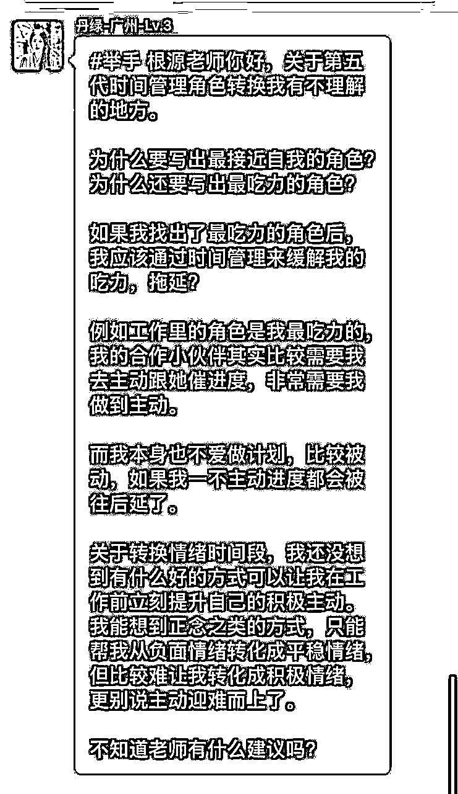
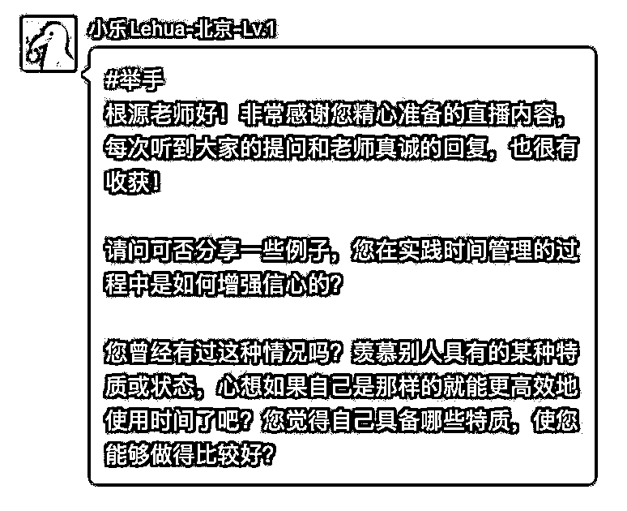
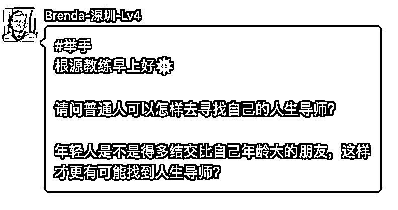
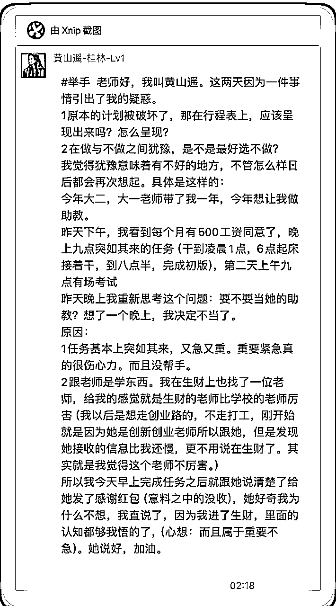

来源：https://oee5lr7gsk.feishu.cn/docx/EnntdgKczoxr7jxXjftcwKELnyh
桥豆麻袋：
#举手
教练你好，我是乔豆。感谢您昨天的课程，收益很大。我想请问下，您有没有推荐的用于记录时间或者列清单的APP或者其他工具呢？
Hello, 桥豆麻袋你好，
这确实是一个挺特别的昵称，谢谢你的提问。
我自己有习惯使用的APP，就是『滴答清单』。
那这个软件，要么今天，那么下周一我会做一个我自己的使用介绍。
虽然我没有为这个软件代言，但这个软件我用了很多年，
它也是我目前使用上我觉得最方便，以及最能够达到我想要的目的的软件。
所以，请稍等我一下，
我今天先不介绍，就是应该是最慢可能下周一，
我会有一个比较完整的小型的影片，教你们怎么使用，以及我是怎么用的。
所以，这部分要麻烦你稍等一下，谢谢您。
HI张不高-山西- Lv4：
#举手
烦请老师再阐述一下，工作和金钱的区分
另外，想问排序越靠前，是代表这个事情应该占用更多的时间吗？
Hello, 张不高你好，这昵称倒是特别，
是因为不高所以叫张不高吗？我就很好奇的想问一下。
在我的定义里面，工作跟金钱真的是两回事？
我不知道你有没有看过一些人，他很认真的工作，每一天忙的要死，
结果，一个月也没赚多少钱，可能就是那个五六千块，七八千块。
他把工作时长再拉长两个小时，又多加班，每年的收入也没有很大的增长，甚至没有增长。
在我看来，那个就属于工作很认真，但是他的工作可能跟金钱没有太大的挂钩，
因为他得到的只是一笔稳定并且不变动的收入。
所以，我对于『工作』的定义就是做事，我每天花多少时间做事，做工作上面的事情。
那如果说谈到『赚钱』。
我可能就会把副业归在金钱里面，因为副业一般是没有办法达到稳定薪水的。
就是我今天做了副业，我不可能每个月时间一到就有人给我转钱，我得自己努力的去获取金钱。
所以，如果说严格的去做个区分，我会把副业归在赚钱里面，我会把主业归在工作里面。
我的主业其实对于大多数人来讲就是一个自由职业者的状态。
所以在我的体系里面，我就不会有工作，我只会有赚钱，这是我的工作性质做的区分。
那如果说你是同时有主业，同时有副业，
那主业我就会归在工作，但是副业我就会归在赚钱。
所以，这个是在价值排序上我自己的定义，也提供给你参考。
然后，第二个事情是，价值观排序越靠前一定得花更多的时间吗？不一定的。
你看，就像爱情，我前面的回答有提到过，
我总不能说，因为我的爱情优先，我一早起来就陪我的老婆，陪到晚上睡觉，
一整天都陪她，那肯定不切实际的。
所以在越靠前的价值观，一定是我在最终做排序的时候，
就是如果今天我的行程出现了冲突，我会优先选谁。
假设我的家庭优先，我的设定是每天晚上的6点到7点，
我一定要陪孩子，陪他们吃饭，陪他们玩一会儿。
那结果，有人突然跟我说：
根源，那个刚好6点到7点，我们要加班，你来公司一趟。
但是那个时间点，我的设定是陪孩子，而且我的价值跟排序，我的家庭是最靠前的。
这时候，我就有两种选择了，
一种选择就跟老板说，没问题，我会去公司加班。
如果我的工作排序是优先，我可能会选择回去公司加班。
但如果今天我的家庭排序是更优先的，我可能就会拒绝。
我说，老板，对不起，这时间我答应我要陪我的孩子。
你当时会用我，就是因为你觉得我很靠谱，
那我觉得我不能够去，不然就丧失了孩子对我的承诺。
就是我承诺过他，这个时间点我一定得陪他，所以这时间我没法加班。
但是，如果七点过后，我陪完孩子之后，公司还能进去，这事情还没做完，我可以回去帮忙。
但这时间点，我可能没有办法突然的安插主管那边安排的工作。
这时候因为遇到了冲突，我把家庭放优先，我的取舍的标准就会更清晰。
这时候就叫我的价值排序是把家庭放靠前。
所以，这是针对你问题的回复，谢谢你。
HI张不高-山西- Lv4：
谢谢老师回复，老师的声音太有亲和力了。我分别听了两遍，理解到，有启发。
我起名的缘由回答一下啊，我很喜欢梵高，昵称想随他一个字，但现阶段觉得还没资格叫张高
打算赚到100万就改名叫张高高
Rosy-北京-Lv.3：
＃举手 教练，早上好，我看到大家写的计划，感觉每天能做的事情都非常的多，但是我列出来我今天需要完成的工作之后，就好像没有什么闲暇的时间了。
我的价值观排序也是现在是自我和工作排第一的，但是未来的排序工作排最后。我不想未来只拿一份稳定工作的工资，但是好像现在我别无选择。
基于这样的情况，我该如何规划自己的时间呢？如何调整任务和计划，才能让我实现未来的价值观排序？
Hello， Rosy你好，我应该没念错吧？念错你要纠正我一下。
谢谢你的提问，我认为分阶段。
因为这个阶段你才刚开始尝试着去做一些行程上的管理跟安排。
我觉得你可以给自己设定，可能3个月，可能半年，或者可能1年，
我每个月或者是每一季，我能不能够去做一点细微的调整。
因为现阶段工作时间一定是固定的，
那能不能够把副业时间加上一点点，然后让副业时间慢慢的变多，工作时间慢慢的变少，
我觉得这是一个互相调配的过程。
因为你不想只拿工作的薪水，那就代表你一定得有副业。
那我最最怕的就是很多人在做副业的初期没有给自己留下固定的时间。
假设设定周日休息，我周一到周六，每天晚上8点到10点，
我只能做副业，我不会做其他的事情，没有任何事情可以影响到我做副业的这个安排。
如果说你可以有一个固定时间做固定的事，
你就能够让你未来有机会可以不止拿上班的工资养活自己，你可以有一笔额外副业，
更高的收入可以让你同时养活自己，又可以让你完成梦想中想做的事情。
所以，现在你的目前的行程，最好的方法就是
你把便条式里面加上一块叫副业的学习，副业的培养，
反正都好，不管你做哪一个，一定要跟副业相关。
然后呢，这个固定时间最少持续3个月，你就可以改变你的现况。
但如果说你没有办法在固定时间安排，
可能我今天是晚上6~7点，明天是晚上7~8点，后天是这个晚上的11点过后，
当你开始有浮动的时候，它就不稳定。
所以，初期你想增加你生命中的一个新的事情，
它一定要在固定的时间，你的身体才会有一定的记忆。
就是告诉自己，时间到了，我得干嘛，
不要让它浮动，一浮动你就不稳定，一不稳定你就很难更快的完成你的目标。
所以，这是这个阶段我想给你的回答，谢谢你。
缘溪行-郑州：
#举手 你好教练，我是缘溪行
我的问题是：我对时间感知不是很敏感，无法对每个待办事项有一个较为准确的预估时间
经常会出现每日安排事项过多或者过少的情况，每当安排过多没完成时会有挫败感，而安排过少提前完成时又会出现不想做计划以外的事从而摆烂
尝试过记录时间，但每天变量太多了，比如写一篇文章，有时会用1个小时，也有时会用15分钟，依旧没能改善
Hello，缘溪行，你好，你这个昵称倒是挺特别的，
有一个很大的点是因为你没有把每一个行程、每一个便条式的内容加上一个时间节点。
可能今天写文章，我要在30分钟之内，今天写文章我要在一个小时之内。
然后，每一次当你设定时间节点的时候，你的脑袋中就会有一个大概完成的状况。
当你把时间慢慢的缩短，你就可以增加你完成这个事情的效率。
这个你必须得加进去，不然的话，你会感觉
好像每天我都做，每天我都写，但是好像没有什么样的进步。
我举个例子啊，我最开始在设定写文章的时候。
我会给自己设定写的字数，可能是今天我的文章，我要写3000字，
然后我同时设定要在一个小时半之内完成，
过了一周，我一样设定今天要写2000字的，3000字的文章。
但是，我必须得在一个小时10分钟之内完成。
我们在设定时间节点的时候，必须得给自己一个进步的空间，
我们才能够越做越有效率，越做越高效率。
所以，这是一开始我自己在做这个事情，我的做法。
第二个就是对时间没有概念，其实是因为你的时间管理可能用的比较单纯，
可能就是用第一代或者是用第二代。
那这一次的七代时间管理全部讲完之后，
你可能会对于这个问题有一个不同的看法。
所以，这个问题的后段，等我们这一次的7天直播全部都结束之后，
我们再来讨论这个话题，说不定听完之后，你可能就得到解答了。
所以，我先在我我先回答到这个地方，然后其他的补充等我们之后的内容讲完之后，
如果你还不懂，我再一起补充，到时候你可以再提问一次。
Kevin-杭州：
#举手
老师，你好
我的计划做的很好，有很多想做的事情，但是很容易放弃，没法去坚持
比如，下班之后，上了一天班累了(工作强度比较大，加班多），就想放松下，让自己开心开心，舒服舒服，缓解下压力
比如，看看小说之类的，然后一看就停不住了，有瘾，就一直看了，一直玩了
本来的计划是，下班之后，用空闲时间，学习，搞副业，结果啥也没做成
这样，会让我很焦虑，因为我知道，我正在做一件错的事情，将来可能会因这个付出很大的代价(比如，失业后，又没有副业的收入)
想问下你，有没有什么好的方法，增强我的自控力?
Hello， Kevin，你好！
我觉得自控能力这个事情在初期，如果你真的想练习的话，
不要给自己设定这么大的目标。
假设你想做副业，你可以设定我今天副业，只要做30分钟。
因为做副业的过程，你之所以不想持续，是因为你没有得到正反馈，你没有得到很好的能量跟好的感觉。
所以，如果一开始你给自己设定一个过高的目标，就会导致你做不下去。
最开始，如果你希望这个事情可以坚持，最好的方法就是
一开始的时间先不要这么长，从20分钟，从30分钟开始。
但是，贵在持续，
你不能够这个今天只做一段，明天就不做了。
你可以每一天先让自己有2~30分钟的时间去练习你的手感，
当你的手感慢慢稳定之后，你就可以在做的过程变得更加的上手，更加的擅长。
然后，从20分钟，30分钟到40分钟，
随着时间慢慢的拉长，你就会知道说，原来副业我应该这么去掌控。
那这个方法是我觉得初期在练习自控力最好用的方式。
所以提供给你参考，谢谢你。
志愿者 七七：
#举手
教练，我还有个问题，（现在是没有找工作的状态），每日写了计划清单，早上也设定了闹钟，然后身体告诉我起不来（也可能是我盖洛普适应才干太靠前[破涕为笑]），这个有没有什么建议呀
然后对于晚起的情况，那些早上的计划是不做了，还是说把它们并到下午的计划里去呢，这样其他计划的用时是不是也要做一下调整
哈喽，七七，你好！
这个问题其实不是时间管理的问题。
这个问题是你不想起来的问题，那就是你得问自己呀，我为什么要起来呀？
很多的人都说你早起，可是他没事做干嘛早起？
那第二个是如果说你真的有事做，但你依旧起不来。
教你一个最好的方式，你去找一个人，你可以找我，或者找领队，或者找你的朋友、同学，
又或者你可以开一个群，你跟大家讲，只要7点整我没有起来，没有在群里面说早安，
我就罚1000块，一天没起来就罚1000块。
这时候，就看你有多少资产让你罚了。
你要用一个让你会很痛的方式，才可以去前期更好的养成你最想养成的一个新习惯。
所以，这个问题便条式是没办法解决的，只有叫棍可以解决，只有罚钱可以解决。
因为早起是有目的的，你很清楚知道你早起要干嘛，但你做不到。
假设你能找一些更偏激的方式，更剧烈的方式，让你会感觉到痛，
你才能够真的在早上时间到，你可以准时起床。
所以，这个是提供给你的小小的建议，你可以参考这个方案试试看。
这个希望对你能够有帮助，谢谢你！
大猛-广州：
#举手，老师用的那款清单软件，就是你讲课手写的是那个软件
Hello，大猛，你好，我使用的软件是『滴答清单』。
苹果跟安卓都能够使用，我也用了好一阵子了，挺好用的。
然后我的手写软件是ipad的『Goodnotes6』，我记得需要付费，
因为主要是这些是我自己的刚需软件，所以我可能就不太会考虑要不要付费的问题。
然后Goodnotes6的好处是它是终身的，
滴答清单好像是每个月也就几十块，所以你可以考虑考虑。
然后，周一的时候我会特别介绍一下我的滴答清单的软件，我是怎么使用的。
那Goodnotes6的这个手写软件，因为跟这次主题不太一样，所以你可以私下问我，
或者是我这几天加餐的时候，特别发个小影片，
也可能是我去找小红书的教程，各位就可以按照它上面教的方式来使用。
所以这是回答你的问题。
逑乐-成都：
#举手
@教练-根源 根源教练有没有把时间管理交给或者应用到自己的爱人和孩子身上？如果有你是如何做的呢？
因为我今天想到如果把时间管理在孩子身上从小培养起来对他的一生来说都是有益的，我自己觉得时间管理用好了的话会让自己的每天过的更充实和更有意义。【我之前经常在周末连续刷动漫上班的时候又觉得极其颓废和无意义[捂脸] 但是又逃不出这个怪圈】
Hello，裘乐，你好，这个字应该是念“求”吧。
我如果念错的话，你再来纠正我一下。
我没有耶，就是时间管理这件事情，我更多的会用在我个人身上。
那像老婆孩子，如果说你真的要谈到有关联的话，
就是如果我们可能已经定好了周六周日我们要出门，
周六周日只要到了，我都会特别把时间留下来给孩子跟给老婆。
所以，更多的是我用在我的身上，然后我自己的行程安排，让我的家人大概率都能够配合到我的行程。
所以像周六周日，我老婆也不会特别安排事情，因为我们的孩子都还小，所以他们也不可能有自己的行程。
也就是严格来说，并不是我在他们身上使用时间管理，
而是时间管理用在我的身上的同时，我们整个家庭会有一个挺好的配合。
那再举个例子，
就像是我跟我老婆因为有爱情的时间，我们每天晚上都得睡在一起，我们都得抱抱睡觉。
所以，我跟我老婆会有一个共识，那个共识就是
我们如果说真的有工作上的转变，我们不能够找需要出差的工作。
也就是我们像分开最久的可能就是我老婆带孩子回台湾那几天，
再来就是前几年的疫情，那个应该是我们两个之间分开最久的。
一般来讲，我们不会有工作出差分开的问题，
所以，严格来讲，这个也算是我自己的价值观排序，延伸到时间管理，延伸到我们整个家的一个行程安排。
不知道这样子的回复能不能够对你有帮助。
所以，我先回答到这儿。
如果说过程中可能有你觉得想追问的或者是不懂的，欢迎再追问，谢谢你！
呼哈-南京：
@教练-根源
教练，我做事情经常走神。
即使做了计划安排，但到具体的事情做着做着就去玩手机或者刷网页或者做其他事情[捂脸]。
除了那种很紧急的工作我会集中精力完成，集中精力的时间也很短，半小时以内吧。
一天下来的工作效率很低下，我很苦恼。
教练有什么好的建议吗？
Hello，早安，我这个名字真的特别，谢谢你的提问啊。这个问题应该是上周的，但是我可能忽略了我没有解答到，所以我现在补上。
其实有了技术之后，大多数的人都依旧没有办法去实战。因为技术并不是真的，可以把某一个能力变成自己东西的一种方式。很多时候其实是我知道了技术，但是我却不知道使用方法。以及我没有更好的管理自己的方式。这个其实是所有技术会了之后，我觉得第二阶段更难的地方。
第一阶段要掌握技术，我至少要知道什么东西可以改善我的现况。
第二种叫如何去找到一个，更属于自己能够使用，并且驾驭这个技术的方法。
第二个是，有了技术之后，这个技术我不一定要用。就很像是有人学了时间管理，但是他的人生在没有时间管理的时候，其实过的也可以呀。每个月该上班上班，该领薪水领薪水。
你只能说，他无法过上更好的生活，但最少他现在的生活已经能够完成最基本的生存。就算不突破也可以。你可以理解为过的还行，凑合或者是苟且。但不管是哪一个，他不用担心生活的问题。
所以，当时间管理进来之后，如果他原本的生活就已经过得还行了，那他为什么还需要多一个时间管理去管理人生呢？我觉得意义其实是不大的。
也就是这个问题的背后，你一定得先问自己，如果这个事情没有完成，我到底要付出多大的代价？
我其实很喜欢聊代价思维，虽然这个思维听起来好像有一点负面，但是人生中有些事情你不做，你就得为此去做一些额外的付出。就像是我如果早上设定，7点起来，然后我8点前要把一个文章打完。结果7点没起来，我7点半才起来，就说这就两种情况嘛。
一种情况就是，我文章得打快一点。第二种情况就是我8点整文章没有发出去，所以导致我承诺了一些人，告诉他我8点要准时出来。结果我没有出来。那他们认为我是个没信用的人，那你要付出的代价就是你丧失了在别人心中，对你的信任，所以这都是代价思维。
当你发现你工作效率很低的时候，你可能会付出什么样的代价？有可能过了一年之后，你们的老板准备要找一些优秀的人，给他涨薪水，或者是更好的职位。然后看了很多的表格，发现这个人的工作效率很低。他每次总是拖延，要不，不选他吧。
所以最终你就丧失了这个机会。就是当这个代价发生的时候，我们总会懊恼。哎呀，早知道当时我多认真一点就好了。但是，短期的代价很难让你真的改掉一个习惯，只有长期的代价。所以这个方式如果说你真的觉得，它很重要，必须得改的话。有两个我自己觉得挺好用的方式，当然我自己也这么用。
第一种就叫创造代价。
就像我前面很多的回答，我都有提到，你找一个人盯你嘛。你找一个人，你就跟他说，我如果8点前没有把什么东西完成到什么样的目标，并且发给你看，我在你这里压1万，我一次没有完成，我就扣5000，这个叫你创造代价，这种方式其实最好用。
因为大多数的人是叫不动自己的，初期在一个月也没赚多少钱，就一个月赚的钱。我是这么定义的，一个月赚的钱不到3万，你是无法具备调动自己的能力，这是我目前统计出来的一个我觉得比较精准的数字。就一个月你赚的钱，没有超过3万块，你就别想自己动自己了，你就让别人叫动你吧。
第二个就是通过环境。
在一个环境里面跟所有人说，我一定准时打卡，我一定准时干嘛干嘛的。如果没有，我就给大家打红包，那这时候你除了丧失钱之外。如果你没有完成。大家的心中也会觉得哎呀，这个人不好，这个人不能合作。他每次说到都没有做到。
所以，尽量找到那些会让你感觉，很痛苦的代价，偿还起来会很心痛的代价，刻意的去创造它。
你就能够因为这个刻意创造的过程，改变你这样子拖延的习惯。所以，这个是我自己对自己使用的方式，那也提供给你参考，谢谢你。
鼎鼎-成都：
#举手，
老师您好，今天再次实践了用彩色来标注的便条式时间管理。
我有个问题，当然可能并不是时间管理范围内的。
我的整个白天都执行的不错，下午4点多的时候发生了一件事情，让我心情很不愉快。
接下来，我发现我无法按照这个便条去执行了，所以累积了很多的任务，这个时候我该怎么办？我是继续强迫自己去完成今天的任务呢，还是给自己放假呢？
丁丁，早安，很抱歉，这个问题应该也是前几天的提问，但是我当时可能疏忽了，我没有看到，所以现在补上。希望希望你能见谅。之后如果发现，我没有及时的回复。在当天晚上没有回复，请记得特别的告诉我。如果说这个答案，是你很迫切的想得到解答的话。
我再来回复这个问题。第一个谢谢你的提问了。第二个是，其实做时间管理的初期，我们没有办法在时间范围之内把这件事情做完，是非常正常的。因为这不在练习嘛，重新练习掌控自己的能力。
如果你发现大多数的事情，没有在时间内完成，我觉得不用气馁，因为我自己在练时间管理的过程，其实也是同样的状况，我也花了好几年的时间。才能开始慢慢的做到，让自己说到做到。
我觉得初期，你可以设定有一些事情可能很重要的，就像我们从便条式进步到优先次序，最少让自己把优先次序前60%的事情做完。你才能够因为心情不好，不做事。
我觉得这个需要练习，因为掌控时间的过程，也是掌控情绪。你要想，如果说你可以成为那种头天晚上，安排隔天的20件事情，我隔一天到睡觉之前，我一定可以完成所有的事，那你得多了不起。这个本来就是一个非常稀缺，并且非常高级的能力。
所以既然你都知道这个能力很高级并且很稀缺，那练习的时候我们就不用给自己这么大的压力。可以把时间拉长，可能给自己设定半年或者设定1年。我自己其实是用了接近快3年的时间，我才能够做到写上的东西想办法完成。
也就是，我有3年的时间都在练习掌控自己的过程。现在也不过才几天，所以如果说你发现心情真的不好，会导致你做事的效率。第一阶段你可以选择，那就不做吧。我觉得心情好更重要。
但如果你想更进一步，我都会这样这么给自己要求的，就是我就算心情不好，我依旧要把事情做完。有可能这个事情它最终的结果不如预期，但最少我控制我，我控制了我的情绪，并且想办法做完。
我举个例子，就像是我在准备，可能在销售客户，我要卖产品的时候。我有自己的课程嘛，那我可能设定每一天我必须得跟3个人，去谈我的产品。
就发现那天我因为某一些事情，导致我心情不好，但是时间到了呀，我设定下午1点到2点，我必须得跟3个人谈我的产品。可是我心情不好，那这时候，我到底谈还是不谈？
我还是谈。我有可能谈的过程，不会像能量高的时候这么的顺畅，但是这并不妨碍在那个时间，我最少把我的事情做完。因为做完跟做好，本来就有差距。
我也在练习自己。我最少到现在为止，我能够练习到我已经不管我的心情好与坏，我只要安排的事情，我都能够在时间范围之内，把这事情做完。这是这个阶段，我正在练习的。
那我给自己下一个阶段的期许就是，不管我的能量好与坏，时间只要到了，我不止把事情做完，我还能够把事情做好。这是我下个阶段我想练习的。
所以，我也提供我自己的路径，跟我曾经走过的过程，给你参考。希望对你能够有帮助，谢谢你。
桥豆麻袋：
#举手
老师你好，我是乔豆，关于重要不紧急的事情如何去提升自己的执行力，我想咨询一下。
先给您说明以下我的情况：
我是18年本科毕业参加了工作，然后22年考了一个在职研究生MBA，想提升自己的认知、提升学历以及扩展自己的视野。
在2023年也就是去年11月，也就是在职研究生的第二年，本来应该正常进行在职研究生论文开题的时候，我正好有一个换工作的好机会，当时忙于换工作以及熟悉和适应新工作情况，也没有赶上同班同学的集体论文开题进程。但是当时我认为我本来就是读的在职研究生，当然是工作的事情比较重要，所以优先了工作这边。
24年也就是今年，在新工作稳定后，于3、4月份我又开始了副业的探索，因这个论文开题的事情一直被搁置了。
到今年已经2024年10月，我的新工作已经稳定朝八晚六的时间了，副业也步入正轨稳定下来了，我开始做我的“重要不紧急”的事情，也就是研究生论文开题了，但是发现自己怎么都静不下心来写论文。
最开始我找到了一个办法，就是每周固定两天下班后，强迫自己马上回家吃饭洗漱，然后开车去图书馆。在图书馆人人都在认真学习的氛围下，我终于可以开始写论文了。
但是上个月也就是11月，我在把开题论文给导师看，并且得到不好的评价之后，我感觉自己几乎完全写论文的动力了。一直到今天快一个月了，我一直都没有再写论文了。尽管我的日程每天都会安排自己“写半小时论文”，尽管我还是会强迫自己去图书馆，但是大多数时间都是再发呆，或者刷手机，很难再有状态去改写优化我的论文了。
我很确定“写论文”以及“在职研究生毕业”是我“重要但不紧急”的事情，原因如下：
1.我已经修完了在职研究生的所有课程，在职研究生的学费我已经交完了，虽然是沉没成本，但是只要我完成论文进程我就可以毕业了，我没有理由这个刻放弃。
2.最近这个月我甚至会以“写论文”为理由，放弃自己的娱乐世界、社交时间和运动时间，尽管最终没有好好写，但是我认为这件事已经影响到我的生活了，如果最终没有完成，会影响我的自信心以及对其他事情的执行力。
3.不管承不承认，现在这个时代多一个研究生学历肯定是没有坏处的。
4.学校有规定六年内完成论文就可以，也就是我还有三年来写，而且按照正常完成进度的话一年可以完成。虽然看似有三年“不紧急”的时间，但我很清楚如果这个刻不进入的话，一直拖着有可能最终六年过去我也还没完成。
基于以上信息，我想请问老师，除了“去图书馆用氛围和环境来影响自己”和“可以安排出时间要求自己”，以及我已经“深刻认识到这件事情的重要性”的基础上，我还有什么办法能提高自己的执行力，真正能够让自己去静下心来写论文呢？
Hello，桥豆麻袋，你好。
早安，谢谢你的提问，你的提问挺长的，我看完了。
我不知道你有没有看昨天的直播，有一个提问，我最终给的解答叫『付出的代价不够大』。
当然，我们先回到这个问题的本身，我跟你也一样，就是做那种重要不紧急的事情，我也会懒惰。
像运动，有时候一周四天，有时候一周3天，有时候一周只有两天。
我都知道，不运动，我的讲课可能就不会有这么充足的体力，
但很多时候我依旧偷懒，有时候可能那周我都没有动，所以这是很正常的。
因为我们大多数的人都是短视、急功近利的，
就是如果说3天5天没有办法达到效果，我就不去做它了。
所以，很正常的，只要是个人都这样，
也就是为什么成功者这么少，优秀的人这么少，
因为那些优秀的人，他们也必须得调动自己，想办法让自己去做那些每一天多一点重要不急的事情。
像每个月我的行程里面，虽然大多数都是重要不急的事，
但可能有一些我也觉得我做起来没有效率，所以这时候你必须得给自己“吃一些比较剧烈的猛药”。
也就是，如果你已经很清楚的知道这件事情，它超级重要，
但是现在我还不一定可以调动自己，那我有没有一个透过被动的方式叫动自己，
可能一些比较激烈的方式叫动你自己。
你看，就像我好了，我最近想开始认真的把读书这个事情放进我的排程，
那这个读书，就已经不是我的随性读了，而是我想要设定我每一年能够有固定的读书量，
可能是一年12本，或者一年24本。
那这个事情很重要，它是重要不急的，现在不读没关系，
以后的话，如果说不读书，我可能会面目可憎，我可能会没有输出能力，我可能会没有增加认知的能力。
那我就会开一个群，那个群可能收个300块，可能收个500块，
让大家围观，因为我习惯做知识付费嘛。
然后，收完之后，我给的承诺叫
这一年里，只要每个月我没有固定的把某一本书的心得发上来，我就把这个钱赔给你们。
就类似这样子的例子，
对于我来讲，这个事情事情就大了，
如果我这么设定，我就一定会读书，因为我面子挂不住。
如果那个群里有100个人，我一个人罚500，那这是多少钱呢？我这钱可多了。
我们之前知识付费已经做了几年了，不能讲做多大，总有一些名声吧。
这个名声如果说被败坏的话，这个代价我真承受不起。
名声败坏了，我就没有办法赚到生活费了。
那这些都是我不得不做的理由。
所以，现阶段你要想的就是有没有一些你不得不做的理由，
如果你能够想到不得不做的理由，这个理由会促使着你，
如果不做就会发现太丢脸了，太可怕了，或者是代价太大了。
当你开始有找到这个理由之后，你再去想着怎么做会更有效率，
我觉得这个是针对这个问题我自己的处理的顺序，我不会先想到理由，我再想到怎么执行。
因为当你的理由出来之后，执行方面，你就会自己去规划了，你自己就会去细化了，
所以执行反而不是这么困难的。
那我最常谈的，也是最快的方式就是
如果你对于钱是在乎的，可以找个人盯你。
你设定一个年度目标，这一年我的工作就是把论文完成，
或者是你先设定个三个月目标，这3个月我就希望论文可以完成到多少的程度。
你跟那个人说，把我的进度安排给你，
如果时间只要到了，我们要按照进度来做，每一次只要超时，我给你打5000，
或者是你在他那个地方先给预存个2万块，一次没做到，罚5000块，这时候你就会珍惜了。
因为大多数的人都是懒惰的，连我都是懒惰的。
我就没看过有哪些人去做那种重要不急的事情，可以如这个的积极勤奋，
连我的老师都做不到，他都得用方法去逼自己。
因为当下只要不急迫，我们总会失去惰性，所以，这是很正常的。
但是，你确实可以想找解法，
那我也提供了一个我自己叫动自己的法子，那你也可以想想，你觉得哪一个好用，
又或者是我提供的方式有没有哪一个是你可以拿来借鉴的。
那如果可以，你就把它拿来用。
所以，提供这个方法给你参考，希望对你有帮助，谢谢你！
绽放-北京：
＃举手
根源教练晚上好，我是绽放，想向您请教一下已经列好了要做的事情，但是很多时候会推迟，结果就导致后续的事情都推迟了。那这样的话该怎么解决呢？
比如在六点到七点打算做一件事，七点要参加直播学习。
但是因为其他事情已经到了六点半，那这个时候我该继续计划上的事情，还是可以调整做一些其他短暂时间可以处理的事情呢？
Hello，绽放，你好，谢谢你的提问。
这个问题分阶段看了，如果说现阶段你是在练习的过程，
我都会建议这个事情如果说拖延了，那你就不能够让下一件事情继续拖延下去。
你要想，如果说你7点要上课，结果你原本的事情6点完成，你拖到了6点半，
那这时候半小时过后，你有下一个事情要做。
你既然有下一个事情要做，你总不可能因为拖延，然后导致一整天所有事情都拖延吧。
所以，如果说这个阶段你想练习的话，我都会觉得节点只要到，
如果说真的超时，那你最多就是一件事情不做，
但是第二件事情或者是第三件事情千万不能够再拖延，
因为当你不断的拖延，你一整天就会很慌张。
我举个例子：
假设5~6点要做的是A，
6~7点要做的是B，
7~8点要做的是C
结果，你的A拖延了，那这时候，B跟C接下来要做。
如果是我，我会选择只拖延一个，可能我的B只做了一半，但是，因为C的这个讲课很重要，
他在我的优先次序排的又很高，所以我宁愿我的B没有做完，我也要赶快去回到时间线上，把C从头到尾的完成。
所以如果说是目前你的阶段，我觉得不要让你的拖延变成习惯，
就是超时了，那就超时了，但是你不能够再拖延到第三件事情。
所以，这个是针对你目前的问题，我觉得比较适合你的一个回复跟执行方式。
这个方式提供给你参考，谢谢你！
绽放-北京：
老师针对这个情况，我想继续问一下，距离第三个任务（必做）还有半个小时的话，也就是第二个任务本来安排了一个小时，现在只剩下半个小时，那我应该用这半个小时来做原来的任务（预计部第一一个小时可以完成，做的话中间需要间断），还是做一些半个小时内可以完成的事情呢？
阿凌—长沙：
#举手
今天看到老师的行程安排，我很佩服，但是真的很难做到，感觉这后面需要深厚的实力和财力做支撑的。因为我有太多超出计划外的事情推动我偏移计划，从而怎么处理这些琐事，使其不打乱我的计划，请问老师有啥好的方法吗。
阿凌，早安，谢谢你的提问。
这个只能靠练习。
像你昨天看到了我的行程安排，我也不是第一天学时间管理就能够有一个这么好的安排。
像昨天我自己那样子的稳定规划，就其实近期的两年半才做到，
我的行程都跟昨天的那个图没有太大的区别，最多在这个基础上上下变动个10%跟20%，不会有太大的区别的。
但是我用了11年的时间，找到我的人生想要走的方向跟目标，定出了一个我刻意调整的每周规划跟行程，
所以我花了很长的时间去调整我的人生状态。
我也是慢慢调的，今天工作多一点，或者自我多一点，
明天运动少一点，后天爱情多一点。
我也是不断的上下微调，去找到一个我最喜欢的节奏跟我最喜欢的人生方式。
但是有个关键是
因为我有一个长期的目标，我才会知道现在我要做什么，我要怎么去做调整。
所以，目前有两个方向我觉得可以提供给你，
这个最快，但是也很难，因为这个需要有人带着你做。
但这一次的时间管理，我应该不会提到这个部分，因为这个部分有点难，它得花很多的时间。
就是我觉得这个人的时间管理我很喜欢，那我想让我的人生慢慢的变成像他这个样子，
你就慢慢的调，每一天做一点不同的变化，每一天做一点不同的变化，用循序渐进的方式，
不要一次性就是我今天就要跟你一样，那你做不到的，真做不到的。
所以，慢慢的调整，给自己可能一个月到两个月的时间，调整成另外一种不同的版本。
我觉得这是两个比较适合现代你的方式，所以提供给你参考，谢谢你。
babyblue-盐城：
#举手
请问老师，如果我暂时没有副业，是不是可以认为我的工作就是赚钱。还是说工作和赚钱是不一样的。赚钱特指工作以外的赚钱模式。
Hello，baby blue，你好，我这个名字真特别。
早安，谢谢你的提问。
对的，如果说你目前没有副业，那你的工作跟赚钱可以属于同一项。
因为我是自由职业者，所以我就没有工作，我设定的是赚钱。
所以这部分得看你目前的阶段做安排，但如果说你希望未来有一天你能够去做一个新的副业，
你其实可以把看精华帖，或者是刷风向标的时间，变成赚钱。
这个叫做赚钱的提前准备，它就是可以变成赚钱的项目，
因为我做这个事情，我是希望可能半年之后或者3个月之后，我能够真正的尝试做一个项目。
所以，如果以你目前的阶段，你可以这么去做颜色上的调整。
那希望这个回答对你有帮助，谢谢你。
丹绿-广州：
#举手
请问老师，第三代时间管理重要紧急四象限和第四代时间管理行程表如何结合？
我的问题经常是，如果我安排了每段固定时间，我经常在工作时间先做一些比较简单的工作，不太愿意去做对长期来看对自己更有用的探索性的工作。
又或者安排固定的自我时间，在这个时间段我会玩游戏代替看课程学习，可是我很难像老师一样能够给游戏赋予很重要的意义。
这种情况如何处理？
以及老师在固定的时间做固定的事上，老师你是怎么找到适合自己做事节奏，专注度比较高的时段安排的，有什么比较好的小 tips 吗？目前自由职业者，生活作息确实挺紊乱的。
丹绿，早安，谢谢你的提问。
在思考之前，你一定得先问自己，或者是你去看看那些他们真的有固定时间做固定事情的人。
我觉得这个事情有没有好处很重要。
就像是有人可能喜欢拖延，那好处就是他拖延的过程能够享受到轻松，
可以不用去面对困难的事情，然后可以让自己做爱做的事情。
因为可能那个时间点到了，他们可能必须得做工作的事情或者赚钱的事情，
其实是不喜欢的，讲真的，谁喜欢天天赚钱工作呀，
谁不喜欢刷短视频、看电影、去按摩？大家都喜欢轻松的事情。
但是你会发现，除非就是那种家里真的极度有钱，然后他的人生不再需要为了钱担心，
那他就有足够的时间去追求自己爱做的。
只是很可惜，我们可能都不是这一类的人。
所以，我们就得辛苦一点去做一些我们可能不太擅长的，
我们可能不太想做的跟赚钱，以及养活孩子养活家庭需要的事，OK吧。
那像我自己，在做我自己的规划的过程中，
我发现固定时间做固定的事，它可以给我带来一份安定感，同时能够让我的做事情效率提升。
因为我会很清楚知道这个时间到了，我该干些什么。
这个过程就不会让我像无头苍蝇一样，
一早起来不知道今天要干啥，隔天起来我也不知道隔天要干啥，
甚至我不知道我这个月我要干啥。
这样子的生活，我曾经持续过了几年，我发现那个会让我很慌张以及很没安全感。
因为我发现我的慌张跟没安全感，我想解决它。
那我就尝试了很多的方法，最后才找到了方法，
也就是固定时间做固定的事情，可以让我解决这样子的慌张。
你看，就像大多数的上班族，你说他们慌张吗？他们不太会因为金钱慌张的。
因为我只要准时9点到公司打卡，然后晚上6点下班，
这时间段，我认真的把工作完成，认真的把老板交办的事情完成。
我时间到了，我就有薪水可以领。
所以，大多数的上班族他们慌张的理由只有一两种，
但是，打混摸鱼不就是在固定时间没有做固定的事吗？
所以你会发现有一些好的习惯，如果可以解决慌张，那为什么不尝试着拿来用一下呢？
只是我们想要培养自己固定时间做固定事情的时候，他得花一点时间，
就是这不是一个一朝一夕就能够养成的习惯。
那初期怎么养成，硬逼自己去改变生活模式，
因为，改变生活模式不就是为了让自己变得更好吗？不就是为了让自己变得更稳定吗？
如果说你发现你现在是不稳定的，现在是迷茫的，
那就尝试着把一个你听到的好习惯放进你的人生里面。
你要自己做不到，找别人逼你做，两三个月之后，你就会慢慢的知道，
原来这么做，我的人生可以做一点转换，我的人生可以不一样，
这个就是时间管理的意义，或者是我们学某一项技能使用到自己的人生的意义。
然后，第二个就是如何去赋予这件事情意义
就是做这件事背后，你想得到什么。
这你得自己想，因为每个人对于人生的要求是不一样的。
我的要求跟你的要求不一样，甚至我希望的赚钱数字跟你希望的赚钱数字也不一样。
所以我觉得这个部分，我可能这阶段我没有办法给你答案。
你只能先想想这个事情的背后，我做完之后我能够得到些什么？
尝试着想一想，因为人的脑子就是透过不断的思考，不断的深入思考，让你在很多事情可以想的更完善。
所以，这部分刚好透过这次的直播，你可以去重新思考一下。
因为过去你不曾思考过，但你现在思考了。
所以，既然现在思考了，你就可以问自己，我应该可以为此想到某一些意义，
尝试先写写看，先写完一段属于你自己的思考之后，再去做比对，或者再去询问，
我觉得这个对于你的帮助可能会更大。
所以这是针对你的问题我想给你的回复，谢谢你，希望对你能够有帮助。
桥豆麻袋-长沙：
#举手
请问老师，朝八晚六的坐班的上班族，一天不得不从早上八点到早上六点都是工作时间，剩下的时间本就少得可怜，再加上上完班回到家得吃饭及休息好一会儿才能恢复精力，可以分配给其他事项的时间就更少了，这种情况下做其他类型的具体时间管理有没有什么更好的办法呢？还是说您认为周一到周五，每天下班后就做一两项其他事务就够了呢？
麻袋，你好，早安。
我觉得现阶段你要做的并不是调整你的人生状态，因为这样子的行程不也持续了好一阵子？
然后你只是可能能量不这么的高，没有什么其他情绪价值的满足感，
但对于你的生活，我觉得没有太大的影响。
所以，在调整行程之前，你得先问问，
这个如果没有定义，你就会不知道你的行程调整想要往什么样的方向，
所以，我觉得初步要思考的应该是这一年你想完成什么样的目标。
必须得有新目标，你的时间管理跟你的行程安排才会有一个不同的改变。
然后第二种方法就是，如果说你真的没法想到目标。
那你可以先按照昨天的直播分享最后打卡作业里面提到的，
你先把你的上一周或者上一整个月的所有行程颜色规划出来，
然后你就会知道，原来我的人生里面每一周缺少了什么颜色，什么事情是我几乎没有做的。
因为如果你不关注这个，你就得不到它，所以这很正常的。
所以，我觉得这部分是用两种方式提供给你参考。
如果你发现做的过程有点困难，那就再缩短，找出月目标，我这个月想完成一些什么。
然后我们再去复盘我应该补些什么，因为缺任何一件事情，你的人生一定会出状况的。
缺自我也会有状况，缺赚钱也会有状况，你缺跟孩子相处也会有状况，
缺任何一件事情，你的生活都会失去平衡。
所以这两个方式提供给你参考，希望对你有帮助，谢谢你。
大婷-北京：
老师，一件事很努力地做，干到一半发现意义变了，最初的信念崩塌了，怎么办呢
Hello，大婷，晚上好，谢谢你的提问。
如果你发现意义变了，那这时候应该得问自己，为什么事情做着做着你自己就变了？
一个人能够以终为始，
就是我确定知道我重点要什么，我确定知道这件事情的背后有什么意义，然后贯彻的做它。
这一类的人本来就不这么多，
像我自己的人生阶段，我工作了13年，我的价值观也改变过了三次，
然后有些原本承诺过的事情可能做了两年，我也突然就这么失约不做了。
我其实有过这样子的阶段，那我觉得当这个事情发生之后，可以问问自己。
一种就是问自己，为什么中间做了一些调整，我的意义就改变了，我当时的初心就不见了。
那我能不能够把初心拿回来？如果你发现再怎么努力，这个初心或者这个意义都找不到，
那这时候要做的事情那就是往前看，再找一个新的目标，新的事情，赋予一个新的意义。
然后，这时候告诉自己，我尽量不要中途反悔，
没有做到某种结果之前，我尽量不要中途逃避，也不要随意的改变。
因为如果说你发现回到过去，你想去检视过去的错误，然后尝试着去调整，发现调整不来。
那就把未来做好，我觉得这是一个最好的解法。
就是过去既然不敢看，那就把未来好好的面对。
所以，面对这个问题，假设是我，我会这么解决，
因为我的人生也经历过这个阶段，我也是用这种方法解决的，
有时候过度指责过去，其实没什么帮助的。
看看未来，你会发现人生的希望可能会更多。
所以，这个是针对问题，我想给你的回复，谢谢你。
Bingo-成都：
#提问 如何向根源老师第四次领航时展现的，能按照6类价值分类显示日程管理。
已经做的：
① 在滴答清单软件的【清单】中设置6类清单，每个清单按照老师要求设置对应的颜色；
② 每个清单均为“任务清单”，采用“时间线”模式展示
疑问由来：
设置任务后，将每类任务归属于对应的清单，但不论是按日展示，还是按周展示，所有任务均显示为灰色，而不是清单对应的颜色。
已做的尝试：
① 查阅滴答清单教程，未找到对应的解决方案；
② 设置优先级，展示变更为 按 优先级 的颜色显示为 红色、黄色等。
Bingo，你好，谢谢你的提问。
我在应该是昨天，还是前天，我有发过一个小小的视频，就是用我的名字发的。
如果说你不知道我发的是哪个，你可以在社群里面，搜索我的名字，找到我曾经发过一个影片，
那个影片我有详细的教怎么使用颜色的区分，颜色区分之后再展示成图表，会有相对应的改变。
我不知道那个影片你有没有看，如果说那个影片你没有看，你可能只是去找小红书上的教程。
那你可以先搜寻一下群里面我曾经发的影片，
如果那个影片看完之后，你依旧没有办法得到解答，这个问题你再问一次，我再教你。
那如果说影片你没有看过，那就先看。
因为那个影片我记得我曾经发过两次，所以可以先找找过去我曾经有给过答案的方式。
OK，谢谢你。
forest-南京：
#举手 老师你好，因为我是全职妈妈，虽然也有自己日常的工作在做，但是是弹性时间，也没有收入压力，做多做少不影响。我发现家庭事务上花了我很多时间，接送孩子上学上课，陪孩子阅读，玩，社交，家里的装修，家务琐事，家庭的采购，准备家庭旅行，学校的活动和事务，每一件事，很多事看起来都是重要紧急的事情，占用了很多时间和精力。我的疑问是不知道怎么在这些事上怎么去区分重要紧急和重要不紧急。比如洗衣服（很重要诶，不洗的话脏了臭了），购物（牛奶不买，家人就没有的喝了，影响健康），送孩子上学放学（除了我没有人可以接送），家庭对我来说很重要，可是我也不想六七十的精力都在这上面，会影响到赚钱和自我成长
forest，早安。我应该没有念错这个英文。谢谢你的提问。
并不是所有的事情都一定要放到重要不急里面。如果说我们单纯讲洗衣服，衣服不洗了会臭，重要紧急的这个第一象限，它有一个关键是当下不做，一定要付出代价。也就是一栏衣服，第一天如果没有洗，它不会是重要紧急的事。因为一天不洗没有关系的。
就像我们家孩子的衣服，平均两天洗一次，大人的衣服三天洗一次，尤其现在是冬天。我们换衣服的频率没有像夏天这么的高，也就是放两天，它就变重化紧急，但放一天，不是呀。
这个事情，他最多就是一个代办事项，不一定要放到第四项，不一定要放到重要不急，的这个四象性里面，因为没有意义。
你也可以说，我们为了要练习，可以去定义洗衣服属于什么，处理孩子属于什么。但如果说不是为了刻意练习的话，这种生活上的琐事，该做就把它做掉了。
最怕的就是，我们都知道衣服三天不洗，会变重要紧急。但是你就硬撑，撑到3天你才去洗这个衣服啊，那这事情就很严重了。又或者是可能今天像我我儿子昨天感染的诺如病毒，然后晚上突然吐了，吐了之后，被单很臭呀。
被单很臭，我是不是得当下洗掉？那如果说当下，因为我想睡觉，我就不想洗。第二天起来很冷，我又不想洗。完了这被子，它不止臭，它可能会长细菌，可能还会有病毒感染。
这种情况之下。这个洗被子，我就会放进待办事项，它就会是重要紧急的事情。
所以，我想回答的第一个是，并不是所有的事情，都一定要放到四象限的分类。这是第一个我想要跟你说的。
第二个是，这些事情其实是能预测的。可能学校需要家长干些什么，或者是家里有些事情你需要怎么安排。因为它是可以预测的，所以做的过程。照理来说，应该不会慌张。
因为重要紧急的事情会有那种做的过程，很慌张的感觉。如果做起来的过程不慌张，它是没有不需要归类到重要紧急的事情。
那如果说这些事情，你都能够做的很擅长，做的很上手。就像我讲课吧，我每天我也要讲课，那讲课会让我感觉很慌张吗？不会，因为我已经讲习惯了。所以我觉得在做这一些日常琐碎小事的时候，能不能够让自己做的过程，可以有效率？
就像是洗衣服，能不能有效率？洗衣服可有效率呀，家里有烘衣机跟没烘衣机的效率就不一样呀。我能不能够为了让我每次洗衣服晾衣服的那个过程，我可以省下个20分钟30分钟，所以我决定存钱买一台烘衣机。
这个就是增加效率的方式，虽然花了点钱，但是花了这个钱可以让我节省掉很多的时间。那你要想每一天多节省个20分钟，那我不就可以拿20分钟去看看书，看看文章，做一些其他的事情。
你写到了购物需要买牛奶，像这一类的事情，在我自己的安排里面，他几乎就不会被我放进代办事项。我最多就是提醒啊，今天记得买牛奶，可是他不会影响到我的时间。
有一种叫，我可能得去超市买。一种就是我每一周三、周六固定是我到大卖场的购物时间，又或者是我再更便捷一点，我买了牛奶，我一定用美团。家附近如果有盒马超市，如果有一些其他的啥啥啥的超市。美团叫这个东西，不用花太多时间的，又或者是我可能在淘宝上买，我一定会固定在某个时间买。
因为买牛奶，如果你淘宝上买，一定是隔天到或者是后天到嘛。那我就可以再提前两天做这样的准备。所以这些事情当你能够做到提前安排的时候。你会发现你心目中的慌张感就不见了。
你就会定到每一周的哪一天，我应该干些什么，这个可以让你非常的游刃有余的，去处理你的时间。
我不确定你孩子是不是上学了。假设孩子已经上学了，那一上学之后，如果你可以有条有理的把你的人生所有的事情，放到一个很适合的位置，你处理的过程就不会很慌乱。你的效率这么高，就可以去做很多不同的事情啊。
可以做点副业，可以做一点学习，甚至你可以去做一点小兼职。这个是你的问题，我目前想给你回复的。
因为现在你的阶段其实这些琐碎的小事，是不需要用到第三象限的。只需要用到便条式，跟优先次序，我觉得也很足够了。再加一点行程表。
先回答到这儿，那如果说，听完之后发现有不懂的，那欢迎追问，谢谢你。
白粥-常州：
#举手 老师好，我看了您上回直播说每周日会写出下周计划，但是因为我工作原因，上班下班时间不固定，并且上班期间会有碎片时间不需要专注工作，但是时间也不确定，并且会随时被打乱，（例如今天下午1点上班，8点下班，明天可能下午5点上班，凌晨2点下班,后天可能下午3点上班，10点下班，就是没有规律)所以在这种情况下想请问如何规划。谢谢老师。
白舟你好，谢谢你的提问。如果是这样子的工作情况。假设啊，你把你的工作状况拉一个月，有没有办法大概的预估，什么时间点，大概什么时候会上班，就这是第一个解决方法。
因为我不太知道你的上班时间的规律，能不能够抓出来。那如果说你上班规律没有办法抓出来，那能不能够计算出每一个月上班时间，固定是几个小时，或者是每一周，固定是几个小时。
如果说你可以清楚的知道，每一天可能固定上班是6个小时。那你就能够知道吃饭时间几个小时，睡觉时间几个小时。这时候假设你没有办法在固定时间做固定的事的话。你就可以变成我每一天，最少花2个小时在副业上，或者每一天花2个小时，在学习上面。
因为这是另外一种变通的方式。这个前提是你的工作时间，没有办法找出一个固定的规律。只是我现在我肯定没有办法想象，就是你的工作时间，为什么会有那么大的浮动。
因为不管再怎么浮动，应该可以大概有一点规律能够抓。当然这是我的一个猜测，只是因为这个细节，我我不太清楚。
如果最终你发现，不管怎么去预测。你总是没有办法知道什么时间上班，什么时间下班，那你就最少给自己设定每一天一定要有个固定的时段。
那个时段就是时间点，可能2个小时，可能3个小时，可能一个小时，最少要维持这样子的学习，或者是做副业的时间。
你可能没有办法固定时间做固定的事，但你最少可以稳定时间，做固定的事。那个稳定就是每一天固定一个小时或者两个小时。
所以，这是一个退而求其次的使用方式，这个方法提供给你参考。因为如果今天是我的话，假设我真的拥有一份完全没有办法抓到规律的工作时间，我应该会用我刚刚说的方式来操作。
提供给你参考，谢谢你。那如果可能有不懂的话，再欢迎你追问，谢谢你。
白粥-常州：
@教练-根源
感谢老师回复，目前因为工作没有办法抓住规律，所以我也是按照老师说的这个方法去做的，每天拿出固定时间做副业，导致我可能只能抓取其中能够空闲的几小时做一件事。剩下的事都是碎片时间完成。
工作内容是直播，我们老板是主播，直播时间完全根据他的状态，以及他的想法来播，一天一个想法，所以难抓住规律，或者会临时突然安排其他工作，也拿不准。所以我也是在不确定性中找规律了。
我具体做法是下午一点到凌晨两点是直播时间，但不确定场次及时间（比如一点上班，播了两场他累了就说下班，比如状态好做数据或者跟其他老板开会，又有想法突然就说要播六场八场都有可能。而这些想法全部都是他临时的，所以找不到规律）。
所以我除去睡觉时间，我把最重要的事，副业放在唯一可以专注的上午，两到四小时之间。剩下的学习 爱情等全部就在碎片化时间里。可能我难受抓狂的点，就是在不确定性中找确定的时间。
私がやります！-苏州：
#举手 我想补充问一下，对于总是拖延非高优先级，但却有截止时间的事情，在截止前更愿意去做其他自己感兴趣的重要不急的事情，快到截止时间了再把这件事情变成重要紧急的任务赶着完成的情况，有没有什么解决办法呢？
谢谢你的提问，你的名字我不会念，主要是因为日语我我真念不来。
我觉得时间管理其实在完成目标有三种不同的阶段。
我就把它放着不动，我就摆烂，对吧？
假设我设定晚上9点，我得发出某一篇文章，我可能8点半我还在鬼混，我还在玩手机。但是我不管怎么鬼混，我9点整我一定会把我设定的事情完成，我不会超时。
我可能设定9点半我要发文章，但是我在8:50或者8:30我就会提前把文章打好，然后，在时间线之前发出去。
再差都要是第二种，因为第二种是不超时的。拖延这个事情其实没法解决，除非你付出极大的代价，或者是刻意练习。
类似你可能原本设定一个小时，你要把文章打完，但是你希望打文章的效率可以增加。你希望两个月之后，我的打文章时间，可以从1个小时缩短成50分钟。
那这时候，你就可以把每一次的时间提前，因为基本上你都可以最少做到，时间到了你会发，所以你只要每一次，把你设定的时间再往前多挪个10分钟，往前多挪个15分钟，用这样子的方法来刻意练习，你就可以增加你做事情的效率。
至少到了第二阶段，你就知道有什么方法，可以让你的效率提高，可以调整你的工作形态，跟工作的模式。这个会是我想提供给你的方式。
我最怕的一种情况就是，他连时间到了都没法完成，那更惨。像我自己，有时候我也会偷懒，我也会摸鱼，我也会可能在设定的时间的前半个小时，我啥都没做，我就喜欢拼最后那个半小时把事情完成。
我有时候也会让自己掉到这样子的重要紧急的阶段。但是不管怎么样，最少准点完成已经是我最差最差的状况了。那再差我都能完成呀，所以我觉得你已经能完成已经很好了。
现在想的就是，我能不能够透过行程安排，把时间每一次往前挪一点点，来增加我做事情的效率。
就这个就很像以前读书的时候。那时候我妈会载我去学校。然后，我7点整一定要到学校，不然会迟到。我们家的时钟总是快10分钟，所以，这个确切的时间是7点整，但是我们家的时钟可能已经是7:10。
那我妈每一次看到这个时间。他都会发现，哎呀，快迟到了，快迟到了啊，所以他会用这种假装的方式，或者是刻意调整的方式，让每一次做事情效率可以提高。
这个是提供给你的方法，希望对你能够有帮助。那如果有不懂的话，欢迎再追问，谢谢你。
呼哈-南京：
#举手
老师，你好，我做事情经常走神，注意力很分散，即使做了计划安排，但到具体的事情做着做着就去玩手机或者刷网页或者做其他事情[捂脸]，老是去做一些不重要也不紧急的事情，除了那种重要紧急的工作我会集中精力完成，一天下来的工作效率很低下，我很苦恼。想问问老师有什么建议，谢谢老师
呼哈，你好，对不起，这个问题上周，我不小心没有看见，现在给你补上，谢谢你的提问。
这个好解决，付出点大代价，你就不敢走神了。因为我们会做某一个决定，代表做那个决定之后，我一定会获得什么样的好处。
今天我走神可以获得什么好处？我可以获得当下摸鱼啊，当下可以不用去面对的事情啊。就那个好处会大于我可能工作做不好，被主管骂。
这时候，最好的解法就是用一些你觉得很难支付的代价，让你在固定的时间增加你的工作效率。就类似如果这个事情，我设定的是两个小时之内必须得完成。我就找一个人盯我，我就找个人督促我。我就跟他说，只要这时间点我没有完成，我就给你罚5000块。
设定一个，你这个被惩罚后，会非常肉痛的金额。我自己就是用这种方式，所以这个方法是能够最快提升效率的方法，提供给你参考啊。
因为做这个事情的背后，不就是希望我们可以提升做事效率？那这是有两种，一种叫我能够慢慢来。一种叫我希望可以更快的提升，你自己决定。
如果说你觉得慢慢来就好了。那你就寻求其他的协助，慢慢改。但对于我来说，提升做事效率是最重要的事情。如果提越快做事效率，那就代表我做很多事情，我就可以花更少的时间。所以我可能自己就会用一些比较偏激的方式。
你也能说偏激，那你如果说罚钱，你可以从200块开始，200块的红包，500块的红包。如果你发现还是叫不动自己，你试试看这事情时间点没完成，罚5000块，我看你敢不敢拖延。
如果说你这家里刚好非常的有钱，你可能对于金钱的这个维度会比我高，你就一次没完成就罚个1万块，或者罚个5万块，当然这个这个金额高低，是随个人定的。
我只能提供一个，对于我来说，我自己让我自己可以不拖延，并且效率提高的方式，提供给你参考。那希望你这个有勇气尝试，因为敢尝试你的效率就会提升。
这个是我能提供的建议，所以希望对你有帮助，谢谢你。
信步-青岛：
＃举手
老师您好，又到了期末周。求助一下，每次临近期末很多东西要复习，但个人有些完美主义，所以做的计划一旦有一天甚至一项没按预期完成，后面就都想摆烂，导致每次都不按计划完成，日夜煎熬，痛苦折磨的到后半夜。
究其原因还是拖延和完美主义。
这还有救吗😅鼓起勇气求助，请问有没有什么好办法，是不是只能从底层认知上去改变。
信步，晚上好。对不起，真的漏了。截图的时候没有注意到你的问题，不好意思，现在补上，谢谢你的提问。
我觉得这是定义的问题。就是你的提问，其实分为上下两部分。上半部叫你觉得你是完美主义者，下半部叫做，你的时间总是因为一件事情想做的好，所以就拖延。
如果说你是个完美主义者，那一天只要事情没做完，你一定不想睡觉。因为完美主义者不能够接受当天的行程，竟然没有完成。所以我觉得你可以重新定义一下，什么叫完美主义者。就我来看，我觉得这个词不适合用在你的身上，所以这是第一个我想要告诉你的。
第二个是，所有的事情的成长跟改变，一定是循序渐进的。我的跑步百米想从百米15秒，到14秒，我一定是从15秒。到14秒90，到14秒80，到14秒70，可能最后我完成我想要的目标，已经半年过去了，这是所有事情的正常规律。
如果说你能够认同这个规律，那你现在要做的事情就是不要再去关注，为什么我的事情没有完成，而是你可以换个方法，关注我要怎么能够完成事情。
当你只关注你做不到的，你就会一直做不到。但如果说你尝试去关注我怎么样能够做到，这时候你的脑袋中就会开始去想解法，而不只是深入问题。
因为要把行程做完，有太多的方式可以做到了。甚至今天没有我，你想办法去思考，你都可以想出一大堆方法，可以逼着你那天事情不做完，你就不能睡觉。
所以我不提供你方法。我提供的是另外一种不同的关注点，拿掉这一些什么我没主意，拿掉这一些什么我做不完，觉得这个心里面过意不去。
你别管这些，你要想的问题只有一个，我要如何能够把当天安排的所有事情，把它做完。当这个问题一想出去之后，你脑袋中就一定会有你现阶段想到的最好答案。我们先姑且不论这个答案到底能不能用，但最少你已经先思考了一个完全不同方向的东西。这个思维我想先提供给你的。
你可以想想看我怎么做，可以让我现在能够完成，我设定的每一个事项。然后去想出3~5个解法。我们再从你想出的解法，来讨论哪个解法，最适合你。
所以这是针对这个问题，我现在能够给你的回复，谢谢你。
是星星呀-厦门：
#举手 🙋♀️老师，我在做事情的时候，明知道有一些重要且紧急的事情必须起去做，但是注意力却总是不受控制的被其他事情牵引过去，在一些不重要也不紧急的事情上瞎忙了很久，才突然反应过来，我刚刚想要做的并不是这件事啊。
有时候，我会因为这种“忙”就心安理得地告诉自己今天这么忙，那这件事情明天再说吧；但是大多数时候其实我都骗不过自己，在反复纠结之后才把那件没完成的事情完结掉，最后一看时间，发现已经到了凌晨两点多了…这又导致我第二天睡眠严重不足，只能靠咖啡来续命。
其实我心里也知道，完成这件事对我来说或者对我的未来来说都是非常重要的。并且在一件不重要的事情上瞎忙浪费时间的行为让我自己都很难理解。
我想问问老师有什么方法，可以改善这种情况？
星星，晚上好，有点晚了，想着把你的问题回答完之后，再好好的放假。谢谢你的提问。
其实你遇到的情况是正常的。连我到现在为止，都会有同样的状况发生。因为重要不急的事情，因为没有急迫性，所以你在做的时候，当下就算没有成果，就算偷懒，你也不需要付出什么样的代价。
所以很正常，你要做的就是，能不能够更好的控制自己。我既然说要做，就算熬夜我也把它做完，就最少你能够做到，把它做完。超时我觉得没有关系。
那如果说你对于自己的期许，更高了一些，那就是想办法做完之外，能够在时间之内做完，而不要超时。
那如果你对于自己的期许更大，那就是提前做完。每一天做一点，每一天做一点，只要让他有进度即可。
我自己是这样的，因为有一些重要不急的事情，对于我来说，我知道很多时候，我叫不动自己，但是这件事情又至关重要。所以我都会用一些比较偏激的方式来逼自己。
举个例子。就像是今年在生财里面写文章，在3、4月的时候，当时有一篇会员日有提到，今年你的目标是什么？你的梦想是什么？在生财想完成些什么？
我就写了，我要完成20篇精华，这是我今年我想达到的目标。这个确实有点难达到。20篇精华，有人在生财待那么久，说不定都没有这些这么多的篇数呢。写完之后呢，我没拿精华会怎么样嘛？也不会怎么样啊。我不写会怎么样嘛？最多不就是许的愿，没完成吗？
完成几率确实低，可是我就算不完成，我好歹也不能太丢脸吧，所以我就给自己设定，每一周最少要更新一篇文章。
今年的9月份，我就开始设定自己每一周，最少要更新一篇文章，要重新打一篇新的文章。但是我知道这个事情是重要不急的，我叫不动我自己。所以我就跟我的学生说。我只要每周五，没有把文章上传，我就给你打2000块。
这个钱被罚了，很心痛呀，拿去买衣服不好吗？所以从那时候跟我的学生讲，一直到现在，我每一周每一个月最少都发了4篇文章，那到目前为止，也拿了差不多10篇精华。
想谈这个，当然不是想要告诉你，我拿精华很厉害。不是的。我只是想说，如果我知道那个事情是重要不急。但是现在不做，我又能够明显的知道，对于我未来的杀伤力会很大。我就会找一些比较偏激或者比较特别的方式，来进行这件事情。
这个方法提供给你参考。你要是缺乏一个能够盯你，把行程做完的人，欢迎找我。我可以私下盯你，你要没完成，就罚钱。
大概是这个方式，提供给你参考。谢谢你。
jenniey-深圳：
#举手 @教练-根源 感谢根源教练对我日志的点评~
原来重要不急四象限的工具，不是让我们用来当下提效的呀？
我以为是将每天规划的便签式事项，标优先级次序之后，再分类到重要不急四象限这么用
[汗]我还以为学习到第二代，就替代第一代，学到第三代就替代第二代，这么进阶的...汗。
“重要不急的规划是提升人生效率，拉长时间如半年、一年，不是短期提升”，那这个工具应该用来放什么？具体怎么用？
我还不是很明白第三代重要不急四象限具体怎么在实际中运用，我可能需要更具体怎么用的例子来理解，所以还想请教下老师，它的用法我这样理解得对不对：
首先，根据自己的罗盘价值排序和希望十年后生活是什么样，知道自己长期的目标。
我的价值排序是：赚钱>自我>健康>爱情>家庭>工作，我希望自己未来能够在自由职业里做出很好的成绩实现财富自由从而更好地提升罗盘后面的其他价值。
那我是不是得将更多关于赚钱的事放到【重要不急】，比如努力让小红书店铺获得更多曝光、多阅读生财、读金钱相关的书籍等？
接着在根据列好的四象限，将【重要不急】的事拆分放到每周行程标中，规划每周某个固定时间段都有与之相关的任务。
细到每一天，则在前一天晚上按周行程表规划的时间块，将具体事项放入明天的安排。
请问第三阶段的重要不急四象限，是这样使用吗？
jeniey，晚上好呀。这个时间有点晚了。刚好来把你的问题回复完，然后好好去放假。谢谢你的提问。
确实，第三代的时间管理，本来就不是用来做当下提效的，它是用来做人生提效的。因为你当下就算把事件放进重要不急，对于你来说，或者是对于这个事情来说，就是把它完成嘛。
因为重要不急，本来就是一个长期的事件。所以如果说你真的把它当成是短期提效的工具，那你不用写重要不急，你不需要把你所有的事项，变成4个象限，你只需要做优先次序就好了。
如果说你真的想要，在重要布局使用的过程中，能够有明显的效果。那你最少得让自己有一个年度或者是三年度的目标。
这个时候，你在使用第三代时间管理的重要不急，你才能够从这个过程中感觉到效益。如果说你没有最少年度以上的目标。第三代的时间管理，单纯就只是拿来练习而已。所以，你的判断也是对的。
这也是我的补充回答。谢谢你。
丹绿-广州：
#举手 根源老师你好，关于第五代时间管理角色转换我有不理解的地方。
为什么要写出最接近自我的角色？为什么还要写出最吃力的角色？
如果我找出了最吃力的角色后，我应该通过时间管理来缓解我的吃力，拖延？
例如工作里的角色是我最吃力的，我的合作小伙伴其实比较需要我去主动跟她催进度，非常需要我做到主动。
而我本身也不爱做计划，比较被动，如果我一不主动进度都会被往后延了。
关于转换情绪时间段，我还没想到有什么好的方式可以让我在工作前立刻提升自己的积极主动。我能想到正念之类的方式，只能帮我从负面情绪转化成平稳情绪，但比较难让我转化成积极情绪，更别说主动迎难而上了。
不知道老师有什么建议吗？

丹绿，晚上好呀，这个这时间有点晚了，我把你的问题回复完，我就好好的去放假。
因为你的作业还没写，所以我暂时先不给你，这个问题的回复，你先尝试着把作业写完，然后认真的去思考，哪十件事情可以让你有好的情绪转换。
当你真的把这个作业写完之后，你再提问一次，我再给你回答。因为作业的目的，就是为了让你可以思考，为什么这个作业要这么写。
就算你写完之后，你不太知道写完之后能够干些什么，那我觉得最少你也先写完，所以这个问题我暂时不给回复。等你作业写完，你发上来，然后你再提问一次，到时候我给你解答，OK吗？谢谢你。
妃小二-北京：
#举手
2.案例： 当安排好了每天下班的学习和运动任务。突然的加班，朋友的社交邀约（临时起意发生较多），或者遇到健康问题等打破原计划以后，计划开始混乱，不知道该如何完成了。
哈喽，小二，早安，谢谢你的提问。
其实这个状况挺正常的，像我自己在22年的时候，
我想重新的调整一下我自己的工作状态，还有我的时间分配。
那个时候，其实我用了将近快一年的时间，
我才慢慢的调整成像现在这样子，我内心中所期许的生活状况。
但是这样子的分配，我其实在22年的时候，我就已经这样子设定，
那时候的设定，我也常常在时间范围之内没有完成我的工作，
像当时刚转型，我总觉得在写文章或者是运营社群，或者是陪伴家人这个部分上，
我可能每一天只要给出这个时间，我就一定能做到。
但那时候，我常常做不到，
就可能早上12点前得完成工作，但总是得搞到下午两点整。
我得吃饭，但是每次吃饭就要拖到2点，然后这时候就得弄孩子，
然后，晚上有些讯息又没有弄完，所以导致晚餐又拖延。
那晚餐一拖延，代表我的晚上工作又会拖延，
当时，本来10点之后设定的是要陪老婆，
但每次社群的讯息一回复完，就我一下课之后得回复讯息，
那时候运气不错，就是社群里面挺热闹的，
可是，因为这个热闹，就导致每次我回完讯息可能就已经12点了。
就是我在最开始也常常出现那些时间没有办法掌控的掌控的阶段，
但我认为可以不用急，因为时间管理本来就是一个循序渐进，让自己慢慢成为一个自己想要状态的一个过程。
那假设你发现你今天的目标跟原本预期的不一样，
那你就想着我们能不能够明天再好一点，我能不能够后天再好一点。
把这个周期拉到半年或者拉到一年都不用想着我一定要一天都做到，因为这个太难了。
当你能够每一天都有一点成长，每一天都有一点进步，
你就会发现时间管理它是真的可以帮助你的人生效率。
我们先不谈提升，至少可以稳定，
你可以稳定的知道，我开始每一天可以说到做到。
我说，一个小时打完文章，我就打完文章。
我说，两个小时处理完客户的问题，我就真的能在两个小时之内处理完。
……
所以，我觉得这其实是一个循序渐进慢慢变好的过程。
当你发现还没完成，我觉得不用急，给自己设定一个时间点，
可能3个月，可能半年，然后每一天观察自己的进步，
这个才是学时间管理可以慢慢变好的一个关键。
所以，我只能给你一个我自己在使用时间管理的过程，跟如何走过这一关的方法。
这个回答一次解决你的两个问题，那如果有不懂的话，欢迎追问，谢谢你。
绽放-北京：
＃举手 教练好，想向您请教两个问题
1.当下在试着按照清单管理，发现日程里有需要调整的部分，慢慢调整。但是我察觉到目前还停留在清单阶段，对于时间的把控不太好。
比如想要完成几项学习，打卡是必须完成的。有时候听完课会想到一些点想记录，觉得也很重要，不然会忘记。或者说有朋友发信息，就会想着回一下，类似这种临时加进来的，下一项就会被推迟。睡觉的时间也不能保证，那对于这样的话我需要怎么去解决这个问题呢？
怎么判断可以进入下一个阶段的日程管理或者说我应该如何结合这些方法去运用呢？
2.在列行程的时候，我发现了一部分不在七项之内的，或者有一部分不知道怎么归类，比如和朋友聊天，是应该增加罗盘内容吗？您是如何确定下来自己的罗盘的呢？
哈喽，绽放，你好，谢谢你的提问。
第一个问题，我其实觉得挺有趣的，
就是，你都已经设定了在这个时间区块，你要做这件事，
但是，你却想额外的安插别的事情进去。
我觉得这个也行，因为在初期做时间管理可能没有那么完善的时候，
有临时的安插，我觉得是可以的。
但是，如果是我，我大概会有两种情况会安插临时事情。
⭕️一种状况叫，形成规划得不妥当。
我前一天晚上的行程设定，我发现不够细致，确实有些事情我没有考虑到，
我举个例子：
可能今天你在运营社群，你在群里上课，
原本设定是晚上8点到9点上课，
那下课之后，就把电脑关掉去休息，
但每次发现9点下课之后，社群里总会非常的活跃，
很多的人就喜欢在9点过后提向我提问，
然后在群里面说话。
原来我自己的社群，他们的生活方式就是在9点过后会开始活跃，
那个时候，我如果不出现，就会导致社群的转化率降低，这是可能会发生的情况。
那一开始我不知道，当我经过测试之后，
我才发现，我9点一下课之后，我不能够马上去休息，
我得在晚上9点到10点，再多挪一个小时来工作。
那一种叫我额外增加工作量，
一种叫我可以把上午或者是下午，原本处理工作的一个小时挪到晚上。
所以，这是第一种情况，
当我发现我规划不够完善的时候，我就得额外加进去。
⭕️那第二种情况是，
如果说我一样设定晚上8点到9点做运营社群，可是，每次我发现运营社群的过程，
我如果说不在这个时候多更新一条朋友圈，这个社群运营的效率就会降低。
那这时候，第二种方法就是我一样在这个时间点打一篇文章更新朋友圈，
但是原则是不能超过9点，因为9点之后我有其他的事情。
所以
都不能够超时，都不能够影响我的下一个行程。
就是9点之后要做别的事，
那9点之前，我一定要把所有不管是计划的，或者是安插的行程全部做完。
这是两种不同的练习方式，都提供给你参考，
因为两种方法我自己都用过，看你觉得哪一种会比较比较恰当。
那我其实会建议前一个月用第一种，一个月之后，用第二种。
因为在你的行程确定的过程中，我觉得一个月足够了，
足够让你可以更细致的观察你的行程该怎么去做规划，所以，这是第一个我想要回复你的。
然后第二个问题，目前就我自己的分类来说，其实七大类已经已经很足够了。
因为现阶段像与朋友维护关系，在维护关系这个事情，
可能现阶段在我的行程里面，我放在固定事项，因为我的行程里面除了赚钱之外，我的行程没有工作。
但是有固定事项，那固定事项就是已经有一些交付完的人，
或者是已经要维持长期关系的人，我都会放在固定事项，
那你也可以选择把这个固定事项变成朋友关系，我觉得都行。
因为我只能提供我自己的罗盘给你参考，
但是，你是否真的要用这样子的罗盘？我觉得不一定。
你可以用一个你可能更擅长，或者是你觉得更好归类的方式，
所以这个你可以随时调整的，但是不要常常变就好了。
OK吧，所以只是针对你问题的回复，谢谢你。
大猛-广州：
#举手 教练，例如今天周一，我已经排好了一周的行程事项，突然我老婆说周三出去玩，我是把周三的行程改成出去玩，还是怎么样，还是按我们的6个方向，进行排序，然后是看那个方面我排第一，看怎么取舍，一个是怕老婆闹，这个是本身的家庭关系问题，还是怎么做呢。
哈喽，大猛，你好，谢谢你的提问。
我可能没有办法直接跟你说怎么排序会更好，
因为这个取决于你在罗盘上设定的价值观是什么顺序。
因为之前我有提过，在谈第二代优先次序的时候，
并不是说价值观最优先，我每一天就应该要花最多的时间，
假设我可能设定工作优先，我不可能那一整天我12个小时都要工作，
或者是我的价值观排序中，设定爱情为优先，
也不会因为我设定爱情为优先，我就一整天24小时我都陪着我老婆，这很怪。
所以优先次序的重点不是时间的长短，而是在遇到冲突的时候，我要怎么做取舍。
如果说你目前的设定里面爱情是优先，那周三老婆突然跟你说：
老公，我要出去玩。
那这时候，你到底要不要以他的行程为主，去做行程的插队？
我觉得要啊，因为你设定的是爱情为优先的。
但如果你设定的叫工作为优先，
老婆临时安插了一个想一起出去玩的行程，想要你陪她的行程，你这时候能不能妥协？
如果你设定的是工作为优先，那就不能妥协。
因为，每个阶段的价值观排序都有重要性，
也就是你一定知道为什么价值观要这么做，才会比较符合你要的人生状态。
所以在价值观确定的情况之下，
你是怎么定的，你就要以什么样的优先次序为主，所以这是大原则。
如果大原则有了，那这个问题应该就能够有一个属于你自己的答案了。
所以，这是针对你问题我的回复，谢谢你。
不内耗：
举手🙋♂️我今天尝试去做接下来一周的行程的时候发现好难。因为我不知道明天，后天，大后天会发生什么事情，也没有客户和我预约。这个时候怎么去设定接下来一周的安排
哈喽，不内耗，早安啊，这昵称真特别。
如果说你没有办法排序到一周的行程，我觉得没有关系，
因为当我们能够做到行程表的安排，就代表你对于你自我的掌控已经到了一定的程度。
假设做不到行程表，那你就从代办事项优先次序开始，
每一天安排隔天的事情就好了，不用一定要这么快的进入到行程表。
但是，你在做优先次序跟便条式的时候，必须得每一周做一个复盘，
因为你可能没有办法规划一整周的，但你最少周一可以规划周二的，周二可以规划周三的，
那你每到周日你就不需要规划下一周，你可以对于这一整周做复盘，
你就能够从行程表看到你的颜色分布，以及你的行程大概的轨迹是什么。
所以，在能力还不足的时候，或者是你的规划还没那么精准的时候，
行程表就是一个往回看的方式，而不用往后看。
往回看就是看你过去，往后看就看你的未来，
你只要从往后看，先学会从这过程中复盘，我觉得就足够了。
所以，不用一定要像我一样，一次规划一整周，这个没有关系，慢慢来就好了。
这是针对你问题我的回复，谢谢你。
绽放-北京：
＃举手
请问老师，在第一个阶段里比较困难的时候您做对了哪些事情可以帮助您逐渐过渡到新的阶段？比如心理学学习，和自己的教练疏通情绪，试着去练习等。
提高面对并解决问题的能力，有哪些关键的点可以分享一下吗？

哈喽，绽放，早安，谢谢你的提问。
我当时走过那个阶段，其实我现在回想来就一个诀窍，叫做固定时间做固定的事。
因为那时候缺钱，状况不好的时候，原本收入挺高的，
然后突然团队出了问题，钱就真的少很多，这是真的少了非常非常的多。
我数字就不谈了，反正是一个极大极大的落差，
我当时是把赚钱放优先，那个时候我没有把爱情放优先，因为我知道你赚不到钱，这天天只能吵架呀。
所以那个阶段，我是把赚钱放最首要的，
也因为这样，所有跟赚钱相关的行程，我心情再差我都会去做。
我还记得那时候有一天是下午1点吧，要去参加一个活动，
然后参加那个活动最主要是要认识人，结果1点前大概11点半，
我跟我老婆在家吵了一个很大很大的架，反正就是反正就吵的很凶。
然后从我们家到那个活动现场需要半个小时，结果，我们吵到12:20，
我就突然说，算了，我不去了，我老婆也说她不去了，
结果这句话讲完之后，过两分钟就说不行，我还是得去。
我又开始整理包包，然后边炒，然后边走出门，我就到了会场，
那时候到了会场之后，其实，我已经迟到了大概15分钟，
然后我还是硬着把会场的活动参加完之后回家，然后还是继续吵架，反正整天都在吵架。
那时候就什么事都不顺利，但是因为不顺利，
所以我更不会在优先次序排在最靠前的事情上打折扣。
有可能带着情绪参加活动，可能没什么效果，
但是我知道该赚钱的时候得去赚钱，因为那是当时最重要的事情。
所以，第一个能够解决我当时情绪内容或者是能量不好的方法，就是压着情绪还是得做事，
因为我知道，如果那时候没有赚钱，
过了两个月，过了3个月之后，情绪只会更糟糕，因为最重要的问题没有解决。
讲真的，这发泄情绪谁不会呀？
每个人有情绪不做事，这个那么简单，谁都能学啊，我不开心，我就在家摆烂嘛。
但是没有价值，那也没有帮助。
就我就算在家摆烂，我摆烂一周好了，最重要的事情，它依旧没有被解决。
那第二个如果谈学习，我的方法可能不太适合你，
因为我从2012年认识我的老师开始，他带了我10年，
什么心理咨询，销售团队、逻辑思考、管理情绪……
反正就是，我随便可以数出个二三十个技能吧，这些我都是从老师那里学来的。
然后这些技能几乎都是我每一天同时在进行的，
像我也是个心理咨询师，我也看得到自己的情绪，
我还懂八字，我八字学了13年，我也懂自己的性格。
所以，这些学问它确实也是帮助我，让我能够走过的很大的重点。
但是，这个需要花时间培养，这不是一个一朝一夕，
因为没有什么是，你学了就能够过关的点，不是的。
所以，这部分我只能提供你参考。
然后，我过去也有过成功经验的那时候，团队也大，项目也做成功过。
所以当我重新再来一次的时候，最少我曾经培养过一些好习惯。
培养那些好习惯的过程，让我重新开始的时候，最少我是有方向的，
但这个东西你很难模仿，因为那个是我自己的个人经验，再加上当时我对于优先次序的看重。
但是最重点，我觉得这些技术倒不是重点，我觉得最重要的其实是我知道我有情绪，
我清楚的知道，当有情绪，我如果再不去面对优先次序最靠前的，我的人生只会越糟糕。
所以，我对于『看未来』会比『看现在』和『看过去』要来的更重要，
那个是我当时觉得可以过关的原因，提供给你参考，谢谢你。
丹绿-广州：
#举手
根源老师你好，听了第六代时间管理心里充满了力量，十分感谢能在生财遇见你。
对于第六代时间管理，我目前是处在于第一阶段「逃」的状态的，我在想后续我在逐步提高自己的面对问题的次数后，我想把每一次面对问题的感受或者收获拿出来复盘书写，找到爽的感觉，要记下来爽的感觉。
还想再问问你，除了对于记录「面对问题」时的情绪以及正反馈，还有什么值得记录的，能够让我快点熟悉「面对问题」的状态的呢？你还有什么建议或者小 tips 呢？
如果我全是负面情绪以及负反馈，我要如何从中找到积极的线索并记录呢？还是干脆不记录好了？
Hello, 丹绿，你好，早安，谢谢你的提问。
这个问题挺好的，这个问题确实问的挺不错，
学会找到自己的正面情绪，学会找到自己每一天成长的地方是需要练习的，而且需要刻意练习。
因为你已经习惯性看自己的负面，你已经习惯性看自己的不足，
所以，你的情绪起伏肯定不会常常这么高涨。
练这个事情就一种方式，你得逼自己每一天最少写3项，我觉得今天做的好的地方，
就算想不到，你硬扯也得扯出3项。
如果说你每一天能够想办法写3项，就类似：
哎呀，我今天终于早了一分钟起床，我太厉害了。
又或者是我今天坐地铁上班的时候，这班车我原本挤不进去的，但我今天我既然挤进去了，我太厉害了，
……
就类似这样听起来可能有点扯，但是你就得刻意这么练，
每一天写3~5项，能写3项最好。
一个月之后，你就知道怎么找出每一天的正面积极情绪或者是做的好的事情了。
这没有诀窍，你就只能硬练，想办法硬练。
你要想一天写3条，一个月就可以写90条，快100条，
如果你一个月能够记录自己100条硬扯也好的正面积极，或者是你觉得有成长的地方。
那一个月之后，你再回头去复盘这一个月写的东西，
你就会发现，原来我每一天都做了这么小的突破，而且，我每一天都能做到，
我并不像过去想象的这么的差。
所以，这个方法提供给你参考，你可以尝试看看，因为我也是用这种方法练的。
OK吧，谢谢你！
小鹅-西安：
#提问老师，比如我家里wifi坏了，我需要抽出专门的时间去修wifi，这种情况感觉不属于人生罗盘的任何一种情况，我该怎么去归类和判断优先级呢？
类似的情景还有：快递退货，订机票，决定酒店等等等等，都好像是算不上重要也算不上紧急的事情，但必须做
Hello，小鹅，你好，谢谢你的提问。
哎呀，老朋友了，这个大佬提问，我不得好好的服务服务。
举个例子啊，我们最终的讨论是修理WiFi这件事情，它属于什么样的价值观？
这时候就得看修理WiFi这件事情，我们到底要完成什么样的目的。
我举个例子，如果说今天我修理WiFi的目的是因为
我在家工作手机的流量其实不足以去支撑，我可能在家工作需要上传一个很大的影片，
我需要可能下载一个很大的档案，这个会吃掉非常大的手机流量，
所以我只能用WiFi去处理，不能用手机流量处理。
这时候，这件事情就会被我归类在工作，或者是归类在赚钱，
因为我们要以最终的目的来去做归属。
第二种情况是像我三个月前，当时黑悟空刚出的时候，
那时候，有人给我送来的PS5，然后PS5就得下载黑悟空这个游戏，
但是这个游戏150多G，反正它容量非常非常大。
可是当时我刚搬家，所以家里的网络还没装好，我只能用手机下载，
可是我又特别特别的想玩，所以我做了一件事，我就直接把PS5连接我的手机的流量去下载，
然后那个月，我的流量费就突然爆表了，突然花了好多好多的流量费。
如果是这样子的情况，那这个修理WiFi的这个驱动，我就会归类在自我，
也就是我的娱乐时间，我自己的时间，因为我没有提前的把这个网络弄好，
甚至我可能都不知道这个时间点我会突然要下载这个游戏。
然后又或者是像什么快递退货，如果说我们用第三代时间管理去做区分，
快递退货最初期它其实属于不重要不紧急。
但如果说快递退货你迟迟没有下单，淘宝那边已经确认收货，而且过了7天，
也就是，你的退货时间已经过了卖家所提供的7天的这个无理由退货。
最后，他就以一个理由说，因为已经过了7天，而且你确认收货，所以你的退货我们是不受理的。
你会发现，当遇到这种情况，就会从不重要不紧急就变成了重要紧急，因为我当下不做就麻烦了，
又或者是这个东西对我来讲很重要，这东西这或者这笔钱对我来讲很重要。
这些举动，前期其实是一件小事，或者是你说的订机票，或是决定酒店等等。
像两年多前有一次的过年，我们要去三亚，
然后那时候，我老婆看了网络上的机票，原本从杭州跟三亚的来回，
我们那一天看的价格，我记得是900多块。
我老婆就想：哎呀，不急。
因为当时我们要跟另外一个朋友一起去。
那个朋友也说，不急，他先确认一下他的孩子放假时间，所以这个事情最后我们就拖了两天。
结果，因为那个拖延了两天，机票的费用就从900多涨到2600多，
也就是我们当下要是不做决定，他有可能就会变成重要并且紧急的事，
也就是最终，你要看这件事情，他最终我要完成的时间点，
以及我想达到的目的是什么，以及我设定的预算是什么，
这些都会从不重要，不紧急，会瞬间变成重要又紧急的事情。
所以，这个是针对你问题我的回复。
也因为这样子的分类，所以有一些事情只要进到我的行程表里面，或者是进到我的便条式里面，
我大概率的情况之下，他只要能做快速的做，我就尽量做了。
当然，不免有时候还是会给自己拖延。
所以，这个大概是第三代时间管理的使用方式。
这个回答提供给你参考，那不知道有没有解答，解答到你的问题。谢谢你！
志愿者-爽子：
#举手
老师，我今天下班比较早就突然多出来一个小时
我的脑子告诉我，我要早点洗澡睡觉，但是我的身体坐在那里刷了一个小时的视频
事后回想起来，就感觉这一个小时我可以干点事情（反思自己）
如果是你遇到这种情况，你会怎么安排这一个小时？事后又会有怎样的心态
哈喽，爽子你好，谢谢你的提问。
这个问题确实挺有趣的，因为这一小时是多出来的嘛，
你管他做什么，拿来浪费，拿来刷剧，拿来做其他的无意义的事情都没有关系啊。
这不是因为你的工作效率提升，所以多出了那一个小时吗？
所以我觉得可以不用太过于的苛求，或者是一定要让这一小时发挥什么样的效果，不一定的。
就是时间管理的目的，不是说要把你的时间全部都塞得满满的，不用的。
但如果说你下班之后，你可能确实有下班之后的行程，
可能是做副业，可能是写作业，或者可能是课程的复习，社群的运营。
那所有事情都能往前提前一个小时，那你原本11点睡不就能够变成10点睡了吗？
或者是你原本11点才可以有自己的自由时间，刷刷手机，看看电视剧，
不就能够挪到10点就开始看电视或者是做其他事了嘛。
所以我觉得这个东西不用过于苛求。
那还有第二种思维，这个是我平时自己会使用的方式。
因为我都会有一个固定的周行程，也就是这一周有一些事情的进度，我是必须得完成的，
假设我因为提早下班或者是某一个时段的某一件事情，我提早完成。
我一般都会把那个时间拿来去做这一周我还未完成的事，
可能是某一个文章没打完，又或者可能是某一个档案没做完，
又或者是某一个课件，我可能没有修改好，
……
类似这样的事，我可能会提早把这个东西在多的那一个小时做完。
因为对于我来说，我的时间范围可能是提前一周，
我如果说在这一周什么事情我可以早一点完成，那就代表下一周的那个时间，我就能够比上一周再更早休息。
当然，在这个的前提之下，是你有一个固定的周目标，你有一个固定的周行程。
但如果说你没有这样子的行程，那个小时浪费就算了，
真的，你不用刻意的去说，这一个小时我一定要发挥效率，我一定要干嘛的。
不用的，没有必要就是学了时间管理之后，就得让自己的时间排的满满当当的，意义不大。
所以，好好休息就好了，既然多出来，那就多出来了。
但是，你不能因为多出来那个小事，你拿去耍费，结果下一个行程就耽误了，那这就不行了。
所以这是针对你问题我的回复，谢谢你。
许则则-成都：
#举手
根源老师，请问时间到了该不该立即停止？
我用时间段来安排自己的任务，但发现常常发现时间到了无法完成。因为必须要完成，我就接着做，就影响了下一件事的开始时间。
导致越到晚上情绪越差，这该怎么处理呢？
感谢无敌大帅哥根源老师
Hello，则则，你好，谢谢你的提问。
老朋友了，咱们真的是老朋友了。
会有两种情况：
⭕️一种情况叫你的下一个行程到底急不急迫。
通常对于我来说，我很少会把两个相同的类别行程放在一起，
就很像是工作结束，我不会再工作，可能工作结束是自己的时间或者是家庭时间，或者是爱情的时间。
那当你的第一个行程没有完成，但是严重拖延到第二个行程你准备开始的时候，
这时候的关键其实是你怎么做你的价值观排序。
如果说你下个行程可能是家庭，假设你可能要去接孩子，那这时候你会拖延吗？
就你会发现，如果说你真的要接孩子，
不管上个行程忙到什么样的程度，你一定会马上停下，然后开车去接孩子。
因为这个事情太重要了，所以这时候你得看下一个行程的重要程度。
越重要，你就越不敢拖延，甚至你一定会打断手边的工作。
因为这个行程虽然没有完成，但是下一个行程它更加的关键，这是第一种情况。
⭕️第二种情况是，如果说你当下的事情重要程度大于后者。
那拖延就拖延了，不然没办法，
因为这个事情，可能你在做判断的时候，你确实没有一个更好的猜测或者是更好的掌控。
我应该可以在一个小时做完，或者我应该可以在两个小时做完，我总是超时。
如果说每一次这么做你都超时，那就代表
这个事情是你下一次再安排的时候，你时间就不能放这么短，后面的行程必定得往后延。
那如果说这是一个少数的事情，就可能是你每个月只会发生个一天两天，那过了也就算了吧。
那天就晚一点睡，然后赶快把事情都完成，
但如果说这是个常态，那就代表说你在时间管理的掌控上出了非常大的问题。
尤其这个事件，如果又是那种重复性很高的事件，
然后每一次重复你都设定两个小时做完，但从来没有一次在两个小时之间做完。
那这时候，你要做的就调整你的时间排序，调整你的时间安排，
可能这个事情我不能安排两个小时，我只能安排3小时，
或者是我同样安排2个小时，但是我可能要把我完成的目标再降低一点。
所以，这几个方法也是我自己会使用的方式，提供给你参考，
看看哪一个方式你觉得比较适用于现在，你可以马上操作的。
谢谢你！
暖暖：
#举手@教练-根源
请问根源老师 习惯能设置标签吗 能修改颜色吗 谢谢老师指点[抱拳]
Hello，暖暖，你好，谢谢你的提问。
这个问题，我没有办法给你解答，因为我不会你使用的这个东西，
这是我平时没有使用的区块，但如果说单纯是行程表上面看到的颜色改变，那这可以调。
但是你说的这个部分，我不知道该怎么调，
所以，你可能得去小红书看看，或者是滴答清单的客服可以询问，你问问看她应该能够得到答案。
所以，对不起，你这个东西我真不会。
我去查一下，如果说找到怎么改，我来跟你说。
如人饮水-北京：
#举手 教练好，我是如人饮水
时间管理上，人生价值观的排序是很重要的，但对于应该如何对价值观排序，有点儿迷茫。
我28岁单身，当前的价值观排序是健康>自我>金钱>爱情>家庭>工作，但这些都是自己想当然的排序，并没有什么依据。我觉得健康十分重要，没了健康就什么都没有了，但没有金钱的话，就很难解决健康、自我、爱情等等事项；就目前来说，不工作的话很难有金钱，感觉排序在后面的价值观反而是自己当下不得不去做的事情。人生价值观相互之间又是怎样的关系呢？
我知道每个人经历不同，所处阶段不同，价值观排序肯定也都各不相同。但在这种各不相同的背后，有没有一种较为普适的方法来判断出每个阶段更为合适的价值观排序？
Hello，如人饮水，这个昵称真特别，下午好呀，谢谢你的提问。
有一个小小的建议，对，用了建议这两个词。
如果说你的身体没有什么特别的疾病，我不是这么建议太年轻的人把健康放第一位，
因为这个时候如果你过度的在乎健康，你会发现也不能晚睡，也不能熬夜，也不能加班，也不能应酬……
你发现啥啥啥都不能做。
⭕️所以，你可以去思考一下，就是同样在这个群里面，大多数的人都会做什么样的优先次序，
你可以参考参考之后找到一个比较适合你的。
我不太能够在这个地方给你建议，因为每个人的价值观其实都不一样。
⭕️第二种方法就是你可以思考不同价值观有可能得到的结果是什么，
你用想象的可能我把赚钱放第一，我把爱情放第一，或者是我把其他放第一……
我有可能会得到一个什么样的人生。
这个你可以听完课之后，大概地去猜测。
⭕️第三种就是看书，你可以看一些名人的自传，
那些人的自传会在年轻的时候有一些打拼的路径，这些路径都可以从中去找到他的价值观怎么排序。
所以，这几个是我比较能够给你的方向。
那像我在你这个年纪的时候，我肯定把赚钱放第一，
因为赚钱太重要了，真的，你一个月你没赚个两三万，都称不上是赚钱，
我都觉得月收入要不足3万，一定得把赚钱放第一。
因为钱可以解决大多数的事情，
钱可以解决感情问题，钱可以解决情绪问题，钱可以解决家庭的问题。
初期你的收入要是没有办法达到一定的数量，你会一直很辛苦的。
所以，如果你要问我的话，我自己在你这个年纪，
我是把赚钱放第一，爱情放第二，然后健康放第三，
因为当时我其实没有家庭，那时候还没结婚嘛，所以我那个时候是这么排序的。
所以，这个回答提供给你参考，也谢谢你的提问，希望这个回答对你有帮助。
不内耗：
#举手
Hello, 不内耗，你好，谢谢你的提问。
你的昵称我印象挺深刻的，你好，这个有点难解决，因为你一次性的问题有点太多。
你其实可以先把你的问题做一个排序，排完序之后，
就可能有家庭的问题，有工作的问题，有健康的问题……
你觉得哪一个问题是目前你觉得最重要、最必要要解决的？
你如果说没有自己排序这个题，我很难给你回答，因为当我给了你答案，你也做不到。
我所有的东西都可以给你建议，都可以告诉你怎么做，
但是，如果你内心中没有一个优先排序，你就不知道该听哪一个。
所以，我没有办法在这个阶段给你一个确切的答复。
但是，有一个方向可以让你去思考，
你还是得先把你的罗盘列出来，就是哪一个价值观为优先，从这个罗盘来思考怎么解决，
也就是罗盘安排完之后，才会进到优先次序。
优先次序开始有了之后，才能够进到行程表，
因为有了优先次序，你才会知道目前的你应该要先做什么。
然后，第二个方向是，
解决哪一个价值观，就能够一次性解决大多数的问题，这个也能够排优先。
我只能跟你说概念，因为你的很多细节我其实不知道，
然后，就算这个细节知道，我给了你所有的建议，只会让你变得更迷茫。
所以，你先用罗盘把这个流程写一次，
也就是你可以把第一次到第七次的直播都看一次，然后每一次直播结束的作业你都写一次，
这个你得先跟上，然后这个问题才能够有一点点解答的方向。
所以，先回答到这儿，谢谢你！
万万-成都：
#举手 教练好，最近我在使用行程表进行时间管理时，遇到了一个困惑。
像清理厨房餐具、去新房子关窗、回家找耳机放包里等琐碎的提醒事件，如果不记下来容易忘，但一旦写进行程表，就显得行程表很琐碎且有些混乱。我注意到您的行程表好像没有类似的琐碎提醒。
想请教您：
1、这种琐碎的事情需要排到行程表中吗？
2、您是如何处理这类提醒事件的？
感谢！
哈喽，万万早安，谢谢你的提问。
一般来说，我不太会把细碎的事情放进行程表里面，
除非这些事情是我每天都要做的，像送孩子上学，说实话，因为每天都得做，然后它又不难，
这个其实它就算是细碎的事情。
那因为我每一天都要做，所以，我就会在行程表里面特别的安排一个时段在里面。
那如果说这个事情，你可能每三天或者每两天你都一定得固定整理家里，把这个事情处理完，
那你就可以把这个事情放进行程表。
然后，有一个时间叫做处理家事，我觉得这么做其实是可以的。
那细碎的时间之所以不放进行程表，
是因为便条式的时间管理跟行程表的时间管理处理的事情是不一样的。
行程表处理的是大框架，就这一个时间段，我要干什么？
但是便条式是属于小细节，你看早起、刷牙不用写进行程表吧，每天都得做，你也不会忘。
所以，写进行程表的待办，
因为行程表我可能每一天只需要看一次，确认今天的行程情况，
但便条式可能得随时拿起来看，什么事情完成的划掉，什么事情完成的划掉，
所以它的用途严格来讲其实不一样的，所以这是针对你问题我的回答，谢谢你！
逑乐-成都：
#举手
教练 在执行计划的时候思绪经常飘到别的地方，比如在写航海日志的时候一下想到明天要吃什么又想到其他的事或一些想法观念。这种情况如何让自己更专注不分心呢？
Hello，逑乐，早安，谢谢你的提问。
这个问题其实好解决的，就是你要给自己设定一个清晰的时间线。
因为，你要的是不分心，但分心的原因是这件事情你可以不用这么快的做完。
我不知道你可不可以懂我的意思，就是你在做这个事情的时候没有限制，没有什么条件。
就类似这个事情，原本你可能要做一个小时，
但是，你的时间线设定是2个小时，那就代表说你清楚的知道，
我一个小时一定可以做完，但是我时间那么长，那我就多混一下嘛。
所以，解决这个问题最好的方法就是设定一个时间节点，
当这个事情很紧迫的时候，你就不会想分心了，因为你根本没有分心的机会。
就像以前考试的时候，你可以尝试看看，在考试前一个小时看书，你完全不会想分心的，
因为这一个小时你如果不看，一个小时后就要考试了，
尤其昨天你可能还偷懒没看书，所以设定时间线，是最快可以解决这个方式的方法。
这个方法提供给你参考，谢谢你！
小乐Lehua-北京：
#举手
根源老师好！非常感谢您精心准备的直播内容，每次听到大家的提问和老师真诚的回复，也很有收获！
请问可否分享一些例子，您在实践时间管理的过程中是如何增强信心的？
您曾经有过这种情况吗？羡慕别人具有的某种特质或状态，心想如果自己是那样的就能更高效地使用时间了吧？您觉得自己具备哪些特质，使您能够做得比较好？

小乐，早安，谢谢你的提问。
其实时间管理要增加信心，只有一个最好的方式，叫做说到做到。
而一个人的信心来源其实来自于每一次小小的肯定，
就像是我上午可能要在一个小时之内打完一篇文章，
我要在一个小时之内跟5个人经营好关系，
我要在一小时之内卖出两个产品
……
我每一天可能有10个事项，然后，睡觉之前我会发现每个事项我都完成了。
连续3个月之后，如果说你每一天都是想尽办法完成每一天写的事项，每一天写的便条式的事项。
写着写着，你就会对于自己有一种肯定。
这种肯定的次数只要累积多了，你就会开始拥有一种东西叫做自信，
因为你会发现你写的每一件事，你都能够掌控并且完成它。
这个其实是自信的来源，也是一个人能量的来源，
但就是他得通过日积月累，这是最难的。
因为大多数的人都急躁，我以前我也急躁，总觉得：
哎呀，写的事情怎么都不如我的预期！
或者是达成目标还遥遥无期呢，我该怎么办？
然后，随着你事情越来越丰富，你会开始不太在乎别人在干嘛，
因为你压根没有时间去管别人在干嘛，自己的事情都做不完了，你还去思考别人在想什么，没有这个时间的。
所以，时间管理的真正目的
这个时候，当你专注完成目标的时候，你只会关注到你自己的事情。
你不会去管别人到底在干嘛，你也不会去管别人到底在想什么，
你会很乐在其中的处理自己的所有事。
但是，我现在说的这一段，我大概花了五六年吧。
严格来说应该是第一阶段是3年，第二阶段是第六年、第七年的样子，
我才开始慢慢的可以达到现在我觉得相对还可以的状态。
所以，得有点耐心，这是针对你问题我的回复，谢谢你！
雅涓：
#举手
老师好，最近总是发现时间不够用，工作效率低，爱拖延，比较难聚焦，怎么调整？

哈喽，雅涓，你好，谢谢你的提问。
我先反问你一个问题，就是从第一次到第七次的直播，
我们就谈前三场直播吧，从『便调式』到『优先次序』、一直到『重要不急』，再到『行程表』。
每一次的打卡作业，你是否有写？
以及如果你有写，你会不会每一天开始认真的用这样子的方法去记录你的生活？
比如说完成一个待办就打勾，以及你会重新排列你的价值观顺序，
你会把所有的行程放进行程表的第四代行程表里面，你会做这件事吗？
因为我不确定你是否有做，但如果说你开始做了，
最少两个月，你才能够在做事情的的认真程度上有一定的进步跟增长。
实战就是你必须得把这个东西认真的用在你的人生里面，
如果说你没有认真的去实战，你会发现你就是听到最后对于自己没有改变。
所以，你的这个问题必须得用一些时间来解决。
最好的解决方法就是最少给自己3个月，
然后，认真的去把便条式到优先次序到排进行程表，每一天都认真地写，一个一个写，
就是便条式写完转优先次序，每一周都一定要把那一整周的行程放进行程表里面。
如果你可以连续两个月到3个月，每一天不间断地写你的行程，
你的做事效率一定会有提升，而且会有显著的提升。
所以这个是针对这个问题我的回复，谢谢你。
Jin-苏州-Lv1：
#举手
教练你好，我是Jin。我的问题是我问的可能比较笼统，因为我是00后，在大学可能就没有时间管理的习惯懒散惯了，毕业后创业其实本质和一些自由职业者一样，每次做了计划想做一些创业之外提升自己的事，但从来没完成过，比如客户临时有事要处理通常解决好就半天过去了，被临时冒出的事一耽搁就是一天，经常如这个总感觉从来没有时间管理一样，可能我自身也没什么社交不喜欢锻炼啥的，还时常感觉到能量不够心气很低提不起劲这些。想问一下针对我这种类似自由职业者没有固定工作内容和时间的人群，如何让自己达到重启的状态，精力充沛管理好时间，有没有什么好的建议
谢谢你的提问，这个是念Jun吗？还是念经啊？反正不管了，我英文不太好，我知道怎么称呼你就好了。
因为你年轻，我用第一代时间管理来解决你的问题，我们在做便条式管理的时候，有一个很好的逻辑，就是我先写什么就完成什么，又或者是我写上什么，那一天睡觉之前我就完成些什么。
第二个好处是我可以因为重新记录我可能要做些什么，能够对于我新一天的安排有概念，你现在要做的事情，就是去想想每天到底该做什么？
假设你有一份稳定的工作，每天的工作就是先把工作做完，便条式里面写的就是今天工作要做什么，几点几点该做什么，然后我目标该完成到哪些阶段，我就把它做完。
但第二种情况是如果说你没有一份稳定的工作，但是你是有一点小存款的，接着你准备想要去可能找工作，或者是准备想要做一份副业。如果说你要找工作，你的便条式里面写的一定是今天我要投几间公司的offer，我要几点几点去面试。
如果说你选择做的是副业，你还没有一个副业的选择，你只是想要我先透过一些文章的认知，去增加我对于副业的看法，跟如何选择副业这件事情，那你就可以变成是一天我可能得看十篇的精华帖，十篇精华帖看完之后，我得花一个小时去做精华贴的复盘，这些其实都是便条式，你能够放进去的类目。
你的工作就是每一天最少要在你的便条式里面写上十件事情，什么刷牙洗脸那些你就放下了，写一些需要做的事情，每一天最少写10件。
你的工作就是那天睡觉之前，我一定要把这十件事情完成。这个是初期，如果说在你没有任何方向的时候，你每天晚上睡觉前，你先思考一下我应该做哪些事。
像是现在你参加了航海，你每天就有固定的工作了。
你要想，这样子你一天你就多了三个便条式的代办事项要处理，所以你的工作就是一天规定自己一定要写10个到15个，然后完成它。
这个是我能够提供给你的最初步的方向，因为后面还有其他不同阶段的时间管理的方向，所以这个问题你后续如果发现你这么做三到五天之后，你还是没法得到解答，后面你再追问。
所以谢谢你，我先回答到这儿。
麻辣番茄：
10～15条 会不会多呀 教练～
感觉四五件能做好就挺好的，甚至3件就挺多的
对于一个刚出社会的小年轻人，要做的就是，先让自己忙到没有时间，因为体力足够。
麻辣番茄：
好的谢谢
Andy:
#举手 回放有办法直接在APP里边看吗？
你好，这个是回放链接
https://oee5lr7gsk.feishu.cn/minutes/obcncdt2i8t38vk6367b6l17?from=from_copylink
如果你要看回放的话，假设今天现场不在，得记得点申请，我会帮你确认
Andy:
每天便签管理的任务都是没法完成，是要记录时间，评估时间，具体要如何操作
Hello, Andy，你好，谢谢你的提问。
这个得看你的规划，因为既然谈到我们的人生需要做时间管理，那就代表管理是一件非常重要的事情。
你可以先用预估的，就是我预估我今天的行程，或者是我这个行程，我大概需要多少时间完成。
如果说你每一天你发现一写写了20个行程，然后你把时间评估发现24小时我做不完，这时候你要做的点就是先把那些比较重要的完成，或者是想办法让这20件事情可以在一天之内全部完成，你就得有一个合理的时间安排，这个才是时间规划的意义，这个才是时间管理我们最需要完成的事情。
所以你可以先用预判的方式，当你用预判的方式去执行，大概五六天过后，你就能够找到一个自己做事情的手感，你也会知道你做事情效率到底怎么样。
所以这个过程你就可以慢慢地找到，原来我的能力每一天没法安排这么多的事情，所以当事情过多的时候，你要做的点就是先把一些事情挪到后天，或者挪到大后天再做，这个是在一开始，如果说你还没有习惯自己做事风格跟做事效率的时候，我觉得比较好用的方式可以提供给你参考，谢谢你。
行知-武汉-Lv.1：
如果短时间想出东西很可能 这段时间不分昼夜地持续地输出，忙完之后感觉整个人都虚脱了。如果遇到卡点可能会持续好几个小时或者几天的这种情况；另外项目分解是基本按人天进行的；针对这种情况还需要进一步拆到小时的颗粒度吗？
我好像知道解决方案了，帮我看一下思考的对不。还是需要细化的，项目拆解大范围；具体到每天，可以进一步细化到小时级别。 当然具体到小时级别的拆解本身就是一种自我规划的能力。
Hello, 行知你好，谢谢你的提问。
这个问题其实分为两个不同的维度——
但是我觉得在做长时间管理之前，我们得先解决短时间的管理，就是我到底能不能够完成每一天该做的事项，就是我最怕的是一个人，他连每一天完成自己写的事项都做不到，他却要学会着规划自己的长年度目标，这个会非常非常的吃力。
所以我觉得现在你要思考的一个点是，我今天晚上在列出明天的便条式事项的时候，我能不能够知道这些事情我到底可不可以完成？
如果可以完成，我要怎么想尽办法的完成。因为在学习把便条式的事情每一件完成之后再睡觉的这个习惯，初期一定很累。因为有时候我们可能会对于自己有一个过大的预估，就是我以为我很强，结果做了发现我好像不是这么的强，我觉得没有关系的。
这时候，假设是我会做的就是硬撑，我想办法都得把我写的事情全部完成，我一开始我就是练我的时间管理的，当你用一个月的时间，你可以想办法都完成每一天该设定的事项，这时候我们才适合进入到第二阶段，中时间的管理就是从月度管理，或者是从半年度管理，用这个方法再去进行。
所以现阶段你的状况，我觉得最好的方法就一个，先想办法把当晚规划隔天要做的事情先全部做完，然后你给自己设定一个限制条件，叫做没做完不能睡觉，先练习这样子的能力，我们再进到第二个阶段。
所以这是目前这个状态下我想给你的回复，谢谢您。
行知-武汉-Lv.1：
#举手 工作和副业是否需要分开进行规划
参看问题4，回复已合并，如果有疑问，可以在群里继续追问。
煜嘉-天津:
老师回答问题有可能使用文字嘛，感觉长段语音转文字不是特别的准确。而且多个语音容易点错，而且在想搜索的时候搜不到
哈喽，煜嘉你好，谢谢你的提问。
所有的语音解答，我们在两天之内都会把这些解答变成文字，我们会把文字做一点修改跟调整，把精准度拉高，可能扣掉一些语助词，然后放在飞书里面，方便你们查阅。
只是因为用语音回复的效率会比较高，所以如果说你不方便听，我就尽量把我的话说得标准一点，你可以直接转文字。
如果说你当下没有那么急迫，你可以过一两天之后，我们每天晚上会有一个飞书的总结，你可以在里面看。所有的问题都会有名字，都会有标注，你可以在里面找到你的提问，并且找到对应的文字转换。
所以就可能麻烦你得稍等一下，但是文字的那个答疑是会有的，这个别担心。
大奔哥-金华-lv.2:
教练你好，我是大奔，我的问题是，我晚上的学习效率比较好，但是由于经常晚上十点后还在工作学习，导致半夜睡眠都是工作和学习场景，最近开始脱发才感觉到事情严重性，这种情况我怎么调节，夜里学习这个习惯我估计很难更改。
Hello, 大奔哥，你好，这个名字听着就霸气，谢谢你的提问。
我觉得在做时间管理的初期，你要找到你喜欢的节奏。
像有人喜欢早上学习，有人喜欢晚上学习。像我吧，我喜欢在早上晚上工作，中午12点到我就没有工作的感觉。所以我一般会在早上9点到12点把上午的工作处理完，然后只要有一些工作没做完的，我会挪到晚上7点过后。
也就是下午有再多的事情我都不会做，因为我知道下午做事情在我自己的工作习惯里面，我的效率不会太高。对，这是我自己的工作习惯。所以我觉得你在做便条式管理的初期，你可以先找到自己的模式。
因为有人可能天生就是夜行性动物，有人天生早上5点起得来，他5点到7点工作效率最高，所以你得先找到一个你最适合的工作方式。当你能够找到你的工作方式，你处理的时候你就会感觉我效率提升了。
因为有人可能他就不喜欢晚上工作啊，但是没办法，他只有晚上有时间，这时候能不能够想办法挪调整一下，把他工作时间挪到早上，尽量早点起来。你会发现原本4小时的工作，可能两个小时就完成了，甚至可能一小时就完成了。
所以，这个是现阶段我会想给你的回复，谢谢你。
香港的香呀-合肥：
为啥我这边回访没有声音，也拉不了进度条，也不能倍速，有没有相同情况的呢
Hello, 香呀你好，这昵称挺特别的，应该是你的可能操作上有一些可能错误或者干嘛的，因为目前还没有听到有人反映回放是没有声音的，现阶段大多数人听回放应该都没有问题。
所以你可能要看一下你的操作上是不是有什么需要调整，或者是操作上错误的地方。
然后能不能倍数这个事情，可能我没有办法回答你，因为我自己在看视频的时候，我没有习惯点倍数。所以这个可能要看群里面有哪一位同时也在复习的船员们，或者是你可以问问看领队，或者是志愿者，能不能够解决这个技术上的问题。
但我目前我自己的操作上都是可以的，所以你可能看一下在操作上是否要做一些调整，这个是现阶段我能够给你的解答，谢谢你。
0uTSider-宁波-Lv.2：
教练，请问您一般都是用哪些时间管理的工具？
谢谢你的提问，我现在自己的软件，我使用的都是滴答清单，也是我用的最习惯的。这几天我会找个时间介绍一下我自己是怎么使用的，我的分享过程，所以可能要麻烦你等一下。过几天或者是快一点，可能今天我就会介绍我的软件的使用方式。

霖溪-苏州：
教练，你好，我是霖溪
我的问题是：我感觉我的时间管理或者说是计划管理很混乱，表现在记录很混乱
便签/纸质的本子、手机备忘录、Notion规划、时光序APP，比如说有固定时间地点的事情我就会放在时光序，临时的事情我就会写在便利签或者随身携带的本子或者手机备忘录，然后在写月计划周计划的时候我又会写在Notion上，所以我感觉好乱
我有些烦恼，我为什么会这么混乱，这么混乱也影响了我的生活工作，助长拖延症，我想找出原因，解决问题，请教练给些建议和方法，谢谢
Hello, 霖溪你好。
我觉得改变的第一步叫做察觉。
我认为你有一个很棒的点是你已经察觉到你的混乱，第二个察觉是你已经开始做了，也就是你已经有了时间管理的雏形，有可能这个时间管理它的顺序不是这么的正确，或者是这个顺序它其实能够做一点小小的调整。当有这样子的察觉，以及你有一个很好的起点，我觉得第二阶段你想要调整，我认为就比较容易。
因为你有很多不同的记录方式，我觉得可以尝试着让自己更单一一些，我其实很习惯在一个软件上面做多件的事情，因为这个可以让我减少重复开不同软件的时间成本。
就像我自己使用的是滴答清单，我的写文章、我的管理、我的重要布局、我的行程安排、包含是我的灵感，我全部都在滴答清单里面用，所以现阶段你要做的调整就一个，让一个软件可以解决你的所有问题。
但是初期你想要让一个软件解决这个问题，你会发现有点不习惯，并不是那个软件做不到，而是你不习惯，以及你没有找到这个软件怎样能够完成你想要达到的一种结果。
对于我来说，滴答清单可以完成我的所有结果，甚至有一些功能是我自己使用的，只是没有人在滴答清单使用这样子的方式。
现阶段对于你来说，最快的方法就是把你的软件变单一化，当你的软件单一化之后，你就会发现做事效率它就能提升，所以这个阶段你就得强迫让你把其他的东西挪到某一个软件共同使用，这样子你就可以改变目前混乱的阶段。
所以，这是我现阶段可以给你的回复，谢谢你。
李渡：
#提问 每天罗列清单这个事情一直在做，但最影响效率的是专注度，经常是一件事情刚做一会，就去摸手机，或者做其他事情。番茄钟也不能完全解决，因为日常太容易被打断了
哈喽，李渡你好，谢谢你的提问。我最开始自己做时间规划的时候，其实会发生跟你同样状况的问题，但我后来发现，之所以会有这种摸鱼的情况，是因为我没有给每一个事项设定代价。
就像我如果设定两个小时，我要把一个3000字的文章打完，假设我没有打完，就当算了，这是个很可怕的点，没打完就算了，没打完明天继续嘛。
后来发现，我得想一种方式来治我的惰性以及我的懒惰，我就用了一个比较偏激的方式，我找个人盯我，我跟我的老师说：“老师，如果这个小时我没有把这个事情做出我原本设定的目标、原本设定的标准，我就罚500块。”
初期常常被罚，就是我都知道要被罚钱，但是我自己还是做不完。但做着做着，发现没这么多钱，所以我就慢慢的改掉我的这个惰性。
现在我依旧容易不专注，但是我已经能够做到不超时，但是会拖延。
什么意思呢？
我可能设定晚上的7点我得完成某一件事情，照理来讲，我应该在6点的时候，我开始就得做了，但是我可能会拖延到6:20，可能会拖延到6:30，但是我不管怎么拖延，我的大原则就是我在交付的那一刻一定不会超过7点。
所以前期你可以用一些比较偏激的方式让你要付出很多的代价，只要你拖延、只要你在时间内没有完成，我认为摸鱼可以摸的。
但是，摸鱼的大原则就是一个：
只要可以做到这样，我觉得第一关就算过了，所以这个是我自己使用的方式，也分享给你，希望对你能够有帮助。

漫漫：
老师您好，我有个问题想麻烦您帮我解决一下。我作为一个p人，真的超级不喜欢做计划，可以做，但是没办法长期的坚持。像我也参加过很多次每天都要打卡的打卡活动，或者自己给自己设定的打卡目标。在打卡期间，我都能在时间内保证质量的完成，确实也对我很有帮助，但是一旦这个打卡结束，我恨不得立刻就把这个打卡给抛弃了，而且再也没有捡起来过。我一边觉得这是我性格的原因，我也没办法，但是一边又觉得好可惜，明明我知道这是有用的，这是对我好的，但是就是没办法坚持。这种情况有什么好的解决办法吗？
Hello, 漫漫，你好，谢谢你的提问。
在回答这个问题之前，我想要反问你一个问题，就是当你把计划做好，并且按照计划进行，你能够从中得到什么样的好处？以及当你没办法按照计划完成，你的行程都常常很混乱，并且不知道下一步该做些什么，这个过程中你能够得到什么样的好处？
其实人是这样的，我们常常会因为有一个我觉得很好的好处，我愿意去做它。如果说规划好你的人生，让自己可以变得更加的规律一点，你能够得到的好处会远比不规律不设定你的人生要来的更大。
那这时候不妨尝试着让自己做一点小小的改动，而不是，我用了一个测评，然后我清楚知道我是个P人，我就觉得这个好像不适合我，我做起来会特别的吃力，我觉得这是一种心理的，怎么讲，这是种心理暗示，这是一种我认为比较不好的心理暗示。
所以你可以尝试拿一张纸去写下一段，我如果认真规划好人生，我能得到什么样的好处，我能够拥有什么样子的优点，我可以让做事情得到什么样子的帮助。
当你把这东西做一个详细规划的时候，如果你发现原来得到的好处竟然如这个的多，说不定你的行为就能够马上跟上。
因为要不要让自己养成一个不同的习惯，是一种自我辩证跟自我选择的过程。
如果说你辩证结束，你发现，原来这样子可以更好，那不妨让自己做一点小小的转换，说不定你真的可以尝试另一种不一样的人生。
所以这个是一个认知上的事情，以及我自己在做任何新决定跟任何新方式的一个考虑的逻辑。提供给你参考，希望这段内容能够对你有帮助，谢谢您。
檬-武汉-Lv.3：
老师您好，我想问一下关于便条式管理的问题。昨天和今天的课程中，您一直会列举日常中您习惯做的事情，我在列便条的时候发现，目前我的目标没有那么清晰，想做的事情很多，学英语，锻炼，航海知识学习，等等 ，这些是我目前想做但是日常并没有开始做的事情。
那么，在便条式管理法和优先级管理法目前的应用中，我需要把我自己所有期待想要做到的事情全部列到每天打卡的便条清单中吗？还是有所选择呢（自我觉察：我目前没有一个最重要的既定目标，想要的东西非常多，导致了列清单及实践中的困境）
Hello, 你好，因为看到你的昵称只有一个檬，所以我也不知道该怎么称呼你。
当你开始进入到优先次序的时候，一定要有所取舍。
因为会进入到优先次序代表你每一天的事情已经多到你做不完了。优先秩序的目的就是为了让你能够先把重要的事情先做完。
如果这个事情在当天没有那么重要，而且你发现距离你的睡眠时间、休息时间也已经到了，你也没有体力了，那就可以把那些比较不重要的事情放到隔天再继续做。
那我会有个习惯，我大概会以3天为一个小的环节，每3天我会把设定的事情都做完，也就是3天给自己做一个事情没做完的复盘，就算我做了优先次序，我也会把一件事情在3天之内我都想尽办法完成，而不会拖超过3天。
所以你其实可以把我的这个方式也同时加进你的这个时间管理理念，说不定会有一种不同的看法，也就是三天为一个小循环，一件事情放不要超过3天，就算你做了优先次序的排序。
所以这个方式提供给你参考，希望对你有帮助，谢谢您。
有一只胖纸出没-武汉-Lv.1：
我想请问一下，我要排优先级，列明日事项啥的，是不是应该给自己定一个目标或者计划啊，比如我2025年给自己什么样的目标，赚多少钱，学习到什么东西之类的
初期可以先设定月度目标就足够了。
因为没有经过培训，要一次的订出年度目标，难度很高，非常非常高。
目标管理课程，是这次直播分享的第四天，所以也在主题之内，应该是下周三。
这个是我自己，用比较习惯的软件『滴答清单』。有一个过去录制的小影片，教怎么做颜色的区分，各位可以看看。

香菜-广州-Lv.3：
教练，早上经常不想起床，然后上午的事就不能完成。
请问有没有起床的好方法
Hello, 香菜，你好，谢谢你的提问。
我一直认为，大多数的人其实没有时间管理的必要，也没有什么行程一定要在什么时间点完成的必要。除非说这个事情如果你在固定时间没有完成，你会受到很大的惩罚、或者付出很大的代价。如果没有这样子的前提，我觉得并不是所有的事情都一定要在时间之内完成。
回到你的这个问题，早上经常不想起床，然后事情就没法完成。我其实很常很常收到这一类的问题，就是老说我早上起不来的话该怎么办。
我都会想，那么早起来干嘛？早上好好睡觉不好吗？
我一般来讲7点会起来，7点起来是因为我的孩子7:40一定要出门到学校才不会迟到，所以我7点一定得起来。如果不起来，那就是孩子迟到。孩子迟到，老师就会打电话找我们麻烦啊，我就会觉得很烦。
所以，我一定会在7点整起床，这个才有助于我把所有事情都弄好之后，在7:40准时出门，因为孩子迟到这个事情，在我看来是一个我不太会犯的错误，所以我的起来是有理由的。如果说我真的很紧急，睡到7:30能不能也行？因为我10分钟可能就可以整理好出门。
然后我们家又有专门处理孩子一早起来啦里啦咋的姐姐，所以我不用一早起来弄早餐、叫他们起床干嘛的，我不用做这些事。所以我如果说真的7点半起床可行吗？也可以。但是超过7:30起床对于我来讲就是一个很严重的事情，它就会真正耽搁到我的第一个最重要的行程。
所以如果说到目前为止，你的早上都不太能起来，但是你做的所有事情到目前为止都没有被影响过，那我觉得你好好睡觉就行了呀。
但如果说你现阶段因为早上不起来，会耽误到你的第一个行程，然后耽误这个行程可能会亏钱、可能会被别人说香菜这个人不值得信任。因为早上她说了要讲课，可是她却睡过头没有讲课，假设你都没有起床，真的要付出这么大的代价，要是这个情况下你还起不来，那你就不适合做副业，好好当个上班族就好了。
所以比起讨论上午应该怎么起床的方式，我觉得更应该探讨的是我为什么要起床。如果说你对于早上起床这件事情，它是一个非常急迫、非常迫切，并且没有起床，你就有一件事情你真的做不到。这个时候，你的身体自然就会叫动你。
就是很多人会因为没有起床，说什么感觉不好呀，觉得没有竞争力，觉得我落后别人许多，或者觉得有负罪感，这些只是感觉，不是一个实际会让你发生很严重事情的影响。
所以如果你只是用感觉去叫自己，我可以保证你，你起不来的，你也不需要起来。但如果说你的意愿度有，就是我明天早上起床的目的是什么？
当你把这个目的变成非常明确的时候，你就不会睡过头了，你就会知道为什么起来。就像我平时因为要带孩子，所以我要起来。像周六周日，我起床可能就8点半了，那个比我平时多晚一个半小时。
因为我心里知道，六日我不起来没有关系呀，没有行程啊。但如果说周六假设我们家里要出去玩，我们早上9点跟朋友约了在某个地方，我们到那个地方的车程需要一个小时，那我可能7点就起来，因为那天我没有明确的行程。
所以比起怎么起来，更不如去思考我为什么要起来，什么样子的事情逼着我一定得起来，当这个明确的事情发生之后，你就能起床了。
假设你发现这些方式你都起不来，最严重的情况就是你有安排了行程，安排了跟别人见面，但你依旧起不来。这时候我会想说的就是，你可能不太适合做副业，你更适合认认真真当个上班族，但我知道你不是这样的人。
第二种方法就是你发现老师我可能目前没有这么急迫的事，但是我想练习让自己早起，那可以呀，你可以找个人盯你呀，你可以找我，你可以在我这里压个5000块，就说：
“老师我一天不起来扣1000，我如果设定7点钟起来，7点整你发现我没有给你发早安，那天1000块就扣掉了。”
所以这个5000块的储值只够你5天懒惰，五天只要懒惰，你的钱就没了。你如果说真的想要刻意练习这件事情，那可以，我们用一些更极端的方式。
这个方法，如果你要是起不来，那我也算是佩服你，对于钱非常的不在乎。
所以如果说你要用一些偏激的方式，就是找一些你无法偿还的代价，要么自己盯自己，要么别人盯你。当然，自己盯自己有点难，你就找一个人盯你，让他用这种方法盯你，你就会发现：“哎呀，我一天不起来，又被扣那么多的钱。”你就会舍不得睡觉了。
所以这是我能提供给你的几个方式，跟我觉得这个问题背后的思维。所以回答到这儿，谢谢你。
D•欢-广州-Lv.12：
教练周末好。白天上班工作了一天之后（约8个小时），晚上回到家基本七点半后了，但感觉很疲惫，想做副业提不起精力，想玩手机刷短视频，严重拖延。但是白天上班很少有拖延的状态，做事效率也很高。
请问一下有什么好的可以回复精力的方法吗？或者怎么做才能跟办公室一样高效率工作呢？
你好，因为你的名字我不知道该怎么念，一个D，还有一个欢，我目前看到D为开头的就是《海贼王》里面的路飞，他们的名字比较特别，所以我不知道该怎么称呼你。没事，谢谢你的提问，我现在开始回答你的问题。
先回答你对于恢复精力这件事情。恢复精力这个事情，其实你可以找一些你做起来会开心的事，可能刷手机、可能玩手机游戏、可能去逛街、可能吃一顿好吃的，它不用花太多的时间，但它可以让你有一个好的心情。
我觉得如果你能够有这样子的方式，你就用这个方法去找到让你恢复能量的方法就行了。因为好的能量只要恢复，你的精力就一定会恢复。
但是要如何把副业做得跟主业效率一样高，这个可能在技术上我没有办法给上你一个好的答案。为什么这么讲呢？
因为并不是每一个人都需要副业，很多人做副业的原因只是“哎呀，好像大家都在做，我要是不做的话，好像我会落了人后，然后我就没办法进步，我赚的钱没办法变多。”这个是大多数人想做副业的一个假理由，就是这个问题是不存在的。
因为有可能你的主业就已经可以完成你每个月的收入，假设你一个月的生活费可能需要7000块，你的主业固定能够有9000块的收入，你每个月你不止把你的生活费赚到了，你还能够多存2000。
也就是在没有特别迫切的情况之下，你很难回到一个有效率的工作。因为在这个阶段，你要透过自己调动自己太难了。
如果说你今年都不到40岁，你就想要拥有一个能够自己调动自己的能力，这个基本上你一出生就是个神仙，天生就有天赋，这个难度太高了。
所以叫动自己，我认为这个方法不管用。
第一种方法就是用被动式的叫，就是你的生存真的出了问题，或者是我的生存如果没有副业，我的生活费就不够。如果这种情况之下，你还叫不动自己，那是穷死活该，这是一个比较直接，想跟你说的那个穷是应该的，但如果说你没有一些非常迫切的理由，你会发现你做任何事情一定不会有效率。
因为你得先想想，为什么今天在办公室做事有效率呢？因为你事情不做完你就得加班，加班你回家就没时间，你就不能做你爱做的事情。如果事情没做完，老板就扣你薪水。所以这东西跟钱息息相关，然后你又觉得说，哎呀，被扣了钱，我觉得很痛。
也就是，如果你真的想让副业做的有效率，这个时候已经不是时间管理的问题了，因为时间管理只是一个技巧上的使用，但如果你没有意愿，你没有目标，就是你的罗盘方向是不精确的。你用再好的方式，你都没法调动自己。
所以与其我们用一些技巧性的时间管理，不如去思考我们第一堂课提到的罗盘，你怎么安排你的价值观，你把罗盘放大，可能放到10年，放到20年这份副业能够为你带来一个什么样子的效果？如果这个你想清楚了，你的动作自然就会跟上，你的效率自然就会提升。
所以这个是我会想给你的回复，谢谢你。
Helen-澳大利亚-Lv.2：老师你好～现阶段我的优先级：1）身心健康； 2）工作赚钱； 3） 重要关系 （爱情、友情、父母、亲人） 4）学习。
问题：1）请问老师我还需要把关系细分吗？ 感觉在不同时间点会对不同的关系有所需求，所以很难有统一的线性排序？ 2)对于我来说，适当的休息和阅读是维持心理健康的好办法。但这两项在您的讲解里应该算是自我？或者阅读也算是我的学习。请问我应该怎么更清晰的划分和排序呢？ @教练-根源
Helen，你好，那个谢谢你的提问。
我认为这个细分我可能没办法帮你做，你得自己去思考，就是我应该怎么定义这个事情，它到底属于哪一个价值观排序。
像你认为适当的休息和阅读是维持心理健康的好方式，但如果今天是我，我觉得休息是一个健康的好方式，但是我我不认为阅读我会把它定义在健康里面。我更多会把阅读放在自我学习或者是自我里面，这这是我自己的排序方式。
所以你可以尝试着做一件事，你把你每一天的行程，或者是你把你一个月的整个行程拉出来，你把所有的行程归类。
假设这个行程是运动，这个行程是读书，这个行程是这个与朋友经营关系，这个行程是跟我的另一半聊天。你可以先尝试着把每一个行程做一个归类，就是这个行程属于关系，这行程属于爱情，这行程还是属于学习。
当你能够清晰的把你的每一个小模块，分类到一个固定的区块里面的时候，你就有清楚的定义了。因为这个定义你得自己去思考。
因为周一我们的直播会讲到重要不急，这里面我的某一段内容说不定可以对于你这个提问是有帮助的。所以周一的课，也就是我们的第三天的直播，你可以听听看。听完之后，说不定你这个问题就能够得到解答。
我想补充的就是清晰的划分和排序这个事情，它就是时间管理里面最困难以及最难做的。
因为我们很多人会定义不清楚，就像是我跟朋友聊天，这个到底属于赚钱还是属于关系维护？有些人不知道怎么定义的。如果你定义这个叫赚钱，那你在聊天的过程你就会想着我如何切入到业务关系，我能不能够试着去卖他我的产品，或者是我能不能够试着跟他有一点价值交换。
但如果你只是设定在关系维护，你可能这个过程你不会牵扯到任何跟利益相关的，你就是会闲聊聊的越开心越好。
所以你怎么定义会决定这个行程你要怎么进行。
所以这个其实是一个反推的过程。如果说你的反推，你能知道你的这个事情最终你想得到什么样子的目的，这时候你就会知道怎么重新去定义这个行程到底属于哪个价值观。
所以这个是对于你的问题，我能够给你的回复，谢谢你，欢迎追问。
Queenie-佛山-LV2：
根源老师 你好，我上班的时候是有使用便签的习惯的，安排非常满，没什么休息（摸鱼）的时间。但是自己的班后生活安排却一塌糊涂，下班只想刷会手机缓缓，可一看短视频就停不下来，副业进度一直搁置。我尝试过自己做饭的时候远离手机，时间变得好像充裕了些，可支配的感觉变多了，但是也比较难坚持。我像是习惯被管理了，有第三方施压的情况下我才会想规划时间。想请问下，有什么办法跳出这种思维局限，班后时间由自己规划掌控吗？
我目前的排序是：1.金钱2.爱情3.健康4.自我5.家庭6.工作
你好，Queenie，这个应该是念Queenie对吧？我如果念错了，你告诉我一下，OK，你好，谢谢你的提问。
你有没有发现，就是你工作上之所以会很认真的使用便条式，原因是如果不使用便条式，你的工作就会一塌糊涂。你的工作如果一塌糊涂，它会再带来的后果就是可能老板他会把你开掉，或者你可能会被扣钱，或者是你可能会在大众面前被老板批评；你非常的不认真，你就会没有面子，你面子挂不住，因为你得付出代价。
但是如果说你下班之后你不做副业，你也不用担心钱的问题。假设主业的收入就已经足够提供你的生活，那你为什么要做副业呢？所以在解决意愿度之前，你得先想一个场景。
那个场景就是，如果今天我不做副业，今天我少了副业的这笔现金流，我会丧失些什么？我要付出什么样的代价？如果说没有，你就想办法让自己创造出一个，你得付出一个很大的代价，那代价让让你感觉到会痛的时候，你自然的就会在你的副业加上便条式的管理，或者是优先次序的管理。
因为当代价不够大，或者是这个事情是一个非必要的时候，对于你来说，你就不会想做，因为那个是人性。
当我们的状态不稳定的时候，或者是我们可能过去没有过一些可能更大的成功经验，大多数的人是叫不动自己的，所以这很正常。就不是只有你叫不动自己，连我都不一定可以叫动的了我自己，但是我会用一些很特殊的方式，让我不得不前进。
所以你可以想想，假设这个副业你真的想进行，有没有什么方式会让你一定得做？不做，你要付出的就会比做要来的更大。这个我是觉得可以思考的，OK吧？所以最终其实还是你人生优先次序的问题。
我到底是要先苦后乐，还是我要先乐后苦？你可以自己选择。当你选择想清楚之后，再想出一个不做必须得付出的代价，你就可以跟上了，你就可以真的按照你的方式来过你的人生。
所以这个是我想提供给你的一点我自己的经验，那如果还不懂的话，欢迎追问，谢谢你。
柚子：您好，根源老师。
我现在是裸辞的状态，当初裸辞想着做好虚拟资料的。但是有其他原因导致一直没有做起来，现在是没有收入的状态。
我想着要不要去找个班上，可是如果上班的话，根本是做不了做副业的，我觉得没有精力去做副业了，而且上班的话也没有多少钱。
如果不上班的话，自律性又很差，管不了自己全职来做副业。有什么好办法管好自己吗？我经常是有时能管好自己，有时又很懒惰来回循环
柚子，你好，谢谢你的提问。
这个问题可以用目前谈到的优先次序来解决，因为优先次序管理的第二代重新说一次，时间管理第二代的优先次序它不仅仅能够用来解决如何排序你的行程，它也可以选择，就是它也可以用来如何去排序你的人生的状态。
如果说现阶段你把赚钱放第一，那你要思考的点就是哪一些举动可以让我更快速的获得稳定的金钱，或者是固定的收入。如果说这是把赚钱排第一的一个定义，那你要想，你在思考副业，我应该怎么去做，但是因为你过去做副业，其实是没有经验的。
就会导致你做副业的那个当下不一定能够让你产生现金流，又或者是你的现金流会变的非常的不稳定。那在这样子的前提之下，他可能就不是那么重要。因为上班的这件事情可以让你拥有稳定的每个月薪水，也就是他带来创收的几率会比副业的几率来的更大。
所以如果说在优先次序的排列之下，那你找工作一定会比做副业要来的更优先，这个是优先次序的用法，所以如果说我们就目前第二代的用法，我会比较建议，不好意思，我用的建议这个词，你找工作一定要大于你的副业，因为副业真的不是这么好做，尤其副业能够为你带来现金流的可能性，在你目前做事的习惯上面我觉得不大。
所以如果说按照目前讲过的内容解决，我会挺建议你先找工作的。
所以，这是针对你问题我的回复。希望对你有帮助，谢谢你。
十一：根源老师好，我目前情况是一边工作一边在手机上做微商副业，常常工作一天下来会觉得比较累，回家再洗漱收拾一下就什么都不想干，想做到坚持更新朋友圈，并且是有数量、有质量的朋友圈。
但我只有在工作不怎么忙整个人状态好一点的时候才能达到这个目标，想问问我应该如何去整理安排自己的时间管理？是不是循序渐进，不要设置要求那么高比较好一点？
（我目前的排序是：1.金钱 2.自我 3.健康 4.爱情 5.工作 6.家庭）
Hello，十一，你好，谢谢你的提问。
我常常都会很困惑，一个问题，就是工作做的好好的，回到家，我有足够的时间能够放松，可以去按摩，可以去看电影，可以陪我的另一半，甚至我可以刷小视频刷到睡觉，隔天起床再去上班就好。这么开心的日子，为什么还要去做副业呢？
我常常在想这个问题，就是人生过得好好的，这个怎么没事把自己搞得要去吃苦呢？这是我第一个想要探讨的一个背后的原因，那如果说这个原因你探讨过了，并且你给出了一个解答，我之所以做副业，是因为我如果不做副业，我可能就没有办法过两年三年之后能自由，可能我的抗风险能力就会比较弱。
假设你真的想清楚了，那这时候你要做的事情就应该是，我能不能够想办法用一些比较特殊的方式，或者是比较偏激的方式，让我能够下班之后，我依旧可以认真的把副业做好。
对，这是第一个概念，我想要谈的一个我觉得挺有趣的话题。
那再来一个点是我们想获得每一件事情的背后一定得付出代价。像你有提到，你只有在工作不怎么忙的时候，状态好的时候才能够去做副业，但是不合理呀。
副业就是一个我在主业之外，我额外的想让自己变得更充实，想让自己收入能够变得更高的一个关键。如果说，我们把第二堂课的优先次序放进来，这时候我就会谈你的人生优先次序里面，到底是先享乐后受苦重要，还是先受苦后享乐重要？
如果说你的排序叫做先享受后受苦，那我就觉得很简单。你好好的工作，下班之后你就去做你爱做的事情就好了。
但是，可能过个三年五年，你会发现竞争力它变得更加的困难。我没有第二专长，我没有副业，那你要付出的代价就是你可能过了三五年，等年纪变大了之后，你就得想办法再去赚钱。
但如果说你的优先排序叫做我可以先受苦，我再享乐。那就代表说，现在你下班之后，你必须得比别人多花两三个小时去做一点可以让你资金上，或者是你个人有成长的行为。这个行为只要发生两三年之后，你就能够比同样年纪的人要来的更优秀，要来的更稳定，要来的具有更好的抗风险能力，所以这个是取舍的问题。如果说你取舍享乐先，那你就可以放松。
但如果你取舍我辛苦一点，受苦一点没有关系，我趁着年轻，我可以这么做，那你现阶段你就得想尽办法让你能够回到一个好的状态。
那回到状态方法很多，你自己可能随便都可以写出十个可能回到家之后，这个我先给自己泡个澡，或者是我固定可能刷个20分钟手机，或者我可能这个固定把一首音乐放出来。这个音乐只要一听到我，我就知道我得工作了。
所以你可以去想一些对于你来讲有用的方式，或者是你再偏激一点，我前面这张题能找个人盯你吗？你刚刚说我7点整我就得认真去做副业，我就得上岗，聚精会神的把副业干好。
我如果今天我没有准时给你发我认真工作的照片，我就给你发1000。类似这样，这个方法最快，因为它最痛。但是如果说你是一个没有办法调动自己的人，然后你也不怕被罚钱，那这个过程它就是会让你损耗掉比较多的金钱。
所以这个我会想尽很多的方法调动我自己，因为这个是你要的，而不是我要的。我只能提供一些就是你可以尝试并且加进去的方式。这个方法提供给你，它最终依旧是优先次序的选择。当你想清楚了，你的行动自然就会跟上。
所以这是针对你问题我的回复，谢谢你。
猫叔有招：
根源老师您好，我的问题是怎么赋予社交意义，把他放到重要不急象限。
【背景】：我今年40，大概在38岁前都不觉得社交有必要，我一直比较独来独往，并且独处的时候要比跟朋友在一起感觉要好，虽然有时候也会想见朋友，但是频率很低，比如一年一次我知道的想见我的并且我也想见的朋友也就2、3个，有的混的跟我差不多的我没什么心理负担，但如果是跟混的比我好的接触，我总担心对方很忙给人添麻烦，所以也很少聊。
因为做副业的关系，我的观念有所转变，我发觉如果打算把副业做成主业，只有技术没那么重要，有人支持和信任更重要，也就是发觉人际关系的重要性远比我几十年的认识到的重要性重要的多。（我是做剪辑的，简单来讲在职场生存技术优于公司70%以上没问题，副业的话技术占10%也有可能发展的很好）
我的个性类似于相对于聊天我更擅长做好交给我的任务这种。有两种情况我可以侃侃而谈，一种是在我的专业范围内，曾经我也做过一天10-20多个的答疑，而且每条建议都在5-8个点，反响也不错。另一种情况，我也有很嗨的时候，聊的上头了，可以把焦点都吸引到我身上，一旦我以第三视角发现我很受欢迎的时候，我又不会说话了。所以我觉得我也有社交的能力
虽然我现在感觉到社交的重要性，但是我不喜欢无效社交，如果单纯的经营关系，我又觉得初心不纯有功利的嫌疑，所以虽然意识到社交的重要性，但是担心初心不纯或者怕被人误会的问题，迟迟不能把社交提升到重要不急。
【所以我的问题是】：怎么能让自己真心关心对方的频率高一些，从陌生到真正的朋友。为什么我没有特别想跟谁结交当朋友的欲望呢？为什么我不羡慕无话不谈的朋友呢？我对朋友的定义是不牵扯利益，互相关心，可以各自安好，但是也可以真心付出。也许还是初心不纯，但功利的交友我又很不喜欢。。。很矛盾
我可能没有把问题说的很明白，但是期望您可以给我一些您理解的我当下状态一些建议，万分感谢
Hello, 猫叔，早安，谢谢你的提问。你的提问说得非常详细，我说一点我的看法。
我一直觉得关系很重要，但是之前曾经我有过好几十年，因为我今年三十七嘛，所以我小你4岁。我在30岁之前，我的工作一直做的都是跟销售还有带团队有关的，我曾经也有过一个挺大的团队。虽然团队很大，但是现在让我去回想当时那个阶段，我并不觉得我在乎关系，因为有些事情我总不愿意去面对，或者是我不会刻意去创造什么样的环境、跟某一个人能有更好的关系经营，但是一直到现在我才发现关系真的重要。
第一个原因是我们得回到我们如何对于生命做定义，这个其实属于时间管理第二代优先次序的问题，因为我们对于每一件事情的排序其实不够清楚。
如果说我们的时间拉长，可能看到50年的排序、或者看到60年的排序，可能当下就会觉得很多社交都属于无效社交，或者是我不社交其实也没有关系，所以我们得先回到这个问题，到底时间管理能不能解决？
它可以解决。回到刚说的，我会有这样的感悟（觉得关系重要），是因为我爷爷，我爷爷是在不到80岁的时候过世的，因为小时候大概在小学一年级之前，我是跟爷爷奶奶一起住的。
我发现我也有一个特质，那特质就是只要到了周末啊，只要到了放假，或者是那种平日的晚上，因为我爷爷是开小卖铺的，就是有卖很多什么零食干嘛的，然后当时我爷爷家是在那种路路口的转角处，所以那个位置挺好的，客人会很多。
我们的路口转角处前面以前有一个出租车的站，就是有人如果想坐出租车，他们可以来这边搭，或者是出租车如果休息的时候就会在那个地方。然后我们家前面那边是租给他们的，我发现那些出租车的师傅，他们都不太喜欢跟我爷爷聊天。
我长大之后，我才发现原因，因为我爷爷他的讲话不好听，就是他不招人喜欢。所以你总会看到他很孤独，就是年纪大了之后，也没有人要跟他相处，他也找不到人跟他相处，然后只要一开口，就是破口大骂。
当然，这个并不影响他对我们是很好的。只是我现在去回想那阶段，我才发现，原来如果说不认真重视人际关系，到老我可能就会变成这个样子。
尤其有机会你可以到公园去走走，公园里面看到两类人，一类人就是一个老人，啥也不说，然后就一个人的走在公园，你会发现他会有一个很有趣的状态，是他的心情都不太好，这个是真的。
可能观察到的另一类人就是，只要到了公园就会发现，大家一起跳舞，然后一起聊天，一起去讲孙女孙子的八卦，儿子儿媳妇的八卦呀，你会听到这种情况。他们虽然在表达的过程可能很激烈，可能很愤怒，但最少有人陪着他，有人跟他一起，他就有个伴可以陪。
我不知道我讲到的这个场景，你能不能够有概念或者是有画面。
一个人如果说他把关系的层次排到最优先，他的人生基本上来讲都会挺快乐的，所以这是一个人生排序的问题。
如果说你的人生排序里面你能感觉到关系特别特别的重要，那说不定我刚说的这一段的场景或者是画面，你就能够尝试着去想象看看。
第二个点，你可以去问问看你身边的朋友，或者是你去找一些你觉得挺优秀的人，你去问他的晚年，或者他如果年纪比你大，你问他的生活过得开不开心。
你会发现
所以这时候是一种取舍，你重新对你的人生做排序的时候，你会不会希望你未来可以开心？
如果会，那现阶段你可能真的得花一点时间去在乎关系。那在乎关系我们要怎么做，可以让关系维护变得更好？
就一个诀窍，真的就这个诀窍，你会不会真心的对他人产生好奇？你会不会真的对他人的生活产生好奇？
就是为什么你会这么做？
为什么你会做这样的决定？
为什么你会提这样的问题？
因为什么样的家庭情况会让你拥有一个这么好的性格？
当你开始可以让自己具备一些还不错的沟通能力知识，沟通能力我不多谈，因为毕竟跟这次主题关系不大。
当你可以让自己拥有一个好的沟通能力的时候，同时，你还可以认真地对每一个人的每一句话，或者是每一件事产生一个浓烈的好奇心，只要这两件事情发生，你的沟通能力就可以让你的关系网络开始慢慢的变好。
你跟别人聊天的时候，你也不会有这么多的抗拒跟这么多的烦躁。
所以这是针对这个问题，结合时间管理，我想要给你的一点小小的小小的分享，因为我自己也是这么走过来的。希望这一段对你能够有帮助，如果说过程你发现有不懂的，欢迎追问，谢谢你。
香菜：
想老师展开说说，关于有的人他配备了很多技能，但仍然工资低，这个延伸到生活还有哪些可以举例吗？
比如我当下最紧迫的是金钱，那我需要去做跟金钱挂钩的事情是这样吗？
如果我的优先级是自我，那我就去做自我提升相关的事
Hello, 香菜，你好，谢谢你的提问。
我觉得这个部分，你可以先去想想你身边有没有过这样子的朋友，他拥有很多证照，他可能同时会英文、会法语、会一堆有的没的语言、同时他不止证照、他还会很多技术、他可能花很多的钱去学知识付费，但你会发现他学了这么多，可是一个月赚的钱也就那样。
或者是，你可能在群里可以问问看，是否有人也有类似的情况。
如果有，我觉得我们要先去探讨的是为什么会这样？
照理来说，一个人的能力越强，他的收入应该越高。但是相信我，现在能力强的人比比都是，可是收入高的人却是非常非常的稀有，这是第一个我想说的场景。
我们延伸到生活，你看，有人他可能去学了沟通、有人可能去学了爱情经营，但是他的爱情经营依旧很差，他的沟通依旧很差。
这个问题的背后其实来自于他罗盘的排序里面出了点状况。
他可能沟通学了，但是他不把这件事情使用在他的关系网里面。
他爱情学了，但是他没有把这件事情真正实战到他的爱情里面，就是他学到了很多的爱情沟通，可是他每当逢到与另一半讲话，他就是会恶言相向，就是会作，这是一个很有趣的现象。
会有这个情况——
因为他学了之后，他不用就忘记了。当他不用、他不去关注任何一项技能，它都会慢慢的慢慢的消失，都会慢慢的遗忘，那我们要怎么让这些技能可以我学了之后，它就能够对我产生帮助呢？
就就像是你说的：“老师，我想赚钱，那我要怎么做可以让这个赚钱能够变得更加的有效果？”
这时候我们要做的事情应该是，你得先开始把你时间管理的人生往后思考，可能想到了50岁，或者是想到了60岁，你得先定义我要赚多少钱。
还记不记得我们前几天在讲便条式的时候，有人提问说：“老师，我的便条式为什么没有效果？没有效率？”
因为他没有在便条式的后面加上一个目标，如果说你想设定的是赚钱，你就要给你的赚钱设定目标。假设这个月我每一天都有赚钱的事情，我的收入是来自于有了业绩就有钱进来。你可能可以设定我到50岁的时候，我可能希望可以赚到1000万、或者赚到2000万，去延伸嘛，往前拉发现，现在我的这个年纪，我今年最少得赚100万，所以平分到每一天，我今天得赚多少钱，或者是我这一周我得赚多少钱。
当你开始能够、把目标放进去的时候，这时候你就得开始结合，什么样的技能让我可以随着年纪越大，赚钱变得越丰富，变得越多？哪一些技能可能是当下可以让我换取并且谋生，让我的生活可以变得稳定的。
就像我好了，我是个心理咨询师，因为以前我的老师跟我说过，当她的爷爷在学心理咨询这一块的时候，他已经六七十岁了，总会有人开着很好的车到他们家把他接走，然后晚上再把他送回来，并且给他一包很大的红包。
所以当时老师就发现，原来当一个心理咨询师可以随着年纪的增长，他越有价值。如果过程中他有认真的地实战他的这一项技能，所以这个话题并不是说要你去学心理咨询，而是你可以去想想你的手边或者是你目前认知，到底有没有什么技能可以随着时间的增长让它变得更有价值、收的钱可以越多？
如果说这东西有，你是否会花时间去学它？当你学它之后，你会不会把这样的技能放进你每一天的事项里面，并且去实践它？所以这个叫长期技能。
那有没有短期技能？有。
所以我觉得当你开始把你的便条式变成优先次序的时候，你把你的事情分为长期跟短期，接着你再结合到如果说这是一个长期，那它是否就会是我重要布局的项目？
你会发现时间管理就会从第一代延伸到第三代，你就能够更清晰的去判断我要学什么。
也就这时候，会有一个状况叫做我知道我缺什么，所以我学什么。
第二种情况，他的阶层可能比较排序往下，就是我只知道我要学什么，但我不知道我为什么要学这个。
所以，你可以先把你往后的人生想得清晰一点，你就会发现你对于学习东西的种类，跟学习东西的能力，以及你想跟谁学，就变得非常非常的精准。因为你的优先次序是先想我的人生到底要什么，而不只是我要学什么。
所以，这是针对这个问题，我想给你的答复。
最后补充一下就是提升自我并不是单纯的我去学东西，就要提升自我，这个是很多的人在学习的时候，我个人觉得，因为我曾经也有过这样的问题，我什么都学，我是真什么都会，你谈什么东西，我大概都能够涉猎一点。
可是随着我现在的年纪变大，我学的东西少了，但是很有趣的是，我学的东西变得更精准了，我学的东西，我都可以真的用到我的人生里面。
那是因为我以前只是为了学，但我现在我开始会先问自己，我为什么要学这个？又或者是我知道我要什么，所以这东西我一定要学。
当你开始可以转变成这样子思维的时候，你学的东西就能够真的去使用，并且能够有效果。
所以，这是我能够提供给你的我自己的一点分享，OK，希望对你有帮助，谢谢。
香菜：
今天听完老师的四象限划分，现在感觉大多都是重要的是事，没有什么不重要的事，如果要把不重要的事填充上，可能只有吃饭喝水
健身也重要，和男朋友视频也重要，读书背单词也重要
Hello, 香菜，谢谢你的提问。
确实，如果说对于长轴的人生没有太多的概念，你会发现每一天都在做紧急并且重要的事。什么回复讯息、处理业务、弄公司的项目、引流等等这些举动，它其实都是重要紧急的事情。
但如果说今天我们换一个想法，有没有办法把我目前做的业务的某一个环节，它能够变成重要不紧急的，就类似引流。引流一定是重要紧急的吗？我觉得不一定。
有一种引流叫做这个引流，他得到的名单，我必须得想尽办法成交，不然这个月我的生活费有可能就不够花。当你成交的量已经达到你这个月设定的目标，你可能设定是我一个月必须得引流1000人，你做到了，这时候你可以说我这个月的重要紧急事情达标。
我可能会做一件事，每一天再多挪出个半个小时，我再多引流个5个人到10个人。这5~10个人，我不跟他谈业务，我单纯的想了解他、我单纯想知道他为什么能这么成功、我单纯的想知道，为什么他的业务做起来可以比我认识的大多数人要来的更顺畅，也就是这些人，他跟我的业务没有任何关系，我也不推我的业务。
你会发现同样的引流，就会分两个阶段的，第一阶段的引流只为了完成目标，所以他叫重要紧急。但第二阶段的引流，我认识到的人他已经不属于重要紧急了，他属于我的重要不急。
因为我得开始去认识一些我项目以外的人脉，我得开始去了解我项目以外的事情。
也就是，当你开始重新赋予意义的时候，其实很多的事情都能够变成重要不急。如果你开始让你人生中重要不急的事情慢慢的变多，你会发现未来有一天你重要紧急的事就会变少。
举个例子，假设你可能刚刚做了一件事情，是用我的方式，每一天多认识几个人，这个人他可能不跟你的主要业务有关系。你们可能这里面的某一个人，他刚好是某行业的大佬，那个大佬非常非常赏识你，突然过了一年之后，这个大佬给了你一个很好的机会，或者是他一个人凭一己之力就帮你倒了2万人的流量。
哎，你看你一个月倒1000人，他给你倒了2万人，那你不就有20个月可以不用做事了？
所以当你开始做重要不急事情的时候，有一天这件事情只要你是有意识地在进行，他就能够给你带来一个非常非常大的未来产值。
所以，这是针对你的问题，我的一点分享。谢谢你，希望对你有帮助。
又又：
根源老师您好，我是又又，看到今天的作业是写出一个你之前认为不是“重要不紧急”现在认为是“重要不紧急”的事情，并说明理由。
事情:在感情中的亲密关系建设与维护
背景描述:我今年23岁，之前没谈过恋爱，最近喜欢的一个男生28岁，然后我们聊了两周，在见第一面的时候感觉挺有缘分，就确认了男女朋友关系（不是发生关系），但是晚上发现恋爱节奏太快了，好像不太正常。第二天晚上也是打电话跟男生沟通了这个问题，发现他也是觉得节奏太快了，然后我们目前属于双方都很迷茫，很懵的状态。（别问我当时为什么答应的这么快，就是他表白后我脑子空白了，懵懵的就答应了）
问题:目前沟通的是慢慢来，先从朋友做起，但是发现自己好像很矛盾，想慢慢推进关系，但是又有点想要确认一个答案，双方是否有进一步的可能。
又又，你好，这个问题倒是挺有趣的，确实挺有趣的。
我觉得恋爱这件事情没有所谓的发展太快的问题，因为当你想把这个事情变成重要不急的时候，它一定是个长轴的。假设你觉得这男生不错，然后你希望跟这个男生未来可以结婚，那可能你设定的结婚周期是2年之后我们可以结婚。
假设我只举个例子，那如果说两年之后可以结婚，过程中可能会发生什么接吻，这个牵手，接吻，然后一起睡觉，然后这个发生一点关系，类似这样子的过程，我觉得这些过程它加快又怎么样，如果说这个过程加快不会影响你们的沟通，我觉得那也没有关系。
因为这段关系，如果说你确定要维持，那就代表你在重要不急的事情上面，你得写一下，我决定在这两年跟这个男生可以有一段很深刻的恋爱，这个叫终极目标，也就是这两年你做任何的事情，不管快或者是慢，都不能够分开。
因为你们之间设定了一个两年期的重要布局的长轴目标，这个目标设定了，你只要在大原则上不要犯错，就类似一吵架就说我要跟你分手这种话不能说，这种话一说就代表你们又违背了这样子的承诺。
所以我觉得大方向只要不变，细节快或者是慢，我都觉得不是这么的重要。
再来一个点是你今年23，还那么年轻，所以恋爱就是体验，就像我跟我老婆，我跟我老婆，我老婆是我的第三任女朋友。我们在一起一个月，孩子就一个月大了。我们就想，那生下来，那要不就结婚吧。
我们就很自然的就完成这样子的顺序，就是一段感情，不管快或者是慢，会发生的事情，它就是会发生。他不会因为在一起的短就不发生，不会因为在一起的长它就不发生，它一定会发生，所以我觉得这个事情你可以顺其自然就好了，不用刻意的去沟通。
我们是不是太快了，我们是不是太慢了，我觉得这不重要，而是能不能够认真的去享受你们这段爱情过程中，你们你们的所学，你们的所看，你们的所听，甚至你们可以一起去经历很多可能你们过去不曾经历过的事情。所以这个是这个问题，我我很想给你的回复。
然后补充一下，就是你最后你有提到，就是你们想慢慢的推进关系，我觉得这时候的重点是你们能不能够快速确定关系。因为快速确定关系，你们就知道下一步该怎么走。
但如果说你们是慢慢确认关系，整个过程你就会有很多的矛盾跟犹豫。哎呀，下一步该怎么办呀？这一步该怎么办？
所以，确认关系在优先次序上，我认为会是比慢慢相处要来的更重要的。先确认再相处，这个会远比先相处再确认要来的更好。
所以这个是针对这个问题，我自己的经验，所以也想给你的回复，谢谢你。
Karen：
🙋教练您好，我是karen。
背景：
现在因为有主业，加上副业在探索中，以及一些学习群，就造成微信上“群消息太多”💥
隔一段时间没看手机，就有可能几百条未读消息，已经近1年时间了，我消息就没有读完过。
也有在信息洪流中捡到一些自己认为有用的，就花时间看看。
但，大多还是没有章法，每天会有很多消息不去看。
同时也不太理解同一个群主，一下就开了好几个群把我拉进去，群里也有许多消息是重复的。
我的问题是：
请问教练，“群消息太多”会造成我一定程度的焦虑，这种情况可以怎么改善吗？
还是说有啥“微信群管理的方法”就可以解决好？
Hello, Karen，你好，谢谢你的提问。这个问题如果是我的话，我会使用时间管理的第二代优先次序的方法来解决这个问题。
我们得先看，就是我为什么要看讯息？我常常会去思考，做这件事情的背后原因，它能够是什么？又或者它可以是什么？
当我开始能够知道这个事情我做的背后原因之后，我做起来就会更有动力。我也能够知道我为什么要这么做，所以这是第一个我自己对于一个问题出现的那一刻，我的思维逻辑跟想法。
那当有了这个想法之后，我就会问自己，如果说我是一个能够做到今日事今日毕的人，我又不希望透过讯息的焦虑，我觉得给自己安排每一天可能会有两个时段到三个时段，可能是早上一次，下午一次，或者是晚上一次，每一个时段我都会把当天在那个时段之前没有看完，没有回复的信息一次性的回复完毕。
也就是我每一天都会在这三个时段去把我过去的积欠已久的东西，一次性的看完，那就代表我能够分流。因为你要想，如果说你把你的所有的群的讯息可能只固定在晚上看，你会觉得累，因为太多了。当多到一种程度的时候，你会觉得烦躁，所以我就会分流。
就像是我买的东西，分期是同个意思，这东西的价格一次性太高了，但是如果说你让我分成3个月，分成半年去做支付，那我就可以接受。
所以你有没有一套属于自己的分流方式？这个分流方式，你可以放进你的待办事项里面，或者是便条式里面。你多一点行程，这时间干嘛，那时间干嘛，下个时间我要干些什么，你可以先让你的心情有机会可以疏通。
那接着再一个点，上周末，像我平时，我周五的晚上到周六周日的这三天，我其实我不太回讯息的，因为我对于我的处理讯息的速度是是有把握的。
我可以在周一一早起来，我就能够马上把所有的讯息处理完。我可能也不需要花太多的时间。那我的原则是那个讯息，只要我当下知道我看不了，回不了那个小红点点，我连点都不会点。因为我点了我就不会回，那对方就会认为说，怎么我确认了都不回，他会认为我没有礼貌。
也就是你会发现，当你的效率提升之后，或者是当你把每一件事情合理的放进你的行程安排之后，你就可以从中找到一个你做事情的节奏。
最怕的就是你做了很多的事情，做了很多的规划，但是你自己做事情没有章法，没有节奏，没有属于你自己的顺序跟流程，这才是最麻烦的。
所以我自己对于改善群焦虑的这个方法，我的原则就是一天三次，睡前把讯息清零。
当你开始有每一天习惯把讯息清零这样子举动的时候，你就会发现，我的人生怎么那么轻松，每次手机只要打开都没有数字，你就不会那么慌张。但这个事情可以慢慢来。每一天清一点，每一天清一点。你画个一周，画个两周，你总能够清掉吧。所以，当你开始能够慢慢清掉这些讯息的时候，然后回归到一个好的习惯，你的焦虑就一定会消失。
你可以开始更好的去面对你的手机，因为手机的目的是让我们的人生变得更轻松，而不是让我的焦虑变得更大。
所以提供这样子的方法给你参考，因为我自己也是这么使用的。如果有发现的不懂的话，欢迎追问，谢谢你。
阿哲：
#举手，🙋♀️根源老师您好，我是阿哲，很幸运这次参加了时间管理航海，感觉对人生有一个很大的帮助，今天看到猫叔的提问，关于社交这一块，我觉得我也有一些困惑。
我和猫叔的区别是，在30岁前，我都觉得朋友太重要，20多岁的时候，关于人际关系的排序，我都还是把朋友放在第一位的，因为我那时候认为，朋友关系其实才是一种终身关系，但或许正是因为这种认知，就我在大学期间交的好朋友，在工作几年后给我带来了很大的打击，类似于两个我的好朋友她们通过我玩到一起，然后再在背后一起嘲讽我，其中一个人还当面说给我听了，在这件事情以后，我彻底放下了朋友关系，我意识到朋友是不那么重要的，其实不交朋友也没有关系，不会失去任何利益，也不会影响心情。
但我现在发现我的人际关系是有很大问题的，我几乎不会想要同关系很好的人深交，也不懂得怎么去维护，在一起玩的时候也常常觉得尴尬，慢慢我发现，不止是和好朋友，和亲戚，或者异性，我都是这个样子，好像是一种焦虑，在一起的时候就会焦虑很想逃离，总之非常奇怪……可能是因为小时候有遭遇一些校园暴力的原因，但我又想真的全然是因为这个吗？因为我妈妈有和我一样的问题，她也没有朋友，她也常常尴尬，然后我们在人际关系里都是不断付出型，生怕麻烦到别人，很怕别人因为我哪里做的不好而不开心。
我很想问下老师，您说的人际关系，具体是一种怎样的关系呢，是有人一块玩，还是有一些交往很深入的朋友，我会觉得前者比后者简单，我感觉我现在害怕深交，对于所有人际关系都是这样，这是否是一种心理问题呢，我是应该放着不管，还是应该通过和更多人相处，去慢慢去除这种焦虑呢？追本溯源，我还是认为导致目前情况的根本原因是小时候的经历（校园暴力，主要来自于男生），原生家庭的影响（我和我的妈妈很像，都经营不好人际关系）
Hello, 阿哲，你好，谢谢你的提问。
我觉得两件事情是不一样的，你不能够把过去经营关系你受过的伤放到现在，你觉得经营关系好像不是这么重要，我认为这个是两回事。
我们得先回到时间管理的定义里面，就是为什么优先次序里面，我认为经营关系这么重要，因为发现现在这个时代，大多数的事情我们都得通过关系去获得。可能我希望有人可以帮助，或者是我当真的需要某一些资源的时候，我可以随时找到一个人，他能够提供我这样子的资源，这个人是值得信任的。
也就是这个问题的背后，是我发现我觉得经营关系很重要，但是我想知道我该怎么学习经营关系的方法，这才会是一个比较正向并且比较正确的问题，因为经营关系是必然的。
你之所以会有这个提问，是因为你觉得经营关系好像很重要，那我到底要不要做？
如果说你已经觉得经营关系很重要，这时候我们要做的是如果这个东西这么的重要，我能不能够有一个更好的方法，让我可以学会经营关系的小诀窍、让我能够更好地去分析我在跟别人相处的时候，这个人到底是真心的，还是不是真心的，这都可以透过一些经验跟学习，以及你过去可能曾经做的不足、或者是犯错的地方，让这个举动变得慢慢的熟悉。
因为这个就跟学技能一样啊。假设我学编程好了，前期我发现我的编程软件写好了，但是为什么软件都没有办法跑通？写着写着你越来越熟悉，你就知道说，这个地方是错的，我得改。
经营关系也是，原来这个沟通是错的，我得改。原来对方说的这个话，可能是我会错意，那我得调整。
也就是你要做的是，当知道经营关系很重要的时候，下一步你要思考的就是我如何透过一些额外的学问，让我能够学会更有效率地经营关系，以及让我在沟通上可以让别人更在乎我的一种方式。
或者是我如何去判断对方的所有的举动、所有的表情、所有讲的话，我有没有可能有错误的理解。当你这东西的能力慢慢变强的时候，你的关系一定会提升，但是在经营关系跟提升的过程，你一定会走过一步，就叫做受伤。
因为你不习惯，不习惯就会做错，做错别人就会说你怎么会这样，但那个都是过程。所以你得先把这个事情变成是你认为重要的，然后我们再来想怎么解决、怎么让我这个能力可以慢慢变得擅长，怎么刻意地去增加这部分的练习。
最后想说的就是我认为人际关系到底是什么样的？
我觉得，就是未来你可以发现身边有一群人是值得信任的，你想出去玩，会想到一些人，你想去吃饭，会想到一些人，你真的需要帮助，会想到一些人。
那你手边有没有一些不同人名的名单？每个名单都有属于它的作用。当然，我用了作用这个词，听起来有点利益，但是也确实你会知道说，当我有个需求的时候，我要找谁，最怕的就是你已经有了需求。但是你不知道找谁，你就算找到了他，他也不愿意帮你。所以，我觉得这其实是最可怕的。
也就是现在你开始得去思考，我的手边有多少名单，是我会特别花时间去跟他建立好关系的，可能每周聊一次天，每周聊两次天，像这样子的方式。
破除这个焦虑的方法只能靠次数，透过大量的尝试加练习加学习、加改变、加犯错，你就会慢慢的熟练，所以这是针对这个问题，我想给你的回复，谢谢你。
对了，最后我还想说一块，我会觉得已经过了18岁，就尽量不要拿原生家庭的影响当成现在某一件事情，可能做得不是这么完善的借口，因为这个会让你停滞不前。既然不会，那我们就学。
虽然有可能原生家庭对你确实会有点影响，但是那个是过去的事情，我们不断的把过去的事情放进去，我们的未来是不会有帮助的。
所以与其去思考过去，“哎呀，我有这样子的背景，我有这样子的原生家庭”，还不如思考那我能怎么做改变我的情况？我觉得这样子的思考，它能够更正向一点。
所以这是我能够给你的解答，欢迎追问，谢谢你。
猫叔有招：
非常感谢根源老师如这个诚恳的分享，充分感受到了被尊重但对于经营关系还是有很多想不清楚的地方，我的回复是删了改改了删，又反复读了几遍您的解答，再结合您给阿哲的回答，我又有了一些清晰的了解。
比如我也不能确定对方对我是不是真心的，我也不知道哪个人值得信任或者信任到什么程度，虽然我知道我自己值得信任，但这都可以通过学习和练习解决，只不过在解决过程前期的时候，势必会受到伤害。
我在回忆过去发现，我似乎也是惧怕深度关系带来的误解背叛被利用等等，但其实也会渴望能找到人分享我觉得好的事物，也渴望在我有需求的时候能找到人帮助。
我特别喜欢在生财了解到的一句话，大概意思是“不要带着朋友上路，要在路上遇朋友”，但是我每次想结交志同道合的朋友时候，又总觉得自己目的不纯所以又停滞了。
或者在闲聊的过程中我发现我不会，我只能在帮人解决问题的时候感觉这个沟通有意义，比较表面的闲聊提不起兴趣。聊深了又担心对方接不住尴尬，也担心意见不合给这段关系带来的伤害。
以您的经验，您觉得我可以提升哪些经验，有助于经营人脉关系？盼复
第二次提问有点像进一步的自我剖析，不过好像超出航海范畴了，如果太麻烦也可以把机会给其他圈友感谢您对每位圈友的耐心指导
Hello, 猫叔，你好，谢谢你的提问。
你里面其实提到了一段我认为很关键的顺序。其实这个问题我们依旧可以用时间管理解决，它是属于时间管理的第二块，叫优先次序。
你写到了，叫你回忆过去，发现你惧怕带来误会，然后你也不知道哪个人值得信任。我觉得这时候你要做的事情叫做把自己做好，就是让你能够成为一个别人愿意信任你的朋友。
当你开始可以成为这样子的人，你就会发现，你就能够吸引到也觉得你很棒的人，变成你的朋友。当你开始过度关注别人在想什么的时候，你得有很多的猜测，甚至你得有很多的不确定，或者你可能会发生很多的恐惧。所以与其对外去掌控这么多你掌控不了的东西，那倒不如回到事情的本质，先让你自己可以做好。
当你能够成为一个信可以被值得被信任的人，是一个靠谱的人，是一个事事有回应的人，是一个别人只要把事情交给你做，他总是可以得到很好回报的人。你的人际关系一定会慢慢的变好，这是必然的。
所以做好自己其实就是第一步，能够把身边的关系维护好，最好的方式，那光是这个把自己做好，可能你就得花一年的时间认真的把自己做好。
所以我觉得这个其实是我现在我觉得最适合你的方式，就是你先不用管别人想什么，你也不用管别人做什么，你要想的就是当我今天得到别人可能想找我帮助，或者是今天我遇到了某一些事，我唯一能做的一点就是把这个事情做到极致，做到最好，不用管别人的眼光，
如果说你能够调整成这样子的思维，那你的第一阶段，你的关系处理就能够因为你自己做的很好，所以就会吸引到一些也觉得你很棒的人，主动跟你联系，主动跟你见面。
所以我觉得这个部分其实是在目前这个阶段，我觉得最适合你的方式，所以希望能够对你有帮助，谢谢你。
柚子：
教练你好，如何一直保持自律呢？我的状态一般两三天可以维持自律，过两三天后就一直摆烂，摆烂到不想看任何学习类的东西。
两三天后就一直在后悔为什么当时在摆烂没有学习，一直反反复复，不知道怎么能一直保持这个自律的状态。
哈喽，柚子，早安，谢谢你的提问。这提问我看了其实挺有共鸣的，因为我也是这样。
我最开始在学时间管理的时候，我也是这样，就是一件事情三天晒网，然后两天捕鱼，或者是三天晒网，一天捕鱼，或者是一周晒网，然后我就不捕鱼了，这也是我曾经的情况，但不就是练习嘛。
我觉得一个人想要从现在开始，给自己慢慢的成长，我们就得逼迫自己去改变一些可能过去不曾有过的习惯。
那能不能够慢慢让自己从两三天认真读书，摆烂三天，变成4天认真读书，摆烂两天，再变成5天认真读书，认真学习，然后摆烂一天，我觉得这是需要花时间渐进式地改变自己的认知，透过行动改变认知。
因为大多数的人在学一项新的技能，之所以没有办法上手，是因为他不知道这个技能用了之后能够得到什么样的好处。
你看像现在，你3天认真，3天摆烂，可以得到的好处就是，最少后面的三天你会感觉很轻松呀，反正也不用学习，也不用去跳出自己的舒适圈，多开心呀，刷刷手机，玩玩手机，看看电视，然后发发呆，睡睡觉，多好的事情呀，所以这是你能够得到的好处。
但如果说你开始慢慢调整你自己的习惯模式，可能变成是我可以让自己从周一到周五我都能够认真的学习，然后周末固定休息两天。
我就是这样的，我就是固定一周工作五天，休息两天。我发现这个能够让我维持在一个好的工作状态，好的能量，我的收入可以维持在一个挺不错的水平线上。也就是我改变习惯之后，我发现我得到好处了。
但是，改变习惯到这个习惯让你拥有新的好处，你必须得花可能最少3个月到半年去认真逼自己养成某一个新的习惯。得到好处之后，你就会告诉自己：“这样子的习惯是好的，我想尝试着改变自己”，所以我觉得这是一个过程的问题，不用一次性让自己太快的变成某一个样子。我觉得不用的，你可以慢慢来，但是慢慢来的过程得有进度。
我们在写时间管理表格的时候，在写便条式的时候，其实之所以这么记录，就是为了让自己从这一些过程中观察到自己的模式，以及记录自己的人生，你才可以从中去找到我哪里需要改变，哪里需要调整。
所以这是针对这个问题，我能够提供给你的一个思路，也是我自己走过的，希望对你有帮助，谢谢你。
李渡：
老师，问一下。吃饭是属于自我，还是健康？
Hello, 李渡，你好，谢谢你的提问。
每一个人可能对于吃饭的定义不一样。有人不把吃饭写进待办事项，有人会把吃饭写进代办事项。
因为每一件事情的定义是看你个人对于这个事情到底有没有看法。
那如果你问我，我会把吃饭写进健康里面。因为在我曾经年轻的时候，我不认为准时吃饭很重要，我也不认为吃饭把速度放慢很重要。但现在我有年纪了，我发现吃饭如果太快，吃饭如果常常时间是有时候一点吃，有时候3点吃，有时候中午甚至都不吃，对于身体的影响会特别特别的大。
所以，如果你问我的话，我肯定放进健康，甚至它都会是我人生中很重要的一个环节，所以到现在为止，我的吃饭都挺准时的。我不会因为忙碌所以中餐就不吃，或者晚餐都不吃，这个是我自己的一个状况。
如果说你还年轻，我觉得吃饭如果你不在乎，那不在乎也就算了。但如果说你可能跟我一样也临近40，但是你应该没有，那么你的年纪应该是轻的，最少我能感觉你小我挺多的，如果你还年轻，你如果说年纪已经有了，那我觉得你吃饭可以放心健康。
因为一个好的饮食，不管是你的吃饭速度、吃饭时间，包含是你吃的内容，它真的可以让你的健康程度提升很多。
所以这个是我对于这个问题我的一点看法，提供给你参考，谢谢你。
注会晓晓学姐：
老师，我这两天在给自己做的事情归类，我发现好多事情都好重要且紧急，比如早上的刷牙重要且紧急，准时开车出门很重要且紧急
然后工作中的事情，虽然说有大有小，但是每一件都需要认真对待，且不能做不好，然后我就觉得小事也很重要，我就有些迷茫，我觉得很可能我对事情的归类的看法是不太合适的
我最理想的排序是工作在最后，但是因为我刚入职，工作变得好重要啊，我必须把他排在第一位，我觉得内心很冲突
并且我很想做副业赚钱啥的，但是工作也有很多需要补充学习的东西，导致我精力不够分，顾这头顾不了那头
哈喽，晓晓学姐，晚上好，谢谢你的提问。
提问我看完了，一般来说，没有特别经过训练的人，或者是没有特别在这个部分有意识的人，其实他的人生不太会去做重要不急的事，甚至是完全不会做。所以，如果你能够明显感觉你的人生常常都在处理那些重要紧急的事情，在目前这个阶段非常非常的正常。
因为90%的人跟你一样，每天都在不断处理重要紧急的事情。那我们要怎么把这个事情可以慢慢的变成重要不急？
举个例子，你提到了，你把早上刷牙变成重要紧急，在健康上面这个事情是重要紧急的。如果你一天不刷牙，然后你又喜欢吃糖，有可能会导致5天、6天之后你就蛀牙了，这个是真有可能发生的。
那我们要怎么把这个事情变成重要不急呢？
如果说你早上8点整一定得出门，你可能设定7点半得起床。但7点半起床，如果你再加上刷牙，你会感觉自己特别的忙碌。就是啊我得急着刷牙，又得急着换衣服，又得急着干嘛的。
如果今天是我，我要把刷牙这个事情变成重要不急，那我可以选择早上再提早一小时起床呀。我可能6点起床，如果6点一起床，我第一件事情上完洗手间我就刷牙，我就不会觉得很急迫。
因为重要紧急叫做我当下不做，马上就会遇到一些很严重的事情，或者马上就得付出一个很大的代价。
假设我今天可能要去银行把钱存进去，像过去我们存款机不能存钱，只能到银行现场去存钱，假设3点半一到我银行就进不了了呀。所以这个叫做我当下不做，马上要付出代价，这才叫重要紧急的事情。
又或者是如果说今天你7点半起床，8点要出门，如果你刷完牙不马上干嘛干嘛的，你就会来不及。如果说你没有刷牙，你的嘴巴就有不好的味道，刚好你一出门马上见客户，客户闻到，他对你就有不好的印象，类似这样也就是重要紧急的事情。
你可以把每一件必须要做的事情慢慢先提前一点完成，提前一点完成，这个就可以让你把一些每一天都必须得做的重要紧急事情，转化变成重要不急的事。
然后你看，就像你最后提到的，你想做副业、想赚钱。现在如果说你的主业给你提供的收入，已经能够完成你的基本生活，那就代表副业这个事情，它一定不是重要，它一定不是重要紧急。
因为你不做，你的生活不会有影响，但是你现在如果说不开始研究，不开始看精华帖，不开始看风向标，不开始学一些副业可能需要具备的技能，像是沟通、销售、写作，时间管理，这些都叫做副业要做好的必备技能。
如果现在不培养，有没有可能过了一年，过了两年之后？因为公司的一些政策调整，导致你可能降薪，就降的那个薪水刚好会临界你的生活费，可能你生活费需要1万，结果你薪水降到剩7000，这时候副业就会变成重要紧急。
可是如果说你现在开始准备让自己拥有做副业的能力，副业来的时候，我可以马上上手，可以快速的变现，那就代表你在一年前的现在，你已经为了一年后的你开始培养副业相关的重要不急事件。
所以你要把一些事情转成重要不急，最好的方式就是把一些你觉得重要的事情或者该做的事情提前做好，这样子你就不会事事都是重要紧急。
这个是针对你的问题，我想给你的答复，希望对你能够有帮助，有不懂的话，欢迎追问，谢谢你。

罗素：
我属于有意识地在让我的人生往某个方向走，人生相对已经蛮顺利蛮幸运的了。也就是说我是属于根源老师说的人推着事走，有目的性地规划我的人生。但从每天的安排上来看，我总是陷入极端。要么没有计划今天的目标，要么完全被排满，连50%都完不成。学了很多时间管理的课程，其实根源老师说的信息点我原来可能都是知道的，但我现在不清楚老师能做到每天都固定时间段做事并且能完成目标和我完不成的关键区别是什么。我在想是不是因为我没有固定时间做固定的事情，刻意练习做的不够，所以认知没有达到教练的程度。
Hello, 罗素，早安，谢谢你的提问。
看完你的问题之后，我发现有一个很有趣的现象，还记不记得昨天我们的直播分享完之后，我出了一份打卡作业。
你可以尝试着把你上一周、上上一周跟上上上一周的行程，你尽量回忆，然后把这三周的行程都做成一个像我昨天一样的周行程表格，以及放上颜色。这是我的猜测，当你做完之后，你会发现你大多数的行程会差不多，就是时间到了，它了不起，上下浮动一点点，但你会发现一整周的行程状况，它不会有太大的落差。
也就是，其实大多数的人早就已经在固定时间做固定的事。
也就是其实很多的人已经养成这样子的肌肉习惯跟肌肉记忆。但是他们之所以对于固定时间做固定的事情没有概念，或者是觉得自己做不到，是因为他可能听到了一个比他优秀的人、或者是一个完全不同的思维、或者是一个完全不同的人生。他听完之后，发现这个人生挺不错的，或者是我想要再次的进步，我想变得有点不一样，我想再多赚一点钱。
当有这样子想法出现的时候，就会隐约感觉到我的人生应该需要做调整，我的行程应该需要做调整。所以这时候就会告诉自己，哎呀，原来人生做调整，我就应该得固定时间做固定的事，因为这是一个别人提供的好方法。但其实，你好早以前就已经在固定时间做固定的事了。
所以，如果说你真的想重新培养，你得得先问自己，我是否有新的目标？如果说你没有新的人生目标，就没有必要让你固定时间改别的事情做，这是一个很大的关键。
因为大多数的人只是说：“啊，老师这个习惯好，我想养成这样子的习惯”
可是他没新目标，就像今天一个篮球选手，他本来是打篮球比赛的。他不可能有一天突然说，我决定要去学游泳。他一定是发现游泳可以让我的身体协调度变得更高。我发现游泳可以让我的肌肉不用像过去一样变得那么的紧绷，那么的僵硬。所以如果游泳可以帮助我的篮球生涯能够打更久的球，那我觉得这个习惯可以养成。
你会发现我设定了一个人生新目标，所以我决定在打篮球比赛的过程跟篮球练习的过程中，我要多一个游泳的时段。
所以现阶段你要思考的不是我要固定时间做固定的事。不是的，而是你要思考的是我要怎么做可以让我的人生多出一个不同的新目标，然后你为新目标去问自己：“我应该多加什么进去。”
所以，我觉得这个其实是你的问题背后应该要先多加的一件事情。这个是针对这个问题我能够给的一点看法，希望对你能够有帮助，谢谢你。
琳琳：
根源老师好！我的状态可能和其他圈友有一点不同，就是自从您提出重要不紧急的事情的时候，我第一反应就是我好像没什么重要到不做会需要付出代价的事情。后来您提到了健康我恍然大悟不注意会生病。然后再自己想又想不到了，1. 爱情好像不用做什么现在也挺稳定挺好 2. 金钱因为我物欲非常低开销很少，五年没上班了感觉好像不用赚太多也够用 3.家庭暂时没娃，父母虽然身体不太好但是非常忙碌没啥时间理我 4.工作就有时候有翻译的工作就做几天，赚到劳务费和学到新知识也会开心但是没有的话也可以。 我一直以来的人生就随着大流升学就业，毕业在通信技术岗位做了7年然后感觉到职业瓶颈难受就裸辞了，搬到德国本来也没打算结婚后来因为疫情只签发家庭团聚签证才能出国就结婚了。一路好像也没付出什么特别的努力就走到了现在，对啥也都没有特别热情，所以1年前报名了生财也跟着航海到现在也没啥成绩。我希望自己能动起来但是没有头绪，希望根源老师给我一点建议，谢谢🙏（后面好像有点跟时间管理跑题了，抱歉占用了大家的时间）谢谢！
Hello, 琳琳，你好，早安，谢谢你的提问。
哎呀，看到你的这个问题才发现真挺幸福的。人生也没有什么太大的困惑，生活上也没有太大的问题，主要是经济上也没有太大的需求。
这个阶段，如果说你真的硬要让自己增加一些新的事件，或者是新的习惯，或者是让你的人生增加急迫感。坦白说，我觉得难度很高，非常非常的高。因为你的人生没有什么迫切性，当然，就短期来看，确实没有迫切性。
但如果说从我的角度来看，时间可能拉长个5年，拉长个10年，我是能够看得出有可能会出现什么样的风险。
也就是你现在的阶段，用常规的方式，或者是你发现大家都在干嘛，你想学着他们干嘛？我觉得这个有点难，所以你可以尝试着换一个完全不同的思路。
那个思路就是你在做一件事情的时候，不用特别去问这个事情我做完之后到底可以获得什么样的意义，也不用管这个事情做完之后能不能够得到什么实质的产值，你都不用管这些。
你就是纯粹的学习，让自己去学习很多不同的新能力，让自己学很多不同的新技能，让自己去接触很多不同的人，不同的新人，让你的认知可以因为认识很多的人，学习很多的东西，能够把这个眼界或者是你的格局拓宽。
这时候，在选择上面就会有三种不同的层次，这里也是用到了时间管理的第二代优先次序来给你回复。
一种叫做找技能学。
第二种叫做选环境。
我发现这个环境挺不错的，就像生财，所以我想花钱加入生财，我发现进到这个环境的人都有一点变化，所以，我因为环境所以选择，这个环境教什么我就学什么。
第三种的次序就比较高级了，就是选人。
你发现这个人的生活方式我很喜欢，这个人的思考逻辑我很喜欢，这个人的想法我也很喜欢，所以我想要变得跟他很类似，或者是我想接近他。所以选一个人，跟着这个人学习，他有什么课你就选什么课，不用因为这个技能好像用不到就不学。
所以这三种方式我觉得会比较适合现在的你，就是你不用管学完之后有没有产值，当然你得先选层次，就是技能、环境、还是选人。
当然，你的经济实力如果够选人肯定是最好的。因为选一个人，他就会有一些更好的方式、更好的步骤让你变成这个样子，所以当你在做这件事情的时候，你就能够更有方向。
这个过程，你不用在乎产值，不用在乎学了之后我能够得到什么，不用的，你就单纯学，单纯跟着学。一年两年之后，你会因为跟着某一个人的学习，所以你的眼界、想法、思维会慢慢的扩大。
在那个时候，你就能因为跟着某一个人的过程而有了一个全新的目标，那个目标可能是我想成为什么什么人。当这个目标达成之后，你的人生就有新的新的方向，你知道想怎么走了。到了那个时候，你就会有一套属于未来那个阶段不同的时间管理。
所以我觉得这是现阶段的你，我觉得比较好的解决方式，就是不用管能不能赚钱，反正你现在对于钱没有需求嘛，不用去追求一个你目前看似没有需求的东西。
因为我当时跟着我老师的前几年，我前两年我也不知道我要干嘛呀，反正我就是学着学着，有一年我突然发现我有方向了，所以我觉得这个方式可能挺适合这阶段的人。
所以，提供给你参考，希望对你有帮助，也有共鸣，先回答到这儿，如果你听不懂的话，欢迎追问，谢谢你。
汪汪结：
#举手 根源老师您好，我是在泉州的小汪，也是两个孩子的妈妈，近两年来我和我老公基本上都是零爱情时刻，他是做直播卖货，我是在开个中型加工厂，所以我们的时间都是错开的，早上7点多就出门了，晚上要九点才回家。他是凌晨回家，要睡到中午，所以我们基本上沟通就是微信上沟通，我也想过改变现状，但是我们价值观有些不同（比如我给孩子报了武术希望孩子强身健体，他说没用，我给他解释了他还是觉得我是瞎给孩子报班。比如我希望他多看看生财有术看看对他有没有帮助，起初报生财也是希望给他让他学，可他觉得我就只觉得别人厉害。），加上聚少离多，感觉感情已经很淡了，而且跟他说话很难受，他总是怼人，所以有时候就不想跟他聊天。想问下根源老师我如何改变现状，拥有自己的爱情时刻。
汪汪结，你好，这个名字真挺特别的，谢谢你的提问，早安。
我觉得得先检视你的人生状态，现在是感觉上你的感情其实没有得到一个很好的经营方式，但其实人生的每个阶段的行程都会有不同的意义。
为什么要放进自我的时间？
因为自我的时间如果多，你能够拥有好的能量，你可以沉淀自己。
为什么需要学习？
因为学习你可以有更好的眼界以及更好的认知，你就能够更知道不同的人会怎么解决这个问题。
为什么需要工作？
因为工作你可以跟外界接触，工作你可以获得很好的正反馈。
所以你得先按照昨天的直播分享结束之后的打卡作业，你先把过去一个月你的行程分为四周，你去检视一下这四周里面到底缺了哪些颜色。你要先从你失去的一些没有关注的东西来检视。现在如果你想调整人生，你应该怎么改变？
看似你的爱情好像出了问题，但其实爱情出了问题的背后，是因为你自我其实没有价值感。
所以我可以简单的猜测，就只能说我猜测，你的人生里面一定很少有自我的时间，可能大多数除了工作就是面对孩子。但是你自己是不够爱自己的，你可能不会自己去吃一顿好吃的、你可能不会给自己买一个好的礼物、甚至你可能所有的学习都是因为恐慌，所以当然这个只是我的猜测。但是你可以先把你过去的一个月。
做一个详细的复盘，用我昨天的行程表放上颜色的方式去做复盘。当你把四周的复盘做完之后，你就会发现，原来我的人生竟然有这么大的缺陷，不好意思，我用了缺陷这个词。这时候我们才知道怎么调整，我应该增加什么样的颜色，我应该少一点什么样的颜色。
当你先满足自己之后，你才有余力去关注别人。
所以这个是针对你的问题，我想给你的回复，但是你得先去做这样子的复盘，不然的话，你可能没有办法用你自己的的角度去看到我到底有什么问题。
所以这是我先提供给你的方式，这个方法可以先做，如果做完之后，你发现我不知道该怎么操作，那到时候我们再提问，OK吗？谢谢你。
行知：
#举手 我简单描述一下我个人情况，我是从一线回流到二线城市的，对应的工资有些降低，我花1、2年的时间进行升级。还没怎么享受胜利的果实，就经历了第一次的裁员。虽然后面也很快地工作，但只要在上班我就感觉不安全。加上去年个人也是栽了个大跟头，还好自己平时一直都有储蓄的习惯，才平稳渡过，但也因此颓废半年多的时间，什么事儿都不想干，整天除刷短视频，就是看小说。整日非常焦虑，干啥事都感觉没劲儿。知道整个事情之后，才慢慢恢复正常。整件事儿对我最大的影响就是，一下子打开了自己。
基于上面的情况，我迫切地需要找到自己的职业第二曲线。向我理想的职业（一个人的公司，独开方向，比如简单时间就是一个人开发的）切换。但我在尝试的过程中，
第一是能力的缺失，比如挖需求这个能力，挖了一圈发现基本上都会有公司已经做，完全不知道切入进去；
第二是在做副业本身博的就是概率，做出来又怕打不赢，结果在想的过程中就放弃；
上面我也知道，只有干起来能力会提升，也会有适合自己的一套方法。
整套下来，就会变的很累，就没有做的动力；但只要控下来，又会重复。
我想听听教练，对于我当前这种状况有什么好的建议，谢谢。
Hello, 行知你好，谢谢你的提问。
这其实是大多数人在做自己人生规划的时候会碰上的一个状况，但是我其实教过很多做副业的人，我自己也是走过了挺多次项目的转型。在这过程中，我发现如果说你目前是拥有主业的，但是你想要让自己的人生多一项副业进行，一定会有一个卡点，那个卡点其实并不是你能力不足，而是你不习惯。
因为主业跟副业，我们在执行的过程，他的思路是完全不一样的。如果说主业就是老板给你吩咐事情，你只要把公司所安排的事情做完，其实就可以了，我们不用花太多的思考去想我要怎么创新。
但是副业不一样，因为大多数的副业其实你都没有公司，可能看了一个社群、或者是看了一个人、或者是看了一个平台，你就决定要全心投入去做这项副业。所以副业它很讲究你的思考是否能独立，你的一些运作是否能够在没有人帮助的情况之下，自己想办法解决所有的问题。
所以，副业之所以难，就是因为工作习惯不一样以及思考习惯不一样，包含执行的顺序也完全不一样。
我们就时间管理来说，这个其实属于第三块重要不急的时间管理，它属于第三代。因为我们思考副业的时候，在你的主业能够完成稳定收入的情况之下，副业这件事情其实属于重要不急。
所有重要不急的事情，一般来说，我们都不会在进行的过程中很急迫地去做它，甚至当下没有出成绩，我们都会觉得哎呀，没有关系。但是，这个没有关系的背后会让你产生焦虑，如果现在做个3天没成绩，要不我就不做了吧。
因为重要不急的事情是你当下不做没有关系，因为你当下副业就算不做，你的主业收入也不至于出问题。那有可能过了半年之后，公司因为优化，你被裁了，或者是你被降薪、或者是被降职位，可是这都是半年之后的事，或者是一个月之后的事，它一定是一个暂时你想不到的事情。
所以我们得先知道并不是每个人都需要副业，我觉得这个观念一定得有，就是不是所有人的人生都一定需要副业，才能够支持他维持一个稳定的生活。
你有提到一块叫做你迫切地需要第二曲线，就是我想知道你迫切的背后，是因为你明显感觉到你的主业可能下个月就会被开了，或者是你目前没有工作，又或者是你已经很清楚地知道，现阶段你们的公司可能过了几个月之后会岌岌可危。
就是我不知道你的迫切是事实上的急迫性，还是你只是因为想象，只是因为看到大家都在做副业，所以好像我不做副业不行，或者是看到经济这么不景气，我好像不做副业不行。
就是有一种叫想象的迫切，有一种叫现实的迫切。
如果说这个只是单纯想象的迫切，我觉得这件事情你在执行的过程一定不会很快出进度，甚至做的过程你都会觉得你想放弃，因为你没有成绩、赚不到钱、没有额外的收入，对你的人生也没有影响呀，所以我们得把这个迫切的理由明确的规划出来。
第二个就是意愿度。
其实大多数的人都会觉得我想做副业，我必须得拥有很多的能力。其实不用的，想把副业做好，能力都不是那个最重要的，意愿才重要，就是我想清楚了我知道为什么要做副业。
当这个意愿出来的时候，你每一天可能会留出固定的时间去做某一件事情，那个事情可能跟副业有关。只要你有足够的意愿，在你副业遇到任何困难的时候，你都一定会想尽办法去解决，并且找到一个更好的方案，让这件事情可以更顺利的达成。
所以，能力是一个边做的过程边补，而不是我一定要具备很多的能力，我才可以把副业干起来。这是两个完全不同的顺序。
因为当你有那种想法，是我能力不足，所以我副业做不起来的时候，你就会在做副业之前花大把时间去培养你的能力，结果你完全没行动。
但第二种叫做我有足够的意愿，那我就先开始。
开始之后，发现我这个副业需要卖东西，结果我没有销售能力，你就会告诉自己，那我边开始的过程，我边去补销售能力。
你发现我没有写文案的能力，别人可能文案写的那么好，卖得出产品，但我没有写文案的能力。所以这时候，你就会跟自己说，那我再去补上写作能力。
第二种方式才可以让你在边做副业的过程可以快速产生正反馈。所以最怕的是你连意愿都没有，只要你有意愿，用循序渐进的方法，每一天做一点，每一天做一点。
就像昨天我提到的固定时间做固定的事，这个时候就有助于让你想要的一件事情，可以因为时间管理安排的妥当，你想的更清楚，你就能够快速有一些你觉得很棒的反馈。
所以，先拿回你的意愿，才有机会。
接着最后想说的就是你的迫切性，这个迫切到底是想象的还是实际的？
或者是你目前没有事情想做，所以你就得开始学习，就类似我的赚钱项目可能是每一周或者是每一天，我固定会看10篇到15篇的精华文章，然后这个东西如何在过程中你可以得到一个很好的实操，或者是一个很好的自我反馈，或者是你找一个人讨论，就类似这种方式。
这个才可以让你的迫切性能够真的得到一个落实，因为很多时候你去想象、你去思考你有多大的焦虑没有帮助呀。
也就是现在的你要想的不是问题，你的优先次序都不是我想有多少问题、我有多大的焦虑，你要想的事情是——
当你放上去之后，你就会开始做，这个才是一个最关键的举动，这也才是时间管理的意义。
所以这是针对你的问题，我想给你的回复，谢谢你。
Helen：
#举手 请问老师需要每天先把所有的每日待办事项列出来，然后再按照重要紧急四象限划分吗？
如果只是便条式地列出每日待办事项，需要按照时间先后或者当日事项的重要性排序吗？
哈喽，Helen，你好。
如果说你认真的想要把时间管理的这个事情变成你生活上的习惯，你想通过这个习惯增加你的工作效率，有一个最好的练习方式就是1~4代的时间管理，每一天都做一次。
就是你晚上在睡觉之前把便条式列好，再把这个便条式变成优先次序，再把这个优先次序的每一格放到四象限里面，哪一些是重要紧急的，哪一些是重要不急的，接着你再安排明天的行程应该要怎么排，你再把便条式的事情放进你待办事项里面。
我最开始在练习时间管理的时候，我就是这么练的，每一天我的所有项目都会有四个步骤，一格一格地去放，也就是我一次我就是练四代管理，这个是一个最好的练习方式。
所以这时候就看你你希望能够多快的熟练，如果说你希望你能够快速地熟练这项技能，然后这个技能可能可以在几个月之后，让你在增加一个新项目的过程中，你能够快速的产生做事情的效率，那这个方式的练法就会最适合现在的你。
所以这个方案提供给你参考，希望对你有帮助，谢谢你。
霖溪：
#举手 +完成作业
之前认为不是“重要不紧急”现在认为是“重要不紧急”的事情：
1、学会销售学会“卖自己”
2、培养自己的财富观
理由如下：
1、学会销售学会“卖自己”，因为我可能会获得更多的工作机会，我可能会收获更多的资源，我可能会发展的更好。过去我的想法是不展现自己，想把自己藏起来，但是越来越发现，你越隐藏自己，你和这个世界这个社会的链接就会稀少，然后不仅挣不到钱，你还会陷入焦虑恐慌抑郁！这好可怕！“这个时代是表达者的红利时代”最近这句话听的比较多，也看到好多人口播演讲视频，我看着他们，觉得自己可以讲啊，但是真的面对镜头，就会发现自己讲的乱七八糟，所以走出去，学会做销售，学会“卖自己”，这是一项或许会让我有巨大改变和发展的事情。
2、我一直的状态就是对于挣钱随随便便，这个月饿不死就好，没有积累财富的观念，但是遇到需要用大钱的时刻我就发现自己积蓄不够，或者说是我没有积蓄，好恐怖。这是我意识到的事情，但是观念想法还不够深入。但是这个很重要，虽然目前不是很紧急，所以我把这项列入“重要不紧急”
我意识到了，但是我还不太知道怎么做，或许当下没有那么紧急，但是之后会越来越挺重要和变得紧急的。
请教练给些建议和指导，非常感谢！
也请圈友给我一些建议，谢谢！
哈喽，霖溪你好，谢谢你的提问。
我前面其实在回答一些问题的时候，我一直有提到一个关键——
时间管理的重点在于罗盘，这个罗盘就是你对于每一件事情的优先次序。罗盘的第二个名字也称为目标，就是你把这个事情放进你的待办事项里面，你是希望完成什么样的目标？
所以，你把这个事情放进去，如果说你没有任何的目标，那你把这个事情放进去，你压根不会想做呀。
所以，你目前的目标是什么？这目标是想赚到什么钱吗？或者是你希望你的人生有什么样子的转变？都好。先想到一个你现阶段你想要达成的目标，然后当目标出来之后，你再去思考，我完成这个目标的背后到底是为了什么？
举个例子，如果说你设定一个点，叫我希望一个月可以赚3万块，你目标设定出来之后，下一个问题我就会问：
那你为什么要赚这3万块？
你的回答就是：
我想赚，我就想多赚钱。
这个不等于目标。这个叫喊开心的，就是我瞎喊的。所以在你每设定一个目标之前，你一定要先问自己，我要完成这个目标的理由是什么？这个目标可以让我完成我人生中的某个阶段的哪一件事情？
当这个事情出来之后，你再去学习某一项技能，或者是再去把某一项技能放进待办事项里面，每一天固定去做它或者学它才有意义。
不然的话，现在就只是莫名其妙的担忧、毫无意义的焦虑。因为假设你目前的主业工作就已经可以完成你的一般的生活状态了，其实人不用突破的呀，没事去突破干嘛？成长很累的，真的。
这个就像以前明白老师写过的一个文章，叫没苦硬吃。我的人生没有需求啊，但我硬要把这个需求放进我的人生里面。
所以，你得先想一想，
这个如果没有想清楚，你去思考再多的技能，想要去熟练它，你会发现你写在待办事项，你也不会做。
所以这个问题的背后，你要想的应该是我的目标到底是什么，以及我为什么要完成它。
所以这是我自己在练习过程中，我也遇到过的同样问题，所以提供给你参考，谢谢你。
Helen：
按价值观优先排序后，我其实蛮希望有一件事情（重要且不紧急）能让我进入心流的状态，然后就很珍惜这种状态想尽可能持续下去。但这会导致我每天无暇顾及其他事。请问老师怎么平衡以高效地可持续发展呢？或者说该休息的时候能尽快让大脑从那件事情中抽离，放松下来～[皱眉]
Hello, Helen，你好，早安，谢谢你的提问。其实，我们学时间管理的目的就是为了让我们可以更好的掌控时间。
怎么能因为进入了心流状态，然后其他事情就不干了呢？这不是一件很荒谬的事情吗？
我们学时间管理又不是为了让你进入到心流，但是我觉得这是有一个过渡期的，有可能前期你发现你的心流状态可以有一个小时，每一次总能有一个小时。那有时候心心情不错，运气好，可以有90分钟。这个可以预测吧？
如果可以预测的话，你就可以把一些重要的事情，然后安排在每一天的固定时段。因为你知道那个时段做事情就很容易让你进入心流状态。
像我曾经每天5点起床会打文章，因为5点起床打文章，我也不需要回复讯息，也没有人会找我，也没有人会打扰我。所以在那个时间点，我做事情的时候就会特别的有效率，或者是可能晚上11点到12点也没人打扰我，那时候做事情我也很有效率。
所以，你可以把那些重要并且需要用到大量脑力的事情放在你比较容易进到心流状态的时间点，这时候就是第四象限第四代时间管理行程表的部分了。
那如果你发现，每当进入心流状态，然后你都无暇顾及其他事，设个闹钟，我就不信三五个闹钟无法把你从心流状态叫起来，那是不可能的。
假设你设定早上8点到9点，你要打文章，举例，9点到10点，你可能要去见客户，你要去见朋友，你不可能8~9点文章打着心流状态，然后你就到了10点，哎，发现糟糕，我跟朋友的邀约已经已经这个这个迟到了，那怎么办？怎么会有那么荒谬的事情发生呢？
你就设个闹钟。8:50到了，提醒一下你。9点到了，准备出门，然后10点到了，你这个9点半到了，你可以准时复约。这是一个透过技术手段就能够改善的情况。所以我觉得你可以稍微加一点小工具，你就能够解决目前就是你提的这个问题，我觉得应该不是这么困难的。你可以尝试看看，谢谢你。
然后补充一下，你有提到如何平衡并且高效的去处理所有事？
我自己是这样的，我不知道你对于第四天的直播上课的内容有没有印象。我很少安排同样的事件，在两个时间区块，那什么叫时间区块？
就是可能早上的8点到11点，然后11点到下午1点。我的时间区块一般都会区分成可能两个小时为一个区块，或者3个小时为一个区块，最长最长的就是3小时为一个区块。我很少在区块跟区块之间安排同样的时间。就像我不会在8点到11点处理工作，11点到1点我还是处理工作，我不会这么做的，因为这个会让我对于工作产生烦躁感。
我已经做了三个小时的工作了，如果第四个小时我还是做工作，我就觉得我的效率低，心情不好，导致做的过程中就没有办法达到太多的产值，我就没有办法高效。
所以我维持大多数的时间都比较有效率的诀窍就是，
不同区块安排不同的事情。
这个会让你在做事情的时候拥有那种新鲜感，以及当你工作可能第三个小时准备烦躁的时候，你马上进入到下一个不同的区段，可能玩玩手机，可能吃吃饭，你就可以通过别的事情去恢复你的能量。
所以这个是我自己在让自己工作可以尽量维持高效，跟我人生尽量维持高效的一个我觉得挺好的方式，提供给你参考，谢谢你。
香菜：
自从离职之后，我就没有了打卡上下班的概念，也是我不喜欢的打卡。
但一天除了工作也没有其他事，晚上也是在公司工作。
可是就此发现自己生活很单一，也变得越来越混乱。
固定的时间做固定的事就变的很困难，因为睁眼就工作，没有尽头
加上自己本身也不喜欢社交娱乐，男朋友也异地。
现在尝试固定中午健身
但是如果遇到出差这类情况，自己的节奏会被打乱，回来又无法恢复
请问如果遇到一些出差情况，或者经常有各类事情进来
如何处理？
哈喽，香菜，你好，谢谢你的提问。
因为我不太能够确定你的出差频率有多高，但如果说这是一个能够算出来的，那你就会有两种不同的生活方式——
如果说你发现经常出差，总会让你的行程或者是你的能量出现一个很大的混乱。如果是我，我就会尽量安排我的行程，或者是让我的工作不要跟出差有任何的关系，这是我会做的方式。
就像我自己，我的工作其实几乎不出差，甚至都没有坐高铁、坐飞机这样子的需求。因为我所有的工作安排，我一定会刻意避开跟出差有关的。
如果有人想见我，我不会因为要见他，我就坐一趟飞机，我就飞过去。我不会的，我会想一些法子，我就让他来找我。
一种就是让自己变得稍微优秀一点，他们就是主动的上门。
如果说你还不优秀的情况，多勤奋一点，多跑跑，这也是必然的。
因为曾经我也出差过，只是因为我知道可能我出差的目的，是为了让我未来的工作可以更好掌控，可以不需要一直出差。
所以我就会
当这个结构都调整好之后，我就发现我的工作几乎就没有跟出差有关的。只要坐上飞机，一定是出去玩，不会是因为工作所需，所以我要坐飞机，这个方式提供给你，可能需要花一点时间。
但是如果你花个一年两年就可以让你的工作能够有这样子的调整，变成是一个你想要的形式，我觉得也挺好。所以提供这个方法给你参考，可能这个方法没有办法短期得到帮助，但是它也是一个你可以尝试做的方向。
因为在年轻的时候，没办法，为了赚钱身不由己，项目又刚好搭上了，所以我就一定得按照项目来跑。我觉得那是正常的，我最开始做项目也是跟你一样，那时候天天飞，天天飞。
但是你要给自己一个盼头，那个盼头就是给自己设定一个时间节点，可能1年，可能2年，这个节点一到，我就不再让自己出差，我会想尽办法调整行程，要么你配合我，要么咱们就不合作。
当那个时间节点设定出来之后，你会发现你的行程跟你的生活，它就能够真正变成你想要的，这是一个需要一点时间才可以解决的。
如果说你希望这件事情快速的解决，第一种就是现在你就有底气，要么你来见我，要么咱们不合作。如果你有这个底气，我觉得也行，你可以尝试看看。
如果说真必须得出差，你也不想改变这个模式，这时候你就给自己两套时间管理，这个也是今天上课提到的角色扮演。
然后去思考
所以这是提供几个不同方向的解决方案。那看哪一个你觉得好用就拿来用，如果你发现依旧解决不了问题，那你再追问，我再想别的法子，谢谢你。

壮壮熊：老师您好，我是壮壮熊
我的现状：现在一边上班，一边做视频号带货，但是由于平常上班工作时间比较长，下班以后回去，可能真正留给副业的时间，只有2个小时左右，还得腾出时间来学习，副业的时间不那么够，但是又不能辞掉现有的工作，毕竟还需要有一份稳定的工作来保持固定的收入，用以维持家庭的开销。
那么问题来了，如果我想一边上班，获取维持生存的基本盘以外，想要通过副业发展，谋求更大的可能性的话，那么在做时间周计划的时候，是否不应该把上班和副业，两者都简单划为赚钱吧？在优先排序上，是否有所侧重？又如何保持这种：上班和副业都能稳步发展呢，还是两者只能着重选择其一？这个问题困惑了我比较久，谢谢老师[抱拳]
Hello, 文平，你好，挺晚的啊，我先把你的问题回复完。这名字取的真好，身为你的朋友，就可以说我是一个有文凭的人，开玩笑哈哈。
现阶段如果说你要做区分的话，我确实会建议把工作跟赚钱两个独立做分类。
因为像我自己，因为我是自由职业者，我没有上班族的工作，也就代表我没有固定的底薪。
如果说，就你目前的情况，你是有工作的同时你也想做副业，这时候最好的分类方式就是把工作赚钱独立。
因为当你把这两个事情独立开来之后，你在写行程上面，你才不会很怪。
你想象一个场景，你早上八点到下午六点是上班时间，然后你把这时候的时间定为赚钱。如果你又想做副业，假设每天副业再做两个小时，这不就代表你一整天光是赚钱的事情，你搞了快十二个小时，就很奇怪。
当你之后再复盘的时候呢，你总会感觉好像我每一天花那么多时间赚钱，可是好像钱也没赚多少。
所以现阶段我确实会建议把赚钱跟工作独立出来，只要你是拥有一份上班族的工作，工作就是工作，上班就是工作，赚钱就是跟副业相关的事情，所以这也是我的一个小建议。希望这个能够对你的提问有帮助，谢谢你。
Gail：
根源教练好，刚才在做今天作业的时候我忽然发现，最轻松的角色是无论我做什么、怎么做，对方对我的态度都不会改变的角色；最吃力的角色是只有我不断进步才能得到对方肯定的角色。但似乎这样一来，让我吃力的角色反而是最能进步的角色，那是不是就说明，轻松不一定就最好，吃力也不一定不好？
Hello Gail. 你好，我这次应该没有念错了，你说的是正确的。
最轻松不代表是一件好事，如果说在你的收入结构还不如你原本设定的预期的时候，你做越轻松的事情，你的人生就越难突破。因为你会不断地在舒适圈里面成长啊，甚至这个都不能称为成长。因为你做的事情都很轻松，所以你的判断是对的，你的观察也是对的。
也就是，在现阶段，如果说你希望能够有一个突破性的变化，或者是这个快速的增长，就可以观察你在当这个角色的时候，如果过于轻松，反而要警惕。
假设你的角色是员工，或者你的角色是这个主管，又或者你的角色是一个自媒体，假设这三个跟赚钱有关系的角色，你都会觉得“哎呀，太简单了，做起来游刃有余”，那这就是你可能没有办法突破的危机。
所以在某一些角色做起来很困难的情况之下，它不一定是坏事，就因为困难，所以你的学习跟你的改变一定会比那个轻松的角色要来得更好。
所以这是针对你问题我的回复，谢谢你。
Min：
根源老师我来先报一个喜，再来提2个最近困扰我的问题。
喜的是，我之前在直播提问也说过，我在家躺平过挺长一段时间，天天刷手机，真就一天刷78个小时都不累的那种，也不看什么短视频，就看各类文章，研究香槟酒的体系和并且全网捡漏，乐此不疲，那时候虽然夜深时刻会想要找点事情做出点改变，但因为各种不顺，也就没有什么成效，包括做小红书香槟账号，一年也就收或了200多个粉丝以及没有任何变现途径。也一度怀疑过是不是自己就是没有执行力。
当我开始学习时间管理航海后，刚好也是我新工作的开始，做的是和我经历相关的内容，然后我现在跟着时间管理的计划，给自己列了很多以前想做的比如规律的锻炼，与家人沟通，做事业以及挣钱，哦对了，前几天我的小红书粉丝可能被我的真诚打动到我这买了几瓶酒，虽然没挣什么钱但至少挣到了第一块钱！按航海的说法已经跑通了最小闭环。我惊喜的是，我还是没有废掉，我还是能在有明确规划后以及自己的思想转变好了后，可以完成我人生罗盘的大部分内容。这让我找回了一点丢失已久的自信。虽然我以前一直觉得是思想没转变行动肯定做不起来，但我们这套时间管理方法的背后逻辑其实就是思想认知的改变。
第二关于问题，我的罗盘几乎都有涉及，除了我的爱情。女朋友因为受不了我天天瘫在家，再叠加她对自己人生期待的不满足，压力很大，自然也就有部分转移到我身上，这也是促使我出来开始工作挣钱的最大原因之一。现在我们分隔两地，平时大家都在工作，再加上我觉得我自己也算是受到了一些刺激所以没有太多意愿去做能提供情绪价值的沟通，虽然以前女朋友很依赖我，但现在貌似也开始走独立路线。所以我想请教一下，在这种情况下，我要怎么增进双方感情。有时候我想是不是我努力挣钱就可以解决这个问题，但我的内心认为虽然这个是核心矛盾，但很难说能一下子解决收入直线增长。其次就是我现在出来挣钱后总体还是被动的，我在想如何更好的转变让自己更加主动并且长久的行动，以前我物欲低爱追求精神满足，现在爱买酒还很喜欢买贵酒，但就提不起太大的挣钱欲望，可能是挣钱受挫的原因，具体我不是太清晰，总觉得自己是认知没有改变就很难挣到钱，之前女盆友一直推荐我看生财我都不为所动，现在想要提高认知才发现生财是宝藏，但总体还是被动的。现在想到的是多提供正反馈并且形成习惯。期待老师能给我一些新的挣钱启发以及感情建议，哦，对了，女朋友是老师的小老乡哈哈哈。
Hello, Min你好，这个提问确实是挺长的，我看完了，谢谢你的提问。
我认为时间管理是一个很棒的检视工具，就很像你今天到医院去做一个全身的营养检查，这个检查可以知道你是否缺钙、你是否缺维生素、你是否缺铁之类。当你做完这个检查之后，如果你发现数据报告里面铁是缺少的，钙是缺少的，那你又希望能够身体健康，这时候你会做什么举动？
你肯定是要么买钙片、要么买铁剂、或者是吃含钙量比较大的食物、或者是含铁量比较大的食物，因为吃这些就可以补充你身体所没有的，或者是你身体所缺乏的。
时间管理的表格，不管是你做便条式，还是做优先次序，又或者是你安排了整个月的行程表，其实这个过程之所以要加上颜色，就是为了让你在看你自己行程的时候，你能够清楚的知道到你的人生缺了什么。
所以你的问题背后，你必须得先做出一张你的月度行程表，然后把颜色加上去，加完之后，你认真去观察到底缺乏什么样的颜色。
因为这两年，我自己有一个体悟，那个体悟就是当一个人生想要好，绝对不可能是某一项行程过多、可能工作过多、或者是运动过多、或者是陪另一半的时间过多。
所有的事情只要过多，你一定会感觉到烦躁。
就像你可能说你刷短视频一天刷八九个小时，你都不会有感觉，你也不会觉得烦躁。你试试看，你啥都不做，只刷短视频，让你连续刷三个月，你一定觉得很烦的。
那个很烦，并不是短视频不有趣，而是你会感觉我的人生好像缺少了些什么，我的人生好像太单调了。当这种感觉出现的时候，就是你的人生准备要废掉的开始。
所以我觉得你的问题的背后要做的第一件事情就是把你行程表列出来，把每一个颜色清晰的归类。
缺了钙、还是缺了维生素、还是缺了其他什么样的东西。
然后第二阶段的原则就是缺什么补什么。
尽量让你每一个行程可以趋近于平衡，有运动、有爱情、有自我、有工作、有赚钱，同时还有学习，当这些东西越平均的时候，你会感觉到你的人生其实会过得非常的开心，你的情绪会非常的稳定，甚至该有的价值也会得到。
因为每一个时间段，每一个颜色，它所能带给你的东西都不一样。
任何的颜色都有它的道理，所以当你把行程表写完之后，检视完之后，尽量不要让自己的颜色分配太极端，或者是缺少什么样的颜色。
所以你可以从这个地方去检视你的行程状况，这个也是时间管理我们之所以要加上颜色最重要的意义。
所以先说到这儿，希望目前讲到这个地方，能够给你有一些很好的解惑或者是很好的想法，如果说听完之后，你发现好像老师你的解答，我觉得还不够，那再麻烦你追问，谢谢你。
汪汪结：
根源教练你好，还是我，感谢您上次对我的回复，很神奇，您说得特别得准，我的行程里面是没有自我这一块，我没有时间给自己的时刻和我工作也有很大的关系。我和我老公姐姐一起合伙开工厂，我们是工厂很顺利以后参加进来的，工厂是24小时的，我们工作时间是早上8:00到晚上9:00左右，回家零星的时间就给了孩子，然后就是洗漱学习睡觉。以前很忙的时候也会加班到十一二点，一个月一天假期，下半年旺季那就没有假期。因为我们是制造行业，生产总会有些突发状况，一旦大火出问题我们就自己充当救火员。我也想改变现状，但是我大姐他们都是这样干活，我也不好意思开口说我想休息一下或者陪陪孩子。目前我们收入还不错，除去一家人六口人开支也还有部分结余。老公前年在做直播但是时好时坏很不稳定。虽然生活好像不缺钱但是我一点也不开心，所以一直也想开启一个自己的赛道，但是不确定性也让我很迷茫。希望老师能给我一些建议。感谢教练[抱拳][抱拳][抱拳]
Hello, 汪汪结，你好，晚上好，现在挺晚的，先回复完你，我再好好去放假。
其实你的情况我觉得很好呀，因为在稳定的生活费这件事情上，你已经有一个基本的数字，然后不止有基本的数字，还能够有结余，我觉得这是一个非常好的情况。
如果说这个已经做到了，其实你只需要在你的行程里面，每一天可能多加个两个小时，或者多加个3小时，看你觉得多少时间的增加是你能够接受的。
我们就以两个小时为例。
如果你每一天固定增加两个小时，周一到周五这两个小时，你可以选择真的去做一项副业。在生财里面找一个你觉得好的副业，直接去实操。
又或者是你把这两个小时用在学习，因为目前可能你对于工作这个事情上，你还没有什么想法，那你就去开始看文章嘛、看风向标或者是看精华帖，或者是反正什么都好，这个事情只要跟赚钱可以有关系，我觉得就行了。
你不用这么快要求做这件事情一定要得到什么样子的结果，你先让自己暖暖身，先让自己有一点概念，慢慢的补。
你可能两个月之后或者一个月之后。你就会发现，因为你多加了这样子的行程，所以你的认知就发生了改变、你的思维就发生了改变、你的眼界就扩大了。这个时候，当你真的想要寻找某一项工作或者某一项副业去进行的时候，你才会有概念，你的方向也会更清晰。
所以现阶段我觉得你只需要把你的行程表里面每一天固定挪出一个时段，那时段尽量不要变，如果是晚上八点到十点，你就尽量那一整周或是那一整个月都是晚上8点到10点。那放上什么，这个我不太清楚，因为我不知道你对于接下来的方向，你想怎么走，你是想做副业还是想做投资，还是想怎么样的，这个我不清楚。
所以，我就没有办法在这里面多说太多我自己的想法。
当你把这个行程放进去之后，你固定做的事情也定好之后，连续3个月不要断，你就会开始稳定。
当你开始稳定，你的方向就会出来。
当你方向出来，你就会知道下个阶段你想要往什么地方走。
所以，这是针对你的问题，我的回复，谢谢你。
Mr.sano：
根源老师好，我这里其实是想问一个问题的两个分支。1.昨天最后那个同学的困扰我也有感触良多，想要赚钱做副业现在牺牲了自我娱乐甚至是本既定当天要运动的时间做着自认为最有价值和不浪费时间的事。就这种状态忙霍过了两年多但是最近十一二点要入睡时受到楼下噪音的刺激惊醒，然后就形成一种心理预期用担心会有噪音，已经持续一个多月，总是半夜醒来，虽然睡了几个小时但是大脑有休息眼睛却没有，早上眼睛滚烫抽搐根本没有精力工作，可谓极其难受。直到看见你说“无效社交”不一定没有意义，我才有点悟到原来我之前忽略了自爱和自我娱乐，可能睡不着和噪音不无关系，可是和这种潜意识的紧绷不无关系，因为我总想在短时间内急着赚钱，然后现在看下来没赚到什么钱收效甚微所以心态更急。你说自己找出5-10条让自己短时间调整情绪的事但是我现在想想我有点淡忘了让自己快乐的方法年少时的快乐现在不好找回来了，你能不能帮我理一下如何从思维方面调整这种状态。2.会出现这种心态和症状就是我因为某些原因或者需求想急着赚钱，收入也就是工作不理想现在40的年龄还想换个收入高一些的工作，所以尝试了小红书等互联网副业，结果上说就是想短时间内赚到别人数年乃至十几年赚到的钱自然这么压缩难度更大。我现在明白确实勉强不来心态和身体都撑不住，请老师指点下，通过时间管理我应该如何规划自己的时间，学习赚钱工作健康，让人生更高效，感谢。
Hello, 嗯，应该是念Mr.sano，你好，早安，谢谢你的提问。
先回答你的第一个问题，第一个问题我可能不能够直接给你完整的答案。
因为在上周五上第五天的角色扮演的时候，有提到你得想办法让自己找到5~10个可以让你开心，或者是恢复能量的方式。每个人的方式都不一样，那与其困惑，还不如你可以先找出别人也使用的10个方式。
你可以去问领队说怎么看到其他人的打卡，或者你去问别人，他们是用什么样子的方法，这个方法有可能不适合你，但是你得先找出一些你感觉可以用的方式，并且拿来使用。
如果使用的过程发现这方法我也可以，你就直接把那方法抄来用就好了呀，因为这时候就不存在模仿与不模仿的问题，而是你对于自身的了解是不清晰的。
所以，这个5~10个方式，你得自己找上网小红书、找上视频号、找群里面的船员每个人写的方式，都行，找到之后先用。如果你发现你找的那10个不好用，那就再找10个。
因为这个过程是自我梳理怎么样让你可以稳定的方式，所以我提供的方法不一定适合你，所以你只能先多去找的过程，然后尝试，你才会知道什么方法能够让你的心情真的平复下来。
所以这是第一个我想要给你的回答。
第二个问题可能是比较长线的问题，你渴望想要提高收入。
哎呀，谁不想啊？你现在到大街上去问谁想换一个工作、更高的收入、有谁想让自己多一个可以赚钱的副业？
我可以保证90%以上的人都会说我想我想，可是不是说收入提高，用嘴巴喊，收入就可以提高呀。不是说我心里面讲说我要这样，然后公司老板就会给你涨薪换岗位，怎么可能呢？这是不可能的事情。
所以你要想的事情是做什么东西、或者是安插进什么样的行程可以让我有机会提升收入。
这不是必然的，因为经济不景气嘛，不能保证我学这个收入就会提高呀，这是两回事。
现阶段你会不会每一天可能放1~2个小时，做一些让自己能够提升竞争力的东西，就类似阅读，阅读可以增加认知，虽然提升竞争力这个可能就是需要点时间，但你不读就没办法呀。
所以，你每一天会不会多增加一些重要不急的事情？这个重要不急的事情有助于让你提升竞争力。
所以现阶段你的第二个问题，
如果这个事情你不做，你就会持续地进入恐慌。
做这个事情，你唯一的概念就是你得花时间。你没有个半年、没有个一年，没办法呀。
像我自己有我自己的课呀，我光是可能培养我的学员或者是学生，让他们能够拥有一个好的沟通习惯、拥有一个好的销售习惯、拥有一个好的时间管理，像时间管理，我自己有自己的课、或者是心理咨询师的培训，没有个半年，没有个一年，他们怎么可能可以学的过程中并使用到他的人生里面，或者是让他的收入增加。
所以这就是第三代时间管理重要不急，你要把它放进你每一天的行程里面，这个行程的主题就是如何提升我的竞争力，这个时间就是我想办法做一些让我能够提升竞争力的时间，所以这是唯一解法，就是需要花点时间。
所以这是针对你问题我的回复，谢谢你。
罗素：
有好用的记账软件推荐吗？
哈喽，罗素，你好，谢谢你的提问。
因为这个提问，我不太能够给你一个直接性的答案，因为我不知道你的记账感觉，或者是你喜欢的记账风格是什么。
像有人就喜欢花花绿绿的，有人就喜欢非常简洁的，像我自己喜欢简洁的，我用的是苹果手机的软件，是叫icost，我用的是这个。过去我也用过鲨鱼，但是我后来发现鲨鱼记账好用也好用，可是它的画面感觉就不是我喜欢的方式。
所以，如果说你用的是苹果手机，你也喜欢简洁，那你就用icost的。你如果说可能喜欢功能性比较多的，你可以下载鲨鱼记账，因为安卓没有icost的，安卓只有鲨鱼记账，我一般如果要推记账软件，我都会推这两个。
但是我认为在使用记账软件的过程中，重点就不是好不好用，而是你用不用，以及用得习不习惯。
如果你能用，然后一个软件最少用半个月，这半个月你发现你可以习惯、也挺好用的，那你就使用这个。
但如果说你用软件用一天就说不好、用不习惯，那肯定是因为你用的时间不够长。
所以我能够额外给的一个补充答案就是，你真的想要用上一个好的计账软件，在用的过程最少一个软件你要用半个月，你才能去评估这个软件，我到底要不要长期用。
如果半个月之后发现我还是用不上手，还是用不习惯，这时候再换，我觉得这个时间的长度会更好。不然，当你随意更换，换到最后你会发现没有软件可以用。
因为在不习惯的过程中什么都不好用。
所以这针对这个问题，我能够给的简单回复，谢谢你。
漫漫：
今天看到老师关于原生家庭的说法，说18岁以后就不要拿原生家庭当藉口那个。您有说道，“我们不断的把过去的事情放进去，我们的未来是不会有帮助的。与其去思考过去，还不如思考那我能怎么做改变我的情况？”因为我听了您的课后，我也有把自我认知作为我重要不急中的一个项目。我开始是想着看一些关于如何认识自己的书，再来通过揭开内心世界的伤疤来更深刻的认识自己，之后再思考如何改变。不过听了您说的这一块后，我是不是应该把优先次序改一下，直接从如何改变开始呢？如果是的话，您有推荐的书籍吗？
Hello, 漫漫，你好，谢谢你的提问。
这个问题我有点难回答，因为这个问题不够明确。
当我们想要放进一些事情改变的时候，必须得有个前提，那个前提就是你想改变成什么样子。
如果说你没有一个想改变的最后的某一种结果，可能是段落性的也好，可能是完整性的也好。
段落性的就是短期可能我希望半年之后，我在某一些习惯上可以改变，
你得有一个清晰的改变的样子，我才能知道怎么给你方向会比较好，所以你得先设定一个你希望变成的模样，或者是你希望新增的技能，这才有机会让你现阶段可以有一个不同方向的调整。
第二个就是因为你的目标其实不太明确，所以我就没办法推荐什么书给你看。
还有一个点是我不是透过看书来成长的，我会比较推荐就是，你还不如把看书的钱拿去报名可能一个你喜欢的人的知识付费，我觉得会更好。
因为学习要有环境。现阶段你的情况自己看书的成长，我觉得它的效果会比较差。因为有时候看没有环境，又没有同学陪着你一起。
所以如果你要问我自己的话，我觉得这阶段在你的未来目标还不稳定的时候，你去找一个你喜欢的老师，你去报名他的课，跟随他的环境、他的行动去执行，效果可能会更好。
所以，这是针对你问题我的回复，谢谢你。
K:
根源教练，您好，一直没想明白，角色扮演的意义在哪里
Hello, K, 你好，对不起，这个问题我刚刚没有看见，所以补上肯定有关系的。
因为时间管理的目的是为了增加你的做事效率。
我认真研究过很多的人之所以做事情没有效率，是因为他在做角色转换的时候，花太多的时间。
我从一个公司领导要回到家，转换成爸爸的角色，我发现我得花一个小时才可以让我的情绪从管别人，变成是我要好声好气地跟我儿子讲话。
或者是我在跟儿子讲话的过程，儿子刚好做事情做不好，所以我对他生气。
这时候，我老婆找我了，我得回到丈夫的角色。很多人就发现一回到丈夫的角色就每天跟另一半就吵架，因为儿子把他搞得心情烦躁不安的，这个感觉跟这个情绪，他带进了爱情之中。
老婆就会想莫名其妙，我啥也没做，你凭什么对我生气？
可是你的情绪不来自于老婆，你的情绪来自于孩子，因为孩子搞得你不开心。
所以如果能够有一套方式可以让我们在角色转换的过程，快速调整我的情绪，让我的情绪从暴躁变成平稳，从生气变成不生气，这个都可以很好地提升你的工作或者是你人生的效率。
角色扮演会是时间管理比较后阶段的事情，因为大多数的人不会知道说，原来角色转换那么的重要。
所以这是他们之间的关联性。提供给你参考，这是我自己对于这件事情的理解，希望对你有帮助，有不懂的话欢迎追问，谢谢你。
行知：
不懂就问：当我将重要不紧急的事情进行分拆之后，放进每日行程的时候，一下子都变成重要紧急的任务了。 比如 每日复盘，每日规划。在列出来之后就变成重要紧急的任务。在不同的角度，这个任务 重要、紧急就发生变化了。我这是不是出现理解偏差。 [捂脸][捂脸][捂脸]
Hello, 行知你好，谢谢你的提问。
你的理解也没错，但是这个是定义的问题。就像我自己在定义重要紧急的时候，我会有一个非常严格的标准，那个标准就是只要我现在不做，一定要付出代价。
假设我今天迟到，最多被扣一点钱，我第二天再迟到，最多再被扣一点钱，但是我如果连续迟到一个月，或者连续迟到半个月，我每一天总是迟到3~5分钟打卡，有可能某一天公司要有优化方案的时候，我就是那个被裁的。
因为老板会觉得我不重视公司的规定，所以并不是说当天你不做完他就一定是重要紧急的事。
如果说你在设定8点前把事情完成，但是你到7:50，你发现还有50%的进度还没做好。这时候在当天的行程，这个事情就会从原本你该做的行程转变成重要紧急的事。
也就是重要紧急的事情之前其实有另外一个小的区块，那个区块就是只要你现在不做，当时间快到的时候，你依旧不去做它，它就真的会变重要紧急。
所以，这其实是一个对于重要紧急我的定义，也就是并不能说只要每一天需要做的事情，当时间快到的时候都变重要紧急。
如果说你能够非常游刃有余地控制你的情绪，你清楚知道这个进度再过5分钟可以完成，再过10分钟可以完成，或者再过30分钟文章一定可以打好。如果你对于自己的做事能力有这样子的自信，这个事情它就不能被归类在重要紧急的事。
所以这个是我针对你问题做的一点解释，不知道你能不能听懂。如果说听完之后你发现还是有点模糊，欢迎追问，那先回答到这儿，谢谢你。
K：
根源教练，想请教下，面对困难的时候，是参考别人，前辈的解决办法，还是说有更好的方式？
Hello, K你好，谢谢你的提问。
两种方法其实都行。
如果说你自己尝试，有想到一些觉得可行的方式，你可以先用自己的方法操作，因为有一些走过的过程，你能够全部靠自己想，学到的会更多。
如果你发现你自己的方式可能用了一个月，结果都没有产生什么好的效果，这时候肯定是看别人怎么做，你试试看别人的方法适不适合。
但是，你在采纳别人方式的时候会有一个比较需要注意的点。就像你用我的方法好了，我一定要跟你说，前提就是得压抑你的情绪，然后想办法把行程做好，这个方法一般人用不来的。
所以我最担心的就是你采纳别人的方式，结果，你没办法坚持。
如果说你用自己想到的方法没有办法坚持，我觉得没有办法坚持就算了。
但如果说你开始找到一个你希望的对标人物，你用他的方法让你的人生可以过关，但这时候你如果还是不坚持，那这关你估计就过不了了，因为别人的方式一定是在你的舒适圈之外啊。
所以如果最终你选择的是，我决定要学别人的方法，这时候你就得给自己定下一个原则。既然要用，就是一个月以上，而不是三四次发现没有用，你就不用了。
所以这是针对这个问题我的回复，谢谢你。
Gail：
根源教练好，今天跟您连麦后我又仔细复盘了一下，发觉自己前两年确实是能量很低的状态，因为多次考研失败加上家里的各种非常糟糕的事情，我总是在催眠自己说这些都没什么，看看世界上不幸的人那么多，自己还是非常幸福的。这样一面逃避着一面也削去了自己畅想未来的触角。直到今年，具体是什么契机我忘了，但我意识到自己不能一直逃避，就像您直播说的，一味逃避是解决不了问题的，只会让自己的人生雪上加霜。所以今年开始真的是有在逐渐去做计划去行动，但现在就会面临一个问题是，我的精力不太充足，特别是比如白天我跟人打交道以后，晚上回家就会非常累，哪怕坐在电脑前，我的脑子也转不动，会头很疼，那就会放纵自己去干些不那么需要动脑的事情。对于这样的情况，您有什么关于精力恢复或是精力管理的行动指南吗？期待您的回复[抱拳]
Hello Gail,你好，谢谢你的提问。
怎么恢复精力呀？其实在第五次直播谈到的角色扮演，聊的就是如何恢复精力，你得先统计出一些可以让你回复情绪的方法、可以让你回复好能量的方法。这个方法你可能做10分钟可以让你心情平静，那做30分钟能不能让你情绪高涨？
所以这个你得测，因为我的方法可能不适合你，你得从大量的事情去测试什么样的举动可以让你好。
我举例——
就像我昨天其实我挺忙的，送孩子回到家4点，然后我又设定要运动。但是因为下午去办一些事情，我也没睡午觉，晚上的7点到10点，我又接着有3个小时的直播。
所以我知道我如果不让自己有一点休息时间，晚上我会非常疲倦，尤其最近天气变化大嘛，我又感觉我好像准备要感冒了，所以我既得休息，我又得工作，但又有事情没做完，那这时候该怎么办？
所以当下我就临时改了行程，我4点回到家，我4点半我让自己流了点汗，我去跑了一下步，跑完了一回家，大概5点我就马上煮饭，煮到大概5:35，我们家里就开饭。我吃了20分钟，我就吃完了。
所以在6点整的时候，我已经进入我的书房，我把直播前的一些前置作业，大概花了5分钟把它全部都弄好。
这时候，6:10，距离6:50开直播间还有40分钟的时间，我就告诉自己，我一定得睡一会儿，但是我不可能去床上。我去床上一睡，我就毁了，我可能就起不来了。
所以我就躺在椅子上，然后设3个闹钟，6:43、45分、47分，我就设3个闹钟，然后顺便发讯息给我老婆，跟她说，如果6:50你来房间看，发现我没起来，一定要把我叫起来，因为7点我要直播嘛。
然后我就睡到了6:40，闹钟没响，我就惊醒了。因为我知道要直播，所以我只小眯了30分钟，我就发现我的能量恢复了。
也就是我会想尽办法让我能够在准备做某件事情的时候，拥有好的状态，这个方式我只能想办法去挤时间来做，我也知道当下可能不想做，但是对于我来说，我怎么能够不做呢？
不做的话，这不航海都开了吗？我要不做的话，这个江湖上的面子摆哪呢？那钱怎么来呢？所以我觉得这些举动，其实都是我自己测出一个可以让我依旧持续做事的方式。
所以，现在这个阶段，其实我不太建议你一定非得要找到恢复情绪的方法，我更觉得你可以用更高阶的方式练习，就是管他情绪好不好，时间到了该练什么就练什么，时间到了该做什么就做什么，行程到了，要你干嘛你就干嘛，硬逼自己在行程之内把事情做完，这个才是最好的练习方式。
所以提供给你参考，谢谢你。

林溪：
教练好，我是林溪。
我有个矛盾的又有点模糊的问题：
之前您有提到过您的爷爷，不太好相处，没有较多的朋友。我的爸爸他好像有点类似，他说话就有些让人听了不高兴，他也没有朋友（他觉得不用朋友的都是假的没用的），比如他对我对家人就是很打压式的，当我们提出要做点事情的时候，他的第一反应是“你做不成的，你没有帮手你肯定不行的”，我妈有很多生意上的扩张想法都被他否掉了（背景是他两一起经营一家小店），这样看他好保守，不肯向前。我喜欢社交，我要出去找朋友，他就会说“你跟朋友玩干什么？有什么用”，种种种种我好气！有些时候跟他说着说着，被他这种思想气爆了，我哭一下，他更说我没用了。您昨天说哭是一种逃避，但是面对他这样我就委屈，我没有强大到把它看做一件平淡的小事。
感觉我妈已经被他说的压平了棱角，我妹妹则是不搭理他，但是到了我，我做不到对他的话充耳不闻，也不想被他说的话压倒
回到第四代角色管理，作为女儿的角色，面对这个爸爸的话语、思考的方式，之前看到一本书上的概念“有毒的父母”，我现在就是觉得爸爸有毒，我远离
第五代能量情绪管理上来，就是他有毒，我远离，但是有个矛盾的点，之前听一个疗愈老师说，你要疗愈你和你的原生家庭，特别是你和父母的关系，你才会走的更好
所以我这，做他女儿的角色，我能量就很低啊，被他压得，我找不到平衡的状态，我想缓和与爸爸的关系，但是不行啊
意识到了角色管理和能量的关系
请教练给些建议，谢谢！
哈喽，霖溪你好，谢谢你的提问。
我得先对于长大这个词做一个定义，我个人对于长大这个词的定义叫做，
因为这一整段叙述，其实你谈到的更多都是家庭有关的，或者是父亲有关的、或者是母亲有关的，但是这些事情你其实可以自己决定的。
我举个例子——
如果说你搬出去住，然后你发现父母亲给你带来的影响会严重打乱你的工作节奏、你的心情或者是你的情绪可能会崩溃。
如果我是你，我已经清楚知道，现阶段的我没有能力应对这样子的情绪。我只会选择，我不跟家里联系，我可以让自己出去独立一年，或者独立两年，然后好好地把日子过好。
因为只有你自己过得好，所有的事情、再难的事情，你才有余力可以解决。
最怕的就是你从来不关注你的内心情绪、你从来不去认真面对你人生现阶段你自己需要处理的事情，你就开始去处理那些暂时解决不了的。当你开始有这样子的次序调换的时候，你就会发现你用了错的能量解决应该要解决的事，最后得到一个你不要的结果。
但是你应该先回归到关键点，是我能够让现在的自己用什么样的方法可以有更好的能量状态。
有些时候暂时不去面对、暂时割舍某一些关系处理，我觉得它不是件坏事。
最怕的就是今天我逃避了跟家庭的关系，结果我工作也逃避，结果我爱情也逃避，我谈的逃避叫做我暂时不去面对一些我目前处理不了的，但不代表我所有事情我都不去面对。
可能我暂时地割舍掉与父母亲的沟通。但是因为我暂时的割舍，所以我有更大的能力或者更大的余力可以去处理我的工作，把我工作处理的更好，把我跟另一半的关系处理的更好，我认为这个才是对的。
因为这个问题其实属于时间管理第二代优先次序的排列，优先次序的排列它同时结合最开始谈到的罗盘。
现在你到底是把家庭放优先，还是自我放优先？
有一种叫概念上我觉得家庭更重要，家庭又分两种，小家跟大家。
所以这又有区分，如果说现阶段你的真实情况，你发现处理家庭会让你大量消耗你的能量，那我就不会这么建议在这个状态下，你把家庭放优先，尤其是你把大家庭放优先，因为你把这个放优先解决不了任何问题。
那能不能够先暂时的放弃，先暂时的不沟通，让你把能量慢慢恢复之后，等到你有一个很好的状态。
当你发现你准备好的时候，你再去面对也不迟，这其实是重点。
因为这个问题有大多数的叙述，你谈到的是我过去怎么样，我的原生家庭怎么样，导致现在原生家庭拖垮着我。
可是这个拖垮是因为你都知道没有能力，结果你还要去面对，难怪会被拖垮呀。
如果说你有一个很好的控制能力，你对于自己有一个很好的认知能力，当你已经知道现阶段你没有能力去做这件事情的时候，你一定不会去面对。
因为你知道，我面对了大家庭的问题，我的工作情绪就会有更大的影响，进而导致我赚钱会出问题，我的老板就会找我茬，你会发现这是个连锁性的影响。
所以这个问题真正要解决的路径有几个。
第一个路径，叫你有没有勇气，暂时不去面对这个会影响你最大情绪的问题，并且跟你的父母亲说实话说：
“对不起，我发现这半年以来，或者这一年以来，因为家里的影响，也是因为我觉得我没有长大，我没有勇气面对，所以，我的工作受到了很大的影响。
所以，因为我不知道你现在是住外面还是住家里，所以接下来的半年或者接下来一年，我会少跟家里联系。
我想先认真把自己过好，那我的哪一些进度跟状况，我会定时的可能每一个月我会发一段内容给你们看，或者发一段文字给你们看。”
说完之后，不管你的父母怎么说，你的决定就已经决定了，就是你不会因为父母的挽留，或者父母又生气，然后你最后你又妥协去配合他们。
因为我的这段话的重点在于，我把自我的罗盘放最优先，因为自我也包含到你的能量控制。如果说你没有把你自己先活好，所有的东西一定不会好，然后你就进入到一个死循环。
所以这时候我就想问的是，你有没有勇气暂时的先抛下一些你需要面对的，因为这些事情你暂时就算不面对，对你现阶段来讲没有影响呀，完全没有影响。
最怕的就是你会不断的拿原生家庭，或者是因为父母亲的关系导致你的工作怎么样。我其实很怕一件事情是，大多数的人会把家庭的东西拿来当成现阶段哪里哪里不好的借口。
可是人过18岁之后，不应该为自己负责吗？
为什么所有的事情到最终都是因为别人的关系，而不是自己的关系？
这个答案有可能是因为我没有能力面对，所以导致这个事情我做的不够好，明天我会继续加油，后天我会继续努力，接下来，我要跟以前不一样。
同样的话，可是你得到的结果跟内心中的强大完全不一样。
现在我的能量不好，是因为我应该慢一点去处理家庭的事情，而不是现在。
因为现在我有更重要的事情，我决定给自己两个月的时间，或者我给自己3个月的时间来去面对家庭的东西。我觉得有一天，当我可以面对的时候，我一定会长得更大。
其实，你会发现，我的这种表达方法，跟都是我父母的关系，都是家庭的关系，我们内心中的感觉是不一样的。
因为有一种叫责怪原生家庭，有一种叫责怪我自己其实不够厉害。
所以优先次序里面，你到底要先解决自我还是先解决家庭？
有些时候，暂时放下真的没有关系。但是我怕的是你暂时放下了一件事，结果你所有事情同时都放下，同时都逃避，这个问题才严重。
所以这个是针对你的提问，我想给你的回复，希望对你有帮助。如果说有不太清楚的，欢迎追问，谢谢你。

大奔哥：
根源教练你好，时间管理能量管理这个课程给我很大的感触，我的问题是：从整个人生的时间规划上，我一直觉得我没有扮演好很多重要的角色，比如兄长，儿子，爱人，我在这个几个角色上管理上几乎没有时间投入，我的人生都被工作包围，在上课以前可能还觉得我一直都不太认为或者偶尔认为自己的生活方式存在问题，现在看来，我的生活方式从长期来看可能有一些畸形了。 我现在的生活方式跟我原生家庭毁灭性的十年有极大的关系，就是眼睁睁的看着原生家庭从富余到落魄，所以从20岁开始，我就只把希望放在自己身上，每天都是高强度的工作，这个十年我也算是小有成就，但是恐慌感还是非常强烈，所以还是一如既往的高强度工作，，请问我这样的价值观有问题吗 时常觉得自己冷漠，晚年会悲哀吗，我可以继续保持我现在的状态吗？因为只要不在工作上和学习上，我就会心慌和焦虑。、
哈喽，大奔哥，你好，谢谢你的提问。
在回答这个问题之前，我得先做一个询问，就是第四代时间管理，行程表管理里面有一个你周行程的颜色配比。我不知道这个打卡作业你有没有写。
如果你有写的话，你其实可以从里面去观察你每一周的行程，哪些颜色是偏多的，哪些颜色是偏少的。
如果说你确实在颜色上有些失衡，那你就可以去观察失衡的那个颜色，就是你目前你人生所缺的。
我在当咨询师的时候，因为我有另外一个身份是心理咨询师。
我发现大多数的人当他们问我赚钱的问题，我发现我给了他们赚钱的方式，我给了他们如何可以改变的解法，但他们最后依旧赚不到钱，或者他们依旧维持原样，是因为他没有一个很好的爱情关系，他没有一个和谐的家庭关系。
回到家应该是能够获得更好的能量，因为家庭可以帮助一个人拥有好的能量，并且好的状态。他回到家，家里脏乱不堪，孩子也不理他，老婆见到他就会不断的数落，也就是他回到家之后，根本没有一个好环境让他能够去处理副业上的赚钱。
也就是他的赚不到钱，最终不是因为他能力不足，而是他从来没有把时间给过另一半，从来没有把时间给过孩子，甚至从来没有把时间给过朋友，所以当他想跟朋友卖某一些产品的时候，朋友都说不。
也就是失衡的那个东西，或者是失衡的那个价值观，它会是解决你现阶段人生问题最重要的一个关键点，所以我觉得你可以先把第四代时间管理的打卡作业先写一次。
你如果说不知道打卡作业怎么写，你可以再去听一次那天的直播，然后重新去分析你的人生到底出现了什么情况，因为这个叫做客观分析。
我最怕的就是“老师，我感觉我的生活怪怪的”，这个叫主观分析，就是我用感觉。
但如果说今天有那个表格，我就可以很客观的知道说：“哎呀，难怪，这个表格上压根就没有桃红色。我根本从来没有跟我另一半约过会聊过天，或者一起做什么样子的事情。”所以，天天吵架是很正常的。
先去归类，然后我们才能够让这个问题更进一步获得解决。
所以很期待你可以先把第四堂的直播再听一次，然后把你的周行程做出来，最后这个问题结合你重新做的周行程的图片，你再发来一次，你群里再提问一次，然后我们再一次的解决这个问题。
所以，这是我现阶段能给你的回复，谢谢你。
大奔哥：
根源教练你好，我是大奔哥，这是我后来调整过的时间日历，空白的部分是学习或者工作，
哈喽大奔哥，谢谢你再一次的提问。
我能够知道一下，你在这里面有提到的学习时间跟陪伴老婆的时间，这些时间你都会做些什么？
因为按照你的行程来看，我觉得你的工作时间段安排得不算太满。因为这个阶段，认真赚钱我认为是必然的。虽然这个中间，时间可能有一点长。但如果是主业跟副业都放在一起的话，这个时间段我认为还是一个可以接受的范围。
所以我想知道的是，你的运动时光、你的学习时光、跟你陪老婆的时间，你大多都会做哪一类的事情，以及你听书你会怎么听？
因为我最怕的就是你的行程安排进去了，但是你在做那个行程的时候心不在焉。
类似这种状况。
所以我想大概知道一下，这个行程在我看来已经相对的平衡了，我觉得已经还行了，但是为什么这个行程的背后，你依旧会有现阶段感觉到异样的状态。
我就谈我自己，我的时间有经营关系的时间，我的经营关系有分线上跟线下，就是我有一群关系很好的朋友，每一周都会出去玩。
然后跟我老婆的相处时间有很多不同的种类，可能是看电影、可能是看剧、可能是按摩、可能是我们会去找一个民宿约个会，甚至我们会给彼此做卡片。
我的学习时间，我可能有很多不同的学习方式，可能是讲课、可能是与客户见面、或者是与学生咨询，这些可能都是我在工作以外会安排的很多种类的事情。
所以你会不会把一些有趣的事，或者是你可能不曾做过的事情，放进你的行程里面。
再来一个点是，如果说你有一个想成为的样子，你能不能够找到一个对标的对象？
大奔哥：
是的 这个是我听完课程后，调整时间后那几天的安排，但是常态其实我经常加班到11点
就是某一个人，我挺欣赏他的，我想让我的人生变得跟这个人有点类似，他的收入，我觉得也可以，他的生活状态，我觉得也可以，他的整体情况，是我所羡慕的。
如果说你有这样子的对标对象，那我认为这个问题我们可以更好的得到详细的解答，因为你知道你要模仿谁，现在我最怕的就是你不知道你的人生要活成什么样子。
如果说我们把行程往后拉，拉了20年，拉了30年之后，因为我有很长的时间，有将近12年，每年我都会做两次，从现在到80岁的时间规划，但因为当时是有人带着我做，我有将近12年，就是我最少做过24次，从现在这个年纪到80岁，我想活成什么样子，也就是我对于未来的画像是比你清晰的。
如果说你的行程其实是很固定的，你的生活看似我认为还挺平衡的。
如果说你的收入已经可以了，你的收入也已经稳定了，这时候是不是应该把你更多的时间挪一点在别的事情上。
所以这是目前我感觉到的，我觉得可以给上一点建议的参考，你听完如果说你发现可能还是有点困惑，你可以继续用不同的描述来做提问。
因为这个问题，我可能没有办法很详细的给你就是下一步你要干嘛、下一步你要干嘛，因为这个可能一聊就得一两个小时，这个可能没有办法透过短暂的提问给你解答。
因为你的状态其实是可以的，因为你的表述逻辑很好，也很清晰，甚至你的收入情况，你的结构，我都觉得挺好的。
所以，你要做的就是更进一步，如何规划长期的人生，可能是10年、20年，可能是30年，得有人带着你做这件事，你的时间管理才能够从中找到到底什么地方出问题？
因为在群里面我也不好细问，你懂我的意思吗？就是我也不能细问，说你跟你老婆都在干啥呀？类似这种也怪。
所以这是目前我先暂时回答到这儿，OK吧，谢谢你。
大奔哥：根源教练您好。回答一下您的问题：
听书的话，是我8点醒来以后就打开的，一直跟着我到公司，9点才停止。
陪老婆的话：确实是心不在焉，心里想的基本也是工作上的问题。这几次听完您的课有做一些改变。
工作结构：因为我是创业所以主业和副业是一起的吧，公司现阶段也不是很稳定，管理和业务上都有很多漏洞，学习就是尽可能补漏洞吧。
运动的话：我是饭吃完会马上出发，消化一下就开始，但是也会处理工作事项
人生目标的话：我就是目前现阶段还是感觉要多赚钱，
愿景：我想做一个伟大的公司，我说的伟大是我想做一个超稳态的公司结构，保持竞争力可以在市场存活很多年那种。不是说一定要赚非常多的钱。
现实的情况是：公司鸡毛蒜皮的事情处理不完，业务今年下滑很多，每天熬夜，头发都掉了很多。
大奔哥，你好，谢谢你的提问这么形容，我可能没有办法给你一个比较完整的方针，但是如果说就时间管理的方式来的话，会先挑出一个现在，你认为最重要的事情OK吧？
假设你觉得最重要的事情可能是工作，那这时候你就得把工作的内容单独拎出来。这工作你想完成些什么，以及你的细节哪里做的好，哪里做的不好。
因为现阶段的你，如果说工作已经有一定性的稳定，但是你想要扩大，可是却不知道该怎么扩大，你需要的是个顾问，一种叫商业顾问，就是他单纯处理你工作上的事情。
第二种如果说你想要把工作以外，大多数的事情同时都解决，那你要的就叫人生顾问，你也可以理解为叫心理咨询师。因为心理咨询师解决的问题跟商业顾问解决问题是不一样的。
那如果说那个咨询师他同时懂商业，那你就可以请他一起帮你解决工作以外的事情，再加上你这个平时生活状态的事情，因为两件事情是相辅相成的。
你如果只有工作好，你的生活情况不好，最后会导致你钱可能真赚到了，但是你活的不开心。但如果说，你完全不处理工作，但只有生活状态好，那你就会过得很穷。一般来说，这样子的背景之下，生活状况不会好，因为没什么钱，然后每天都在为了钱奔波，感情怎么能好呀？
每次当得陪另一半，就有赚钱的事情耽误。那到底去忙哪一个？所以这时候就会有冲突。
也就是现阶段，你会分两个次序解决。如果说你的收入其实已经相对稳定了，或者是你的存款已经有了一定的数字，可以让你最少半年以上不用为了钱担忧，那我就会推荐你优先找咨询师来解决你工作以外的事情。
但如果说现阶段你的收入是不稳定的，你的存款情况是不稳定的，那我就会建议你优先以工作为主来找一个商业的咨询师。因为像我自己，我其实大多数都会同时解决两件事。因为我同时也会帮别人梳理工作的事情，也会梳理心理咨询。因为这个是我一起都会的能力。
当然，我谈这个并不是说找我，不是的，别误会，而是你得去分开，或者是你找一个你觉得可以信任的人，请他帮你认真的，可能花1~2个小时去梳理你的真实的情况。
然后他会给你方案，像一般来讲，我的咨询之后都会给一个行动方案，这个行动方案，会说接下来如果说你想要到达什么样的目的，那该怎么做，该怎么调整。
所以如果单纯就在这个群里面的这种一对一的，就是你问我答的方式，我觉得会比较难解决你的现况有一个很好的突破，因为这个会牵涉到很多的细节，包含工作的细节，包含爱情的细节，包含生活的细节。
可能这个都得问我，我才能知道，怎么做对于你来讲才是一个更好的解法，所以这个是现阶段我只能这么给你答案。我只能这么给你答复，因为我也不好意思在群里面问太多深入的事，我怕问了之后，你也不好意思答，所以我只能先回答到这儿，谢谢你。
我再补充一下，就是如果这个要细问的话，我可能会问到你公司的规模、目前做什么业务，业务进行的情况，然后这个状况可以怎么做优化，以及你处理工作的细节顺序，包含你处理这个业务的思维是怎么做的？然后你的公司可能想完成什么样的目标，是否要扩大，是否要干嘛的，这些都是一些必须得知道的细节。
那像如果像爱情，甚至会问你跟你老婆，每个月这个行房几次，然后你们家里的钱谁管，然后或者是你们之间在一个月的时间内，你们会一起出去玩几次。就类似这种这种问题，其实这些细节在群里问也有点怪。
所以这个问题我就没有办法给你一个比较比较能够实操，并且有建设性的答案，所以这点就请你这个见谅，我真没法说太多的细节。
所以这是补充跟你解释的一段，OK吧，谢谢你。
霖溪：
我是自己独立生活的，上半年跟他们有矛盾，三个多月没联系，我妹起沟通桥梁作用，后来我以为自己可以面对了就偶尔会回去，还是有矛盾，现在明白了是我的能量/能力还不够处理“大家庭”的事。
我是我可以放下隔断的，优先focusmyself。
追问：还有个小问题就是，什么样的状态表明我能慢慢处理慢慢在积攒能力能够这些家庭问题了呢
Hello, 霖溪，你好，谢谢你的提问。判断的方式其实有挺多的。
第一种是收入的提升，因为收入能提升，就代表说你在处理事情的逻辑跟控制情绪的能力上有很大的掌控。
第二种叫做你的人际关系网络变得比以前更好。
第三种就是你自己可以明显的感觉到遇到一些，可能过去你会动怒的事情，但有一天突然不会了。
那第四种就比较直观，当你重新再回去跟父母沟通的时候，会不会因为父母随便一句话，你又再次的被他影响？如果你发现依旧被影响，那你就暂时的先放下。
所以有这一些能够检视的标准，对吧？所以，提供几个给你参考，你可以用这些方法试试看。但是这个得花一点时间，这种没有这个大几个月，估计都很难有成效的。提供给你参考，谢谢你。

地球人：
教练，我有一个打卡群，和你支付代价的理念差不多，通过完不成计划发红包捐给公益组织的方式，来互相督促每日计划的完成。但是可能出现不愿意发红包自欺欺人的情况，这种该怎么应对呢？
Hi，地球人，晚上好，这个我也是地球人，真巧，咱们都是地球人。这个昵称真特别。
这个问题其实可以用第二代时间管理优先次序来解决，什么意思呢？
在群里面有两类人。第一类人叫做没有打卡要发红包，他们可以认同这个理念。第二类人叫他们也可以认同这个理念，但是他们没有完成，不想打红包。这时候，你就得看你要重视谁。
如果你重视的是那群守规则的，并且没有完成，愿意惩罚的人。那对于那些不发红包的，我就会把他们踢掉。我会让这个社群有一个完整的规则。
那如果说你重视的是那些不打红包也没有关系的人，那你可以让这个模式继续下去，就是有人愿意罚，那就认罚，有人不愿意罚，那你也就睁一只眼闭一只眼。所以，这个会是你社群规则定义所设下的运营方式。
因为这个问题的背后，其实不是那些人自欺欺人，而是社群的规范不够明确，就是你没有去定出一个硬性的规则，当你的规则定出来之后。如果说你的规则有一条叫假设你可能惩罚了，但是你不发红包，那他就得移出这个群。也就是当你开始落实规则的时候，他们却按照你的方式来走。所以呢，这个是针对你问题我的回复。
然后补充说一下，通常像这一类要罚钱的罚押金的事情，我不太会事后说，也不会事后让他们自己打红包或者是转账。我会在事前就把钱先收好。然后，可能一个周期是7天或者是14天时间，只要到了，会做一个总结算。这个方法我觉得也能够同时解决你的困惑。
所以这是针对你问题，我再回复加上补充，谢谢你。
地球人：
教练，主要打卡群的群友都是网友，不知道对方计划到底完没完成，只能靠对方自觉
如果你是群主，那就是制定好规则，就我的理解，跟你字面上表達的意思。
群的規則，一定不夠詳細，才會導致群內的人，也不太知道是罰還是不罰，該做些什麼，做的過程中要怎麼再群裡反饋。
如果要重新把規則列的詳細，你會怎麼重新調整規則的表達方式？
這會是我想對你做的提問，有一個前提是，連你自己看了，都會跟自己說，這規則太清晰了，我一看就明白。
孙大圣：请问老师，有关滴答清单做行程表。
实际操作中，假如计划有变，没有完成对应的待办，一般怎么弄？老师还会有专门的时间，一周复盘吗？像我周一会做当周计划行程表，实际做的有的不一样，在计划的基础上改掉吗？滴答清单是用来做计划的，还是用来记录做过些什么的？
那个行程表最后的颜色占比，是怎么得出来的？
Hi，大圣你好，谢谢你的提问。如果说我的行程有做更改，我会直接在滴答清单以及在我手写的行程上直接做调整。
因为滴答清单，我必须得全部改掉，但如果说我用的是手写的行程表笔记本，我就会把它划掉，然后把新的写上去。我不会用，我不会把它全部擦掉。这个代表这个行程，我中间是更改过的，这个是我在操作上会使用的方式。
也就是并不是说行程写上去就不能做修改，而是尽量不要让行程改变的太频繁。
像我现在一整周的行程，临时会修改的比例可能也就10%。这代表说我在每一周的周日的晚上，也就是每一周的开始，我对于那一整周的计划预测都挺准确的。因为当你对于自己的计划掌控性越高，你的行程就会走的越顺畅，你的心情也会越平稳。
因为很多时候情绪起伏都来自于行程突然改变。对方可能突然说，对不起，我今天临时有事不能去了。有人会临时跟你改期，或者是干嘛的，所以这个会让你觉得很烦，就是哎呀，怎么原本计划好的事情就被改变了。
所以临时要修改，我会改，但是就是得特别注意改太多的时候，就假设你行程列完那一周结束，你改了80%，那就代表这个行程可能会有一点无效，因为你对于行程的掌控感没有这么高。
第二个是最后那个颜色的占比，最后颜色占比其实你用你用单纯用自己的主观去观察就好，不用特别去看什么爱情占20%呀，然后工作占60%。
我自己在做时间管理，我不会做这么细致的数据，就是我只会大概看一下颜色，只要都有，那最少初步的计划就不会有太大的偏差。
所以这个是我自己对于颜色占比这个事情，我的使用方式不用太精细，我认为是没有关系的，因为当过于精细就就太抠细节了，对于整个时间管理的意义。在我的观念来看，我觉得不是这么大，所以这是针对你问题我的回复，谢谢你。
张焱萍畅乐：
我想请教老师一个问题就是怎么样基于生命的 价值规划就是基于自己的自我成长的规划，然后去让自己呃的天赋增加去保持热爱去递增或者低减这个 规划这个中间它的逻辑是什么？谢谢. 我的问题就是有的时候如果说自己的热心和热情不够相对来讲，会存在一个行动力和执行力比较弱的情况下，所以这个时候可不可以去，就是从这个价值规划这一块去增加自己的驱动力，去增加心流这一块，这个有什么办法吗？谢谢
Hello, 焱萍，你好，这个是念焱还是念炎？没关系，我如果念错的话，你纠正我一下，谢谢你的提问。
其实这个问题得用第六代时间管理来解决，叫能量管理。
但是这有点难，因为都没有热情了，我还得做得让自己感觉到心情好，难度其实高，但是可以练。
因为当你多练几次之后，你的身体会告诉自己，就算我现在心情糟糕，可是如果这个事情我没有做到一定的成绩。要么客户不领情，要么老板不能接受，要么我被公司开掉，可能会有这样子的情况，你得付出代价。
也就是，行动力跟执行力是可以放下情绪来练习的。
很多人会认为情绪跟行动力是挂钩在一起的，但是这个东西我们可以独立一点。
情绪是情绪，行动力是行动力。
不能因为情绪不好，然后就没有行动力，以及不能因为情绪不好，我的执行力就减弱，也就是你得把这两个东西拆开来练。
不然的话，当有一天你可能接到一些很大的案子，总不可能因为心情做事吧。
你看今天我都已经进到职场上了，我已经在谈判桌上了，你总不可能跟谈判对方的谈判官说：“对不起，我今天心情不好，我不谈了。”
不可能的，所以这个能力越早练，你能够得到的好处会越大。
那要怎么练呢？
最好练的方式就是你每一天的行程规划跟你的优先次序排练，不管你安排什么，就是想办法把它做完。
因为一个月下来，如果连续30天，你一定会有几天心情糟糕，心情不好，或者是你可能情绪过不了关。但是这样子的情况之下，你依旧得把事情做完，这个就是最好的练习方式。
所以提供给你参考，但是需要一点时间，以及需要有人盯你，因为这个东西，单纯靠你的自驱力，我觉得难度会比较高。
然后再来一个点，是你得有人帮你做复盘。
因为你自己看自己，不会客观，一定是用主观看自己。这时候，你可能会丧失掉一些你没有察觉到的感觉，所以一定要有人协助，这个效率才会比较快。
所以提供这样子的方法给你参考，谢谢你。
龚婷：
#举手 请问根源老师，我有时候在列好的各项计划，在具体实施中，遇到了中间不想执行的计划，导致一直拖拉。如果坚持按照计划执行，抵抗心理很强，效率会非常低下；但如果跳过这条计划，就会发现该事项一直处在被延迟中，在心中产生内耗，认为自己安排的计划，一直都完成不了。请问老师，这种情况该怎么办？如何能提高自己去做不太想做但又有必要做的事情的心力呢？
哈喽，龚婷，早安，谢谢你的提问。
我其实在好多年前也会跟你一样，就是这事情不想做，但它却放到我的代办事项里面。
到现在我都会想，我为什么要把这个事情放进我的待办事项里面，它是一个短期重要的事还是长期重要的事？
我记得有一次我写上了要记账，好像是在3年前，我每天写，每天写，写了我也不记，写了我也不做。写了一整年，我那一整年，我每天都写记账，它天天提醒我，但我就是不做。
然后到了隔年，我发现我的财务出现了问题。当然，那个问题倒不是说没有钱，而是有一些钱不知道花到哪去了，然后就导致那一年有一个想买房的计划，然后最后差了几十万。那个几十万也不知道花去哪儿，也不知道从哪找。
也就是这个事情，如果说你持续地拖延，你可以去猜测，3年之后，5年之后，或者是1年之后，或者短一点，半个月或者一个月之后，我持续不做它可能会付出什么样的代价。
我举个例子，如果说今天我突然让你多了一个行程，每一天固定写5000字的文章，或者是固定连续发三篇视频号，类似这样子，你可能也不会马上做，因为不熟悉。
时间管理在某一些部分上其实是一种反人性的举动，因为你做的事情可能是不擅长的，可能是不太会的，但是不做又不会成长。
所以时间管理当你把一些事项写上去的时候，它背后的理由是为了让自己可以成长。
那你就要想，如果说你对于自己有期许，或者你发现你的人生可能收入，或者是其他地方在某一个阶段上卡关了，你不知道该怎么进步，症结点其实就是你时间管理里面的某一项，你迟迟不去做，迟迟拖延它。
因为你做的过程不擅长，我觉得很正常。如果说我们想要增加一个新的习惯，或者是你想要从今天开始去练习每一天手写便条式结合优先次序，可能也会觉得不擅长。
但如果事事都擅长，那我们早就很优秀了呀。
所以你可以把那件事情拆小，假设你原本设定是，最终极目标每一天用2个小时写5000字的文章，能不能够先变成2个小时写个500字的文章？
慢慢增加，变成700字、900字、2000字、3000字，慢慢的增加，你就会练习手感。
所以如果这个事情你迟迟不做，也有一种可能是你一开始把这个事情的目标设定的太过于宏大，再把它缩小一点也行。
如果说你想要更极端的方法，就是我前面最常提到的找一个人盯你呀，我要没做完，时间到了，给你发罚钱。因为罚钱是现阶段对于大多数人来讲最痛的。
不然就是做一些很丢脸的举动，例如可能在家里的小区大喊：“我是王八蛋，大喊200次，大喊100次。”让自己丢脸嘛。
也就是，当你没有付出足够大代价的时候，你又想叫动自己去做那些不擅长的事，基本上叫不动的。我也对自己测试过，连我自己都叫不动自己。
所以我都会用别的方法，来刻意用外在驱动去调动自己，所以这是提供给你参考的，谢谢你。
行知：
#举手 我想问一下具体行程⌚️是怎么操作的。我使用几天，发现周行程，工作日可以非常清晰的规划，出现偏差，前一天在做明日计划的时候顺便进行微调。 但休息日，就很容易出现很多弹性，行程会很容易出现偏差。 我理解周、月的行程表的规划还是要更宏观一些。定更大的目标，在每日的时候再进行拆解，进行精细化操作。
Hello, 行知，你好，谢谢你的提问。
在初期，如果说你没有养成时间管理的精细化处理所有事情的习惯，一开始你的行程会有大多数的调整是很正常的，我也会这样，因为你不习惯规划好的人生。
但是当你发现你开始让人生做一个清晰规划的时候，你会突然感觉到你的效率提升了。
所以在初步的阶段做微调是一定会发生的，就是一定会发生微调的的状况，但是微调不管你怎么微调，大方向一定不能变。
所以当我们做到周行程的时候，一定会有一个月计划、或者是季度、或者是半年度的计划，这计划才是你调整行程的重点。
也就是你在微调所有行程的时候，一定要先思考我的这个微调跟我的周计划有没有关、跟我的月计划有没有关。如果这个微调跟周计划完全没有关系，那这微调可能会出问题。
所以每次在做微调的时候，一定要先关注你的月度计划或者是你的季度计划有没有出现偏差？
这个是你的问题，我想要特别做一个小小提醒的。
所以这是针对问题的回复，谢谢你。
lucky：
#举手 请问根源老师，自由职业，现在面临两个方向上的选择，差不多同时起步，虽然能互相分配点时间，但是两个方向跨度之间很大，以至于我这个方向刚进入状态，我马上又要进入另一个方向状态调整，感觉哪个都不能全力以赴，我可不可以放弃其中一个，只做我自己觉得更有发展的，但是又怕放弃了那个，这个万一做不好呢，这是啥心理，请根源老师指点迷津[愉快]
哈咯，Lucky你好，谢谢你的提问。
如果说你过去没有做副业的习惯，现在你发现做副业会让你觉得很吃力，这很正常。
这就跟你想学游泳，你以前不曾下过水，就前期的一两个月，我可以保证你下水，你就觉得是煎熬。
“哎呀，怎么这个蛙泳这么难呢？怎么自由泳这么难呢？”
如果你过去没打过篮球，突然要你拿球去投篮、去上篮，你每天累的要死。
所以，这是很正常的。
但是，你得先思考，现在让你培养副业的习惯，或者让你正式进入某一个副业的项目，对你未来有什么样的好处，这是关键。
如果你没有想到这件事情做了之后到未来可以得到什么好处，你做着做着就会想放弃。
对于我来说，我会觉得一个人他能够让自己拥有两条以上的现金流，这在未来是一个非常重要的抗风险能力。
所以千万别放弃，如果说你已经把它放进你的行程中，千万别放弃。别觉得累、觉得困难、觉得烦、觉得情绪暴躁，你就放弃这件事。
因为这事情是对的，每一天给自己少一点的时间累积，你可以从一天一个小时开始，一个小时、一个小时、一个小时，然后一个月之后再变成一个小时半，慢慢把时间往上加，你就会慢慢有你做一件新事情的体感。
所以这个是我想提供给你的，我觉得挺不错的方法，也是我自己用的方式，所以提供给你参考，谢谢你。
Phoebe：
#举手，请问根源老师，我自由职业两年了，现在宝宝上幼儿园了，我经营的民宿也基本进入自动化运营阶段了，有固定的阿姨和管家。因为我在家自律性比较差，前段时间想做生财的副业，但是总是拖延、刷剧，也可能是畏难，就没坚持。我这两天也面试了一个新工作，我想着工作可以被动自律，可以提升下我最近颓废的低沉能量，但是又纠结过几年可能还会再次面临自由职业的自律情况，我不可能上班一辈子，这个焦虑纠结的情况怎么破？请老师指导[咖啡][咖啡]
Hello, Phoebe你好，谢谢你的提问。
有两种方式可以改善你目前的情况。
第一种就是找一份工作，因为现阶段你只是想找事做，并不是想让你的生活有什么很大的突破。
所以，找工作会是一个最快速让你有新环境以及认识新人的方法。因为你到了公司，你就被动的每一天你一定得打卡，然后一定得准时下班。所以，这个是一个最快的方式。
缺点就是，你可能会没什么自由性，因为毕竟工作是一个固定时间上班，固定时间下班，甚至有时候还需要加班的一种举动。所以，找工作我就觉得可以做的。
第二种方法，如果说现阶段在经济上你可能没有太多的太多的困扰，我觉得你可以找一个老师，或者是找一个环境。
因为我不太知道现在你想让自己有新的事情做，是因为无聊，觉得这样子不太好，还是说你确实在金钱上想要有一个快速的增长？
如果说你是想要有快速的增长，那你花钱找老师，让这个老师带着你做副业，或者在这个老师的环境跟着走，我觉得是一个比较好的方式。
但如果说你在经济上没有什么太大的渴望，就是暂时我没有增加收入也没有关系，那我觉得你可以让自己纯粹的学习。就是你不用想着做副业，你就纯粹学习，让自己学东西的时候，你会有不同的眼界，尤其学习可以让你的思想以及你的认知到达一定的位置。
再来一个点是你学习的环境，你会碰到很多新朋友，新鲜感可以让一个人产生动力。
所以当你有了新环境，有了新成长之后，这时候你可能会让自己的行动有一个不同的执行方式，你就可以不懒惰。
因为我不好意思在新朋友面前看到我是个很懒惰的样子呀，所以要么单纯的学习，要么就是找一个老师，让他带着你做副业，然后让他给你制定计划，只是你得给他付钱。
因为付钱的举动是一种最快速的付出代价的方式，人只有在付出代价才会珍惜，所以这是两种方式提供给你参考，看哪一个你觉得好用就用。
或者还有第三种更直接的，就是你可以定出一个你希望达到的目标，然后你去找哪一个老师能够符合你的要求，你可以直接跟着老师说你的诉求。
我的诉求可能是我希望在这一年达到什么样子的目标，那你觉得我有办法完成吗？
如果有办法，你是否可以帮我订计划？
然后我给你一笔钱，
如果说达到目标的比例是高的，机会是高的，这笔钱就当我给你付的学费，所以找那种一对一的定制型的私人教练，这个也行。
这个就有一个缺点，你要付的费用会比较高，因为不同的老师会给你不同的方针。
所以这补充多一种方式提供给你参考，谢谢你。
Helen：
#举手 想请教一下老师如何提升和伴侣 or 父母之间的沟通呐？ 我在亲近的人面前有时候性子比较急，容易情绪化🥲🙏 我一般说话也直接，不喜欢拐弯抹角觉得麻烦[皱眉]
哈喽，Helen你好，谢谢你的提问。
如果说我们得用时间管理的七个架构来解决这个问题，这个其实属于第二个优先次序的问题。
这里包含了伴侣跟家庭，也就是你爱情跟家庭之间的沟通，
同时又牵涉到自我，因为自我是怎么做可以让我能够更开心，可以让我更自在。
可是当我在跟伴侣，或者跟父母亲沟通的时候，我可能会发现他们说的方法我不太能接受，所以我就会跟他们表达我不好的情绪，那这时候到底是谁对谁错？
有些时候，自我可以放小一点。
因为我自己也有点年纪了，我发现当我们都想要活出自己，可是自己可能跟社会、可能跟伴侣、可能跟家庭会有挺大的冲突，我认为这是一个修炼的过程。
因为自我有很多不同的展现，你看如果说你说话直接，不喜欢拐弯抹角，你有没有可能这样子的方式跟朋友这么聊，朋友也不一定能接受。只是你的爱人跟你的家庭，他们会更直观地表达你这样子其实是不好的。
所以，我的自我到底外人能不能接受的关键，其实不是我想表达什么，而是我表达的过程，对方会有什么样子的反馈。
通常对于伴侣，还有家庭之间沟通过程，你得到的反馈可能会比朋友给的反馈来的更真实。
因为大多数的孩子在另一半或者是家庭面前，更会展示真正属于自己的样子。
如果说你发现在他们面前可能会有很大的情绪化，那你可以暂时跟某一个角色先不要有这么多的沟通，或者是少一点的沟通。
家庭我倒觉得小事，因为，现在你可能不是跟父母亲住在一起。
但伴侣的话，就麻烦，因为你天天得相互在一起，你要想这是一辈子可以陪着你的人。如果说这段感情进到了婚姻，这个婚姻又会持续一定的时间，那你就得在这个过程中去问自己：
我要怎么做，一个不同的相处，才可以让这段爱情能够继续走下去，不会有这么多的冲突？
你发现到最后就是取舍，到底是自我重要还是爱情重要？
像有时候我也会沉默，不太表达，可能那个更是真实的我。可是在爱情相处的时候，我的老婆她可能会比较喜欢跟我聊天，比较喜欢讲话。
我也会跟她说：“就是这时候我不太想给回复，但是我愿意听。所以，你可以继续说，但是你别误会我不想听你说话，或者是我心情不好，我其实想听你说话的。”
有时候，说话直接，其实可以有很多不同的呈现方式。也就是说，说话直接不代表一定是咄咄逼人，性格急躁也不一定会让别人不喜欢。或许在这样子的沟通过程，你可以有一种完全不一样的表达方式，做自己可以让别人也能够舒服，也就是性子急跟情绪化在我看来并不是一件坏事。
有没有可能，只是你不知道有没有更好的方式可以表达你这样子的性格，所以你可以尝试看看，同样是说话之前，那我能够用什么样子的直接，让我的爱人或者是我的父母比较能接受？
当然我知道是因为情绪化导致你的说话直接，会用一些可能比较激烈的词，所以这个问题回到最根本的点，控制情绪这件事情是本来就应该修炼的。
就是怎么能因为他是你的父母跟你的伴侣，你就控制不了自己的情绪呢？我觉得这个是自我修养的问题，跟伴侣或者父母无关。如果说你连在伴侣还有父母之间，你都能够控制好情绪，最少不要肆意表达你的不满，或者是用你的情绪勒索他们，最少这个可以控制。
那你会发现，当你在父母跟伴侣之前可以拥有这样子的控制力，你的事业。你的友谊一定会有更大的提升，所以就当修炼。
如果真的要讲练技能，那我觉得最好的方式就是学沟通。
因为沟通可以有助于让你知道有没有更好，或者是更不同的表达逻辑跟表达方式，同样是直接，同样是情绪化。但是我用这样子的方法表达，对方比较能够接受。
所以如果说真的要谈某一项技能够比较快地解决你现阶段的状况，我认为，学会沟通能力，认真的找一个老师好好的学沟通，我认为这个可以让你在这件事情，或者是这个问题上有一个更好的解答。
这是针对你问题我想做的回复。
回到问题的本身，就是你可以思考自我、伴侣跟家庭，你觉得哪个更重要？在不同的阶段，是否要做一个不同的排序，提供给你参考，这个是针对这个问题我的回复，谢谢你。
龚婷：
#举手根源老师，您好。我想请问如何提高专注力，从而提高做事的效率？大多数情况下，我在做事时，能保持专注的时间很短，这导致我做事的效率比较低，您课上有提到您的专注时长，我感觉很长，请问有什么方法能通过刻意练习来慢慢提高专注的时长吗？
Hello, 龚婷，早安，谢谢你的提问。
大多数的改变，或者是我们想要增加一个新的习惯之前，我的回答问题其实一直有提到两种方法，一种叫内驱，一种叫做外驱。
因为我不太知道增加效率这个事情对于你的需求，或者是对于你的现阶段的急迫性到底大不大？
这急迫性，我举个例子，可能是你准备要当妈妈了，但是因为家里的收入状况，必须得你认真去赚钱，才能够养活孩子，当然，这是我的一个举例场景，这时候就是一种急迫性。
因为你如果说不让你的效率提升，就会导致孩子可能没法过上好生活，或者是你们生活当下会出现很严重的状况。在这种急迫性的情况下，内驱力可以调动自己，因为你知道生活所迫，所以我必须得让自己提升效率。
但如果说你的现况，没有我刚说的这种很急迫的场景或者是事件，你想要内驱力，我觉得挺难的。因为你不太知道，增加做事情的效率到底要完成什么样子的目标。
但如果说你能够意识到2年或者3年之后，假设我做事情持续都没有效率，我可能得付出一个很大的代价。这时候，你就可以透过一些外驱的方法，让你能够慢慢先培养一点类似的习惯，就是
如果说你开始有这样子的意识，自我练习的方法就是初期你得先想办法让你安排的时间线，你在几点完成什么事，你就不要拖延，该几点完成就几点完成，然后慢慢把时间往前拉。
我就以打文章为例好了，如果说你希望能够打一篇3000字的文章，初期你给自己设定两个小时，过了一周可以变一个小时50分，再过了一周可以变1小时40分，透过这种循序渐进的方法，让你做一件事情的速度可以慢慢加快。这是一种最简单，然后也最不用付出代价，但是效果可能不会这么显著的方式。
如果说你要极端一点，因为我最开始我并不知道效率的重要，但是我一直都是被我的老师这么训练，就是用惩罚的方式，这惩罚可以是钱，可以是做什么动作，反正任何惩罚都好，你觉得哪些事情会让你感觉到痛？会让你感觉到“哎呀，这个太可怕了，我绝对不要受这样子的惩罚。”
这种方式可以让你更快速的体验到，原来提高效率可以帮助我得到这么大的好处。
所以这些方式提供给你参考，谢谢你。
壹壹：
#举手 你好，根源老师[握手]
最近也在练习一个习惯，但是会整个影响自身的能量
知道自己需要锻炼和适当减重，来让自己的能量恢复的更快
但是当自己做了这两件事情之后，个人的能量就会降得很低，直接就会影响晚上干活的效率。
要么就是注意分神，要么就是身体缺少能量，到处想觅食。
这个是最近遇到的最大问题。
我看到最新的直播，讲情绪的控制是由10次失败到8次失败到7次失败这样逐渐递升的，
但是自己看到的和想的是要一次而成，如果破了一道缝，就会逐步破出一个大口子，有第一次破戒，就会有第二次破戒。
关于这一块的方向和解决问题的办法是怎么样的呢？
Hello, 壹壹，你好，谢谢你的提问。
我自己是这么练这个能力的，我会把培养新能力用一种周期性的方式练。
我举个例子，如果说我希望让自己能够健身，我希望让自己可以拥有一个好的身材，我就会在第一个月可能每一周固定运动个三天，或者是每周运动个两天，像这样子，第一个月运动完之后，我可能给自己休息半个月，或者是我再休息一个月。
到第三个月的时候，我一样给自己设定一个运动目标。如果说我的第一个周期，我是每一周让自己运动两天，那我就会在第二个周期让自己每一周运动3天，然后再进到第三个周期，可能每一周运动4天。
用这种周期性循序渐进的方法，让我能够刻意养成一个我认为很好的习惯。但是可能当下，我没有办法真正把这个习惯变成我能够很轻易上手的一种方式。
但是这种循序渐进会有一个难点，当你变成自驱的时候，就是我自己要叫动自己，你不一定叫动得了。所以我个人一直提倡你要有个教练，这教练可能是健身教练、可能是情绪教练、可能是什么样的教练，这个教练他能够让你做一些可能你稍微有一点突破的行为或者举动。
如果说单纯靠你自己，我觉得难度是有一点点高的，那是可以练，这个是可以执行并且可以操作的。
就你说的运动这个事情，我非常有共鸣的，就像有一阵子我突然停止运动了嘛，然后突然要恢复。
因为我知道，我如果不运动，对于我的精神跟体力来说，会有一个很严重的下滑。但是当我可能休息了两个月，我要再重新回到运动，第一周的运动，累的要死，你一定觉得累的。
但是有一些事情，你要让身体习惯，就是你的身体会有一个好转的状态。好转的状态就是前一周你会累，但是可能到了第二周、第三周你会慢慢变得不累，可能到了两个月或者一个月之后，你会突然发现，运动开始让我产生好处了，这时候你就会愿意坚持。
所以，你说的这个情况没有办法避免，你只能熬过去，人真的只能熬过去。这个熬就是要么有人带着你熬，要么有环境、有人陪着你熬，这个其实都可以。
因为这个阶段，你如果不熬过去，你的习惯一开始那还不如就别培养了。所以，如果说这是一种常态，并且必然会发生的行为，你唯一能做的就是让你有这样子的认知。
就很像是可能我的健身第一周，我最开始健身的时候，第一周真的是酸的得死，第二周我就不练了，然后教练就告诉我，第二周如果你不坚持，你第一周练了就白费了。
我第一个周期的运动就是在好多年前我没有坚持，但到第二个周期我就知道真的那个累，如果说不熬过去，我确实就坚持不住了，我第一周的这个大重量可能就白费了。所以到了第二周期的训练，我就可以让自己再多撑一点，多撑一点。
如果说谈到我现在，我去健身房，我花钱找个教练带我健身，我前面的一个月会非常认真去健身房，因为我知道，第一个月熬过去，我后面就轻松了。因为我有这样子的认知，我不想让我的人生浪费太多的时间。
所以你只能透过增加认知的方法让你可以尝试着坚持，所以提供这个给你参考，谢谢你。
回答完毕
Lucky：#举手 请问根源老师，本来是为了放松去海边玩，当时玩的时候很开心很放松，可是回来后就很烦，因为很享受海边时候的感觉，但回来后一想到还要上班工作，还要努力干副业，和面对人际关系等，心情就不好，这种情况怎么办，能排除这种负面心理?
Hello, lucky, 下午好，谢谢你的提问。
我尝试模拟一种场景，假设这种场景你可以体会看看，我在平时1周一到周五我都需要工作，可能要讲课，或者运营社群。如果说那一整天工作时间比较长，我也会有一种心里很烦躁的感觉。
但是最有趣的是，像那种什么十一长假，然后五一假这种一周以上的大假期，我每一天也不处理工作，就处理孩子、跟老婆、陪陪家人，有自己的时间，像这种类似的行程。
我发现，每当长假一结束的第一天，我做工作的时候都会特别的期待，那期待就是
我真的会有期待，那个期待来自于我太久没有做某一件事情，我放假放太久了。
也就是，如果说真的让你每一天都在海边玩，每一天都在度假，不用久，一个月，你就开始发现，哎呀，玩的好无聊呀，我是不是该做点别的事？
从那时候，我就意识到，
可能我只工作，或者是我只出去玩，又或者是我只陪伴老婆，你一定会觉得烦的。
也就是，可以尝试着对于这种玩一玩，然后得工作工作一阵子，再去玩的这种行程模式，你要感到珍惜。因为代表你还有事情做，还有一些地方可以让你产生价值。
其实任何的角色都有不同的价值。像工作，我们通过工作赚到钱，其实当你被肯定，或者是你每个月固定拿到薪水，这是可以让你获得到情绪价值的。
也就是每个不同的行程，其实都会有每个不同的行程该有的反馈点。
所以这时候是否真的能够缓解度假结束得工作的那种烦躁？
我觉得你缓解不了，只能重新去定义，就是为什么现在要工作，或者是为什么我工作那么辛苦，我得出去玩。像我知道有一些家庭，只要老婆规划出去玩，老公是不想去的。
但是，每个行程都有属于它的意义。
当我们可以把这些意义想清楚的时候，你就会发现工作好像也不错，因为一直玩你会觉得烦躁，这个只能用认知来来缓解你的情绪，只有这个方式。
因为现阶段我也不会给自己安排太多时间的玩，一部分是我确实没有办法挪出那么多的时间，但第二部分是真的连续玩个5天、6天你就觉得烦，“哎呀，我能不能够换一件事情来做？”“能不能够换一个环境去待一待？”
所以，这个是我对于这个事情，我自己当时过关的一个使用方法，也提供给你参考。
如果说你听完之后发现还没有办法解答，到时候你可以再追问我，再继续用不同的方法给你不同的反馈，谢谢你。
天然手打：
#举手 请问根源老师，因为在国企上班，县城事务非常的繁琐，一人兼2人的工作，如果上班的事情按照便条式全部罗列并且按照时间管理的紧急重要做了简单的规划。但是很多事情在处理上都需要不断沟通，原先预计1小时，后面发现该时间内完不成，需要与其他部门沟通，一来一回隔了几天还是没做完，根本没办法闭环。导致自己LIST的内容只能完成目标的部分（随机一项），以及上班的时候总是有很多新增的事情，紧急重要的，要把所有事情处理完，就得加班到8点。吃完饭，自己晚上的学习安排就很难执行。由于太多的紧急重要的事情在白天上班时间插入，对于自己的时间管理变成list永远清空不完。这种情况下，我要怎么优化我的事项，才能更好的完成我们的1-6课的时间管理方案？现在对自己的工作的强度和精神回报比较不满，觉得很迷茫，自己提升的时间都被工作占用。周末也要加班半天到一天，进行材料整理和周报
然后我现在在做10天的时间行程表，观察自己的行程表颜色区块占比，后续对这个时间习惯管理分析，跟自己的人生价值观顺序对比后，下次再给您提问
Hello, 你的昵称真特别，叫天然手打，你好，谢谢你的提问。
因为你现阶段是在国企上班，所以如果说进度上因为别人没有完成，导致你可能只能做部分，所以会被拖延。这个事情在时间管理上有一点难解决，因为你的时间管理会牵涉到别人的部分，如果别人不做好，就会拖延到你的时间。
如果是我，我可能会在空窗期里的，举个例子今天我可能要做第一步骤，第六步骤跟第九步骤。如果说，我第一步骤做完了我发给别的部门，他们把2345步骤做完，我才可以做第六步骤。
这时候我可能会先有一个预期，就是这个过程我大概要等多久？
假设预期可能是3个小时，也就是3个小时我是没有事情做的，我就会在那时间里直接安排别的事情，我也不用去担忧，因为那3小时我担忧也没办法呀。我提早准备，我可能也准备不了。
这是第一种方式，就是想办法让自己填满那些等待的时间，可能可以用副业填满，可能可以用休闲时间填满，可能可以用其他你觉得更好的方式填满。
第二种方法就是用预判的。
因为就算那个环节你不能做，但是你可以大概的预估，如果真的要做，我可不可以提前做一些准备，那些准备当我做好之后，真的事情上手，我就能够可能比原本再多快个半个小时，或者多快个一个小时就能完成它。
就很像我平时我都会累积一些灵感的素材，那些素材的目的就是让我有一天可能真的需要打文章的时候，或者是我真的需要上课做分享，或者是做举例说明的时候，我能够马上找出一些我过去就已经积累、或者过去就已经收集过的内容，来当成是我分享的内容。
所以现在你如果临时要我分享，我不太会有没有话题聊的问题，我也不太会有不知道该说什么的状况，因为我会提早的预估，因为我的工作情况就得有这一些固定的事情出现。
所以当我提早准备，在真的遇到的时候，我就可以更轻松的应对。我可能就不用像大多数的人可能讲课前得花个两个小时备课，我可能就不太需要备课。我用平时的碎片时间多累积个10分钟、20分钟，累积久了之后，我就能够在每次上课之前省下那两个小时的备课时间，这时候我的效率就会很高。
所以假设这事情你发现你确实控制不了，那你就只能第一种用猜测的，猜测对方需要多少时间，然后你那个时间你就啥都不干，你用其他事情来填满它。
第二种方法，就是大概的预测。当轮到我的时候，当这事情轮到我手上需要办的时候，有没有哪一些是我能够先准备好的？因为你提前准备好，你一定可以让你真的要进行的时候有更高的效率。
但是如果说因为其他人的拖延，导致可能你晚上必须得加班，这个真没办法，因为你没有办法决定公司其他人的工作效率。
还有最后一个是比较难的，确实比较难的。然后也比较难以掌控。就是你要跟那些固定会跟你合作打配合的人，或者是不同部门你知道你们是类似可能同一组，你们做的事情是一样的，他可能负责其他步骤，你负责哪一些步骤，有顺序之分的那些人，你平时要跟他们打好关系。
因为当你跟他们的关系打得越好处，有越好的交情，真的要做事情的时候，你就能够直接问他们：“哎，这个还需要多久？有没有需要协助的？”甚至因为你们交情在，他就会尽量把事情赶快做完，因为他怕耽误到你嘛。
你看，就像如果说今天我跟一个不认识的人做事耽误他，那就算了。但如果说今天做事的那个是我一个好朋友，我们关系不错。我就会害怕：“哎呀，我如果做慢就会耽耽误你的时间，会不小心让你加班。咱们都那么熟了，我怎么可能可以害你呢？？
所以，最后一个方法就是学会跟那些能够与你工作有大连接，或者是有强绑定的那些人处理好私下的关系，让你们的交情更好一点，就能够稍稍的解决这个问题。
所以，这些思路提供给你参考，不知道哪个对你有用。如果你发现每一个方式好像你都不太适用，那你再追问我，我再想想其他的办法，谢谢你。
K：
#举手 您好，根源教练，想请教下，突然一天好像失去了全部信心的时候，没动力做任何事情，只想摆烂，这种怎么处理会比较好
Hello, K, 早安，谢谢你的提问。
哎呀，失去信心，其实这个不太属于时间管理的范畴，但我说说自己的看法。
我也会这样，我当了13年的销售，我也当了13年的咨询师，同时我带了13年的团队，包含到现在都有一个小规模的团队在进行项目。虽然在这些事情上我确实有一点经验，但我依旧会有失去信心的时候，类似在谈销售的过程，想卖产品的过程，我也会被拒绝啊，拒绝的那一刻我会不会觉得说：“哎，过去13年所学好像都没有用，我还是会被拒绝啊？”
每一个月我可能都会出现个两次、三次这样的状态吧，遇到这样状态的时候怎么办呢？
我发现这十几年来，我真正学到的是很多的事情都是透过概率，就是更高的概率来打败那些更低的概率。
我们就谈成交吧，如果说这一周我尝试开口跟20个人谈我的产品，并且卖我的产品，我真的能够20个都成功吗？
不会的。
我可能可以成功11个、12个，但有8个是失败的。就成交率来说，我的成交率其实算高，算挺高的，这时候你会发现我的成交概率会比不成交概率来得更高。
最后加总起来，我的能量其实是正向的。
只要我可以保持正向的能量，在真的没信心的时候，可能半天或者一天我就能够再次过了那个关卡。因为没信心的背后是，当下我的能量不是这么高。
你要想，
当在你情绪非常高涨的时候，你做了一件事情失败了，或者是不如你的预期，你不会这么失望。
但当你在能量很低落的时候，遇到了同样的状况，你觉得非常的失落，会觉得“哎呀，我怎么那么没用”，然后就没有信心。
所以这个问题的背后是，没信心是必然的。
但是，能不能够找一些举动，就像我们在讲能量管理、还有角色扮演管理的时候，都一直有提到我们要找一些让自己恢复能量的方法。
因为没有信心的重点是因为你当下的能量不足，你的状态不对。
所以，同样一件事情的发生会让你有一个完全不同的诠释方法。这时候你要做的就是赶快找一些行为，就是前面我们打卡作业写过的，让自己快速的恢复能量。
这个行为跟你当下让你丧失信心的事情，是没有关系的。
因为你只要把能量恢复，你就会发现再悲观的事情，你都可以有一个比较正面的看法。
所以，恢复能量跟找回状态，会是拿回你信心的一个最好的方法，这也是我自己用的方式，提供给你参考，谢谢你。
lucky：
#举手，根源老师好，我做学历提升（大专/本科），还有资格证书。学历细分起来所做的学校和专业也不少，资格证书里面更是很多（有好多部门发的，涉及到岗位更多）。有的时候我全都想做，但是种类太多了，我现在有点不知怎么办才好，还是学历选2个主做，资格证书选2个项目，主做就行了。太多了，感觉特别的杂，毕竟还都要费精力去引流。这个目前不知道怎么去规划好。是要精，还是要全（全是因为只要去做，可能哪个都能出，只是多少的问题），这个问题目前所困。
Hello, lucky.你好，谢谢你的提问。
这个问题我可能没有办法给到你一个答案，但是我可以提供你一些方向，因为这是一个非常通俗的状况，这个属于时间管理第二代的优先次序。
就像你提到了很多不同的证书，很多不同的资格，我到底要以哪个为主？
那你就得看，现在市场喜欢哪一个？或者是你的客户群里他们的需求是哪一个？
我举个例子——
如果说你分证书A跟证书B，一种就是要拿过去你的成交经验。
可能过去你的成交里面有20个人，有12个是喜欢资格A的的群体，有8个是资格B的群体，那代表什么？
你的群体里面喜欢资格A的证书人数会比较多。
因为这是客观的数据，你必须得有客观的数据，才知道卖什么会最符合现阶段你名单里面他们最需要的。
现在你的可能经验没有那么丰富，或者是你发现我在卖证书A跟证书B的时候，说法是不一样的。那你就得优先以我谈得流畅的，那有可能我谈得流畅的那个并不是我客户群里最多的那个，我觉得也没有关系啊，反正客户群里多与少，你总能挖出来嘛。
第二种优先次序就是，我不管我哪个谈得流畅，我就看我的名单里面，他们到底对于哪个需求量更大，我就认真的去练那个证书的说法，那个证书如何可以卖的更好、如何可以说的更清楚。
也就这两种方法，你得先挑，你得先挑一个来做。
也就是你现在要做的点是你就把它写下来。
我举个例子，假设你同时打篮球同时又会游泳，那游泳的证书跟篮球的证书这都是你可以卖的。
然后你就会发现，每当游泳的时候，我觉得最快乐。当告诉大家说游泳最好的时候、拿游泳证书是未来趋势的时候，我是最快乐的，第三种就是以快乐为主。
所以，三种里面挑
用这个去排列，你就会知道卖什么会最符合现在我的状态。所以这是一个优先次序的选择方法。
先写下来，再去评估，这可以让你不用感觉去下决定，而是用需求或者是真正要的去下决定。
所以这个方向提供给你参考，因为当我自己遇到一些矛盾犹豫的时候，我也会这么做，谢谢你。
十一：
＃举手 老师在第七代课程里面有提到“录口播视频可以直接打开手机就录，或者讲课不用备课就可以直接讲”，这中间经过了十几年的刻意练习才能做到，我也想成为随时都能不用准备就可以表达出来，且完成的还不错的人。
请问这中间的刻意练习根源老师具体细化到做了哪些，想参考一下～
哈喽，十一你好，谢谢你的提问，这个问题有点大啊，真的有点大。
我可以跟你说说，这13年来我学过哪一些，我的学都不是浅浅的学，而是很深入的学。
我学过沟通，
学过销售，
学过领导力，
学过逻辑，
学过心理咨询，
学过易经八字，
学过超过十种以上的东西方心理学的技术。
我学过主持，
学过音控，
我也学过怎么做PPT，
怎么做档案，
怎么做表格。
虽然后面这些单一技术的能力，我可能不是这么的擅长，但是我都会。我也会做一点海报，然后我也会做一点排版，甚至我也会做一点编辑类的工作，这些我大概都会。
我比较擅长的可能是前面的什么心理咨询，销售这一类的，也就是我真正同时，我谈的是同时，我可能在那一个月，我会同时进行10个到15个技能的并行学习。
包含怎么做复盘、怎么做长年度的时间管理、怎么激励一个人、甚至怎么看完电影电视剧，去做它的会后复盘、怎么带活动，怎么安排行程。
因为这些东西，我都在同一个时间有一个老师带着我在不同的时刻练习这些不同的能力。
所以现在你能说我的技术好吗？也不是，我觉得我不是那个有天赋的人。
但是我接触的事情比较多，然后我很深度训练多数能力的时间也比较长，那怎么让你现在可以快速练习之前我在直播里面提到的能力，就类似我手机拿起来可以随时播，其实就是硬练。
这个硬练，其实有一个，有一个小诀窍，尽量不要使用工具，你的硬练才有效果。
也就是第一种叫时间到了，可能每一天我一个小时，我就是练直播。那个小时只要到了，我就开始开直播，然后正式的做，不要用AI，就是不要写脚本，也不要提前准备。
你得强迫自己不使用这一些需要提前准备的东西，看书、输入或者学习是额外的时间，但是当你知道要直播的时候，当你知道要录视频的时候，你的工作可能手机只要打开你就开始直播。
那一个小时，你就开始说，你就算当下沉默，我都觉得没有关系，因为你会开始思考。
如果说这是一个提前的影片录制，你也不要有口播，你也不要有脚本。把视频打开，你就开始念，你就开始随时临时去想你想说什么。
当这种方法练习可能三个月，如果说你每一天都会有一个这样子的时段，大概3个月，你就会对于不需要准备就去做一件事情开始有概念，你就会习惯了。
这时候，你就会慢慢练习精准度，因为一开始你一定是紧张的，我觉得没有关系，一开始你百分之百会紧张的，那紧张是因为你不习惯，而不是你不会。
当你开始能够对着镜头不紧张的时候，你就可以练习第二项能力了。
如果说你严格要区分什么能力可以帮助现在的这个技能更加熟练，我会把这些能力定义为人生的基本功，从沟通、销售、时间管理、写作、情绪管理，这五项是我定义的人生基本功。
也就是你只要专精这五项技能，我刚刚说的那样子的状态，你可以更快速的上手，并且更快速地练习这个能力的。
就像现在，我其实也会刻意的再次练习，或者是让我的思考变得更加的稳定。
就像回答问题，我还是习惯先发问题，然后我也都不看，发完之后，我再马上看，马上回答。
因为这可以让我的思考能够相对维持在一个很活跃的状态，所以我也在持续地练习跟持续地巩固我认为很重要的一些基本功能力。
所以这是一个很长时间的积累，提供给你参考。
因为当时我在成长的时候，我有将近10年身边是有一个教练在带着我长大，我的所有能力都是她知道我要练这个，她知道这个重要，所以她会刻意地让我练，或者是逼着我练，或者是用押金、惩罚，反正很多很多的方法。
所以你可以选择自主练习，就是刚听完之后，你发现有些东西我认为我自己可以补的，那就用自主练习。
第二种如果说你可能预算高一点，那就找个教练，找个什么商业教练、人生教练带着你，他会有方向。
这个教练最好是一个你欣赏的，你也觉得他非常非常棒的，也是一个你想成为的样子，就找一个人带着你，速度可能会更快，效率会更好
所以，这个方法提供给你，你尝试看看，如果说听完之后你发现不懂的话，欢迎追问，谢谢你。
丁洁：
#举手 根源老师您好，临近尾声了（很快要和老师告别啦），我想提一个小问题，期待得到您的回复。
我看到小伙伴们提出的问题都特别好，提问者的收获很大。 我的问题是，不太知道怎么针对这个主题去提出问题，似乎只要按照老师的方法去执行和落实，基本上都能够比较心中有数了。
我清楚有很多需要提高的地方。 我担心我这样不懂提问的学习方式不利于自己的快速成长。我有点着急。不善于提问互动的我常常得自我摸索，时间弧度会拉长。我可以从哪些方面去觉察和反思呢？
Hello, 丁洁你好，谢谢你的提问，比较抱歉，因为你的问题，我之前可能不小心忽略了，所以比较慢回答，请见谅。
这个问题其实我有点难回答，因为我不太知道你想反思什么，也不太知道你想觉察什么，因为你没有一个目标。
就类似
老师，我希望我的这个时间管理的便条是我能够在一个月之内，想办法练习到我写什么就可以完成什么。
又或者是
老师我已经把上一周的行程表列完了，我也把所有的颜色都区分完毕，我想知道这样子的行程表跟我的人生关联上，你觉得我可能会有什么样子的问题，然后我该怎么修改？
因为这个问题其实不是这么明确，所以我也没有办法知道你真正想解决的是什么问题。
但如果说你只是单纯想要提升能力，最好的方法就多学，多学习，多实战，透过实战中的反馈去反省哪里做得好，哪里做得不好。
第二种就是当你对外展示某一些东西的时候，可能是分享问题，可能是讲课，都好，一定会有人给出一些负面的评价，或者是希望你可以进步的声音，当别人说什么，尽量不要以情绪或者是“哎呀，你都乱说”的方法去面对。
别人说什么需要改，那就尝试去做调整，让自己有一个听到负面声音能够持续迭代的一种心态。
这个能够暂时解决可能你这一次的提问，但是你可以尝试着把问题问得再更精准一点，最好是有一个明确的目标，然后问我说：“老师，我想达到这个目标，你觉得怎么做会更好？”
所以，这个回答提供给你参考，谢谢你。
Helen：
#举手 我经常拖延有些重要但是繁琐重复性强的任务（比如报销账单）。因为没有严格的截止日期我就一直拖，理智上觉得应该做又没有足够的能量和动力去完成这类任务（可能觉得太无聊繁琐？）请问老师怎么处理这种情况呢？ 另外在能量充足的情况下，应该优先处理什么类型的待办事项呢？ 我一般是优先处理我感兴趣又重要的事情。但这导致报销账单这类行政类的事务就一直拖欠。。
Hello, Helen，你好，谢谢你的提问。
哎呀，怎么大多数的人都会有这个问题呢？
就是知道它很重要，但是又不做，你只能逼自己做呀，这个哪有解法呀？
如果说这个不做，可能三五天之后你会发生很大的代价，那你就得去做它呀。
就类似你可能找我说：“老师这个事情太重要了，这个报销太重要了。我要今天晚上我没有把报销单子发给你看，发到公司的群，或者是发到工作群里面，我就给你转1000块。”
你只能用这个方法去逼自己。
我也会这样啊，我自己都拖延了，更何况你。但是我知道用什么样的方法可以叫动我自己，这是关键，所以当有一些非常重要的事，但是我又当下不是很想做，或者是我那一周不是很想做，我都会直接用那些肯定可以叫动自己的方法去做，就类似跟我的学生说、跟我的老婆说、跟我的老师说，然后设定一个很重的惩罚机制。
所以只能有这个方法提供给你，其他方法，无效，其他方法确实无效。
Brenda：
#举手
在执行时间管理的预定事项时，会习惯性自我否定，这个问题可以怎么解决？
哈喽，Brenda，你好，谢谢你的提问，我应该没念错名字吧？
这肯定可以练的，但就是需要花很长的时间。
便条式，有一种你可以拿来记录你的时间，第二种你可以拿来记录你的情绪。
你可以尝试问自己，
每一天用便条式的方法给自己写5项今天做得好的地方，今天肯定自己的地方。
每一天写，大概3个月吧，每一天写，六日不能休息。
而且不是用电脑打，也不是用手机，是用手写。
每一天就写5条，今天我什么地方做的好，今天我什么地方是我觉得很骄傲的一天。
写5项，连续写3个月就能够改善你目前的情况。
这个是目前来讲成本最低的解法，也最有效果，时间也能够拉得最长，但缺点就是需要一些时间你才能够适应，所以提供这个方法给你，可以参考看看，谢谢你。
因为我自己也是这么用的，我曾经也是这么写，写到让自己开始有自信的。
霖溪：
#举手 教练，我这问题接Brenda的问题
我在执行预定事项之前会有自己给自己造的抗力，表现在：畏难、拖延，特别是没有外力驱动的事件，是我自己计划要自己干的事儿，比如周末做周复盘，就是会想要拖延一会儿不想干，就很难进入状态，请问教练这是哪里出了问题？可以怎么解决呢？
Hi，霖溪，你好，谢谢你的提问。这个问题解决方法跟Helen的其实很像，就是我上上一个的回答，找人逼你。
这个外驱力，那个这么讲，内驱力叫不动，就用外驱力。这是最好用的方法，就是前面其实回答问题，我说过很多这种方式，但是大多数的人还是会再次的提出类似的问题。是因为他不敢，我都知道这个方法可以改变，但就是不敢。
我也会这样，有时候像像前一阵子，我每周得发一篇文章，不发文章要给我学生转2000。我当时要下这个决定之前，我迟迟在犹豫，就是哎呀，要不要这么狠呢？要不要这么狠呢？但是当我这个想法出现的那一刻，我就马上先发信息给我学生，我就告诉他，我要没发就给你转钱，因为这个事情很重要，我知道它很重要。
那既然他那么重要，我为什么不是当下逼自己做呢？最怕的就是你都知道他很重要，就还不做，那这不就完蛋了吗？所以这个是唯一方法，也是最快方法，也是最有效率的方法。尝试看看，你要有这个勇气逼自己尝试看看，因为你总有一天，总有一天你得这么逼自己的，那还不如早一点做。
因为这个是我测试到现在最好用的方法，没有之一，所以提供给你参考，谢谢你。
Hi，艳萍你好呀，谢谢你的提问。你的提问其实有点模糊，倒不是不能回答，而是这个回答下去，可能这我可以讲个，我应该可以讲个一个小时，我挑几个重点跟你说.
第一个，你得先知道到底注意力，然后你的习惯，然后能力这些有的没的，哪一个东西是最关键的，那对于我来说
最难的最重要的其实是管理自己的习惯，也就是改变我们的习惯。
因为习惯可以决定一件事情成，或者一件事情败，习惯也能决定一件事情高效或者一件事情低效。
我在初期练时间管理的时候，我其实每一天都写，从便条式，从便条式挪成优先次序，从优先次序再挪成每天的行程表。当时练的时候，连行程那个代待办事项就是便条式的，每一个我都会写进行程表里面，然后区分成颜色。
那时候还手写，当时哪有有什么手机软件，哪有什么这个电脑可以操作我们。出门随时都要带着，我发现这么练能够让我有一个很好的基础。那基础就是我每一天都会重新的看我的行程到底是什么。
每写一次这个行程，我就会脑袋中过一次，当遇到这个行程的时候，我该怎么处理，以及我的行程是否要做调换。尤其当时见客户那时候，每一天都得见3个客户。那每一天见3个客户，他们地点都不一样，所以我们就得安排，这一整周的这个客户跟这个客户的见面安排在同一天，到底合不合理？
如果两个客户的地点差太远，那是不是应该要把可能周三的客户，我举个例子。假设这个周一的客户是一个在杭州，一个在阜阳，周二的客户，一个在杭州，然后一个在这个湖州好了，假设这么安排，那周三的客户，一个在湖州，然后一个在安吉。这时候要怎么安排？
肯定是安排近的。那这时候，我就会把杭州的挪到同一天，把湖州的挪到同一天。把阜阳的挪到同一天，可能周一、周二、周三我的行程就会有一个很大的改变。这些其实都是我们在写行程表的时候，我们可以去思考怎么安排，怎么进行，怎么调整，可以让效率变得更高。
所以改变习惯可以改变所有的事情，这个也是我认为行程表里面最优先并且最必要练的东西。
那怎么练呢？
这是三种我觉得比较好的方式，那自己练最便宜，反正也不用花钱，每一天就练。然后那个航海的七次的直播讲的其实已经不能讲详细，但主要框架其实有了，那就按照框架，然后多看多听，你就会有不同的感悟。
那如果说预算够，找个人带着你，或者是再报名更进阶的课，其实也行。像我自己也有时间管理的更深入的课，这种其实都行，
所以提供给你参考，提供给你参考，那就得看对于这个事情有多大的急迫性，有多大的急迫性就付出多大的代价。所以，大概是这样提供给你参考这个问题，谢谢你。
行知：
#举手 我习惯看一下社媒、短视频等，1️⃣是为了让自己不脱节；2️⃣是想锻炼自己的商业感知的能力。 但每次刷就不会不由自主地让自己焦虑和其他负面的情绪。 虽然，我知道别人这样做是为了引流；但还是有些不🉑控。这种情况，有什么好的建议。
Hi，行知，下午好呀，谢谢你的提问。哎呀，这你让我怎么解决？这就是控制不住自己时间分配的问题。有一个很大的原因是你的人生里面没有一个属于自己的消遣时光。像我有自己的玩游戏时间，我有自己的看电视时间，因为有，所以在做一些休闲举动的时候，对于我来讲不是一个很奢侈的事情。
有大多数的人在休息时间之所以会没有办法不开，就像是一玩游戏可能就玩通宵，一看电视可能就看通宵，很大的原因是他的工作忙碌到他其实把他自己的休息时间紧缩的非常非常的极限，就会导致一件稀缺的事情，我们就会特别的想要用更多时间去拥有它，所以这是第一个我想要说的。
那第二个是，如果说你的休闲时间的下一个行程，它是一个无关紧要并且，就是不做也没有关系的行程，那你会拖延，我觉得也正常。你要想如果说今天你刷短视频，然后刷一刷不小心沉迷了，结果下一个阶段的行程是你准备要去考试，或者是公司有一个重要的会议，你觉得在这样子的情况之下，你会让自己沉迷吗？
你不会让自己沉迷的，因为下一个行程的严重性以及重要性程度非常的高。所以你会逼着自己，就算我没有看尽兴，你也得停下当下的动作，所以这个会是这个问题，我觉得背后一个比较重要的原因。
然后我会觉得你把刷短视频拿来当成是工作上的举动或者是休闲，我觉得这两个事情它其实都一样。因为这个阶段，我其实会比较建议你休闲归休闲，然后工作归工作。因为如果说你不把这个区分开来，你会发现做其他的事情你都没有办法区分开来。
因为这就是控制的问题。你如果说最终有办法可以合理的控制自己的关注点，或者控制自己的行为。这个本来就需要练习，它也不容易，你如果可以控制，你能够获得的好处就会更多。
就像我，我刷短视频的时候，我一样是收钱，但是每次只要看到一些我觉得很重要的一段话，或者是我觉得很棒的片段，我都会直接截图，然后我有一个自己的小群，那个小群就会记录我看到的一些很棒的内容，然后我可能随时可以回看。
所以如果说你真的想把这两个举动放在一起，那你就放轻松一点。你越轻松的时候，其实你吸收东西速度会越快。
所以，这是针对你这个问题，我想给你的一点我自己的解决方式，以及一些我觉得挺好的认知，那希望对你有帮助。如果说听完之后发现不懂的话，欢迎再追问，谢谢你。
Helen：
#举手 国内知名的经纪人杨天真提到过她认为做事的第一原则是“让自己爽”，其次才是“让别人爽”。联系到第五代时间管理的角色扮演，我有点疑惑：如果我们一直在扮演不同的角色，似乎生活的重心就更多地围绕他人的需求和期待，而忽视了自己内心真正的感受和需求。请问老师：我们应该如何在扮演角色和忠于自己内心之间找到平衡？是否有可能既能满足角色的要求，又能做到“让自己爽”？
Hi， Helen，你好呀，谢谢你的提问。杨天真说的对，让自己爽确实很重要。但是我尝试模拟一个场景，你看看这个场景，如果是你，你会有什么样的看法？
今天你到一间公司上班，那公司的打卡标准是早上8点整一定得进到公司，并且人脸扫描打卡。但是，8点之后你基本上是不起来的，也就是，你最少要睡到8点半。因为8点半起床可以让你感觉到非常的舒畅、非常的愉悦，甚至非常的爽。
那这时候，你会选择准时到公司打卡，还是你就会睡到8点半起床再到公司。到公司你一定最少迟到一小时以上，这时候你会如何做选择？你会选择以公司为主还是以让自己爽为主？
那第二个场景是，今天你非常的渴望做自己。但是你发现，每次你做自己的时候，你的朋友总是不想跟你聊天，然后他们总会想要不理你，那这时候你在朋友面前，你会选择做自己，还是？你会选择适当的伪装，或者是适当的，做一点可能不是你喜欢的事情。
你会选择配合这些朋友，还是你会选择配合自己？我不知道这个问题你会怎么做答复。其实没有对跟错，但是，我发现做自己其实有很多不同的方式。那一定有些方式是大多数人所能接受的，也一定有些方式是大多数人所不能接受的。
就像是一个非常骄傲的人，他也喜欢做自己。他不管这个，在跟朋友之间的聊天或者表达，他都会很很有自信的去批评他的朋友。你说的这东西不行，你说的这个想法不行。哎呀，你做了这个产品，怎么会有人买呢？这个也是一种骄傲。
但是，有另外一个人他也很骄傲，他总是可以用他的想法跟他朋友说，就是这个产品思路挺好的，但如果是我的话，可能会在这个产品的第三个步骤多加某一个小小的设计，说不定这个可以更符合市场的需求。当然，这是我自己的一点观点，提供给你参考。这个人也骄傲。但是他很清楚的知道，骄傲的这个东西，如果说我过于主观，或者是过于直接，就会让别人有一种批判的感觉，其实都是骄傲。我想表达的是，
同样一种特质，其实有很多不一样的表达方式，做自己也有很多不同，做自己的方式，
那你一定可以找到一个同样做自己，然后别人又可以接受的方法。
但是这个得测试，这个得练习，那有一种最好的这个练习方法，就是在你做自己的时候，你可以模拟，如果说今天你是你的朋友，你会怎么看待这一个自己？
如果说你在看待这个自己的过程，你也觉得很难受，你也觉得很不舒服。那有一种可能是你可能得在做自己的过程，有一些细微的调整，或者是有一些大方向的改变，因为我们想做自己，不外乎就是我们希望让自己开心。
可是开心有等级的，我觉得让自己做一点适当的改变，这也会让我觉得很开心。这种开心的维度可能更高，不止我开心，连身边的朋友都开心。
回到这个问题的本身，我觉得让自己爽他固然重要，可是人必须到某一些阶段之后，你才能够真正的做自己。像杨天真，她可以做自己，因为她已经用她的这个自己，她改变过了很多，她的这个自己，然后她知道，我改变的方式已经有大多数人喜欢了。
所以，我就能够用这种方法去更好的对这个社会去做表现，他测试过的他绝对不是在一开始就让自己开心，他一定有那个让自己不开心的阶段，因为这就是一个过程，就是看山是山，看山又不是山，然后见山又是山的过程，这个你得练。
我以前也会这样，我以前总觉得做自己很好，但有一阵子就发现我这么做钱也没有赚比较多，人际关系也没有比较好。但是我就是固执，不想改变。但是，随着时间越长，我才发现原来做自己不是我开心就好了，而是我得去适应这个社会需要什么，我身边的朋友需要什么，然后慢慢的调整，慢慢的调整。
我调整一点，我调整一点，然后每一次的调整的我都会问自己，这样子的改变会不会就不是我了。每一次调整的过程我就问自己一次。那时间一长，发现每一次的改变，我都觉得这依旧还是我。
所以，变着变着，我觉得有一个可能我自己也喜欢的样子，同时也能够符合社会所需要的样子，社会不讨厌的样子。
所以这个观点分享给你听，不知道这样子的解答对你有没有帮助。希望能够协助到你，谢谢你。
黑色的石头：
#举手 根源老师您好，我是黑色石头。
去年就看过您的一篇文章《成为自由职业者的20个必备特质》，我今天又重温了一遍，当时我是在公司上班做技术，但那个工作干的很痛苦，后来公司近乎倒闭也正好从公司离开，到现在正好一年的时间，体验了一年所谓自由职业者。从结果上来说就是没赚到钱，虽然您的文章写的很详尽了，但知道和做到之间，我发现自己真的很差劲。
这一年，尝试过一些项目，但都属于浅尝辄止，没深入，没专注，都最后是啥也不是。（属于道理都懂，但就是做不到）
唯一的幸事是有个好老婆，让我白吃白喝在家尝试了一年，不过这种状态也该结束了，从对家庭负责的情况来说，稳定的收入是我现在必须要做的，重新找一份工作应该会是我接下来的重点。但成为自由职业者依然是一个目标（有被动收入，时间相对自由）
最后我想抛出一个老问题想得到您的解答：想坚持的习惯或行动项，遇到难处就想放弃或偷懒，应该如何调整（应该是能量管理的范畴吧），我其实有点想从您身上获取一些情绪价值，抱歉，谢谢
Hi，黑色石头，你好，谢谢你的提问，也谢谢你把问题描述的这么详细。
因为你有特别提到，可能有一整年你没有特别的做事情，那就代表说现阶段你得先重新适应。不要一开始把目标设定的这么高。
其实，大多数的人在一开始会选择停滞不前，不是因为没有目标，而是他可能原本没有赚钱的能力，然后突然到了职场就告诉自己，我要一个月赚2万。我觉得这目标设定太高了，当目标设定太高之后，你会不想做。
我记得以前我在跟着老师的时候，我的老师很会赚钱的，那一个月都可以赚个大几十万，那时候身边的人都觉得我很幸福。他们都会想着，哎呀，你的老师这么优秀，你不应该慢慢的靠近他，变得跟他一样吗？
但是我根本不会有这种想法，因为那时候我一个月才赚三四千块，我的老师一个月赚大几十万，过高高的时候，甚至一个月赚的钱有曾经百万。我根本就追不上，当我追不上的时候，我只会绝望。
所以初期如果说你想要让你恢复状态，你可以先从小目标开始达成，就类似我今天想尝试赚个300块。我这个月想尝试赚个5000块，把目标设定小，然后把步骤拆的碎一点，一点一点的做，每一天不要做太多，然后慢慢的增加。
这跟运动一样，最开始我可能想在家里做俯卧撑，我不可能说我我过去没有运动基因，我第一天我就设定我今天要做100下。你会发现，当真的到做俯卧撑的时间，你不会想做，因为你内心中就有个想法，哎呀，100下无法完成，所以你可以从10下开始，第一天10下，第二天10下，第三天12下。
你这时候就会发现，哎，这个东西不难，就会慢慢的想做。所以把目标设定的靠近自己一点，把执行过程拆的碎一点，每一天先不用花这么长的时间。
这个就跟康复运动一样，你空腹许久，你总不可能一开始恢复就大吃大喝，你得慢慢的喝点汤汤汤水水喝粥，让你的身体可以适应，你才可以慢慢的吃多，这种方法可以让你的能量慢慢的恢复。而不是一次性的恢复，就就是需要点耐心。
那如果说你手边有点预算，那第二个好的方法就是找个老师好好学习，找一个你欣赏的人，就像学一些销售，沟通时间管理这一类的，就像可能我也有一些类似的课，你就好好的学。
前期先不用管学的过程，我能够达到什么样子的目的。学的过程，那个老师上课有作业就写作业，时间到了就准时听课。给自己有个2~3个月，慢慢让自己的思维跟脑子可以适应。
这时候，你在因为上课的关系，你就会蹦出一些新的想法。当有新想法，同时环境的人又很认真的在彼此督促，你就会在状态上。这时候，你再正式去进行一些你想达成的目标，可能速度会更快，你也不会一下子就对自己失望。
所以，这个是能够提供给你的方法。谢谢你，谢谢你的提问。
绿：
#举手 根源老师，在您回答其他人的问题时，提到过要自己驱动自己，根据您的经验，月收入要达到三万以上。请问这点您可以再具体说说吗？刚好和我的目标是一样的，感到很惊喜，想再听听您的看法
Hello, 这个谢谢你的提问，你的昵称真特别，就单一个绿字，你好。我不太知道你想要听我什么样子的想法，因为这个问题其实严格来说不是这么的，不是这么的精确。
但是我之所以会有3万块这个点，是因为我带过很多人，就是我曾经团队挺大的，然后我咨询过的人也挺多的，我自己的成长路径我也一直都有复盘，所以我发现，人在没有钱的时候的抱怨，其实都只是不想面对现实。所有的抱怨就是因为赚钱太难了。与其面对赚钱，我还不如去批评别人不好。
所以，有很多的电视剧，你会发现底下都是一堆批评的声音。但大多数会花时间出来批评的人，都是因为他没什么事干。然后，我又不可能说自己不好，哎呀，都是我无能，所以我赚不到钱。不会的，人不会指责自己的，只会指责别人。
那再就是我统计了一个数据，就是大概3万，一个月能够稳定个3万，一年差不多40万，生活够用了。当你可以相对稳定的赚到一个月3万块，这时候你就会有更多的关注点放在自己身上，当你关注点放自己身上的时候，那时候的情绪才是真的。
在不到3万之前，所有的情绪就是无能，就是赚不到钱。尽量我把这个话说的比较直接，因为，不去面对自己的人生是一件很可怕的事情。
所以这部分我只能提供你一点我自己的经验，那你如果问我说这个经验我怎么总结出来的，就是我咨询经验里面得到的一个大概的概述，那这个概数是可以算出来的。
只是我就不在这边算给你听，反正就是，这个是一个很好的对自我检视标准。这个收入没有到之前，千万不要说，哎呀，都是公司不好，哎呀，都是这个平台不好，哎呀，都是大环境不好。哎，别鬼扯了，那就是自己没有能力。所以在收入不到3万之前，任何的抱怨声出来之前，请先问问自己，
这样子的想法比较能够真正解决问题，因为最终不就希望让自己可以过上好生活。如果抱怨别人可以让自己过上好生活，那我也去抱怨。可是你会发现无解。
所以认真把时间花在自己身上，我觉得是一个最好的检视标准。
所以，这是我的回答。谢谢你回答到这儿，那如果说你的问题有一些更精准的更精准的内容，欢迎追问，谢谢你。
隽：
#举手 滴答任务，我在日历页面列表视图，设置了一个每天重复的任务之后，为什么点日历的明天和后天都没有看到这个任务呢
Hello, 隽，这念隽吧，我记得好像之前你有提问过这个，谢谢你的提问。
你好，这个部分我不太能够给你解答，因为滴答清单的一些细节上操作，我不太知道。但我之前在使用的时候遇过这种情况，就是我也设定了重复，然后我得今天做完明天的才会出现。
还有一个点就是我今天如果没做完，明天的也会出现。所以好像在行程表上面它不会，你一输入就每一天有，我记得好像是这样，但是确切的细节我不太确定，所以这部分可能你可以问问看官方或者是你多测试一下，有没有什么其他方法，可以快速的让每一天都能够见到你想设定的待办事项，这是我的回答，可能没有那么精准。因为这个这个细节操作，毕竟我不是官方的人员。
然后我也不是每个功能都会很细节的去用，那如如果说假设说，我发现可能我使用了这个重复出现，然后发现怎么任务没出现，我可能会做一件事，我会每一天手动输入，以周为单位，每一天手动输入，这样子就可以完成我的目的。
这个是如果是我，我会用的方法，我可能也不会去查，那提供给你参考，那希望对你有帮助，谢谢你。
我为你洒下月光：
#举手 根源老师，我想咨询下就是我睡眠不是很好，有的时候晚上睁眼到天亮，然后失眠的第二天原来计划的很多事情就都没时间再做，目前经常是失眠的话第二天一天不睡调整下作息能好个几天但是这样不睡的那天又会很痛苦，想知道根源老师在睡眠作息方面有什么好的建议吗~
Hi，早安，你的昵称真浪漫啊，为你洒下月光。我之前其实有回答过一个类似的问题，就是我不知道平时你会不会花时间在运动上面。
人的身体，分为两种疲劳，一种叫精神疲劳，一种叫身体疲劳。
精神疲劳，睡的慢，睡的浅，身体疲劳，睡的快，睡的深。如果说你发现你常常会有这种睡眠的状况，我最好的建议就是去运动，这个运动是一定要连续流汗超过30分钟以上的运动，可能是快跑，可能是去健身房，可能是做一个小时以上的重训。因为我不知道你的身体情况，也不知道你是否有运动。
那如果说你一直都有运动的习惯，但是你依旧睡不好。那有一种可能是你的运动量不是这么大，因为每个人的身体状况不一样。那把你的运动量再加大，但是就是一天运动不要超过两个小时，两个小时就过多了。像之前我老婆其实也睡不好，但是我们有健身的那会儿，我回到家就睡着了，哪有什么睡不着的问题。
所以，因为你的细节情况我不知道，所以你可以大概的描述一下你可能你的运动状况，或者是你的平时生活的形态，那我可能可以更好的判断。那目前我唯一能够给的答案就是，让自己动起来，让自己大量的动起来，这个动起来可以让你的睡眠品质提的更高。
所以这是我提供的一个我自己也很适用的方法，也希望对你有帮助，谢谢。
Hujo：
#举手 根源老师好～ 我是花椒
有两个问题想要请教：
1️⃣怎么摆脱间接性努力，持续性摆烂的状态……对自己的现状是不满意的，但是现状又过于舒适（三线城市，自由职业，平均每天工作4-5小时，月收入1w+，房贷2千，单身无娃）。没有急需改变的紧迫性，但知道未来变数大（因为已经30岁了，父母养老，婚姻孩子等都需要提前做准备）。所以才想要改变，但是好像原动力不足，所以总是努力几天又倒退，努力几天又倒退😭
（感觉问题一也跟问题二有一定的关系，但我不确定）
2️⃣如何克服破罐子破摔的心理😭。我给自己设置了周三和周六晚上为休息放松时间。只有在这两天晚上可以看些想看的视频电视剧等。但是经常会有刹不住的时候（大概一个月1～2次的频率），容易看上头看到凌晨2/3点，然后就开始破罐子破摔，既然都这样了，那不如再把别的想看了也看了（就很会离谱自欺欺人的想😵既然时间都浪费了，那就把别的想看的看了，是省下之后用来看的时间），就会通宵看到6/7点自己睡着为止。通宵又会影响第二日的任务完成，然后又破罐子破摔，既然都完不成，不如做些让自己开心的事情😭每次这样都要再花至少2-3天才能恢复正常状态。
🙏🏻问题略长，麻烦根源老师了🙏🏻
Hello, 你好，这个名字是念HUjo吗？我怕我念错，我念错，你纠正我一下，谢谢你的提问。
你很优秀，每天工作时间那么短，收入也还不错。为什么需要改变呢？如果说你的收入已经完成了你设定的目标，那你就该摆烂，摆烂有什么关系？间歇性偷懒，那就间歇性偷懒。反正你钱赚到了嘛，你怕什么？
所以，第一个，我想说的是，没有必要为此焦虑。就是这钱都赚到了，目标都设定好了，那你完成的目标就让自己好好休息，我也会这样。钱赚到了，当天的目标完成的我该看电视就看电视，我该玩就玩，我该耍我就耍。这是一个我因为让自己能够放过自己，我觉得是一个很重要的事情。
但如果说你觉得你人生不甘于此，你觉得1万块不够，那有两个方法，第一个方法就是重新定目标，就是我希望一个月可以赚2万，那我要怎么做可以做到这时候呢？一种就是你如果内驱力够强，那你就自己驱动自己，但是从这个提问结构来看，很明显的内驱力应该不是这么强，
那另一种方法就找一个人盯，你就花钱找一个老师，跟那个老师说，老师，我今年要完成什么目标？你每天盯我，你帮我设定一个计划。我如果每一天没有按照这个时间表完成，你给我一个什么样的惩罚？可能罚钱，罚什么体罚呀，反正什么都好。类似这种模式，也就是目标定了，让别人盯你做，这时候你才能够你才能够有想执行的动力，因为你自己叫不动自己。
那再来一个点就是，让你的人生多一点额外的开销，因为你目前是因为你赚到的钱已经足够你生活花销了，那有一个问题就是到底是花钱重要还是赚钱重要，就哪个优先。
其实，正确的顺序是花钱优先，才是赚钱。你可以尝试去采访大多数的那种收入相对高的人，你问问看他们的生活开销。
我就谈我吧，我一个月平均的收入大概在8万到10万之间的平均每个月的收入。但是我的生活，我的生活费高，像房贷1万多块，车贷，然后加上孩子的生活费，然后家里的水电费跟我的交际费，我们家基本上，就是所有的开销在不吃不喝的情况之下，5万块是最基本要花出去的。然后再来才是吃，然后其他东西算进去，也就是每个月一睁开眼睛，那个月我就得支出5万块。这个叫固定的。
那你要想，每个月我都一定得赚5万，不然我们家里的生活是转动不了的。我怎么可能松懈呀？我不可能松懈的这么多钱要花。所以，当你的生活就是你要花的钱越多，你的赚钱能力就会越强。这是概率性必然，因为不是每一个人有了压力都扛得住。
但是我已经习惯这样子的生活了，所以当我知道我有什么开销的时候，就代表说我清楚知道我为什么要赚钱，我为何而战。
当你越清楚为何而战的时候，你的战斗力就会强，你战斗力就会明确，你就会更稳定。
所以现阶段两一第一个方法就是刚提到的，透过外渠，就是找一个人盯你，重新设目标。第二个方法就是增加你的开销，让你的开销能够逼着你往前进，而且那些叫必要开销，不是奢侈开销。
所以，这两个方法提供给你参考试试看。说不定两个方法如果都不好用，你再问我，你再问一次，我再给你不同的不同的解决方案。谢谢你。
云中鹤：
#举手 根源老师，四像现里，以天为单位的，99.9%都是重要不急的事，单以周月甚至年为单位时，重要紧急的事就特别多，这种情况应该怎么区分？
hi，云中鹤，你好，谢谢你的提问。
这个问题我有点难给你解答，因为我不太知道你说的事情是哪一些事，你得把清晰的事件列出来，然后为这个事件下定义，我们才能够去归属，这个事情到底属于重要不急还是重要紧急，只有这么做才有办法分类。
因为你这个问题会有一点会有一点大，就是我我不太知道哪一些事情你是怎么归类的，因为你的观点跟你的定义，我不是很清楚。
像重要紧急的事情就是你当下不做，你是会得支付很大很大代价，甚至你的情绪会很急躁的，这才叫重要紧急的事。
那重要不急的事情就是长期，你当下不做也没有关系，你也不会烦躁也不会焦虑，然后对你的生活也不会有什么影响。这是一个大概的定义。
我自己就是用这种定义来区分，那你如果说这个，我举个例子好了。今天我今天早上我要运营社群。那如果说我没有运营，对于我来讲会发生什么样的很严重的影响吗？那肯定会的。因为我收了钱，我收了钱今天我就得出现讲课。所以对于我来说，这个叫重要紧急的事。
但同时，如果说这个是我个人的学习成长，那它就是我重要不急的事情，也就是同样一件事情，它可以同时包含两项，它既是重要紧急，既是重要不急。那如果说它是重要紧急，我真不讲课，那我可能我的名声就会，别人就会开始觉得我是个不值得信任的人，你会觉得我是个不守承诺的人。那就长期来看，我可能就会因为我今天的怠慢，然后我的价值观没有没有贯彻。所以我就会越活越没有自信。
也就是同样一件事情定义在工作，它可能就变重要紧急，但如果定义到人生，或者定义到我的学习成长，他可能就变成重要不急。
所以，你可能得把你的清晰事件拿出来，然后经过讨论。我才能够给你一个答复，就是这个问题，这个行程到底属于哪一个。
所以，这是针对这个问题我的回答。我只能暂时这么回答，因为你的问题其实不够不够明确。
柠檬：
#举手 根源老师好 我是柠檬🍋
有一个问题困扰我蛮久了 想请教下
在之前的您提到的人生的价值排序里
关于赚钱跟爱情
我最开始排序的时候的想法是不管男女 自身变强了 钱赚到了 爱情自然也就来了 所以赚钱一定是大于爱情的 甚至我把爱情排在了最后
但是我最近开始觉得这样子排序有点问题 我认为人生很重要的两件事
找到想做的事业和找对爱的人 同等重要 我十分确定我还是想要结婚的（我今年28）我并不是不婚不育的倡导者
我目前已经有自己想做的事情和想要走的人生方向了
而且我觉得事业是一辈子的事情
不过找对象的话好像女生的黄金年龄也就那么几年（虽然这样子说不太好但是好像受限于要生育的客观事实）
所以照这个逻辑推 我是不是应该把爱情放的重要一点～
我目前的排序是自我-赚钱-运动-家庭-爱情-工作
但是我又觉得把爱情看的很重要有点子奇怪[捂脸] 毕竟现今社会公认这个不靠谱
所以我的问题是是不是应该把爱情放的重要一点 给它的时间分配多点 我应该每天躺在家里等着上天给我分配一个对象👨（Hhh开玩笑的[偷笑]）
之前听了您的介绍说单身的出去社交也算爱情时间
于是我目前在爱情上的分配时间是半天
基本每周个周末放半天时间去社交 我认为这就是我的爱情时间了[破涕为笑]
老师觉得我目前这样子的安排是合理的吗 是应该先专注于事业 ，爱情顺其自然就好呢还是两者可以兼得 以及如何找寻到靠谱的另一半可以给一些建议吗 （包括一些识别对方是否真诚靠谱的小技巧）
问题有点啰嗦 感谢解答～🥹
Hello, 柠檬早啊，谢谢你的提问，谢谢你把提问说的这么详细。
社交虽然属于爱情的价值观，但是如果说这个社交你没有任何的目的性，那这个社交就不能够定义在爱情。
什么叫目的性呢？就类似你迫切的想要让自己能够脱单，所以在每一次的社交你都会复盘。对，你没听错，我讲的就确实就叫复盘。哪一个男生是你很欣赏的？哪一个男生是对你有异样行为的，或者是怎么样？
但是在你真的想要把爱情价值观靠前之前，有一件事情很关键，就是如果你想谈恋爱，有没有什么样的男生是你的理想型目标？
你必须得把这个男生的大概样子先简单的用文字描述出来，就类似我希望他的身高要171米75以上，不要有肚子，长得白白净净的，然后他的性格必须要，脾气不这么暴躁。他一个月最少要能够有8000块以上的收入，就类似这样子。
如果说你没有这一些对于另一半的明确标准，你就只是单纯的把社交当成爱情，那这时候用处可能会没有这么大，因为你没有一个明确的目的性。
那如果说你想要让这个问题能够更快的得到解答，还有一个方法是一个更有效率的，就是让自己快速的进入恋爱状况。你不用管男生的条件，只要发现看对眼了。就去尝试看看，因为恋爱本来就是为了结婚作为一个很好的训练场所。
我倒不是说今天进到爱情我就可以随便，而是说你如果说连恋爱经验都没有，然后就有一天父母突然逼着你结婚。你的婚姻一定会很惨的，因为你没有过太多的恋爱经验，所以把爱情放的靠前，你就得让你每一天对于爱情都能够有一些，我今天对于爱情的感觉是什么，我今天对于某一个男生的感觉是什么，你要有一个清晰的复盘。这时候你的爱情才有效，那是否要把爱情放在比较靠前的价值观呢？
如果你要问我的话，我肯定要讲，是因为人这辈子到了晚年，因为现在真的一辈子单身的人太少了，尤其人是一个需要陪伴的动物，那爱情是一个最长期的陪伴。所以，你的人生有没有爱情的学习？
像我自己，像我连爱情课都开，就是我有一堂课专门是教爱情经营爱情沟通跟爱情陪伴的。你有没有爱情认知的培养？然后你有没有一些你很欣赏的情侣或者是夫妻，是你非常羡慕的，你会不会看着他们的生活状态。这些其实都是让你的爱情价值观靠前，你需要做的事情，增加爱情的认知。所以以上几个我做个总结。
所以，这些都是把爱情价值观放在靠前的一些需要做的举动，所以提供给你参考。如果说你发现这些问题对于你来讲可能没有办法完整的解决，那欢迎追问，谢谢你。
注会晓晓学姐：
＃举手 老师，您好，想请教下
我感觉工作上的事情好多，好琐碎，我的时间被切割成无数个小块，一会有人来切割一下，但是这个切割我也不能拒绝的，小事特别多，很磨人，感觉自己精力都被耗光了，我该怎么解决这个问题呢，我希望下班后还能有些精力干其他的事情
哈喽，晓晓学姐，你好呀，谢谢你的提问。
有两种状况，一种状况是你的事情真的很多，多到没有办法被这些额外的小事情打扰，这时候，你要学的其实不是时间管理，而是学会拒绝。
勇敢的跟对方说：“对不起，我现在真的没有时间，没有办法帮你处理。”
很多时候，当你说实话，对方其实是能够接受的。
因为大多数的时候，对方会持续去找你做一些小事，那个事情可能不是你分内的，如果你不拒绝，他就会认为说：“啊，你好像也能接受。”时间一长，他就会一直找你。
所以，第一个学会拒绝。
第二种情况就是在价值观分类里面，其实我自己的分类有一个叫经营关系，我一直觉得关系很重要，如果说在时间的范围之内，我真的能够多做一点事情，我可能会多做。
因为当我多做的时候，我就能够把一段关系有一个更好的维持。
再来个点，是我的老师曾经跟我说过一句话，叫做别人的事练自己的功，做每一件事情，到最后我们一定是那个最佳的受益者。
所以，多做一点，我从来都不会觉得是吃亏。因为放长期，你会发现这就是个重要不急的事情。同时，能让大家觉得我是一个有价值的人，同时我又可以练到自己的能力，我最多是多花一点时间而已，我又能够学会在多花时间的过程让我做事情效率可以提高，所以我一直都是赚最多的那个。
这个是我自己，我会这么看待这件事情，提供给你参考，希望对你有帮助，谢谢你。
云中鹤-佛山-Lv3：
老师您好，我现在的优先排序：金钱（副业+学习），工作，健康，家庭，自我，爱情。 未来的优先排序：健康，自我，家庭，工作，爱情，金钱。
我计划以周或月为单位制定目标，学习是为了能做好副业赚到钱，尽快还清负债，不然3年5年甚至20年后，会严重影响我的生活，而且负债我也现在焦虑。那把目标分配到每天的行程时，学习和副业应该是重要紧急的事吗？
Hello, 云中鹤，你好，谢谢你的提问。
因为现在你的负债其实你的工作状况也能够慢慢的还清它，所以我不会觉得副业是一个重要紧急的事。因为很多人做副业会赔钱的，你怎么会误以为做副业就一定能赚钱呢？
所以副业如果就我来讲，我认为现阶段我还是把它定义为重要不急的，是因为它确实没有一个很大的急迫性。
既然这个属于重要不急的事，你会不会每一天都花时间去关注它，这其实比较重要。
最怕的就是你都已经明显感觉到，就是你的负债还清遥遥无期，结果你每一天还没有办法，可能固定空出个1~2个小时，好好去做跟副业相关的事，就算学习我都觉得好啊，所以我会定义为重要不急的事情。
但是，你真的得每天花时间。
这时候如果是我，我就会给自己设定一个机制，如何在这个机制的前提条件下，会逼我每一天，就算它不是重要紧急的事，我都一定会想办法练习它。
这其实是我会刻意用这种方法逼自己每一天尽量空出时间完成的。
因为我知道三五年之后，如果我最终目标是我要还清负债，那现在我总得有一些作为吧。
所以现阶段你最大的困难点其实是，这个事情它虽然不是重要紧急，但是你都得每天想办法做。那你应该要找出什么样子的机制，可以让你每天都想办法做跟副业相关的事情。
说着有点绕口令，但是不知道这个意思表达你能不能听懂，OK吧。所以，这是针对你问题我的回复，谢谢你。
乖小孩-天津-LV3：
根源老师您好，我工作的环境突发性事件非常多，总是会把我已经做好的计划打乱，事后再去占用自己的私人时间去完成计划的事情，造成很多事情拖延，因此每次都很烦躁，这种情绪还会延续到下班私生活里，想请问您，如果在不考虑换工作的前提下，需要怎么调节自己，或者是调整自己的时间管理？
Hello, 乖小孩，你好，谢谢你的提问。
这个问题有一点难，因为你的前提叫做不考虑工作的情况，但是不可能啊，因为工作它能够解决你现阶段最主要的一个生存问题，既然它叫做生存问题，那就代表你一定得去面对它。
如果说今天你不处理工作，那你的生活会出现更大的困难的，所以一定不能这么想的。
但是你得有重要性嘛，这重要性就是到底是工作重要呢，还是生活重要？
如果说工作的重要性是比较急迫的，这时候你要做的事情其实就一个，想办法让工作效率提升。
就算有一个额外的事情来打扰你，你都可以让你工作效率有一个很好的提升。这时候，你就可以空出更多的时间，或者是你就可以在原有的时间范围之内完成你原本想完成的事情。
所以这个就是提升效率的事，如何让你的效率可以提升到更高，让你就不用担心生活被压缩。
就像我吧，我平时也处理很多别人的事情啊，就像这次的航海，其实我有原本的行程，我原本得讲课，我原本得还是得回答我社群的问题，那航海可能还会占用掉我的一些时间。可是，就算占用这个时间，我也不会因为时间被占用，我的工作时间就增加。不会的。
因为我的工作效率一直都很高，我只会想，我如何能够在额外做这些事情的背后，我依旧可以在工作时间内完成所有的事，这是我的想法。
所以这个会是一个更高维度的解决问题方式，提供给你参考。希望这个答案对你能够有启发，我的回答到这儿，那有不懂欢迎再追问，谢谢你。
霖溪：教练你好，圣诞节快乐呀！我是林溪，我又来提问了
看了你和柠檬的问答，我很有共鸣，我和柠檬年龄、状态都相似，我在读她的问题的时候，我自己就代入了，这也是我一直理不清的一个问题。
我想追问的角度是：
1、我现在没有爱情，我要去找爱情，我把爱情这个价值观往前放了，但是我发现一个问题：我很容易把男生当哥们儿同学相处。这是怎么回事呢？是我内心其实不想把爱情放靠前吗？对于爱情有点排斥吗？但是我是刻意去为了爱情社交了啊，没想明白。
比如说去年朋友介绍的一个男生，现在我和他就相处成了朋友，我们会谈论工作生活，他相亲失败了多少个，一起约着玩，但是我清楚我对他是朋友情谊。我在上大学的时候也是有男闺蜜的，去年这个现在也慢慢变成了男闺蜜。我担心，这样子，有一天把正缘，也给搞混了，我都识别不出了。
2、有一次和一个大哥聊天，他说我能量太高了，外向活泼，男生可能会觉得hold不住，他说我可以内敛矜持一点，这说的我有点不理解，那我就得换个性格了。我的状态是那种，我会主动去社交，主动去找话题，主动约对方，是在我外向活泼的性格基础上有底线的去寻找爱情的。
我困惑，是我社交的方式出了问题吗？是我外向活泼的性格需要改吗？还是我内心深处其实就是不想把爱情放靠前。
还有个小问题：社交复盘，从哪些角度入手呢？
请教练指点，谢谢
Hello, 霖溪，你好，谢谢你的提问。
怎么说呢，我不太清楚目前你有没有曾经为自己列过一个准则，那准则就是什么样的男生是我喜欢的另一半条件。
如果有的话，你可以按照这个方向去找。
因为在我看来是你现阶段的爱情就是对象的量体太少了，就是也没多少人让你感觉这个人我可以试试看。
所以，你可以先增加你的社交量，让你社交量提升，让你见异性的次数可以提升，以及让你跟异性相处的机会可以提升。
因为很多时候，同性异性的相处逻辑其实不一样的。
大多数的人进到爱情之所以会变得很困难，或者是很不熟悉，就是因为他跟异性相处的时间太少了，所以他不习惯，遇到异性就觉得怪，遇到异性就不能做自己。
所以我觉得目前我们先撇开这个男生不谈。
你要想办法跟异性有更多时间以及更多机会的相处，而且这个异性最好能够是不一样的，而不要是同一个。
然后边相处边找，边相处边找。
同时再给你抓一帖药，再加上你内心中有没有对于未来异性的幻想。
如果这些都有了，这个问题就能够有所改变。因为我觉得这不是你的问题，你不用担心，因为你太热情，干嘛干嘛的，其实就是那个男生对你没兴趣嘛，这是最直接的。
那没兴趣，如果说你并没有想要硬追，那就换下一个有什么关系？反正不都是恋爱嘛。
所以这是针对这个问题我的回复，谢谢你。
樱桃小高兴：
#举手 老师您好，我想问问关于如何处理生活中变换环境带来的对于生活的影响，我现在是自由职业，然后我会发现，我在不同的地方，工作生活的这个状态，会随着我身边的人去发生一些变化，比如最近我在我朋友家，朋友每天上班 晚上下班回来之后基本上10点钟就要睡觉了，我会因为他的一些活动去影响到自己，我会跟他一起做这件事情。像我平时如果自己在家里的话，晚上的时间我是会给到阅读或者说去做一些自己感兴趣的事情，当我跟别人在一起的时候或许我会跟朋友一起聊天，看剧，直到朋友休息以后我才开始做自己的事情。我想知道怎么样去平衡，让自己不要受别人的影响
Hello, 樱桃，你好。
这个问题如果真要解决，你得先设定一下你的罗盘是什么呀？
就是你的人生价值观是关系优先，还是你的自我时间会更优先。
如果说你的自我更优先，这时候我就会问，你的日程里面几点到几点，是归属于你的自我，或者是归属于你的学习。
如果说你的自我，还有学习的优先等级会远远大于朋友关系的相处，那当你跟朋友在一起的时候，如果到了你的学习时间，这时候不就有冲突嘛？
我是要提早走呢，还是我要继续待着？
因为朋友所需，因为朋友的需要。我就在这边陪他们一起做事，你得去取舍。
所以，当正式进入到你的学习时间，可能是晚上的8点到10点是你固定的学习时间。
但是7点半，你回家需要半个小时，这时候你跟朋友才刚见30分钟——
这时候就是一个决定，那个决定来自于最开始你是把自我以及学习放在优先，还是你把关系经营放在优先。
如果这时候你把关系经营放优先，那你可以继续待着，学习时间最多缩紧一些嘛。
但如果这时候如果说你把自我跟学习放优先，时间一到你就得很认真的跟朋友说：“对不起，因为这个时间对于我来讲很重要，所以今天我只能先聊到这儿了，我得先走了。”你就得拒绝他们。
但如果说你以朋友为优先，时间到了，你可以不用管，就是你后面是否要学习，你只要跟他说：“啊，没事的，我们继续聊。”甚至你都不会告诉他们你要提早走，你就很自然地聊到开心，你再回家。
所以，取舍的决定权在于你，在于最开始你把什么样的罗盘放在最优先的地方，因为时间只要逢到冲突，你一定要做决定，这是必然的。
很多人不知道怎么下决定，是因为他目标根本就不清晰，他对于他人生的价值观排序根本就不清晰。
我这么说，假设你一周你总有一天你会不小心迟到，那一天就是你们公司下班的聚会，那我觉得一周一天没有关系的，因为有6天你都能够完全按照你的这个行程状况。
就像是我10点过后是我的爱情时间，但是我每一周总会有那一天两天，我10点到10点半或者11点，我得咨询。
这个没有关系的，因为你只有那一天是不小心超出你的掌控的，但是整体的时间你都在掌控之内，所以我觉得这个部分是针对这个问题唯一的解决方法，就是开始把优先次序放进去。
所以这是针对这个问题我的回复，谢谢你。
Hujo：
#举手 谢谢根源老师关于昨天问题的点评～我的英文名老师没念错～昨天还有一个问题，应该是太长了，老师没看见，我再问一遍～
问题：
如何克服破罐子破摔的心理😭。
我给自己设置了周三和周六晚上为休息放松时间。只有在这两天晚上可以看些想看的视频电视剧等。但是经常会有刹不住的时候（大概一个月1～2次的频率），容易看上头看到凌晨2/3点，然后就开始破罐子破摔，既然都这样了，那不如再把别的想看了也看了（就很会离谱自欺欺人的想😵既然时间都浪费了，那就把别的想看的看了，是省下之后用来看的时间），就会通宵看到6/7点自己睡着为止。通宵又会影响第二日的任务完成，然后又破罐子破摔，既然都完不成，不如做些让自己开心的事情😭每次这样都要再花至少2-3天才能恢复正常状态。
Hujo，你好，谢谢你的提问。我昨天其实有同时回答到这个问题，我重新再表达一次吧。
我有看剧的习惯，就是我每一周或者每半个月都会跟我老婆一起把一部新的电视剧看完，我最怕的是看那种30多集的，因为看30多集的电视剧，我势必得熬夜。
有时候你都看到一点，然后发现，哎呀，下一集那么精彩，要不再看一集吧。我永远记得在今年年中的时候，因为我一直没有看过甄嬛传，今年年中的时候，我老婆一直跟我讲甄嬛传很好看，甄嬛传很好看。
然后我的老师也跟我说：“身为一个心理咨询师，你怎么能不看甄嬛传呢？”
但我迟迟不敢点的理由就是因为70多集哇，不是哇，是我操，这么多集，要是不小心很精彩的话，那还得了。
最后，我用了一周的时间把70多集的甄嬛传全部看完，也就是我每天晚上平均会看10集，我不加速的，我都是用原倍速看甄嬛传的。
但是就算我有这样子的时间安排，我有个大原则，我就是压缩了我的睡觉时间，但是我不会因为我多看的几集，我少睡了一点，就拖延了我早上7点得起床，7点半得送孩子，8点整我得认真工作的时间安排，这些事情我都不会影响到。
所以，我才管你怎么破罐子破摔呢，大原则就是你不能够影响到下一个行程。
如果说你真的舍弃掉你的睡眠或者是你的健康，假设这是一个临时的事件，就是你一年里面你可能就有一两个月会不小心这样，我觉得没有关系。
可是你不能够因为因为这么做而影响到你最重要的行程，像对于我来讲，赚钱是重要的呀。那晚上我在看电视剧，我符合了爱情，因为我跟老婆一起看嘛，我同时又符合了自我，我最多牺牲了一点睡眠时间，牺牲了一点健康。
但是这不是我人生的常态，它只是我一年里面的一小部分，可能1周、可能2周，最多累积起来可能也就一个月，它不会影响到太多的。
所以只要不影响到你最优先次序的行程，我觉得就可以了。
但如果说你这样子控制不住，那我也没办法，因为这是你的人生，我没有其他的解法。
因为时间管理最终决定权在于自己，但是，你要怎么做决定的关键来自于你的优先次序，跟你的罗盘到底怎么安排的。
我就不会让影响到工作的行程发生，也就是我可能8点到8点半开始工作，那时我不可能看电视的，我连电视我都不会打开，这是最基本的控制。
所以这个也是对于你问题我的回复，谢谢你。
钟钟：
#举手 我前天写了爱情相关问题，但发出前又删掉了。今天看到群里有类似疑问，我又鼓起勇气提了。我第一次做价值排序时，爱情婚姻放最后，后来看到群里提问社交关系、家庭关系，思考后把爱情婚姻排第三，然后两天后我又把它从价值表中删除了。理性觉得爱情婚姻很重要，不希望人生中缺失这一部分。感性上排斥，一是我的意识中爱情婚姻的不开心多于开心，二是单身太多年已经思维和生活方式惯性，打破这种惯性我好像需要突破很多心理（附加信息：我33岁了，仅20岁时谈过短暂校园恋爱）。好几年都在这种感性和理性中来回拉扯，但我大多时候让自己不去想这个问题（也是一种逃避吧），甚至有时认识了有点兴趣的异性，对方也表现出兴趣，我还是会主动切断退回原本单身轨迹生活。教练，我这种在爱情婚姻上理性与感性不能自洽，但自己又无法突破的，您有什么建议不？感谢！
哈喽，钟钟，你好，谢谢你的提问。
时间管理其实是一种记录，自己平时到底关注些什么？
我不知道你有没有印象，我们在上第四次直播谈行程表的时候，我有说到颜色。
如果说，你把你这一整个月的行程表的颜色全部加上去，你一定能够清晰地看到什么颜色是缺失的。
就你目前的情况，我可以大胆的预测，你的爱情这个颜色一定是很少出现的，这时候你要思考的是哪一些行程跟爱情有关，或者是我放进什么行程可以让我爱情的认知有机会可以加分。
因为你现在的的点不是因为你不知道该怎么面对爱情，而是不习惯。
就像是一个家庭主妇，她已经有3年的时间在家里煮饭、扫地、洗衣服、带孩子，你让她去工作，你让她去投履历，她也会不习惯。
他的不习惯，不是因为没有能力，而是因为做太少了，她已经脱离这个环境太久了。她平时根本就不做跟工作相关的事情，也不关注跟工作相关的事情，她每天关注的就是家事、就是孩子，她就得重新找回一个时间慢慢的累积，让她对于工作产生敏锐度。
现在的你要做的，也是慢慢的让你对于爱情可以产生敏锐度。
这个日记，虽然你没有谈恋爱，但是你可以写就是今天我对于某一个异性，我非常有感觉，但是我发现我迟迟不敢告诉他我对于他的好感，这些东西是需要记录的。
就跟工作一样，你面对工作的态度肯定比面对爱情要来得更加轻松，因为你的工作天天做呀。
所以现在你要问自己的是，我每一天有什么行程是跟爱情有关的，慢慢地加一点，慢慢地加一点，你对于爱情才会熟悉，你不可能平时你啥都不关注。
这就像一些父母在读书的时候都跟孩子说你禁止谈恋爱，结果一毕业之后就跟他说：“你赶快结婚吧。”这太扯了。
所以他的孩子永远进不了好的婚姻，是因为他根本没有练习过爱情到底应该怎么办。
所以，亲爱的，你要做的点是开始在每一天里面可能增加半小时到一个小时，跟爱情相关的上课、看书，找一个人学习我觉得都好。
像我就有开爱情课，因为我认为爱情太重要了，如果这东西你没有加进去，你对爱情陌生那是非常正常的。
所以现在唯一的解法就是慢慢地加一点点跟爱情相关的事情到你的人生里面。而且，你要非常有意识的去定义这事情真的跟爱情有关，就算是看书，我都觉得好。
只有这么做，你才可以慢慢地对于爱情产生一些好的敏锐度，才会习惯去面对它。这时候，再加入一点实战，这个问题才能够解决。
因为你今年33了嘛，如果这个事情再不加，那就太迟了，因为人会随着年纪越大，思维越僵化，就是你开始不能接受一些新的事物到你的脑子里面。
所以，提供这个方法给你参考，这个也是最好的方式，但就是需要花一点时间，他没有办法很快地有一个答案。
所以这就是回答你的问题，希望对你有帮助，谢谢你，欢迎追问。
Gail：
#举手 根源教练好，我现在在练习固定的时间做固定的事，但时不时会有人发消息给我，我想说先无视这些消息，过后统一处理，但心里会隐隐约约有点歉意，担心对方在等我的回复，请问要怎么克服这种歉意呢？
哈喽，Gail你好，谢谢你的提问。
怎么会有歉意呀？怎么会呢？就是我的行程都安排好了，他们打扰了我，不应该是他们要有歉意吗？怎么是我有歉意呢？
是这样的，我最开始在设定自己的行程的时候，像你会发现，如果说你可以找到我的轨迹，你会发现我一般都会在早7点到8点半之间回复举手提问，会在下午的5点过后，或者是7点过后回答下半部的举手提问。
通常如果说你的提问可能是在10点半之后或者是9点之后，我一般不会回复，我会等到我准备处理问题的时间，我才会回复。
那这时候我会有歉意吗？
我最开始会有我有一种想法叫做
“哎呀，你都提问了，可是我在忙，我要没回复，你会不会等的很着急？”
我一开始会，但随着这个行程越来越固定之后，我就不会了，因为我其他的时间段有更重要的事情要处理。因为这个是我安排的行程呀，怎么会我自己安排了行程之后，我要对于自己产生歉意，这不很怪吗？
也就是当你开始知道你的人生要干嘛的时候，这个歉意会慢慢的消失。
因为你不是不处理，只是我要等手边的事情忙完再处理，你又不是跟他绝交，你也不是把他拉黑呀，对不对？
所以当你开始可以按照你目前固定时间做固定的事情，就这样子的过程可能3个月之后、可能半年之后，内心中的这个歉意会慢慢的消失。
因为你对于你的人生掌控度会特别的高。
你要想，
假设这时间点，你的目的、你的工作是看书，结果有人给你发讯息，你回不回？
你回了，你会看书也看得不认真，回也回得不认真，这时候你才应该有歉意，因为你没有当下的认真把一件事情做好。
而是在回复的过程，在你能力还没有办法做到一心二用的过程，你分心给了对方回应，当你没有把事情做好的时候，你才应该要有歉意。
所以，固定时间做固定的事，最大的点就是你先透过取舍，你价值观的取舍，让你的人生可以得以更加有掌控性。
时间一长，当这时间你没有回复，对方就会知道了。他就知道说：“哎呀，这时间是他平时学习的时间。我就会觉得我不应该这时候打扰他，没事，我要不我先留言吧。”
所以，因为这样子的安排，你的人生就会很固定，你的掌控性会更高，你的自信也会更高。然后大家也会知道这个事情的行程，所以他们会尽量配合你。
你看，就像我的回答提问，我下午不回答提问也不会有人讲什么呀，因为他知道我晚上一定会出现，我下午得忙。
所以固定时间做固定的事情的好处就是
嗯，这个是我的解法，我大概用了一年半吧，最近的一次我大概用了一年半去确定我的行程应该要怎么做，然后，我身边的人跟我的学员、学生也会慢慢配合我的行程。
所以这是我针对这个问题的回答，谢谢你。
K：
#举手 您好根源教练，我想请教下，如何让自己的能量，能够一直达到相对高的水平
Hello, K, 你好，谢谢你的提问。
有一个最快的方式，就是从今天开始，你写上你的时间管理，然后每一天都想办法在时间内准时完成。半年之后，少则半年，多则一年，就能够解决你今天的提问。
因为当你固定地让自己说到做到，你的自信就会提高，自信只要提高，你的能量就会提高，但这是一个需要花一点时间慢慢累积的过程。
人之所以没有能量，是因为缺少了掌控性，当缺少掌控性，你就没有办法预测到未来可能会发生什么事。
你想一个场景，你设定明天我要用一个小时写完3000字的文章，我要用半个小时准备好晚上的讲课，我要用3个小时处理好工作的事情，我要用2个小时陪好我的另一半，我的感情就能够慢慢的变得好。
如果你每一次这么写，时间只要到，你一定可以完成你预设的目标，半年之后，你可以想象那时候的你会有什么样子的状态，你会觉得自己超级厉害。
因为你说到一定能做到呀，你许下的所有承诺都可以在时间点完成，你跟朋友许下的所有诺言都可以在时间点完成，他们就会觉得你很靠谱，他们就会信任你，他们就会常常在外面讲说：“K, 这个人太好了，跟这个人当朋友，真的是上辈子的好运气，我才可以认识他，这朋友真的是太棒了。”
只有这么做，你才能够慢慢的拿回你的能量，因为好的能量来自于每一件事情的说到做到，这个也是我自己慢慢比较有自信的方式。
谢谢你的提问，希望这个回答对你有帮助。
柠檬：
#举手 您好根源教练～经常听您说到有一个老师带着您学习 还很长一段时间 大概十年（如果我没记错的话）我很好奇这是一个什么样子的角色 算是人生导师这种职业？ 想听听这段师生渊源故事 哈哈
哈喽，柠檬，你好，谢谢你的提问。
对的，你可以理解为就是人生导师，或者你也可以理解为叫教练，教练就很像在一个成功者身边当助理，你的所学都是他教的，你的所做都是他教。
但教练分很多，像什么健身教练、商业教练、人生教练、情绪教练。
有很多不同的，只是我可能在2012年认识的老师，她比较厉害一点，所以我所有的东西除了健身之外，都是问她啊，这里的故事，我可能没法在这里说，因为有一点长，我可能跟你说个3天3夜，应该都没问题吧。
我跟她之间也没什么渊源，就是刚好家里的长辈认识，那时候因为认识就接触到了，就发现她很厉害，然后就慢慢地学嘛。
从一开始前半年她有课，我就是每一周固定上一次课，然后半年之后，我就当了她的助理。然后她就会开始跟我说一些助理该干些什么。我那时候就是听话照做，她让我干嘛我就干嘛，她让我做什么就做什么。
那时候，我项目也是跟着老师一起做，成长也是跟着老师一起，所以我的很多价值观都是因为长期地跟着她一起，所以就变得更加的稳固，也没什么诀窍，就是听话照做。
这个故事其实挺长的，我就不在这里多说了，因为这个故事真的很长。
但是我是一直这样提倡，能够身边有一个可以随时问并且可以信任的教练，可以让你的成功速度能够增加，这是一个最快的方式。
因为这个是我自己的成长轨迹，那每个人可能对于这个事情的观点是不一样的，但是有个教练可以让你省很多事。
因为这个教练有一个好的逻辑，就是因为你信任他，他做的所有的一切你都信任他。
你要想，你今天花钱去问一个你不信任的人，他说的东西你不会想听的。
但如果这个人是你知根知底的，然后你天天在见面的，或者是常常见面的，你对他越熟悉，你的信任感觉越高。他说的东西，你就知道说，他是真的为了我好，所以跟我讲的，你才会真正的听进去，这是有一个教练的好处。
然后，你要想一个场景是，你遇到任何的事情，随时都有一个人可以问，你这心里得多么的踏实呀。
所以这是针对这个问题我暂时的回复吧，因为细节我不多说，说这个说好久呢。
所以我先回答到这儿，谢谢你。

Brenda：
#举手
根源教练早上好[太阳]
请问普通人可以怎样去寻找自己的人生导师？
年轻人是不是得多结交比自己年龄大的朋友，这样才更有可能找到人生导师？
Brenda，谢谢你的提问，这个问题问的挺好，问的挺好。
我说一点我自己的择教练标准吧，不一定对，但是这个是我总结出来，我觉得选择教练比较好的方式。
第一个，你得先看你想选的是哪一类的教练，什么商业教练、健身教练，或者是你的阅读教练，反正都行，你可以先定义一下哪一种教练是目前需要的。
如果说可行，我觉得最好找一个多元的，就是这个教练，他不能够只会一种能力。因为纯商业教练，如果你学，你最多把商业学好，但是可能他最终的生活模式不一定是你要的。
所以我可能会比较推荐找人生教练，就是他可能所有东西都大概会一些，商业也有一定的成绩，生活也有一定的你喜欢的样子，就这一类的。
有个重点是，这个教练他在收入上一定要有一定的成绩，因为钱这个东西，在某些时候是定义一个人做事情能否有成功的一个关键节点。
如果说收入可能没有办法达到一定的标准，这个教练可能时间一到你就得再换，你再换，价值观就得再换，所以其实这个挺费时间的，所以我觉得收入会是一个比较重要的衡量基准。
那收入不用说很高，基本上能够能够过百，我觉得已经差不多了，这是我觉得一个最初步选择教练的收入的一个方式。
然后还有一个很重要的点是，这个教练你必须要能够随时找到他，这个随时找到，不一定是线下，有可能是线上。
举个例子，假设这个你找到了雷军当你的教练，你想象一个场景，你找他，他能够有空吗？他确实非常的优秀，但是有一种可能是当你临时有事情想找他给你参谋，他可能没空呀，他可能在忙，或者他可能时间真的非常的珍贵，你就无法快速的找到他。
所以这个教练最好就是你能够随时找到他，不管是线上，不管是线下都好，你把问题发给他，他是有空随时能够给你解答的，我觉得这个点很重要。
再来一个是这个教练，他不能够只是会赚钱，他的生活状态得是你也喜欢的。
我最怕的是你可能学会了某一个人的赚钱技巧，后来发现，哎，怎么我钱赚到了，但是我的生活却过的不是我想要的。明明我赚钱是为了获得更好的生活，结果我钱赚到了，但是我的生活竟然不好，或者是爱情不好。
所以这个教练必须得是尽量全方位一点，他不要只是单一的，因为当你学单一的，你的样子也会变成单一的样子，这个可能最终会有点本末倒置。
所以，这大概是几个我觉得选教练很重要的标准。
然后再补充一块就是当你真的选定了一个教练，你必定得为他付费嘛，一年之内不要换。
因为我最忌讳的就是你教练选了，结果不断的换，可能三个月换一个，三个月换一个。因为每一个人都有优点，但是如果说你挑所有人的优点，学到最后，你会成为一个四不像。因为一个优点的背后一定有一些需要付出的代价，你学了所有人的优点，你会发现最终你根本就没有办法把所有优点连贯在一起。
所以，上面几个大概是我自己在选教练的标准。
但是我在2012年选到我的老师的时候，其实也是运气好，刚好他确实很优秀，所以我有十年我都没换过教练，包括到现在我其实也没有教练，我的教练就是一个，就是我的老师。
这几个基准如果说能够选到，那应该整体来讲都可以挺不错的。
最后，还有一个方式就是你可以找一个老师，先花一点小钱可能100多块，900多块去上他的课，或者进他的社群，先观察、慢慢地观察这个人是否是一个可以信任的人，然后别人对他的评价是什么。
用这个方法来选，你可以选到可能更符合你预期的。
所以，这个是目前的一些方式提供给你参考，谢谢你。
小然：
#举手 教练你好，我是小然
我的问题是：
我是一名自由职业者、数字游民，有时会在外地旅居，要兼顾远程工作、生活以及游玩。
如果当天外出游玩比较多的时候，我使用了2年的时间管理工具（自制excel在线文档）会变得不好用，电脑编辑会更方便；然后我会换成便签式工具（苹果手机备忘录），但它不方便调整待办优先级，以及后面需要重新汇总到excel表，有点费劲。
所以，我需要换一个新的时间管理工具吗？以适应我当前的生活工作状态。
但原本的excel表用了挺久的，不知道换了是否就会变好，是否很快就找到合适的工具，减少过渡适应的时间成本。
hello，小然你好，谢谢你的提问，咱们老朋友了！
其实，时间管理这件事情，你使用的工具重点不在于这个工具好不好用，重点在于这个工具你用的习不习惯。
如果说你的excel表你觉得你用的很习惯，我觉得其实没有必要更换。但如果你发现你用的过程，确实有一些行程安排的方式或者是使用的方法有一些局限，那你就更换。所以如果用的习惯就不要换，那用不习惯，你就去思考有没有什么能够去解决，让你能够用的更便利的。
像我自己，我使用的就是滴答清单，我自己的行程表，所有的线上管理全部是用滴答清单。那后续我也会对于对于滴答清单做一个介绍，就是我是怎么使用的，那你到时候你听完，如果你发现这个方法挺好的，那我好像可以尝试换一个软件来来记录我的生活，或者记录我的行程。
那到时候再换也不迟，OK吧？那这部分呢，我可能会在明今天或者是下周一之前，我会在群里去做一个我怎么使用滴答清单的介绍，那到时候你可以看一下，你看完之后，如果你发现挺好用的，那到时候呢，也很欢迎你跟我一样用同样的软件，到时候我们在讨论的时候，可能就会有一个更有共鸣的讨论点，所以这个是我想给你的回答。
然后呢，我做一个补充，我认为其实不会有过度的问题，因为当你更换一个新的软件，或者是更换一个新的环境，你只要天天使用它，把使用的频次增加，五六天你就习惯了。
所以我觉得过渡这个事情其实它很少在我的考虑范围之内。因为所有的东西的过渡，你就是多用几天你就熟了，多用几天你就擅长了。所以我觉得这事情不是一个特别需要关心的点。所以这是我多的一个补充，谢谢你，谢谢你的提问。
张某-浙江：
#举手 教练你好，我是BS_Start
在我的价值观中，不论是现在，还是即将来的10年工作时间。我好像从来没有将挣钱放到第一位，而是将工作放在第一位，我很难感受到为了挣钱可以倾尽所有的状态。从而导致我可能挣到钱的周期会相对漫长点。 所以我想咨询的是，假设我有一个挣到多少钱数额的目标，我需不需要暂时的将工作和金钱的顺序调换？
Hello, 张某，你好，谢谢你的提问。如果说这个是你的现况，我觉得需要。
因为工作的目的是为了让人生能够有更好的生活状态或者是生活品质，那如何让赚钱可以更顺利？就是透过工作完成你的赚钱目标，这时候就有排序了，就到底是生活、赚钱、工作哪一个更重要？我会认为生活＞赚钱＞工作。
因为如果这个工作的最终你赚不到钱，那你的选择就是我应该要换一个工作。但如果说你金钱赚到了，你的生活品质不好，这个就会违背你最开始你想赚钱的初心。
所以呢，我们把生活品质这个事情，如果说你知道现在认真赚钱工作可能生活品质没办法照顾到，但是我钱可以赚到。那我觉得没有关系，我可以先让自己多委屈个一年两年。
用1~2年的时间去找到自己在工作上，同时又可以维持我生活状态的一个很好的方式，很好的平衡。这时候你两年之后，再去想着怎么让你的生活可以回到一个好的好的基准点。
那这时候呢，如果说你的工作跟赚钱没有办法匹配，或者是你发现就是因为我不在乎钱，但是我可以认真的把事情做完。但是每次把事情做完，我赚到的钱又不如我原本要的预期。这时候你要做的第一种，要么换工作，换一个能够更赏识你老板，然后，给你更多钱的工作。但有一种可能叫做，你对于自己的评估其实是有误判的，就是其实你目前的能力，确实不值这么多的钱。
那这时候，我们就得客观的去判断，这部分我就不细谈。第二个就是找一个副业，就是我在工作之余，我能不能够每一天额外挪出2~3个小时，让我的收入可以再提高，
因为你一定得先设定你的金钱目标，你才知道做什么样的工作，所以金钱肯定会放在比工作更优先。这个是针对你的问题，我先给你的回复。那如果这个地方有想再继续问的，欢迎追问，谢谢你。
Lydia珊珊-大连：
#举手 教练你好，我是珊珊，
我也有同样的困扰，我对于金钱很不敏感，
工作10多年来，也是一直把工作放在首位，
如何提升自己对于金钱的强认知？
哈姗姗，你好，谢谢你的提问。
我认为在对金钱有敏锐感之前，你得先对于生活的品质是有要求的。因为，大多数的人他的收入之所以可以维持在一个很稳定的状态，甚至稳定的提升，是因为他的生活有这样子的需求。
假设你每个月的生活费只需要花3000块，你赚的钱在我的评估之下，可能一个月的收入不会超过六千。因为你一个月只要三千呀，那如果说你一个月你的生活费，你的家庭所有的开销只要花八千，你的收入大概一万、一万三差不多了，只会比你的真实的需求再多一点点，你就不会想继续努力。
所以对金钱敏锐度如果要提升，你必须得先让你自己对于生活是有要求的：
当这些东西都有要求的时候，你的花销肯定会慢慢的变大，当你花销慢慢变大的时候，你的赚钱能力就会提升。当你赚钱能力提升的时候，你就有机会可以知道，原来这个月赚的钱是不够的。这时候呢，你才能够让你赚钱的过程中，提升对金钱的敏锐度。
所以我觉得，这个是一个提升敏锐度最好的一种方法，它也最直接，所以这是第一种方式提供给你参考。那如果说这个方法你觉得好像不太适合你，那欢迎追问，你可以再继续问我，所以我先回答到这里，谢谢你。
小石头-南宁：
#举手 🙋根源老师早上好🌞，我是南宁-小石头
请教根源老师两个问题。
1️⃣您是如何保障自己的睡眠，快速入睡的？
我有睡眠障碍，一般入睡时间在20-60分钟。平时会通过听安眠曲、提前半小时关灯静卧、深呼吸等方式营造睡觉氛围，但入睡时间还是不稳定，有时候过了生物钟12点就很难睡着。
2️⃣如果前一天睡眠不好，其实又会很影响第二天的行程，这个时候又该如何去调整自己？快速进入一个良好的状态。
期盼根源老师的回复～小石头在这个感谢❤️根源老师
哈，小石头，你好，谢谢你的提问。每一个人都有两种不同的疲劳：第一种叫精神上的疲劳；第二种叫身体上的疲劳。
那现在呢，可能因为工作忙碌，所以大多数的人都只有精神上的疲劳。就是我的工作很忙，工作很累，可是精神上的疲劳不容易入睡。如果说你原本就有失眠的特质，单纯精神上的疲劳，会让你睡不好，也睡不着。就算睡着，你也会感觉你的睡眠品质不会这么的高。
那这时候呢，我们就得去用点不同的方法，让你身体上也可以疲劳。因为身体的疲劳可以让你快速进入睡眠。像我每一周吧，我大概都会有三天的运动习惯，或者是每一天我如果发现那几天睡不好，我觉得让自己去运动，可能跑步一个小时，可能健身一个小时，可能做什么事情一个小时，或者是游泳。
如果说你的家里附近有游泳池，有游泳馆，你可以选择用游泳的方法，就算泡水的话，给自己泡一个小时，你会发现你能够更好的入睡。
因为身体疲劳，精神不疲劳，你可以睡的好；
身体疲劳，精神又疲劳，你可以睡的更好；
但如果说你身体不疲劳，只有精神疲劳，你会发现睡起来你都会做梦，然后睡眠品质也不会太高。
所以呢，想一些法子让自己的身体能够劳累，你就能够快速地进入睡眠状态。如果一个小时不够，那就一个半小时。如果你发现一个小时不够，你就可能找个教练，或者是找一些可以有更高的劳动型，会让你身体疲累程度增加的方式，来让你身体能够更累，你的睡眠情况就会有好转。
当你累到一定程度的时候，我跟你讲，你一上床你就睡着了。所以，这是我自己的方式，也是我在辅导很多人睡不好的一种方法，提供给你。谢谢你。
大瑜：
#举手
根源老师 你好 我是大瑜
目前金钱排第一位，爱情排最后一位，对于赚钱很有动力，但是由于副业投入时间过多，导致工作业绩下滑，时间分配不均，带来了很大的困扰。
有时候副业收入大于工资，但是不稳定，没有发展到做全职的状态。
我想问的如何平衡这两者的状态？
Hello大瑜，谢谢你的提问，我自己是这么做的，因为工作有工作的时间，副业有副业的时间，我会算出产值，我每天工作8小时可以赚多少钱，每天副业工作两个小时可以赚多少钱。
当我的产值，如果说我发现我副业的产值比工作高，那我可能在那一周我就把副业的时间增加，可能增加到3个小时或者增加到4个小时。然后呢，我会把工作的时间减少，因为我副业能做的好，我的主业工作效率一定会提升，我就可能不用花那么多的时间去处理主业的事情。
所以，我觉得最好的平衡点是你先计算产值，然后再来是计算我每一天我只能花多少时间在工作赚钱上。
可能我一天只花8个小时，那我的分配可能六二，可能七三，可能八一，可能九一，随随便你分配，怎么分配都好。分配到一个你觉得最合适的点，然后呢，这个合适的点，它同时可以让你的副业可以稳定。
同时让你的主业又不至于被主管骂，然后效率又可以提升，又可以把该做的事情做完。所以我觉得这是一个初期最好的平衡方式。那因为后面还有第二代跟第三代的管理方式，那两代谈完之后，可能对于你的这个问题，你可以有一个比较好的解答。
所以呢，初步我先回答到这边，你先简单的听一下，然后呢，今天晚上的课你可以跟上，因为今天当谈到了优先次序，你可能从我的讲课中就可以找到答案。所以这是目前这个阶段，我能够暂时先回答你的部分。
苗小喵-杭州：
#举手
根源老师 你好 我是苗苗
目前是自由职业，在6个价值观的方面，我的工作就相当于金钱，那么我是不是可以只写5个呢？
Hello，小喵你好，可以的。因为像我自己，我的主业就是自由职业者，所以，我自己的工作跟金钱是放在一大类的，我的价值观分类只有5项，就是家庭、爱情、然后自我跟金钱，然后还有健康。我自己是分五类的。
所以，如果说你觉得分五类比较适合你目前的状态，那分五类就好了，不一定要用我原本说的六类。
苗小喵-杭州：
#举手
根源老师 你好 我是苗苗
我目前的状态是自由职业（AI写作），有一项任务是需要在一些群里面接单，这个任务没有固定的时间，随机性也比较大。比如，早上吃饭的时候我看一下群里有没有适合我写的单子，或者在写稿期间休息时看一下群消息。那么这个任务，我应该如何在清单中安排比较好呢？
Hello小喵，你好。因为目前这个项目是随机的，那第二个点是现阶段我们谈到的便条式管理，我们其实不用特别记录时间，我们只要记录什么事情没有做完就行了。
所以我觉得在现阶段你的AI项目里面，你要做的点就是，如果说这是一个新的项目，或者是这是一个新的单子，你就认真地把它写在你的便条上面。然后当天晚上之前，如果说你的执行效率可高，那就在当天晚上之前把它搞定了，或者是在隔天、隔两天把这个事情交付完，这个是目前在便条式上我觉得最好的使用方式。
因为便条式的目的就一个——怕忘记。
所以他不谈到效率的问题，我们只要谈能不能做完，能不能记得，并且做完就很足够了。
但是呢，有个方式，如果说你想进阶做的话，你可以给自己固定安排两个时段到三个时段：可能早上会固定有一个时间，中午固定有个时间，晚上固定有个时间，去确认有没有任务是你没有注意到的。
当你有一个固定的时段安排，你在做事情上就会更有章法。
像我自己在回应群的问题也是这样子，我会在早上看一次，我会在下午看一次，我会在晚上看一次。然后呢，我会给自己设定一个可能上午跟晚上是我固定答疑的时间，那个时间我就全部拿来答疑，这样子我就不会因为这个事情影响到我的其他工作安排。
所以，只是提供给你的参考，我自己是这么用的，谢谢你。
花小芳-沈阳：
#举手
根源老师 你好 我是花小芳
我有一个问题🙋♀️
我现在用清单的方式，有时候列出来事情太多，即便排了优先级，还是感觉每一项都紧急，一旦发现没做完就会产生焦虑感。
列出10件事，大多数时候只完成3-5件这样，任务就会堆积在第二天。
您觉得像我这样的情况该怎么缓解焦虑感呢？
Hello, 小芳，你好，我初期在练习便条式管理的时候，我当时也没有学优先次序，也没有学重要不急。我的想法可能比较单纯，就是睡觉之前只要没有把事情做完，我就不睡觉。
因为便条式管理，它最好的方法就是让我们不会忘记这件事情，不小心遗漏没有做。再来一个点是，如果说我每一天可以设定所有事情不完成不睡觉的话，我就可以在做便条式管理的过程中，增加我的做事情的效率。这是一个非常好的练习方式，就是我们得花点时间，得花一点精力。
但如果说在做便条式管理的过程，就可以学会让自己每一天把所有事情都完成，而且这个叫「想办法完成」。只要开始想办法完成，就不会有焦虑的问题，因为我做不完，都不能睡觉了，只会有睡眠的问题。
所以这一代的管理有一个很关键的特质，叫做「意志力」以及「对自己的承诺」。如果说我是一个对自己守承诺的人，便条式的管理，你会发现你只会担心，糟糕，今天的睡眠时间又比昨天少了两个小时，但是我一定得做完。
当这个能够完成，到了第二阶段优先次序管理的时候，你就会发现你在做优先次序管理的过程中，你会变得非常非常地轻松。所以，这个是现阶段在目前，只有便条式管理的过程中，我能够给你的一个小小的建议，因为，我也是这么走来的。
因为，我们关注什么就会得到什么，如果关注的是时间不够，我就会一直时间不够。但如果我关注的是如何能够把所有的事情都完成，那我的关注点可能会更不一样。
所以，可以尝试去把自己的关注点做一个转换，那转换点就是我一定得完成，但是我要怎么做可以让今天的完成效率提高，我觉得这个其实是我们在做时间管理，我觉得最重要的一个点。所以，最后送你一段话，就是你关注什么就会得到什么。
如果说有这样子的价值观，我觉得便条式管理其实已经很足够，让我们把每一件事情都尽量地做到我要达到的成绩。所以呢，先解答到这儿，那等后续的另外6天听完之后，说不定你可能对于这个问题会有一个不同的解法，先解答到这边，谢谢你。
大瑜：
#举手
我是大瑜，金钱排第一，爱情排最后的那个，谢谢根源老师耐心的解答。
还有一个疑问，目前没有合适的爱情，把“自我”提前，这一块可以理解为发展自己的个人兴趣爱好，享受生活吗？
大瑜你好，谢谢你的提问。虽然现在没有爱情，但是如果说你希望在接下来的一年到两年之间，你能够有一段很好的爱情，我觉得爱情这个事情还是需要独立地拿出来放。
但你可以把这个时间拿来做一些事，就类似学习爱情相关的课程，或者是看爱情相关的书，看爱情相关的电视剧，或者是我会有固定与相亲对象的交际，或者是主动去认识异性朋友。
我觉得这东西你得放心上，因为不可能一辈子都没有爱情。那我觉得这个事情也不可能一辈子都不渴望爱情。
所以你必须得多关注一点，才有机会能够在你准备进入爱情的时候，你的心情以及你的认知，可以变得更加地全面。
所以我觉得虽然没有，但你还是得放，因为你得有一点关注，未来真的发生的时候，你才不会措手不及。所以，这是想要给你的回复。
一楠-河北：
＃举手
根源老师好，关于午睡的问题想问一下。
现在我是在家备考，中午1点到3点这段时间不知道如何安排，该做些什么，精力也不高，所以会睡一会儿。
但是总是会看手机，看完手机就不容易睡着，下午做事效率不高。
想问一下根源老师有没有午睡的习惯？在午睡前要不要看一会儿手机？该怎么让自己有一个好的午睡？
Hello, 一楠，谢谢你的提问。先回复你第一个话题，我有午睡的习惯，因为我需要午睡，我晚上的工作才会有精神，所以呢，每一天大概2点到3点半。有时候可能早一点，1点到3点半，只要时间允许，我就会给自己睡午觉。
那如果说我刚好在家，我就在家睡。如果说今天我人在外头，那时间刚好有空，我会在车上睡，因为晚上我的事情一般都会比较忙，那如果说睡了午觉，我可以有更好的精神跟更好的精力。
那睡午觉之前看手机，其实要看时间点，如果说今天我一点睡午觉，我可能会刷个20分钟，但如果说今天，我2点半才睡午觉，因为我3点半得接孩子，我可能就只剩一个小时。这时候呢，我就会逼自己，我不能看，我上床就得睡觉，因为我能睡的时间不多。
那该怎么让自己有好的午睡呢？其实有一个点在于你为什么要睡午觉？
像我睡午觉是有目的的，我晚上得讲课呀。如果说晚上讲课，我中午下午不睡觉，晚上我的体力没有办法去负荷。或者是我会感觉，讲课的过程会非常的疲劳，所以我是知道干嘛，所以我才睡午觉。
但如果说你睡午觉是没有任何目的的，就只是，我觉得应该睡一下，那你肯定睡不着的呀，再来一个点是时间的限制，其实午觉有一个最好的方法就是趴着睡。
以前读书的时候，我们都会趴着睡午觉，趴着睡午觉可以让我们睡午觉的时间不会太长，但是又能够睡的很饱，时间拉短一点。然后，你一睡起来，你精神只要足够，你就可以做事情。
所以，我觉得你可以改变你睡午觉的姿势。或者睡午觉的模式，第二个是，你得先问自己，我到底为什么要睡午觉？我拿来做事情不好吗？所以当你想清楚为什么要做的时候，你就会做的很好了。
所以呢，这个是目前能够给上你的答复，那欢迎追问，谢谢你。
时间的朋友：
#举手
根源老师，你好，我是时间的朋友，我有一个问题🙋🏻♀️
我现在全职在家带娃，两个宝宝，一个五岁一个四个多月。离开职场有六七年了，目前我的状态是家庭排在第一位，排在最后面的是金钱和工作。我现在迫切的希望把工作和金钱排在前两位，但是因为在全职带娃，让我无法脱身。
我内心有很多的追求，希望有更高的生活品质，给孩子提供更好的生活保障，但是却因为时间和生娃后职场的脱离让我对内心追求使不上劲。
我的另外一半他是一个很负责任的爸爸也是一个还不错的老公，但是目前他对金钱渴望不大，更多的重心放在了家庭陪伴上，少了些事业的奋斗。在物质上他没有特别高的需求，是个生活节俭的人，就目前家庭经济而言能足够支撑目前生活。
我的疑问是：目前的状况是很多时间花在了孩子琐碎日常上(孩子奶奶在一起帮忙，但对我有很大的依赖，我也无法脱身)，有什么合适的方法让我更好的调整时间，合理规划，让我逐渐走出困局，以挣钱为中心为家庭和自己创造更好的经济基础呢？
或者怎么能更好激发另外一半对金钱和更高物质需求的渴望？
感谢阅读和帮忙答疑[玫瑰]
时间的朋友，你好，这个名字跟我们这次的航海真贴切，谢谢你的提问。
我谈谈我自己的情况吧，我家两个孩子，我们家一直都有一个带孩子的，以前是有个带孩子的阿姨，现在是有个带孩子的姐姐。我家的孩子一个5岁，一个7岁，就是读小学一年级跟中班。
我从我们家孩子出生的那一天开始，我们家就一直会请个阿姨。虽然请这个阿姨，我们需要多花一笔钱，但是这个却可以让我跟我老婆能够有足够的自我时间，以及我们彼这个都可以去做自己喜欢的事情。
因为有了阿姨的存在，我们就能够在某些时候把大多数的事情去交付给阿姨来做，那我其实不太建议把这个角色换成父母或者是或者是公婆，因为，两代的差距，价值观不同，想法不同。而且，有太多在父母带孩子的过程，是你不喜欢的，就会跟父母亲可能在这个地方有很多的冲突。然后有冲突还不好意思说，怕说了，他就不带，那我就没有自由的时间。
所以，我觉得更好的调整方法就是花点钱去找一个能够陪伴孩子的人，可能是阿姨，可能是老的，可能是年轻的，我觉得都好，让家里有一个这样子的角色，你能够更好的脱身。
当然，比起脱身，我更想谈的是每天面对孩子其实很烦的。当你每天面对孩子，如果说这个又不是一个能够领薪水的工作，会让你的人生越活越没有希望，因为每天做的事情是一成不变的。
所以这个方式是我觉得比较好的。但是，如果说你可能还没有做这样子的心理准备，那最好的方法就是当孩子能够上学的时候，在孩子准备去上学的过程，去做一点外快，或者是做一点小副业。
这个小副业呢，尽量能够有一个更好的时间安排。就是在孩子放学之后，我就不能做了。但是在孩孩子读书的时候，我能够有足够的时间把它做好。这个可以让你的心情有更好的转变，就是你不会人生只有面对孩子。
那第二个就是老公这个部分，我可能没法给你建议，因为我对于老公的情况不熟悉。第二个点是因为我就算给了好的建议，可能也因为对于老公的不熟悉，这个建议可能不适合他。所以这个问题的最后针对老公的部分，我暂时不解答，我只解答针对你的部分。所以呢，我做一个小总结。
总结就是：
我们找个钟点工阿姨，两个小时足够把家里所有的事情做完，也不过花个100多块。很多时候呢，时间你可以换取更大的价值，而不是用你原本的方式，感觉我为了省点钱，我为了干嘛，这时候人的价值会磨到没有。
所以我觉得这是我能够提供给你参考的，所以谢谢你，希望这个回答对你能够有帮助。
Jen-上海：
#举手
根源老师好，我是Jen。我有一个关于平衡和休息的问题。
我现在的排序是金钱、工作、自我、健康、家庭、爱情。
我自己有个三年规划，现在每天下班会去自习室学到晚上十点，甚至到了十二点，为了主业或者副业，主业仍是收入的很大组成部份。晚上到家也就是很晚了，经常报复性熬夜到一两点，早上也没办法早起，都是到点上班。到周末，也是上午休息，下午到晚上都在学习，偶尔周末出去玩。一周前几天状态好，后几天的状态萎靡，精神差了，容易产生自我怀疑。这种情况要怎么调节，我现在对金钱的渴望，让我平衡不好休息。
Hello Jen，你好，我应该没有念错吧？我看了你的问题。因为有大多数的人会觉得，我如果说把工作或者是金钱放成我的优先排序，每一天我就应该把所有的时间都怼在上面。
我认为这个其实不太对，因为曾经我也进入过这样子的误区，好像今天我把一件事情放在优先，我每一天要是没有把它做满，就有一点对不起我的优先排序。
但是呢，我们做事情的目的是希望可以增加效率。那增加效率的前提是我能够拥有一个好的能量。
你会发现，以前我们在读书的时候。我们在读初中，读高中的时候，会有一个机制，每50分钟就会有10~15分钟的下课，有些下课时间长，有些下课时间短。
像以前我在读书的时候，下课时间分两种，一种叫10分钟下课，一种叫20分钟下课，那我发现呢，每一次只要一上课的前30分钟，我都能够特别地有精神，因为我有了那个10分钟的下课，它可以让我恢复一点我的能量。
那目前你的阶段，你最后你有提到一块，就是你会有一种报复性的熬夜，之所以会有这种报复性熬夜，其实是因为你没有讨好自己。
因为，你可能会把很多事情用在工作，或者用在主业，或者用在副业上面，或者是用在其他事上面。但是，这些时间都没有一个是你的自我时间。你有没有时间安排？你可以玩手机、刷视频、看电视，或者是去做你爱做的事情，或者是去消费，或者是去买东西，我觉得都好，或者去吃一顿好吃的。
当你开始能够先取悦自己的时候，你就会比较少出现那种报复性的举动，因为你自己不开心，我们做很多事情不就是为了让自己能够开心吗？但如果说我做了一堆事情发现我自己不开心，那代表这个事情的做的方式一定得调整。
因为一个人只要不开心，他的能量就不会好。能量只要不好，做事效率保证非常的低。
原本可能2个小时可以做完的事，就因为你的能量不好，你就一次性就得做4个小时。效率你就降低了，所以不妨把你的自我真正的放进去，而不是金钱、工作放在前两个，你一整天的行程就只做金钱跟工作。
那接着呢，我要补充的一个点是，你有提到晚上到家很晚了，那经常报复性的熬夜到一两点，然后没法早起。尽量让自己有一个固定的休息时间，像是可能11点半或者是12点。
因为你回到家，你已经忙完了呀，就是你回到家已经没有必要再继续做副业，因为你的晚上副业可能会到自习室，从10点到12点已经够晚了。
所以回到家之后呢，就是休息，好好地休息。那如果你发现静不下来，无法休息，这时候你得逼自己，就类似我回到房间，我手机不带，就算闭着眼睛睡不着都没有关系，先强迫让自己那个时间就是『放下手机』。
我知道你会感觉没有自由度，但是没有自由度的原因来自于你做事情的习惯，就没有留给你自己，所以我觉得这点是你可以做调整的地方。
让你的自我放大一点，放过自己，你的做事效率才会提升，才可以有好的能量。
所以，这是这个阶段可以给你的答复，谢谢你。
桂林南锁：
#举手 根源老师你好，我是南锁
我现在的排序为金钱，健康，爱情，家庭，自我，工作。
说实话，目前感觉只有金钱能够解决百分之90的状态。自己也为这个做出了一定的准备，租了个空间自己做事但也请不起人，也让家里长辈接送孩子，其实不爱同住迫于无奈知道这样才有时间。现在就是感觉自己做的项目效果不大，感觉还在初阶阶段，技术了解了又好像无穷无尽要输出内容，只是为了赚钱而不是真的分享，心态有点崩。自己很想去挣钱，然后能够摆脱现在的状态，包括帮到整个家里，也知道只有坚持一个项目而不是多个项目，但是有时候感兴趣的或者觉得自己学习不够就都会去了解，一天下来赚钱的事好像又不是那么多时间了。
又很焦虑家里或者自己要这种大环境坚持个人创业，孩子教育，气血不好没力气身体小毛病放大，要还贷款..很多东西要自己担忧就比较焦虑，很容易内耗，整个人身体感觉就不好，能量很不高。实在是纠结很严重，如何改善这种心态以及在时间上的安排？
Hello，桂林南锁，这名字确实挺特别的，你好你好，今天要讲的内容其实就能够解决你的问题，我们之所以要对于价值观或者目标做排序，有一个很大的原因是，我在做事情的时候，我安排顺序上可以有一个比较清晰的方向。
像你安排的是金钱排序第一，健康排序第二。如果说你把健康排第二，没有道理，你的心情会看起来这么的烦躁。因为健康同时包含心理健康跟生理健康。生理健康可能是运动，然后吃清淡的，然后不要暴饮暴食。那心理的健康是，我能不能够有一些行为让我的心情可以开心，但是你把健康放在那么前面，可是你却没有让你心情可以开心。
并不是说把金钱放在最优先排序，你一整天都要做金钱相关的事情，这是不对的，总不可能一天赚钱赚12小时吧？那怎么看也不合理呀。所以，你能不能够先给自己设定一个固定的工作时间？可能每一天固定工作6个小时，那6个小时过后，我就不再做任何工作的事情了。
就像我吧，我早上会有3个小时工作，晚上会有3个小时工作。也就是早上的8点一直到11点，是我的上午工作时间；晚上从7点到10点，是我晚上的工作时间。
从早上11点过后，一直到下午的7点之前。这时间就算有讯息，我一般不太回复，因为我知道这个时间，就不是我用来工作的时间。我可以去睡午觉，我可以去逛街，我可以去看电影，我可以去接孩子，我可以玩手机，我可以玩游戏，不管我做什么，这个时间我就是不能拿来工作。
这时候呢，我们就会有一个点是：
时间只要到了什么时间，我就做什么事。这时候呢，你才会有『度』。
我称那个度是『尺度』的度，因为有这个『度』你就不会做太多，然后你也可以合理地分配你的心情。
所以，我觉得现阶段你要做的是，可不可以先把你现阶段的时间分配做一个很好的切割，这时间就干这个，那时间就干那个，当你初期做很好切割的时候，你就会知道什么时间到了，我可以带入什么样子的情绪。
这时候，你就可以有孩子的时间，可以有工作的时间，可以有金钱的时间。所以，先把你的时间做一个清晰的切割。在这个时间内，如果说不是这个排序要做的，你就别做那件事。假设你的事情是下午1点到3点不能工作，这时间你就真的不能工作。
先养成这样子的习惯，然后呢，花一点时间，大概一两个月吧，你的能量就可以慢慢的提高。所以，这是针对你的问题，我想给你的答复，谢谢你。
萱萱-南宁：
#举手教练，我是苹果手机，手机便签怎么使用颜色分行程呢？或者推荐一下用什么app?谢谢

推荐用这个，是我自己用比较习惯的软件『滴答清单』，有一个过去录制的小影片教怎么做颜色的区分，各位可以看看：
#举手 教练您好，我是张某。今天发生了一个突发情况。本来这个时候应该是用来工作的，但是家里突然停电的。我的工作内容都是需要用到电脑。这个时候我可以有哪些选择？
Hello, 张某，谢谢你的提问。因为这个属于突发状况，OK吧？但如果说这个工作是一个必须要进行的，就是你不进行，你就完蛋了。你不进行，你的工作就不保了。
那当你的意愿确认之后，有很多的方法呀：
所以如果说这个事情是非常必要的，那有有一大堆方法可以解决你用不到电脑的问题。
就如果今年假设是我，我家突然停电，但是我势必得工作。一般来说，我不太会出现电脑没电的情况。因为我家里除了有座机之外，也有笔记本嘛，所以座机搞定不了，我笔记本可以搞定啊。也因为这样子，我的所有的档案90%以上我都会在云端储存好。
所以我今天就算家里电脑打完了，我在笔记本上都可以马上同步。因为我我曾经可能就遇过这种问题，所以我就会用一些方法，让这个情况当不小心发生的时候，不会有让我那种找不到答案的问题。
那如果说，你让我找到一个家里停电该怎么样可以工作的方式，我可能可以随便想出不下20种方式，所以我觉得这个我就不在这儿补充了。
因为这个问题对于你来讲应该不是这么的困难，所以呢，我就简单地说一点我自己的方式，然后如果说你听完之后，你发现没法解决，那你再追问，OK吧，谢谢你。
#举手 教练，下午好，我今天按照便条时间管理执行，9点～11点安排的是：看闲鱼航海，我遇到的问题是：没办法长时间集中做一个项目，我会分心，思维跳脱。MBTI测试是快乐小狗，举例：我看闲鱼航海半小时左右，口渴了去喝水，突然看到昨天穿的鞋子有点脏，想到等下中午要出门，便去刷鞋子……刷完又回来看闲鱼航海。请问，这种无法长时间专注一件事，怎么去有效解决呢？
Hello萱萱，谢谢你的提问，因为你写了两个小时的时间，安排的是工作。如果说你发现你的专注度不够，你可以选择把专注的时间降低。可能20分钟休息5分钟，或者是30分钟休息10分钟，用这样子的方式让你可以在有限的时间专注。
因为你有提到一块，就是你的NBTI测试的叫快乐小狗，我其实不太喜欢，怎么说呢，虽然我自己我是个心理咨询师，我也有属于自己分析人性的学问，但是在这样子的时间点，我觉得我不太建议你把这种分析去套用到你的身上。
因为一个很好的测评，分析出你是一个什么样子的人，这个结果不应该拿来当成是你没法专注的借口，那这样子，你不就一辈子没法改了吗？你同意吧？这快乐小狗就会分心，我也养过狗啊，我家狗可以玩玩具，玩40分钟不分心呢，所以我是不是就可以说，怎么连我家的狗都不如呢？当然这是开个玩笑。
所以我觉得先把你的测试是什么东西拿掉，因为我觉得这件事情，跟你能不能够专注是没有帮助的，这个问题的背后，你要问的应该是，有什么方法可以让我更好的专注？
那如果说我把专注时间往下调，变30分钟休息10分钟的方法，又或者是我设定个小闹钟，闹钟只要响了我就会怎么样，或者是我放个音乐，只要这个音乐一放，我就比较能够专心。你其实有很多可以找到自己能够专注的方法。
因为你的提问里面举例的是，你关注到的非常非常多让你分心的事，但是你可以换一个方式呀，你怎么不是去关注可以让你专心的行为，而是让你不专心的行为？
你看，你闲鱼看半小时，喝了口渴，去喝了水，那为什么你就不能够把水放在你的桌子前面呢？你就不需要去倒水了，你在每次工作之前就把这个水准备好放在你的电脑桌前，你的喝水就不用走来走去了。
你看，你关注的叫做这个会让我分心，但我关注的是，什么会让我的专注度可以变高，什么东西可以不会拉走我的专注。
你要关注的应该是什么东西可以让你专心，而不是关注那些什么事会让你不专心。
当你开始关注一大堆会让你不专心的事情，你就会不断的去思考那些不专心的事情，然后你就不专注了，这才是大问题。
所以，你可以尝试去拿一张纸，然后你用手写写下来什么，事情会让我专注。可能我在工作的时候点个精油，这个地方香香的，闻到这个味道，我就觉得该认真工作了。
我放一个音乐，那如果发现放流行音乐我不会认真，那我就放古典音乐，我就放什么什么音乐，尽量去多写一些可以让你，真的专注下来的方式，然后这个方式多用一点，他就可以让你的专注的比例可以增加。
所以，我觉得这是这个问题的背后，你的问题不是时间管理问题，你的问题是关注点的问题。
总结就是，找到那一些可以让你有更加专注的方法，而不是一直去关心会让你丧失关注的方法。所以这个思维提供给你，希望对你有帮助，谢谢你。
#举手
根源老师好，我是 Jen。我有一个关于优先级涂色的问题
之前说便条式，是要把所有的事情写下来越多越好。排优先级按照罗盘去涂颜色，可是有些事项，是一些琐事，例如9点起床，拿快递。这类的是涂什么颜色呢。这类是不需要列举，还是不需要涂颜色呢。
另一个问题是，我列的优先级是我的罗盘的优先级，还是按照时间顺序的从上到下的优先级呢
Hello Jen，其实我们在把优先级去做上色的时候，应该这么讲，上色这件事情其实从便条式开始就得做了。因为我在做便条式管理的时候，它就已经包含了不同价值观跟不同罗盘的细项，所以我在做便条式的过程中，我可能就会把这个事情加上颜色。
加上颜色有一个好处，就是它可以让我长时间地检视我每一天的行程是否有失去平衡。就是我今年是不是一整天都在工作，今天是不是一整天都在陪我的另一半，或者一整天都在学习，然后导致有些重要的事情没做。
所以它的第一个要点在于检视，第二个要点在于练习你对于每一个价值观的定义。
举个例子，像你提到早上9点起床拿快递，这个事情，如果对于我来说，它会属于什么颜色？它属于自我，这是我的时间，拿了快递，我拆快递，我会开心，我看到我买的东西，心里就会很愉悦。
所以，如果能够快速地把每一个事件清晰地分类到不同的价值观里面，或者清晰地分类到不同颜色里面，那就代表你对于每一件事件的分析和每一件事情的定位都可以很清楚。
一个对于每一件事情可以定位非常清楚的人，做事情一定是有效率的，因为你不会混乱，这是我想要给你的第一个回复。
第二个，优先级这件事情，我第二节课的时候其实有讲到，优先次序的排序，不是做时间的长短，也不是做时间的顺序。
就像早起，早起很重要，但那不是我一整天最重要的事情。我一整天可能优先的排序是赚钱重要，开会重要。
所以排顺序不代表优先次序。优先次序的重点在于，如果这个时间，假设我早上8点到9点设定是工作，结果早上起床耽搁了我的工作，那这时候早起是自我，工作是跟赚钱相关的，这时候它们冲突了，那我应该怎么办？也就是说在8点之前，我一定会起床。
当然这个例子可能有点模糊了，我再举另外一个例子，如果今天早上10点到11点，我的设定是要送我老婆到某一个地方，我把这归类在我的感情。结果突然有朋友跟我说，根源，今天有个重要的事情，你得过来帮忙。
这时候，我到底是以朋友的行程为主，还是以送老婆为主？如果这个时候，我的定义是爱情很重要，当爱情跟关系出现冲突的时候，我一定会跟朋友说对不起，这个小时我得送我老婆去什么什么地方。
所以，如果你真的要约我，可以10点后再约，但9点到10点这个时间是我准备要陪我老婆的时间。
所以优先次序的关键在于，当遇到冲突的时候，我要怎么取舍。
这块在周二的第二次讲课中重点提到了，我觉得你可以去重新再听一次，说不定这个问题你就能有解答了。
所以，先回答到这儿，如果有不懂的欢迎追问，谢谢你。
#举手
根源老师好，我是Jen，我有一个关于计时的问题
当我列出我的便条式时，有些重要事项我会给个完成时间。可是实际执行时，我也没怎么关注完成他到底用了多长时间，超时就超时那么继续做。
一种情况是，这件事本来就很重要，是我估时少了，那么需要超时完成，当然后面的任务只能往后退了
另一种情况是，这件事不重要，我超时完成，因为不舍得切换到下个任务，导致下个重要任务被耽误。不过如果是按照优先级去按顺序执行的话，可能不会存在这种情况
但这些情况，都无法让我有一种对时间的掌控感。我无法准确的掌控任务完成时间和针对性的提高效率，我该怎么做呢
而且即便我每次严格计时任务的开始和结束时间，过段时间也忘了，这项任务大概需要多长时间，可能有个模糊印象，如果要翻之前的记录又很麻烦，有啥好的办法，可以做到给任务准确估时呢
Hello Jen，你好，又是Jen，你好。
其实时间管理的初期就是练习对时间的掌控能力。如果初期发现每次写到的时间，没办法在时间线里完成，那就是练习不足或判断不足。
所以每天用手写，时间管理的目的在于，每天透过手写，能够重新预估自己的能力范围，知道自己有多少能力，知道自己的极限与下限在哪里。
当能清楚地把自己所有行程做清晰归类，并且能更好地分配时间，且都能在分配时间内完成，那就代表时间管理能力更进一步了。
我谈谈自己吧，我以前要把老师某一次上课内容做文字编排，打一份完整的逐字稿。我没打过逐字稿，当时把行程安排两个小时，可那篇逐字稿的演讲时间有一个半小时，打了一次后才发现，原来打一个小时的逐字稿我要两个小时才能打完。
因为经历过这样的事，我就能清晰知道这件事该用多少时间做完，该怎么分配时间。
当发现不管是否超时，要做的就是能否透过做同样事情的次数增多，让自己更精准地预估能力范围，把每件事在规定时间内做完。
设想一下，如果睡觉前写好行程，明天9点到10点写一篇3000字文章，10点到11点剪出三个超20分钟的视频，隔天按计划完成了，这代表对自己的掌控能力很强。所以这需要练习，我自己练习这个能力花了接近3年时间。
我觉得初期有这种状况很正常，因为要学的就是控制。
当一个人自我控制能力好，做事效率必定高。
这是提供给你的参考，希望对你有帮助，有不懂的欢迎追问，谢谢你。
＃举手
问题：根源老师好，想问一下这次航海如何学习会更高效呢？
因为我把老师在群里的问答和两次直播都听完了，并且也做了一些记录，作业也有认真做。
但是感觉还是不够，可能因为一下子学习了很多，但没有在生活中做大量实践。也有可能是因为是初级阶段。
Hello 一楠，谢谢你的提问。
我觉得学习跟实战是两回事，学习就单纯当学习，因为在学习过程中，并不代表学习内容在当下行程里用得上。
我听过很多人说，老师，我下载了很多时间管理软件，但为什么都用不好，认真聊完后发现，其实他的人生压根不需要时间管理，早上起床去上班，9 点到公司，晚上 6 点下班，下班后去吃饭，7 点吃完饭，7 点去刷短视频、看电视，到 9 点，然后洗澡睡觉、跟朋友聊聊天。
会发现这样的行程不需要管理，也不需要安排，所以针对时间管理这事，最多当练习。但如果说你的人生确实没那么多时间可管理，那也实战不了，没办法很好地活用在人生里。
当下要做的是做一个分配，学习是学习，实战是实战，当发现实战不一定能用学习的所有内容时，没必要用，至少要懂，当有需求时，能知道什么可改变现状，让做的事更有效率。所以我觉得这个思维是想提供给你的。
第二个，如果硬要练，觉得时间管理太好了，一定要用在人生里，那也可以。
每天想办法把生活拆细，把每天该做的事尽量逼自己，比如今天一定要写 10 条待办事项，如果只有 8 条，想办法也得再写两条，这就是刻意练习的方法。
如果觉得这个方法可练，就尝试去拆碎、揉碎行程，规定自己今天不写 10 条便条式就不睡觉，没写完就不睡觉，想办法让自己能多些事做，这就是一种刻意练习的方式。
所以这是可提供给你参考的方法，希望对你有帮助，谢谢你。
#举手
根源老师好，我是文杰
在职人士，时间可控性没那么自在。清单式做优先级排序，会遇到时间上排序的冲突。假设优先级最高应该是做副业，可是这个只能下班后做。那么这个是清单中排第一吗？
我想了一下，即便它时间上排序可能晚一点，但是清单中的优先级还是要排前，排前可以更好提醒自己要完成这件事。想请教一下，这么做会比较合理吗？
谢谢根源老师
Hello，文杰，谢谢你的提问。你最后提到的逻辑是对的。
因为在第二天的分享里面，我有提到就是上周五的直播，我提到优先次序的排序，最前面不代表一定要先做，也不代表时间一定要最长。
假设现在你的人生里，你觉得主业很重要，每天有固定时间去做完，比如早上 9 点到晚上 6 点是主业时间，优先排序主业非常重要。
这时如果有人说，“文杰今天别上班了，翘班跟我出去玩吧”，你肯定选择认真工作，因为这个时间主业就是最重要的，它在你清单里是很重要的位置。
如果说你下班之后最优先排序的是副业，或者你觉得主业已经很轻松，随便都能应对，那可以把主业工作这件事排到第三、排到第四。
但如果副业是跟赚钱有关的，这里谈的是把赚钱跟工作分开，你已经能轻松面对工作了，却发现如果没把副业赚钱做好，两年后可能没法自由，没法有一笔更好收入取代主业，就不能做自己爱做的事。
所以这两年不管怎样，副业一定是最重要的，赚钱一定是最重要的。那这时给自己设定晚上 9 点到 12 点是赚钱时间、副业时间。
如果这时有人说，“文杰走，我们出来玩吧，走，我们去吃宵夜”，你肯定回绝他，因为跟他去吃宵夜是关系经营，这个人跟你的副业、赚钱都没关系，这时要做的就是完成你的优先级，这个时间谁都不能打扰你，只能认真去做跟工作、赚钱相关的事。
所以，优先次序的重点在于你那个阶段的排序，但不代表排序最优先就得第一个做，就得时间做最长，而是当那个时间到了，没有其他事情能影响那个时间。
这是针对你的问题我的回复，谢谢你。
#举手
根源老师好，我是Jen。很感谢您前面的回答，很有启发。我又有一个小问题是关于放松后需要收心自律的问题
举个例子，我已经安排好了一天的行程，下午参加某个活动，晚上还有其他计划安排。
可是活动结束后，按理我应该收心去完成晚上的任务。可能也是因为晚上任务不太紧急，我就放松了。按理半小时吃完饭，我悠悠哉哉吃饭花了一两个小时，然后在一边回味下午的活动，晚上也磨磨蹭蹭。然后后面的任务拖到很晚才完成。可是如果是发生在其他时候，晚上任务是可以完成的。
要怎么应对，可能临时放松却收不了心马上投入到下半场的任务中？
或者有些活动超出预期估时，例如晚上多了一项临时活动。导致后面活动完不成，这种情况要怎么处理呢？
Jen你好，谢谢你的提问，老朋友了。
提问的老友，我发现网络上能查到很多技术，我们总知道如何透过技术处理让事情更有效率，但最后会发现，再好的技术，都要解决心情问题。
就是我会操作却不想操作，或知道怎么操作但当下做不到，这是常见状况。也就是在做任何技术前都要问自己，我为何要使用它或学习它。
像我们学实验管理，希望解决事情有效率的问题，但有趣的是，我们关注的点常是找到让做事没效率的方式。
也就是寻求能更有效率解决的技术后，又去找使用技术时没效率的方式，这很有趣。
比如我学做蛋糕，进课程开始制作时，却每天上网看怎样做出不好吃的蛋糕，因关注点不同结果不同。
当问题发生，应真心问自己如何更好解决，而不是找不能更好解决的原因。
不知你们能否懂这逻辑，问题出现后第一步应是思考怎么做能更好收心，而非马上找因这情况而不能收心的例子。
当有这认知，问题提出时就能马上想出几个答案。如果换思考逻辑，在行程不那么重要时，如何不松懈？
当提问正确，就会思考，比如回家后先休息 15 分钟，或设定闹钟，或找个人提醒自己准时出现。
如果找到方法能回归状态，就尝试看能否长期使用，如果能，安排行程时，如果行程不那么重要又怕拖延，就可套用这方法。
比如知道读书重要，设定每月至少读两本书，虽当下不那么重要，但两年后不读书竞争力会落后。
要在当下逼自己马上做，可开读书会或告诉学生帮忙，设定每月读一本书且读完写读书心得，如果没交稿就给学生 2000 块。
做每件当下不那么急迫的事，都要想到能撼动或叫动自己的方式，这是我自己的操作步骤。
所以在问题尾声，我提供的方式是，先想想有无方法在行程不那么重要时又能准时做，可能是找别人盯或其他，想出 5 项这问题就能得到解答。
这是针对问题的回复，谢谢你，欢迎追问。
#举手
根源老师，我是鑫浩，我的主业是一名汽车电路修理工。我把健康看的很重要，本身就体质不怎么好。我把赚钱也看得很重，因为我的人生总目标必须要钱来支撑。我把孩子的教育也看得很重，因为我的两个孩子是两姓孩子，大的跟爸姓，小的跟妈姓，老婆对孩子的养育有差异性对待，导致老婆对孩子的教育我又不放心，生怕孩子成绩掉下来。我的主业收入一直是饿不死，也发不了大财，差不多养家糊口。我想做副业，我想做短视频，想做直播，想做电商来增加收入，或者有朝一日能够完美转行，可是面对这一切学习的东西太多太多，要执行实践落地的东西太多太多，为此我三年前把主业24小时接单的状况改到了天黑不接单，早上8点之前不接单，这段时间专门来学习实践电商，直播，短视频。这段时间更是压缩自己的休息时间，休息时间压缩成5个小时，有些圈友会认为按道理我这么拼命应该早就发达了[偷笑]，可是事实是我依然还是三年前的我。三年来主业因为自己的改变很多客户有怨言跑了，副业也是没什么赚到钱，反而消耗了不少钱。我的身体因为我的休息时间压缩，晚上容易失眠，白天浑浑噩噩，工作效率不高，经常感冒。
时间管理也上了两节课，但是我依然不知道从哪里入手，白天的时间属于主业我没法控制，晚上的时间经常被家庭和孩子的事情影响，这三年我想过也调整过把时间调整到早晨4点半起床，但早上做电商会影响邻居，只是学习看书看资料还可以，还有一点我渐渐感觉做电商的人都是夜猫子，都是在晚上活动。纠结痛苦迷茫。请求根源老师指点迷津。
Hello 鑫浩，你好，谢谢你的提问，你的问题提得非常详细，我也认真看完了。
我自己在成长过程中，觉得做了一件对的事，当然这件事是误打误撞碰到的。13年前刚进社会时，有一个老师带着我，带了我10年。
因这个，我人生中做每项决定或准备进行某一项决策时，都会提前先问老师，如果是你，你会怎么做？
先告诉他我会怎么做，再问老师觉得过程中什么地方需调整、修改。这样一来，我做很多事就比较不会走弯路，即便走了弯路，当下也能意识到错误。
这个问题严格来讲，属于时间管理第二代优先次序的问题。也就是你目前所有行程，大多是你决定怎么改，觉得人生往某个方向走，就做相应调整，想让人生下个阶段变成什么样的状态，就往那个方向走。
但这些过程中，都没有去问一个比自己更优秀的人，如果接下来打算取得某种成绩，下一步该怎么做。因为听到的都是自己的声音，而非别人的声音。
所以，你的优先次序排法应该是在准备做任何决定前，看看身边有没有能问的人，有没有信任的人，问他如果是你，你会怎么操作。
当有这个人出现时，做每个决定前，都可以先听听比自己厉害的人会怎么进行这个决定，然后按他的方式操作接下来的人生状态，而不是听完依旧按自己的方式做操作。
不然，用自己的方式、认知持续做决定，最终得到的就是现在的结果，这是很严重的情况。
假设我是你，已有主业，就会先想办法每天空出两小时给副业，副业可能是认真做IP、做自媒体、做电商带货、做AI等。
当决定进行那个项目后，接下来半年就得认真做好这件事，这是唯一能做的。
然后去找一个人，让他安排这半年做什么，只要在这个时间范围内，就想尽办法按他说的做，尽量百分之百做到，实在不行，做到60%或50%也行，但不管多少，得尽全力去做。
也就是找到一个觉得可以的人，最好能为他付费，请他帮设定工作方针，在这个工作方针前提下，必须百分之百按他说的方法做，且过程中不能有太多主观想法，要让优先次序变成别人的声音比自己的更重要。
就你目前行程来看，行程本身问题不大，但都是属于你自己的行程，而不是希望怎么变好的行程。
不知道你能否听懂这样的逻辑，这是现阶段对这个问题能给你的答复，欢迎追问，如果听不懂或不知怎么操作，可再提问，谢谢你。
#举手
根源老师好 我叫星星。最近做便条管理，出现了一些问题。我提前一天做好了第二天的规划，计划下午一点半到五点的时间用来做小红书发布的工作，
但下午突然有客户咨询我有关包装设计的事影响了进度，也需要及时回复，导致我后面时间计划的事情都全往后排，有些也没能完成。小红书也没在计划时间发布。
因为发布小红书转私域变现和客户咨询设计接单都属于我目前第一优先级赚钱这一列。而且客户咨询也需在第一时间及时回复，
所以想问和自己同一优先级的两件事撞了，这应该怎么选择呢?
Hello星星，你好，谢谢你的提问。
这个问题属于优先次序，背后出现这种情况，在于你对事情的规划不够完善。
因为这是一个销售行为，你通过小红书获取客户，要跟客户沟通并尝试转化，让客户付钱。接着，客户付钱后可能有售后服务问题。
在销售逻辑里，用销售行为让客户付费以及服务已付费客户，本就是两个不同结构。
通过这样的优先级冲突，得重新安排时间，比如每天下午1点到5点，同时处理客户售后服务和新客户沟通，最好能在同一时段做这两件事，现在这些事大多通过讯息回复处理。
虽不清楚你工作的处理过程和细节，但如果是能用文字处理的，假设是我，能在同一时段处理好客户售后服务和新客户转化。我目前就是这么操作的，这需要提升处理事情的效率。
从销售逻辑看，新客户和老客户维护哪个重要，我认为维系老客户、做老客户售后服务的重要程度远大于新客户经营，老客户做好了，能在业界产生好信用，让人觉得靠谱，新客户没维护好，最多就是这客户不买了，不会有太多负面评价，这是我对这件事的区别看法。
每个人做项目擅长的方面不同，有人擅长转化，有人擅长服务，不太清楚你在这方面哪项技能更强。
如果你擅长新客户转化且新客户能产生的产值比老客户转化更高，就急迫性而言，就得认真服务新客户并尝试收钱。
如果现阶段转化老客户，且有明确再次转化的产品逻辑或产品本身，也知道产品转化金额更高，又特别缺钱，那优先级就是服务老客户，这得依据你目前情况来看。
一种用能力判断，一种用产值判断，如果产值越高，以金钱为最重要关键点时，老客户转化就比新客户拉新更重要，这是退而求其次的解法。
如果我来做，真能在同一时段同时处理老客户服务和新客户转化，这是供你参考的较好方向。
我处理讯息时，不会只处理一个讯息，常能在同一时间点同时写文章、更新视频、想明天文章写什么、经营和服务3 - 5个客户，在一小时内同时写文章、聊天甚至咨询，这是我习惯的操作模式，我也不是一开始就这样。
你现阶段要做的是，可用我提到的退而求其次的方式，也可想到一点，就是虽然现在可能只能退而求其次，但能否给自己进步空间，这是提供给你参考的方式，希望对你有帮助，谢谢你。
举手
根源老师你好，我是银河小铁骑。
时间管理的底层逻辑是价值观的排序，那如果当自己的价值观排序和伴侣冲突了怎么办，比如现阶段我把爱情放第一，但伴侣把赚钱工作放第一、爱情放最后，如何更好的解决这个冲突呢？另外，我们的价值观排序可能会因为一些事发生变化，多久去重新审视改变自己的价值观排序比较好呢？
Hello, 银河小铁骑，你好，这应该念小铁骑吧？这个名字格局真大，已经到上升到了银河了。谢谢你的提问。
我倒觉得这件事情没有冲突，因为你的伴侣把赚钱放第一，你把爱情放第一。最好的解法就是当他赚钱时，你陪他一起。
我比较习惯性谈的是，我是那个愿意当主动性调整跟改变的人。
如果对方很在乎工作，有一种情况是你想尝试扭转他，让他感觉你很重要。但在一起过程中，钱又特别关键。
一对夫妻如果有了孩子或结了婚，没有钱很可怕，他把工作放第一，代表赚钱这事有一定稳定性。
我认为不用两人都一样，你把爱情放第一，他也得把爱情放第一。我们就得学会尊重，因为爱情不只是谈相处，而是谈你们之间有怎样的方式能让对方接受你对他的做法，所以尊重他也是爱情处理中很重要的事。
你可以思考，如果今天把爱情放第一，能不能让格局变得更大。如果对爱情有不同定义，即爱情不是我独有、我占有，我一定要你怎样，而是我愿意陪着你一起，我愿意给你自由，我愿意尊重你。
在这样定义前提下，我认为你爱情排第一，对方工作排第一，就没有任何冲突。这是针对你问题我能提供的一点建议，提供给你分享，谢谢你。
#举手
根源老师，您好！我是Cooper
加入到“重要不急”的事情是不是主要来源于定期规划？另外，对于“重要不急”的事情是不是需要定期复盘和规划（以便及时调整自己的罗盘）？请问建议一般多久做一次规划、复盘和调整？
Hello Cooper，你好，谢谢你的提问。
其实，重要布局属于长期规划，并非定期规划。
就拿运动来说，我不知道你有没有运动习惯，我自己一直有运动习惯，但坦白讲，即便知道运动重要，要是没有外界刺激，我运动还是会断断续续的，挺奇怪的，明明知道重要却还会偷懒。
可要是知道晚上讲课很重要，我就不敢偷懒，因为收了钱，当下就得交付，没交付完别人会说老师骗钱、割韭菜，这问题很严重。
所以，多数时候，对于当下紧急的事我们会积极去做，而对于那些两年、五年、十年甚至二十年之后才会产生效果的事，我们做起事来总会拖拖拉拉的，因这个重要布局属于长期的事。
如果对长期目标越清晰，就有机会在过程中认真执行它，这是个长期观念。有了长期观念，对重要布局这个观念就能清楚了解，知道做了重要布局能提高人生效率，让自己在五年、十年后比同龄人更优秀。
对于时间管理的复盘，以我自己为例，不一定准确，我一年大概做两次，年初做规划，年底做复盘，回顾一年大概情况。
要是对于时间管理不太熟悉的人，初期要让这事变成习惯，最好的方法就是月度、季度、半年加年度进行复盘，月度每月一次，一年12次，季度一年4次。
如果当月做了季度复盘，那月度就不用做了，所以严格来讲，加上年初和年尾的规划，一年大概要做14次复盘，最少做2年，这样在复盘过程中，对时间管理能更清晰。
所以这是我最初的时间管理计划和复盘时间点，提供给你参考，谢谢你。
#举手 根源老师，晚上好~
在做重要不紧急的事情时（赚钱的任务），启动时很难，包括告诉自己先干5分钟，也不行，就是拖延，等到不能再拖，效率会非常高的完成，其实最后完成也是好的，
但是这样就会耽误我探索尝试其他赚钱的事情，就会让我很内耗[苦涩]这样情况，应该怎么解决~
谢谢根源老师[爱心]
小太阳，你好，谢谢你的提问。
第一个，你目前规划的这件事，可能并不属于重要不急，而是属于重要紧急。如果属于重要紧急，那就是不做不行；如果属于重要不急，意味着当下不做，不用付出太大代价，暂时不做也没关系。这是时间管理上归类的部分，是我想说的第一点。
第二件事，如果已意识到没法调动自己，这时要做的不是学什么技术，而是用什么方法逼自己动起来，比如前面常提到的押金，这就是逼自己动起来的方式。
当能逼自己动起来，就有办法让自己不做时，当下就要付出很大代价。叫动自己在时间管理里是很艰难的一个过程，多数人有很多能力，但就是不想动、懒得动。
我花了很长时间研究怎么叫动自己，有很多方式，能让自己只要不做就会面临严重后果。
通过这样的思考，你可以想想有没有什么事能把自己叫动起来，且当下不做就得付出很大且严重的代价，如果真的找到类似方式，不妨使用它。
像我自己，如果某事非做不可，马上就能找到很多方式，让自己不做就会付出无法偿还的代价，这可供你参考。
补充一点，有个问题是在二群回复的，我以为这边能看见那内容。
举个例子，我之前设定每周一定要在生财发一篇文章，跟学生说如果这周没发，就给他们发3000，这钱对我很重要，因为关乎每月生活费，所以不发就得罚3000。而且我不是发了才说，是先做了才发，所以这个方法对我来说代价很大。
你有没有类似能调动自己的方式呢？如果有，找出两三个，做事前就用这样的方法。有个大原则是别自己盯自己，让别人来盯你，自己盯自己往往没效果。
这是我的方式，供你参考，如果觉得能用，可以尝试看看，谢谢你。
#举手
根源老师，您的解答我听了好几次，我总结一下。
1.去掉自我
2.找个贵人，哪怕是付费的
3.严格按照自己相信的贵人，百分之百听话照做。
回顾这三年:
三年前我设定了自己的目标，用直播短视频来赋能主业，或者转型电商。
曾经带着这样的观念，我报了当地南宁市演讲口才班。另外我也跟着一位当时我认为很厉害的做短视频直播的师傅，总计付费了一两万，自认为也完成了60%的听话照做，浪费了差不多一年多的时间。
所以，我现在依然是毫无头绪的，我也不知道怎么办
Hello鑫浩，你好，谢谢你的提问。
我记得你昨天提问内容打得很详细，但有个部分我认为不太对的思维。在你提问的倒数第 4 行，你提到自认为完成了 60%的听话照做，还说浪费了差不多一年多时间，我觉得我们曾走过的过程并非浪费，而是还不知如何利用。
其次，你自认为完成 60%，这里存在一个误会，即如何定义这 60%，这点很重要。
很多人可能进行像素级模仿，认为他人做什么自己就做什么。但有一种情况是，只做他人在表格或表格或课件里提及的事，却未研究为何这么做。
因为像素级模仿绝不是仅模仿表面，听话照做也不可能只是表面功夫。
如果与这个人关系没那么熟，只是上课看课件，这种听话照做，就算全听了，不起完成 30%，我觉得这已是极限。
因为做事情背后有很多理由，得重新定义听话照做是过程听话照做，还是结果听话照做。
例如，如果说这周一定得发 10 个视频号，你听话照做发了 10 个视频号，这就是完成百分之百吗？其实不是，因为发完后没给发视频号这件事设定目标。
比如可能会说这个月必须发 10 个视频号且得完成 500 个关注，这时就得思考，自己也发了视频号，为何没关注？
所以在自身能力范围内，不能只是单纯发视频号，可能别人发 10 篇能获 500 关注，自己可能得发 50 篇才行。
所以必须对结果进行拆解，这才是真正的听话照做，而非仅照做表面。
所以你可以认真对过去这件事做个复盘，复盘自己虽觉得听话照做了 60%，但有没有可能是用主观意识去照做，而在他人看来，虽按上课方法做了却没达成结果，只是盲目去做，这样怎么会有结果？
这背后的问题是在做事管理的优先次序里，把过程重点置于目标之上。
这阶段一定要以目标为主，用目标去决定过程该做多少，而不只是完全照做讲师给定的过程。
这是针对这个问题我给你的回复，我先讲到这儿，如果听完还有不懂，欢迎追问，谢谢你。
#举手 根源老师你好我是南锁，我有个疑问，我想有个稳定的收入来源，就是我的目标想往ip➕高客单方面去进行，回顾过去，我做的项目的价格比较低，所以时间上其实很不值得，但是我找不到高价项目的方式或者说不知道如何去实现。
我觉得我学的东西比较杂，比如我喜欢艺术，养生类和心理疗愈，甚至我为了心理学还学了8年毕了业有自考本本科毕业证书，但是国家那个证书是没有的，然后我试过给别人一对一咨询，也是比较低价的服务类。后面因为生存问题做电商带货【养生类，过去给别人工作也是做大健康，甚至考了营养师和健康管理师】了，但是始终会觉得自己技术没有很厉害，经常会在自我方面思考怎么去做这些，目前把赚钱方向放在我其实不算喜欢的事业，我不知道这是否有一定原因造成我内耗或者没有大成绩但是是有一丢丢。
我的盖洛普前五是:理念，个性，体谅，思维，完美。我在自我方向其实也是我内耗最多，思考最多的时间，甚至我一天有4-6个小时会来思考这些东西，写日记，写感恩日记，写规划，甚至超过赚钱的时间【现在在慢慢调整，提高执行力】，所以看看根源老师针对这些是否有一些建议，我觉得他们也是很重要的部分，决定着我的价值观等
南琐，你好，谢谢你的提问。
在进行时间管理时，有一件事我认为颇具难度，且多数人也未如这个行事，即给每件事都添加上一个目标，明确学习某样东西想要达成的目的。
因为在整个过程中，更多谈及的是个人兴趣、喜好，然而在这些喜好背后，并未体现出期望借这个获得何种成果。
例如学习心理咨询，期望花费一年时间以及 3 万块学费后，能够收获 6 万块或者 10 万块。如果设定好目标，便可知道该如何去达成这一目标。
但最棘手的情况是，仅仅设定了要学习且需认真学习，却未曾思考学习背后究竟想要达成何种结果，这实际上是时间管理中难度较大的目标管理部分。
所以，针对你所提出的问题，如果能在着手每一件事之前，先反问自己，在这半年或者三个月内，期望通过这个项举动达成某个切实的目的，那么做事效率才会得以提升。
因而首先需要具备这样的想法，如这个才能解决该问题，毕竟这个问题已并非是排序方面的问题，而是在时间管理中最终想要达成的目标不够明晰。
这便是针对你问题所给出的回复，如果听完之后，仍不清楚该如何操作，欢迎追问，谢谢你。
#举手 根源老师，晚上好~#举手 根源老师上午好🌞，我是南宁-小石头，我有以下几点疑问。
1️⃣前一天晚上做好第二天的计划，但发现每天都会增加额外的没有列入计划的事情，这个时已经做好的优先排序会被打乱，如何处理？需要重新做一个排序嘛？
2️⃣在做一些事情尝试能不能赚到钱，但是还没赚到钱，这些事件，应该划分学习还是赚钱💰
3️⃣在将事情划分类型：家庭、爱情、自我、工作、金钱、健康；但有的事情感觉都不属于这六类类，比如说洗澡、洗衣等，像您说的要再加一类叫固定事项吗？谢谢根源老师[爱心]
Hello 小石头，你好，谢谢你的提问。
首先回答你的第一个问题，如果有额外增加的事，是否需重新排序。初期如果时间管理还没有习惯，我认为需要。因为不知这临时加入之事如果不做，是否会遭老板责骂，所以可能得重新安插，比如放在3与4中间，或5与6中间。
而如果时间管理已娴熟，对所有事极为熟悉，日程安排管理度颇高，新事在当日必定并非最重要，因为最重要之事前一日已安排妥当，新事一定是当下不做也无妨。
当时间管理步入第二阶段，对人生掌控感更强时，比如我现在，很少有临时安插的事项，且优先排序不会比昨晚安排的更关键，因为我能预先知道本周、下周乃至本月必须处理的事项，任何突发状况都可以预料，这是时间管理的进阶运用，需先于初阶积累一定经验，才能进入这个阶段。
其次是第二个问题，所做之事能否赚钱。如果仅为尝试，在我看来，这是学习。
学习和赚钱的差异，关键在于，做这件事的最终目标设定。
如果仅设定完成七天航海且写作业，二十一天打卡全勤，这最多视作学习；如果变为学完技能后，通过分享并尝试售卖内容，这就称为赚钱。
所以划分赚钱与学习的核心要点在于如何设定这件事在一天、两天、五天或一周内想要达成之目标，目标确定后才能界定这件事归属于学习还是赚钱。
最后是第三个问题，诸如洗澡、洗衣服之类，对我来说属于自我范畴。因为洗澡时可思考，洗衣服时做些机械动作如晒衣服时也能思考，这个举动在我的定义里都属自我。
就当下而言，当经验还不欠丰富时，我觉得不需要额外增添分类，现有的六类已足够归类人生各种事。
应该学习的是如何在各细项上将事物归入不同定义，如果能妥善归类，这些项目已经足够应用，因为我自己也是只用这几项，并没有过多不同之处。
这是对你三个问题的回复，希望能对你有所启发，如果仍有不理解的地方，欢迎追问，谢谢你。

#举手 根源老师您，我是大文，我有以下几点疑问。
问题起因：我有一家奶茶店，员工13个人，设置了1个店长，4个值班（主管），以上5个人为管理组，剩下的8个人为普通员工，分3个班次的。目前生意还算可以，值班主管和店长都经常和我抱怨，觉得时间不够用，导致一些重要的工作经常延迟完成或没有完成 ，例如品控巡检，表格登记管理等。那么问题来了：
1、奶茶店的琐碎事情比较多，还会随时有各种突发情况，用四限法的话，我应该如何帮员工和管理组去做事件分类管理呢？
2、如何通过一些方法或工具帮助员工除了制作饮品之外，可以快速完成每日工作任务？（例外大众点评、社群拉新、发朋友圈/小红书……）
3、普通员工的自驱力较差，在不忙的时候，都在闲聊或站在吧台，如何通过一些方法提高员工积极性？我应该给他们不忙的时候创建一些“重要但不紧急”的任务吗？
w
#举手根源 老师您好，我叫子曰，我是一名大三的英语专业的学生，在跟您学习的这几天，我对自己的生活和时间管理进行反思和整理，并有一下几个问题想向您请教：
1.就近期来讲，因为十二月正好是，期末考试➕还没有上完课➕四六级考试➕后半学期比较多的作业的多重buff叠加，我每天的生活都有一种深深的焦虑感，任务一茬接一茬，完成了一个又接着要完成下一个，这种焦虑的感觉只有我早上早起或者中午下课时出门健身（这是我比较喜欢干的事情，一般会在早上6:30-7:30的时间或者中午下课12:00-13:00）半个小时才能缓解（但是我确切的觉得这个办法的时效性不高）。
在固定课业时间无法改变的情况下，我几乎把所有的时间用在完成作业和整理复习上面，但是我还是觉得时间不够，每天忙来忙去特别焦虑，这也让我感觉没有任何可以留给自己的时间，感觉一直在做一些“重要且紧急”的时间，而没有投入到那些我认为“重要但不紧急”的事件（例如，整理和背《语言学教程》，准备韩国语中高级考试，将注意力投送到一些可以增加我考语言学研究生可以背景积累的一些活动和技能的培养）。
与此同时，当我注意到我平常同班学习的一个朋友（同样面临以上事件：“期末考试➕还没有上完课➕四六级考试➕后半学期比较多的作业”，她的考研方向是翻译）请假去做志愿者翻译，我会投射到自己身上，觉得自己在想要的方向上，没有很多的实践背景积累同时很难找到或争取学校内的可以提供给我的或者我可以在校内找到的语言学方向的实践活动而感到很焦虑不安和沮丧，我不知道到底应该怎么对自己目前做出调整？
#举手 子曰
2.同时我发现，因为我没有办法在当天完全处理完所有事件，我会选择熬夜处理，或者熬夜拖延玩手机，这让我在第二天早上的起床时间延迟，造成一个恶性循环
Hello子日，你好，一看这个名字确实挺有韵味，让人仿佛回到了初中、高中上语文课的时候，名字取得真好呀。
由于你的两个提问是关联在一起的，所以我一并回复。
要提升做事效率，需要进行刻意练习，而练习的最佳方式之一就是在便条式记录后面加上时间段。
比如原本设定早上7点到8点要完成某件事，并且要达到某个阶段，当这样固定安排持续一周后，下一周就要给自己留出进步空间，也就是上周7点到8点完成的事，新的一周争取7点到7点50分完成。
这个过程会花费较长时间，因为提升效率等同于改变习惯、改变认知，这就和健身长肌肉类似。以前我找健身教练的时候，教练就说健身练习过程中，没个一年很难练出新肌肉。
我们每天重复做一些动作，就是为了一年后能让肌肉增长，不过肌肉掉得很快，长肌肉得花一年，掉肌肉可能两个月就没了，提升效率也是如此，提升认知、改变习惯就像长肌肉一样，需要长时间通过大量行动来增加新的记忆，也就是肌肉记忆，之后就能发现做事效率提高了。
提升效率主要有两种方式。
我之前很多回复里都提到过，最好的办法就是设定一个让自己觉得很心疼的代价。
比如之前都是8点前完成，现在隔了一周变成要7点50分完成，那可以跟朋友说，如果7点50分没达到原本想要完成目标的相应成果，就在路上随机跟10个人说“我爱你”之类让人觉得有点尴尬、没面子的惩罚举动。
要是想更有督促效果，还可以选择罚钱，跟朋友说在对方那儿押5000元，要是今天没能提早10分钟完成，2500元就当给对方包的红包，通过刻意营造急迫性的方式来促使自己改变。
你看像一些综艺节目，比如《喜剧大会》《中国好声音》《中国有嘻哈》以及《脱口秀大会》等，选手们都是要在短短3个月内一定要把比赛参加完。
所以一轮一轮的淘汰，你会发现，在那样急迫的过程中，他们就能创造出比以往、比往期同样时长内更多的作品。可能之前3个月只能创作一档喜剧，也就是一个5分钟的短剧。
然而因为参加这个节目，为了能不断冲过淘汰赛并赢得比赛，他们在3个月里或许就能创作出6个或者7个小品作品。这都是借助外界压力来促使自己改变当下的想法与做事习惯。
所以我觉得这个方法可以推荐给你，如果真的迫切想提升效率，采用被动的方法，找个人来督促或者盯着自己，我认为效果是很不错的。当然，这样做会有些辛苦，但辛苦过后，确实能收获意想不到的成效。
所以这种思维以及我自己使用的这类方式提供给你参考，希望对你有帮助，谢谢你。
#举手
根源老师，谢谢你的回答。我总结一下您给我的建议:目前我的兴趣爱好应该给我设定一个明确的结果目标。
比如3个月找多少客户，赚多少钱
如果按照时间管理，我给心理领域从事应该是一件重要不急的事，应该每天都要有一定的安排在上面，哪怕目前做的是电商带货。我赋予他的意义是我能通过这个行业去了解人们的性格，做事原因，更懂自己，通过帮到他人自己也有很多成就感，可以作为一个终身事业。
我想定的目标应该是通过8个月可以进军心理高级咨询，找到15个高客单客户，每个客户收取收入3000元，目标收入赚取至少5万。3年以内在本地小城市成为领先比较有影响的ip。
我想追问老师的是:
1、我打算专注在养生与心理疗愈两个大方向，我目前在做养生类电商带货，我如何判断哪个ip哪个方向更快见到收入，因为在我眼里电商可能比心理来钱可能快一点，这也是因为目前生存问题所考虑的，因为我试过心理咨询以我目前技术和学习【包括督导等】还不够。同时做是否会比较杂？还是说我应该放弃电商专门做心理？但是我本能的觉得以赚钱为先我没法做心理领域。我想从养生➕心理一起做，但是又会纠结会很杂。针对这件事老师怎么看？【选择方向的标准】
2、我知道心理疗愈ip是值得做的，我想实现高客单价的ip，但是不知道目标怎么量化或者找什么渠道能够接触高客单圈子。老师能否提供一些评估或者方向的方法？【如何具体拆解目标？】
3、关于内耗，老师您认为我想从事这行业，我也学拿了一些证书，学了也蛮久的，但是我觉得自己技术不够厉害，否定自己，很焦虑如何克服这种心理？这种心理算是不自信吗，当陷于这样的怀疑，老师您通常的应对的方法是什么【如何消除自我怀疑与恢复行动力？】
问题有点多有点细，辛苦老师了
Hello 南锁，你好，老朋友了，因为你过去提问较多，所以印象深刻。
对于选择项目的事，如果用时间管理解决，一定会用到第二代即优先次序。
首先可看表达逻辑与最终问题是否有关联，你提到想在心理咨询领域做出成绩，而提问是做养生还是做心理疗愈，严格来说，这两者并非同一赛道。
做养生类似电商卖产品，做心理疗愈则是凭借知识或技术，再用销售能力推销咨询服务，一为虚拟产品，一为实体产品，虽然都是销售行为，但赛道不同，卖虚拟产品类似知识付费，卖实体产品如同实体电商，二者在进步或钻研内容细节上有差异。
所以你可以重新排序，思考卖产品还是卖 IP，或是卖课程或咨询对自己更好。这个排序需要依据你的自身现状，如果极度缺钱，主业无法提供稳定生活费，卖产品与卖知识相比，建议卖产品，因为按照生活状况，卖产品可更快获取现金与良好现金流。
所以按照生活情况重新排列优先次序，才能明确是选咨询师还是养生赛道做电商产品。这是我想说的第一点。
如果想往心理疗愈方向发展，分实战型与概念型。
如果只想做理论型讲师或咨询师，那么就不需要学习销售能力，仅分享知识即可。
所以需要确定以理论型还是实战型优先。如果最终选实战型优先，需要补充销售、沟通能力与专业知识，因为实战中专业知识不容易被问倒，这是第一个问题给你的方向与建议。
如果认为心理疗愈的 IP 值得做，会和第一个问题冲突，因为第二个问题更精准，如果决定不走养生赛道，就得确定走哪条路。
如果最终决定做心理疗愈的 IP，首要学习沟通与销售能力，因为没有这个能力就无法售出。有人咨询时，需要靠销售能力告诉对方自身优势和能力，咨询能力仅能解决问题，而销售能力能让别人认可并付费。
这也是优先次序问题，如果选错，以为先学专业知识，不需要管沟通和销售能力就能接案子，那只是运气好。因为优先次序不同，选择学问的顺序也不同，这部分暂不深入探讨，因为本次课程主要谈时间管理，而非沟通与销售，虽然这也是我强项，但在此不予解答，你先有概念就可以。
接着是内耗问题。在国内，咨询师行业，目前国内心理咨询证书无用，因 2017 年国家级证照已取消。
如果真想做咨询师，关键是实战与沟通能力，而非证照数量，证照再多接不到案子也没用。所以要做的是找个好老师，依其步骤走，虽可能学费贵需多付费，但这是最快解决诸多问题的方法。
这是针对你目前问题的答复，希望对你有帮助，谢谢。
#举手
根源教练好，想请教老师关于时间管理的运用实践，要如何判断哪一代的时间管理方法适合自己？
几代时间管理方法是进阶的，在使用的过程中，是要每一代都上手去试，从第一代到第七代，看看哪个适合自己，只有第一代用熟了，才能过渡第二代，第二代熟了才能过渡到第三代，这样方式吗？
还是根据自己的使用习惯，搭配着自己顺手和能坚持得来，不用考虑它是第几代。
小赵，你好，咱们是老熟人了。
其实第一代、第二代与第三代是可以同步进行的。这三个东西能在同一时间一起练习，无需迭代。在练习第一代时，同一天可直接延伸至第二代、第三代一起练，因为这三个技能是同时做，只要多花 10 分钟或 20 分钟，就能为三个东西做不同表格排列。
因为事情相同，只是归类不同，所以我认为这三个管理方法不用过度纠结。最好的方法是同时练习这三个不同代数的时间管理。这种练习方法可节省大量时间。
最终，如果这三个你能练习超过 3 个月，练习方法就是每天晚上写完便条后转成优先次序，再转成重要不急的四象限表格。
如果能坚持 3 个月每天都写，3 个月后只需写优先次序即可，重要不急可暂时不写，因为重要不急属于长时间规划才需天天做的。
但初期如果要养成习惯，就必须用 3 个月时间每天练习，3 个月后转成更简易的，只需写便条式加优先次序，我觉得这样的练习步骤最佳。
所以不存在过渡问题，而是需要什么先练什么。但初期我觉得三个东西得一起练并养成习惯。
这是针对你问题的回复，谢谢。
#举手
根源老师你好，我是时间的朋友，我有疑问
通过学习我知道时间管理的罗盘很重要，但是我发现我的转态是不知道怎么给它们做排序。
金钱，工作，健康，家庭，自我，爱情~就是我经常觉得这几个每一个都很重要把自己搞的很混淆和不专注。
我脑海里觉得金钱很重要，但是当我去从事副业的时候，我很努力的去卖东西，认真回复客户信息维护客户关系，但是这个过程中有时候会感觉搞的自己头昏眼花体力不支，身体也会不太舒服，这个时候我就又在想，好像回过头来挣得钱也不多，还把身体搞的不舒服，好像得不偿失，于是又动摇了。
然后副业的过程中维护客户想要做积累，需要实时关注客户信息，有时候也会很投入，这个时候孩子来找我，我可能会因为投入和要解决客户问题，对孩子没有那么耐心，疏忽了孩子，这个时候也会让我觉得是不是应该以家庭为重，孩子为重。想想我是不是应该好好的陪孩子，努力挣钱的信念就又会动摇起来。
我认为孩子的陪伴和教育非常重要，说对孩子小时候的投资回报率是最高的，我很重视，但是这个过程中我会发现我自己常常又不甘于做一个全职妈妈，心情也会因为自己没有工作和收入而感到恐慌，反反复复。并且，在孩子的教育过程中，我也常常会发现，我自己的见识和能力可能会局限到了我孩子的成长，所以又让我想，我是不是应该放下孩子先努力去工作。
我无法专注的去认为哪一项是目前最重要的，因为脑海总有不同的声音去让我分心，每一项都重要，让我无法选择和无法辨别我究竟该以什么为重，究竟怎么做才是对的。
请问根源老师，我应该如何去理清楚自己内心的罗盘，排除干扰更加专注的去安排好人生的路线图，请问你去认准人生罗盘的时候是怎么思考的呢？
感谢关注和解答[愉快]
Hello 时间的朋友，你好，我记得这应是你的第二次提问，谢谢。
时间管理，我认为最难的第一步是定义，即如何定义此事，它属于家庭、赚钱、自我还是健康。
清晰定义后，第二步是排序，当下应以什么为最重要。比如有了孩子且收入不稳定时，是家庭重要还是金钱重要？如果从我的排序，孩子教育与陪伴重要，但没钱陪伴时会慌张、没有安全感，这时候金钱重要性大于家庭，并不是不做家庭相关的事，只是调整比例，如从每日 6 小时陪伴缩至 4 小时或 3 小时。
如果两年后工作稳定、月有固定收入，便可调整，缩短工作时间、拉长家庭时间，家庭排序可能前移变得更重要，因为有当下和未来的价值观排序。
接着是第三阶段，我应该如何分配每日时段？从定义到排序，再将排序放入各区块，这是时间管理第三阶段。
这个阶段更难，需要分割时间，这时间如果我设定为赚钱，那就只做赚钱相关的事情，家庭时间就不做赚钱的事，孩子来就认真陪伴。
这是今日准备重点谈的主题，第三段部分在这里先不回答，因为今晚直播内容会涉及，如果听完今日内容后排序仍有不懂或有困惑，欢迎再来提问，我再进一步解答。
目前回答至这里，谢谢。晚上上课后如果不懂可继续提问。
#举手 根源老师你好，我的困惑是：怎样让自己不受外界因素的干扰来确保每日计划的完成
学习了几天的时间管理，每天也是按照老师所教的去写计划。偶尔有一天会因为情绪上的波动影响整个计划，比如说辅导孩子写作业后很长一段时间没办法稳定自己的情绪。所以就想问下老师，面对这样的情况该如何让自己按时完成计划。
小样，你好，早安，谢谢你的提问。
提供一个比较激烈但有效的方式，就是找个人盯着你，把所有目标设定好时间点与目标值。比如今天要经营客户，设定在一个小时内，一定要经营三个客户，每个客户最少经营10分钟。
像这样设定目标后，跟别人说在这个时间点内要完成这样的目标，要是没完成，就得接受惩罚。
因为初期要是不这么做，你很难靠自己改变习惯、变得优秀或者快速上手一项技能。要记住，至少到现在，我几乎没见过能自己叫动自己的人，尤其是一个月赚的钱不足3万块的人，基本都没这个自我叫动能力，这是我观察统计出来挺精准的数据。
因为要是做一件事不用付出代价，你就会把大把时间放在情绪上。但要是人生变得很急迫，就没时间总去顾着情绪了。
简单说就是太闲了，没啥事做，就会有时间去关注自己开不开心、压不压抑。
像我现在，没太多时间处理不开心的事，毕竟每个月要赚够生活费呀，要是多花时间在情绪上，赚钱、自我提升、运动的时间都会变少，动了一件事，其他事都会受影响。我很清楚在某件事上花太多时间要付出的代价，所以会刻意去做些改变。
你可以先想想，一件事要是拖延了，得付出啥代价，要是想不出来，就刻意去创造代价。
其次得问问自己，人生到底需要做什么样的改变，为了这个改变，要怎么去调整，为啥要这么调整。
这是现阶段我能给你的一些想法，希望对你有帮助。要是有不懂的，欢迎追问，谢谢。
#举手
根源老师好，我是 Jen。题外话是，在职业生涯中，怎么做知识付费转型的规划呢？平常要如何有意识的积累相关经验呢？
Hello Jen，你好，这个问题有点庞大。在解决问题前，我想先给你发一篇我曾在生财写过的文章看看。
那篇文章讲的是我正式转型的前置作业，就是我在转型前一年以及当年都做了些什么，而且那一年我取得了挺不错的成绩。
你可以先看文章，要是看完后有不懂的地方，咱们再探讨。
因为这个问题虽说能用时间管理解决，但时间管理更像是操作步骤，并非全都靠它就能解决，所以可能会有点离题。
为了更有效率，我先把文章发给你，等你看完了，咱们再接着聊这个话题，这样解决问题的效率可能会更高些。
《9年传统行业 1 年时间，从一无所有，到年入 200 万》-知识星球
#举手
根源老师好，我是 Jen。有个关于插入项，要怎么调整计划的问题。
场景是，我列了今天的所有计划，当执行的时候，可能某一项插入，并且插入项花的时间也不少。导致后面的计划无法完成，这种情况下，我应该如何调整计划呢。是重新更新一下，今日做得实际内容，便于后面的复盘吗。我理解就算是插入项也需要被记录，不然周复盘的时候，可能忘了都做了什么，为什么没有完成。
另一个问题是，是不是我的计划安排或者优先级或者四象限有问题，会让插入项完全影响到我原有的计划，这种情况要怎么处理呢
Hello Jen，再次谢谢你的提问，早安。
初期如果想不被其他行程打扰，只能逼自己别去做。比如我和朋友、业务员聊天时，对方突然接起电话，还跟我说抱歉要接下电话，我当时就好奇，明明约我谈事，怎么一通电话就被支开了。
接电话属于紧急但不重要的事，当养成处理插队事情的习惯，人生就容易被别人拖着走。
我以前也有同样状况，不过花时间练习过，发现那些突然安插的行程，试着不去理会、不去做，也不用付出什么代价，效率也没因此提升或降低。
后来我慢慢变成，如果当下那一小时设定好要做什么，有突然安插的行程进来，我能控制自己不去管它。
一定要先专注把当下的事处理好再去做别的。因为时间一长，我发现就算额外去做了，只会导致行程被拖延，效率却没提高。
所以得先用刻意的方式逼自己，对所有临时进来的行程都不去做。一周或一个月后，看看人生有无改变。
1️⃣如果每次都处理临时插进来的行程，发现效率提升了，所有事也不拖延，那就说明时间管理过程中，没把早该想到的事放进管理里，对隔天的判断有纰漏、不够细致。
2️⃣但要是同样这么做，不处理安插行程，结果行程效率反而提高了，那就代表这些事或许没那么重要，可能是当时判断出现了错误。
我觉得得先刻意让自己做这样的调整，逼自己别处理临时的事，才能知道人生能否改变，这时才知道如何转化和做调整。
这也是我当时调整自己、处理临时插队事情得到的心得与实战方式，提供给你参考，谢谢你。
#举手
根源老师你好，我是时间的朋友，我有疑问：
我自己在家做点兼职，因为兼职是卖货类，为了能更好的维护客户需要做到实时回复信息答疑解惑，这样就导致很多原本该做的事情没有做完，一直都在处理客户琐碎的疑问和售后问题。
我知道这样很耽误时间也很没有效率，但是好像不做又不行~这个就跟前面分时间段做事情有很大的冲突，因为客户可能根本不会挑时间去给你发信息，而是随时性的。(挣的很少，付出与投入不成正比，但是我也没有其他的选择，心想着起步总比在家不动要好)
请问根源老师，当遇到这个问题的时候我应该怎么思考和处理呢？
时间的朋友，早安，
谢谢你的提问。一直不知道你的具体称呼，所以就叫你时间的朋友了。严格来讲，用时间管理解决这个问题，其实就是优先次序的问题。
在销售过程中，有新客户的经营成交以及老客户的售后服务之分，这两个问题不在同一层次、同一平面，本身也不冲突，本来就既要经营老客户，又要运营新客户，不然哪来新订单呢？
所以得在人生里划分出两个时段，比如每天上午8点到11点是工作时间，要明确处理老客户花多少时间、经营新客户花多少时间，时间配比可能是2:1、5:1或者4:2等等，总之要找到自己处理这事的节奏和时间段。
这时候就得把过去的行程梳理出来看看，处理老客户大概多久，维护新客户大概多久，同时也可以看看处理老客户时需要多久来缓和情绪。
把过往复盘梳理出来后，就能算出做事的节奏和效率，这时再去调整才有意义。我最怕的就是凭感觉处理事情，那样很难得出好的解法。
先按照昨天上课尾声提到的打卡作业去写，把过去的时间段梳理出来，将维护老客户和经营新客户的时间单独拆开，看看每件事大概要花多少时间。
我的方法不适合你，因为我能同时处理老客户和新客户，在这方面效率挺高，但那是我经过练习才达到的，你现在用的话只会更混乱。
所以先找出自己过去做事的节奏，这样才能算出比较精准的时间，才知道怎么恰当分配时间安排。
这是现阶段我想给你的回复。等你把表格做出来后，咱们再进行下一部分的解答。谢谢你。
#举手
之前也练了很多的计划，但是发现实施的却比较少，然后回过头一看很多该学的东西该做的事情都没有去做，那我可不可以这样我利用这个滴答这个清单表的颜色的著名去把自己每天从早上到晚上几点几点做的事情记录下来，然后经过一个星期的查看，然后看自己的时间都浪费在哪里了，可以吗，把浪费的时间不需要自己去花大精力去做这件事情的时间，胡思乱想的时间用在学习或做事情上这样有效刻意的控制可以吗？
海波，你好，谢谢你的提问。
你说的方式我认为是可行的，滴答清单有很多不同使用逻辑，有人用它记录人生少做了什么，也有人用它记录人生多做了什么，朝哪个方向做都行。
要是我的话，可能更多会做另一种不同阶段的记录：
就是先设定这个月想完成的目标是什么，再往前推，要是这个月要完成这个目标，那每周该做些什么才能达成月度目标，这样的思考属于正向思考。
要是单纯找问题，把过去的行程梳理出来就能找到问题了，不用刻意花新的一周去测试这一周会发生什么状况，毕竟新的一周得让自己变得更好呀。
这个问题背后，可以尝试用复盘的方法。要是昨天的直播你听了的话，直播里提到的方式就足够用了：
把前一周、前两周的时间梳理出来，就能知道自己的行程出现了什么状况，通过复盘就能找到问题，不用特地用新的周期去翻找过去的老问题，那样等于是重复花费时间了。
这个问题背后，与其现在去找问题，不如未来去设定新目标，然后安排达成新目标过程中要做的细节，我觉得这样效率会更高一点。
所以这个方法提供给你参考，你原本的思路也行，但我确实觉得有点浪费时间。你先试试看，要是试完有不懂的地方，咱们再继续探讨。谢谢你。
#举手
根源教练，您好[太阳][太阳]
我想确认一下价值观“自我”，“金钱” “工作”的定义
我今天想再调整一下价值观顺序，我的现在和梦想价值观第一位都是自我，我理解的自我是发挥自己的所有潜能，有些潜能是在工作上体现，有些是在其他副业，获得金钱收入体现，是有关联的。自我也与学习成长有关。这些年我做到了知行合一，把“自我”放在首位去行动，获得独特的成就和经历。我现在想调整一下时间占比，其他价值观调前。
请问
1、这次航海手册里的“自我”是指什么？
2、金钱是泛指一切可获得金钱来源的事情吗？
3、工作的定义是包含工作和事业吗？现在阶段我既包含主业工作，又在创业做自己的事业，是不是要多出一个价值观“事业，区分工作和事业
4、工作和事业与“金钱”是关联的，遇到重叠的时候怎么判断权重呢？
由于前几天太忙，最近在补课，不知道手册里有没有提到价值观定义，如果有，麻烦您再说一下[抱拳]
香雅，你好，早安，谢谢你的提问。你的提问有部分内容上课已提到，所以我就简单说说。
像“自我”这块，得你自己去定义，毕竟不管是自我、金钱还是工作，我的定义不一定适合你。
拿我来说，自我就是能让我收获快乐、感到轻松的。我是自由职业者，金钱和工作是一体的，在我的假日排序里，就没有工作这个项目，只有赚钱项目。
但要是你的行程里既有上班的工作，又有副业，那可以把上班工作定义为工作，副业定义为赚钱，这是不同阶段可进行的不同排序。又或者你觉得工作和赚钱是一回事，不管主业副业，都归为工作也行。
整个排序的目的就是让你在定义时，能更清晰地知道什么时间段该做什么事。
所以这部分清晰的定义，我只能给个大概方向，实际怎么定义得看你的人生状况以及你对这事的看法。
在时间管理里，定义本就是要花时间练习、界定的，是挺难的事，我当初学习怎么定义时，花了挺长时间重新思考人生该怎么安排。
你可以试着看看我的定义方式，还有直播里提到的观点，或者参考别人的，在参考过程中，先对所有事做第一次定义。
要是这过程有困惑了，再提问，毕竟最终定义的目的就是让你做事效率更高。这是针对你问题的回复，谢谢你。
#举手 根源老师你好，跟您学习了一段时间管理，受益匪浅。
目前我有一个疑问，想要跟您请教：
看了第四节课您的时间规划表，想要问您作为两个孩子的家长，如何处理孩子的学习问题。
目前我们家的情况是，晚上到家吃完晚饭，一直到睡觉这段时间几乎都在陪孩子（学习+生活琐事），我也感觉自己快要招架不住了[苦涩]
作为一年级孩子的家长，学习习惯又很重要，加上国内的教育环境，逼迫我们不可能对孩子的学习进行放手，晚上的作业陪伴时间，一坐下来就是一个多小时，按照我之前的习惯，这个时间段应该在散步，消化晚饭，目前不得不陪着学习，更谈不上自我时光了，看了您的行程表，似乎没有提到小孩的学习教育。
想要请教一下：
如何能够更好的去规划自己与孩子的学习时间？
云，你好，谢谢你的提问。
我们家是有个姐姐负责照顾两个孩子。孩子刚出生时，家里一直有请阿姨，费用一个月大概在7000到8000之间。当初做这样的规划，是因为我和老婆都得去工作，倒不是说没工作感情就不好，而是我很清楚，夫妻之间只要一方全职在家带孩子，在感情方面很容易出问题、吵架。
我做咨询师，咨询过众多案子，很少见到老婆在家不工作，夫妻感情还能一直很好的情况。所以孩子一出生家里就请着阿姨，等孩子三四岁时，换了个99年的比较年轻的姐姐带孩子，她刚好也是我的学生。
孩子的作业我不管，即便要我负责，我也不会像现阶段多数家长那样去管孩子。升学压力确实存在，但我和老婆在这方面想法跟大多数人不太一样，毕竟我俩过去也不是成绩好的孩子。要是孩子考试考不好，归因于遗传的话，那“罪过”可就大了。
而且我和老婆很清楚，孩子长大后能否成才，和成绩好坏、考试名次关系并不大。我们对孩子的要求就是，回家得先把作业写完，才能去做想做的事，比如看电视、玩玩具之类的，这是学校的规定。
不过作业写得对不对，我们不太管。
考试考得好不好，我们也不操心，那是孩子自己的事、自己的人生。
我们唯独会生气的情况就是孩子写作业不认真，或者为了玩而敷衍了事，其他关于作业方面的问题倒不太会生气。
我们住在富阳，算是杭州的周边，大概二三环的位置吧，这边学校没那么严格，而且我家最大的孩子也就小学一年级，功课量也不大。要是带孩子的姐姐刚好放假，我得负责老大的作业，我可能会在旁边看书、写自己的笔记，等孩子有不懂的再来问我，我不会一直盯着他写。
我一直秉持的观念是父母亲做好自己、以身作则，孩子就不会太差，这是我在孩子教育方面的一个大原则。
从优先次序排序来说，我的自我会排在家庭之前，因为把自己活好、成为榜样，比一味要求孩子、期望孩子好更重要。
所以在这方面，我的方法可能不太适合你，估计你没办法像我这么洒脱，觉得孩子成绩是他的人生，和我无关，我更信奉把自己做好，孩子在旁边看着学着，至少不会太差。
这就是我在带孩子这件事上的实际做法和一些观点，不知道对你有没有帮助。先回答到这儿，如果听完之后你在细节方面还有困惑，欢迎追问。谢谢你。
#举手 想问下根源老师，人际关系的经营算是哪一类价值观[破涕为笑]
南锁，你好，谢谢你的提问。
要看阶段，如果你的年纪超过45岁了，工作赚钱就不是人生的最优先次序了，我会把人际关系经营单独拎出来，它既不属于赚钱，也不属于爱情、家庭，是单独的一项。
但就我目前的状况而言，我大多数经营的关系其实都和赚钱有点关联，所以现阶段我对关系经营的放置有两处。
我自己在关系定义这块，会依据不同的人，有不同的放置方式。这是我的方式，提供给你参考。
#举手 根源老师下午好，我是小石头。
我的工作时间是早8:30到晚18:00，中午12:00-13:30为午饭休息时间。
我的工作是对接商务获得得客户需求，并把需求形成解决方案。时间是不确定的。都是有需求我才需要去做。
没有工作的时候我都是自我学习。
像昨天晚上老师说，行程表就是固定的时间做固定的事情，像我这种情况应该怎么分配时间。
小石头，你好，
我觉得这部分得看你有没有目标。要是没目标，设定就是没事先学习，那可以把学习时间空出来，比如每天固定安排3小时学习。不过在学习过程中得做一件事，学习才会有效果，就是要明确今天学习的进度如何。最忌讳漫无目的学习。
就像我，晚上有销售课、咨询课，我都会要求学生上完课写作业，要是上完课不写作业，那就是无效学习。
而且他们每天睡觉前，得用当天晚上的时间把作业写完，也就是今日事今日毕，这就是给学习设定清晰目标，明确要完成到什么程度。
所以，要是你目前目标不清晰，只是觉得没事就先学习，那尽量在每次学习后，多明确一下今天学习要学到什么程度、要完成什么程度，或者要写出多少字的复盘。这样，你把学习放进时间管理里，变成固定时间做固定的事，才会有效果。
这是针对这个问题我想提供给你参考的内容，谢谢你。
#举手 根源老师下午好，我是小石头。
遗忘了一个问题。对于不是很紧急的事情，比方说微信朋友或者家人找你聊天这种都是随机时间，这种的话，是不是可以设定一个固定的时间去处理，以免在做重要的事情的时候穿插，干扰注意力。
小石头，你好，再次谢谢你的提问。
你的理解没问题，是正确的，我自己也是这么操作的，通常会在固定时间处理讯息。先不说线下见面，毕竟那是提前约好的。就说线上的微信，你可以留意下我回复问题的规律，我一般在三个时段回复问题。
第一个时段是早上11点前；第二个时段是下午4点到5点之间，因为那时候我刚好接完小孩回到家，准备去煮饭，我煮饭只需半个小时到40分钟，要是家里6点开饭，5点开始煮就行，所以4点到5点就有时间处理些讯息；
第三个时段是晚上7点过后，要是有航海的直播，我可能就把这一时段挪到6点，因为航海直播这次只有7天，所以我一般6点吃饭，7点整就坐到电脑前，一坐到电脑前，就是准备处理讯息的时候了。
像下午1点、2点、3点或者早上11点过后，要是有新讯息进来，我基本不会处理，会先放着等晚上准备工作时再处理，这样能让我避免产生没回讯息的焦虑感。我觉得工作时间就是工作时间，我是自由职业者，如果不清晰界定工作时间，出现一直看手机、回信息的情况，那可不是我想要的人生。
所以我确实安排了固定时间回复讯息，很少处理临时要回复的讯息，除非是我老婆发的，或者是很重要的学生发的，又或者他们知道有重要事找我且跟我关系不错，说让我接电话这种意外状况，我才会停下来处理，只要当下没重要且挪不开的事，我就会马上处理。
这样安排的好处就是，我每天的工作时间是固定的，做别的事时，不会被工作时间打扰，工作和其他事是相互独立的。这就是我安排事情的方式，提供给你参考，谢谢你。
#举手 根源老师下午好，我是涛。我的主业是程序员，日常工作是开发，开发任务经常会遇到新问题，这种都是重要紧急的事情，有的时候周期会长达一周甚至一月，这种情况下，我很难安排日程，只能跟着任务走。我怎么才能做到更好的时间管理呢？只能安排工作时间外的日程？还是说我应该换个主业？
涛，你好，不知道你是涛弟还是涛哥呀，你好你好。
在时间管理里，按我的定义这属于工作范畴。要是这份工作带给你的收入至关重要，没这笔收入生活就会出问题，那你能做的就是按公司的安排来，毕竟你是为别人赚钱，主动权在别人那，不在你手上，所以这就是工作行为。
你可以大致估算一下，把加班、额外开会这些都算进去，算出每周大概的工作时间，这样就能知道自己的空余时间有多少，进而去安排其他事。
现阶段我不建议你换工作，尤其在今年和明年，要是工作稳定，即便比较忙，也不建议换，因为这两年工作挺难找的。除非你的副业很稳定，或者有确定能入职新公司的offer，不然的话，目前配合公司是最好的选择。
不管公司多忙，你肯定能挤出一点属于自己的时间、用于爱情的时间，或者用来做副业、学习的时间，只是时间长短的问题罢了。
所以现阶段比较推荐以工作为重，其他时间再安排别的事。这是针对你的问题我的回复，谢谢你。
#举手 根源老师，你好！我是如意，自由职业。请教一下[抱拳]
我喜欢三件事:安静阅读看书；时间管理也能固定时间做固定事情，琢磨做事效率；投资股市复利钱生钱，性格安静沉稳喜欢分析，对于学习成长类型的感兴趣，不属于创造类型人，请教一下老师怎么样利用我的性格爱好特质融合到我赚钱和事业发展方向呢？或者是你说的突破人生效率上呢？
如意，你好，谢谢你的提问。
突破得有个契机，要是都不清楚突破的目的是什么，那我不建议去突破，没多大意义。因为在突破过程中，受惰性影响，加上对新领域、新赛道不熟悉，很容易做着做着就不想做了。
我觉得突破最好的办法就是找个好环境，或者找个自己欣赏的人，给他付费，然后跟他说自己想涉足哪个范围、哪个领域，表明想跟着一起做，这样有人带着，突破效率才会高。不然的话，大多数自我突破，除非人生遇到很严重的状况或者重大事件，否则，多数时候自己是很难驱动自己去做的。
所以要么找个合适的环境，要么找个能引领自己的人，如果这两个契机都没出现，我就不建议把想做新突破的事放进自己的待办事项里，因为效率不高，与其这样，还不如多花时间看看书，更有意义些。
这是针对你的问题我想给你的答复，谢谢你。

#举手 根源老师好，我是小铭。
我最近一直被时间不够所困扰，老感觉一天天时间不够用。主要体现在以下几点：
1.每天早上按照便条式手写每天要做的事情
经常需要熬夜才有可能完成
2.每天的事主要：工作主业相关、副业追求、长远身体素质、家庭育儿
3.现在的主要困扰是一方面既想要主业上有所成就，又觉得应该在副业上继续努力未雨绸缪，还想要平时有健康的身体和睦的家庭
然后我就发现除非我熬夜到一两点，不然一天的事情根本完不成，甚至即使熬夜了也并不能做好，但是第二天又会双眼血丝，精力不佳……
4.我平时感觉自己效率比较低，因为主业的本职工作其实没有什么事情，主业上的困扰主要来自于领导安排的本职工作之外的事情占用时间过多……(ಥ_ಥ)
5.然后副业上的困扰就是时间被挤压了之后没有大块的时间探索……
请问老师，我这种情况该怎么处理才好 o(╥﹏╥)o
小明同学，你好，谢谢你的提问。
这个问题大概80%的人都会遇到，曾经的我也不例外。时间管理最难也最该学的，就是能否把所有事尽量控制在一定时间内完成。要是一件事已经维持半年以上，规律通常是能找到的。
比如公司老板要求加班，认真查看半年以来的情况，肯定能知道老板在什么时间点会突然要求加班，要是能提早思考、规划，就可以把加班这类行程放进待办事项里，是可以提前猜到的。
要是跟了老板半年、一年，却找不到加班规律，那可能是你不够认真，当然，要是你觉得自己挺认真的，就当我这话没说对就行啦。要是这些轨迹能捉摸清楚，就意味着你还能掌控自己的时间。
现在的问题是，主业都那么辛苦了，为啥还要做副业呢？要是不做副业，人生也没啥影响的话，那副业往往很难有进展，毕竟这不是非做不可的事。我常想，主业好好的，回家难得能多休息、刷刷手机、玩玩游戏，为啥非要弄个副业把自己搞得疲惫不堪呢，感觉意义不大呀。
不过在谈重要不紧急的事时，虽说当下可能不重要，不做也没关系，但三五年后要是真不做、不规划，人生可能就会出大问题了。
所以得先思考做副业的意义是什么，现阶段是不是有迫切需求一定要做副业。
要是确实想通过副业多赚点钱，像我年轻时，几年前，要是待办事项没做完，就只有熬夜这个办法了，毕竟年轻还能熬，年纪大了可就熬不动了。
越年轻我越让自己忙碌，那时能力、经验都不足，别人不太重用我，我能做的就是多付出劳动力，让别人觉得我是个认真的人，等大家关注到我，觉得我与众不同了，我得到的机会就比别人多，同样过个五六年，我的收入也会比同期的人高些。
但我最怕的就是你一年、两年、三年都在熬夜，要是人生一直在熬夜，就说明做人生规划、时间规划时出了大问题，没妥善规划好每个阶段、每个节点该做什么、怎么完成以及完成到什么程度，这些其实是可以提前布局的，这也是时间管理里我觉得最困难的地方。
我觉得你现在要做的是先检视，就像昨天直播分享的打卡作业那样，规划出两周到三周的时间，去找找自己的生活轨迹是怎样的，这样才能意识到哪里需要调整。
现阶段你更多是凭感觉做事，不知道你昨天打卡作业交没交，要是交了，可以认真看看，缺了什么颜色，缺的颜色就代表人生缺了相应的东西，比如技能、价值观或者方向之类的。
先检视人生状况，再问问自己想变成什么样，找个想对标的人，看看人家的行程是怎么走的，然后每天慢慢调整个5分钟、10分钟，半年下来，说不定所有行程就能有所改变和调整了。
慢慢用这个方法去调整，才有机会回到自己期望的人生轨道上，我也是这么调整过来的。
这是现阶段我能给你的答复，希望对你有帮助。要是还有困惑，欢迎追问。谢谢你。
#举手 根源老师您好 我有几个问题想请教您：
1.昨天看了您的行程规划表 我回想起以前上学时候放假第一件事就是拿很好看的信纸写好满满的作业以及其他计划 后来一天也没有按照执行 最终还是最后几天才完成作业[捂脸] 所以看到您的规划以后 我第一反应特别担心 我这会是无效的行动 不会遵照执行
2.目前工作了可能就是心里会大概有个规划每天做什么 另外便条式管理是我一直在做 也一定会做的 因为工作内容细碎 担心遗漏 这方法便捷好用 主业的工作除了年底最忙 其余时间相对轻松 所以想做一些自己感兴趣的副业 我应该如何去更好的平衡两者的时间分配以及工作安排
3.也是我最不满意又很难改的一些习惯 感觉我的拖延症很严重（除了主业工作内容外）就是对于自身提高方面 又想进步又很拖延的那种 有点三分钟热度 执行力很差
比如我一直想把多读书安排进日程 买了想看的书 然后书越买越多 就是感觉没有打开过第一页 或者很难读下去
还有就是总喜欢报一些付费课程 然后学了一阵子后就搁置了 心里想着不能浪费钱 但是行动力又没再动过 感觉这样很不好 我应该怎样改变心态 提升动力 做到有良好的自我掌控感[捂脸]
明明子，早安，你的昵称确实挺特别的呀，让人印象深刻呢。我先回答你第一个问题哈。
我并不是先做了时间管理，才去安排我的人生，这里面是有顺序差异的。
你看到我第四天直播里那个行程表的内容，那是我经过反复调整、测试以及体验自己的人生状态后，确定下来的近两年的稳定生活模式。
这里面有个观念，就是看你是否认同规划过的人生会更有助于快速达成目标、提高效率。要是你不认同这话，觉得人生就算不规划也能完成目标，那你其实没学习时间管理的需求，毕竟不用规划就能达成目标，何必去规划呢。
但我是认同规划能让生活更安定、情绪更稳定，也能让生活朝着我想要的方向发展的。所以我就想着找些方法，能让我的人生回到稳定状态，让收入能持续稳定提升，后来发现把时间管理学好就是那个方法。
不知道你能不能理解这个顺序不同的概念？
你有你的人生方向，不一定得按我的方式来，不过要是你的人生不像我这样，到了固定时间就做固定事、养成固定习惯，而且过得也不怎么好，那这时候你要考虑的就不是维持现状了，而是能不能尝试改变、突破一下。
别光担忧用了新方法做不到，要是现在的方法没让你的人生变得高效、美好，那寻求改变也是应该的呀，虽说改变过程可能会觉得麻烦、累，可换生活习惯不就是为了让人生变得不一样嘛。
接着说第二个和第三个问题。这其实是大多数人常出现的状况，就是没有清晰目标，不知道学习是为了啥，也不清楚把生活里一些事快速完成是要做什么。
像我每天忙完工作就能去做喜欢的事，比如玩手机呀，要是手机任务没完成，那当天奖励就没了，多亏呀，所以我觉得把工作赶紧做完就能去做想做的事，这是做时间管理时最让人开心的事儿呀，讲完课就能去按摩、陪老婆看电影之类的，这都是对时间管理各部分的期待感。
那你对你的生活有期待感吗？我是有的，也一直有自己想完成的目标。
像有些人学习是因为恐慌、焦虑，看大家学自己也跟着学，我可不是这样，我是因为接下来做某件事缺这个技能，所以花钱去学相应技能，我是有方向地学，你要是没方向地学，学很多东西时就容易付了钱却不认真，这挺正常的，毕竟出发点是恐惧和焦虑，不是有明确目标、清楚知道自己要什么。
所以第二和第三个问题的关键就在于，能不能让自己有个比较清晰的目标，可以是人生目标、年度目标或者月度目标等等，反正起码得先知道自己今年想要什么，这样才知道今年的行程该往哪个方向走。
其实你就是缺乏中长期规划，不过这期时间管理我可能不会细讲这部分，因为中长期规划得花时间，还得有人带着做，你才会对人生方向更清楚些，所以我就先给你这么个概念，不详细说操作细节了，毕竟没人带的话操作起来太耗时了。
要是你对这方面感兴趣，可以多看看网上别人是怎么做中长期规划的，规划出来了，人生方向就清晰了，行程也不至于混乱，知识付费的钱也不会乱花了。
这就是针对你的问题我的一点想法，提供给你参考，谢谢。
#举手
根源老师你好，我是时间的朋友，感谢你对我上一个问题的解答，这是一个追问：
通过你的回答我知道了你说的通过行程计划表去分配售前售后的时间做安排，我很受启发。
我追问的问题是：我最大的困惑不仅仅是售前售后的分配比例，更多的是对于需要不定时准时回复客户信息让自己的时间安排非常被动。例如：本来晚上八点计划陪孩子学习，但是突然客户咨询，可能都是零零碎碎的售前问题，如果我不回复客户，客户可能会流失，而我回复客户，孩子会生气，时间一耽误没有陪好孩子也会让我很自责。
诸如此类的事情很多，比如可能回复信息忘了自己看书学习的计划，忘了原本安排的社交，忘了家务等等。
请问针对这种不定时的需要回复重要且紧急信息，自己又无法把控时间的情况要怎么做好时间管理呢？
时间的朋友，早安，之前回答问题时我特意提过，有些事是可以预料的。
你提到了处理客户售后和处理孩子学习的事，在讲优先次序时，我曾说过其关键在于你的“罗盘”是如何定义生活状态的，可能你把家庭放优先，也可能把赚钱放优先，这会决定当行程发生冲突时，你优先选择什么。
这个问题的解决方法挺简单的。要是你目前的罗盘以金钱为主，那带孩子做作业时，假设客户来咨询，你肯定得先处理客户的事，毕竟以金钱优先嘛。但要是你以家庭为主，在弄孩子作业时，临时有客户打扰，因为家庭优先，这时肯定是先处理孩子的事，而非工作。
所以这问题背后要看的就是你如何安排自己的价值观。
这就是针对这个问题我能给出的答复，问题不难解决，就是当你确定了价值观后，怎么去做取舍罢了。要是你定的价值观是金钱优先，结果在搞定孩子时，又担心孩子作业不认真，导致和孩子关系不好该怎么办，那就是你的生活行程安排和你的“罗盘”不一致了，这相当于自己骗自己呀。
我觉得先定出“罗盘”，才会知道遇到行程冲突时该怎么改变、怎么选择，这是唯一的解法。就是遇到冲突时，把优先次序也就是“罗盘”拿出来参照，这样才能有比较清晰的准则，知道接下来要怎么做。
这是针对这个问题我的回复，谢谢你。
#举手
根源老师你好，我是时间的朋友，我有一个新的疑问：
通过你的指导我现在明确了人生罗盘赚钱为最重要的事情，然后问题就是怎么挣到钱。
我目前觉得能作为挣钱切入点的就是销售类兼职，但是我内心有一个很大的问题就是：我的性格比较挑剔，追求完美，总是会先看到事物不足的一面。
比如：一个产品我来售卖，但是我总是先看到产品的不足，导致我没有十足的勇气去推荐它，所以我卖不好它，总感觉这样好像是对不住客户。
与人相处也是一样，我总是不由自主的会注意到别人的一些缺点。这个问题让我很困惑，也很痛苦。
我改如何调整这种心理，消除这种追求完美的想法，让自己可以更加自信的销售产品，去实现挣钱的目标呢？
(这个问题可能跟时间管理有点偏差，但是深深困扰着我，望指点迷津，感谢[玫瑰])
时间的朋友，早安，又见面了呀。
上一次回答你的是次序问题，你的次序是希望能够赚钱，可要是一开始就直接盯着产品不好的那一面，这会阻碍你的销售，那你就没办法更快地赚到钱了，这时候你得做出选择，毕竟我们把最终目标设定出来后，肯定得有个先后次序，得明确先做哪件事，不先做哪件事，要是不这么设定，所有事都没办法开始呢。
这其实是一种刻意调整自己的方式，你想，越去注意产品的缺点，就越不敢卖，可哪有产品是没缺点的呀，要是按照你这种做法，这世上就没什么东西能卖出去了。
我们学习一项技能，目的就是为了提升做一件事的效率，要是你发现做事效率没法提升，还不按照别人给的建议去调整自己，那这学了和没学有啥区别呢？
所以呀，你只能先强迫自己，心里想着“我知道这产品确实有缺点，但我能不能尽量让自己做些调整，学会去看产品好的那一面”。
毕竟到现在为止，我还没见过哪个产品是完美无缺、让人找不出任何缺点的，这种只盯着缺点的习惯，只会阻碍你做事开始的速度以及做事过程中的效率。要是你都发现这是个阻碍了，还不尝试把这个阻碍拿掉，那可能销售这事儿真就不适合你了。
要是你觉得自我比赚钱更重要，按你心里的罗盘排序，那销售工作可能就不太适合你。但要是赚钱比自我更重要，那你就必须得拿掉一些可能阻碍你快速取得成效的不好习惯，这说到底就是个取舍的问题，在技术操作层面它就是那样，没办法改变，你只能从认知上去做调整了。
这是针对你问题我想给你的回复，谢谢你。
#举手
根源老师好，我是Jen。我有个关于将来事项不知道放在哪里保存的问题
最近时不时蹦出明年想尝试的事情。可是又无法放在周计划里。像那种明年的计划，我希望落地的，这种我应该如何用时间管理规划记录呢
Jen ，你好，早安，谢谢你的提问。
这个问题挺简单的，要是你有明年或者半年后要做的事，那就把便条式管理往后拉，把时间表往后延。毕竟有新事要做时，第一步不就是做计划嘛。
比如现在是12月，设定明年3月要开始学习心理咨询师技能，那这时候，要是用滴答清单这类软件，就可以拉到明年2月呀，像2月10号或者2月15号，开始筹备学习时该找什么样的老师，等到3月份就正式开始进行，这样未来时间一到，待办事项就会跳出来提醒你，该做新的事了。
要是手写记录呢，就买厚一点的笔记本，那种有月度待办事项记录的，分12月、1月、2月、3月之类的，要是未来的事，就把2月、3月那部分拿出来做相应安排。要是用软件记录，就直接打开到明年3月份，毕竟不计划怎么开始呀，得明确开始的时间以及开始要做哪些事。具体做什么事我就不特别答复了，因为你肯定知道自己想做一件事时，第一步该怎么做。
我最怕的就是你规划好了两三个月后要做的事，时间到了，提醒铃声也响了，结果却不去做，那这问题可就大了。
所以我觉得这个问题不难解决，把时间管理的安排往后拉，拉到想开始的时间，做好记录当作提醒，就足以解决问题了。
回答到这儿，谢谢你。
#举手
根源老师好，我想问下精力管理跟不上时间管理怎么办？我本身有一些基础疾病，确实会导致我比一般人容易乏力。还有点气血不足，每天反正是精力非常有限。我现在每天是，上一天班，下班回家先做饭，洗锅，有时候会做做家务。这些都是固定的任务。最近报名了两个航海，时间管理和咸鱼的。同时我还想把之前小红书项目捡起来。但是真的感觉，只有下班才能正经开始研究副业，但是忙完那些，我就非常非常疲惫。本来想先躺下休息一下，休息休息着就更不想动了。（我以前双休还好，这个月需要临时单休，感觉更力不从心）。我的价值排序第一位是健康，第二位是赚钱。这两个都挺重要，但是奈何精力兼顾不了。请问这种情况，我该怎么调节呢？感谢老师！
Hello王嘟嘟，你好，谢谢你的提问。
我不太清楚你说的基础疾病属于哪一类，因为有些疾病可通过后天保养好转，有些则不行，所以我挺好奇具体是哪部分疾病。
多数人会把自身身体有状况当作没办法积极做事的理由，希望你别误会，作为心理咨询师，我确实见过很多人，因觉得自己生病，或听医生说了患何种疾病，做事的企图心就消失了。
但企图心消失的真正原因，并非得了那种疾病，而是心里暗示自己“因为有这病，很多事都不能做，我会比别人更容易累，所以没办法怎样怎样”，这属于题外话，是基于我的经验得出的一种可能情况，毕竟心情会影响做事效率及投入程度。
有一种可尝试的方法，就是试着把自己当成普通人，当作身上没任何状况，说不定做事时，心里能更好地带动身体的积极性和意愿。
如果真用时间管理来解决这个问题，休息时间是能算出来的。
我常有个想法，时间一长，很多东西都能规律计算出来。
比如这一周工作很不稳定，但连续一个月下来，哪怕再不稳定，也能知道这一周大概工作时长是30小时还是40小时，这周休息时间不太稳定，但总能找出这周有几天能睡午觉，睡午觉共几个小时，晚上睡眠共几个小时。
如果能找到这些时间的规律点，就能依据这个规律制定工作节奏，比如周一晚上8点到10点可以做副业，周日晚上8点到10点常要加班，那就挪到晚上10点到12点；周三晚上都在公司开会，那就改成早上7点到9点上班。
规律找出来后，就能调整身体和习惯，使其与现实以及为了生存的工作相配合。
我们做时间管理的目的是提升效率，既然要提升效率，那就意味着能提升休息效率、工作效率、赚钱效率等。
但在提升效率前，得先找到自己稳定的生活节奏，这只能先复盘过去一个月的状况，就像第四天直播尾声的那份作业，把前一个月或前两周的工作时间段做颜色区隔，做完后能从中找到人生规律，再乱也有规律。
比如可能身体不如别人，别人睡午觉一小时，自己得睡一个半小时，算出这些后，起码能知道，假设别人睡一小时后能工作两小时，一共三小时，而自己多休息半小时，工作就少半小时，这也没关系，毕竟身体情况不允许。
重点是能不能持续这么做，最怕的不是不做，而是做了两天就不想做了，然后停止，这才是最严重的事。
所以，我觉得先找出人生规律，再安排目标，因为找到人生规律后，若没设定目标，空闲时间还是没事做。
当目标确定，人生规律也找到时，就能更好地调控什么时间该做什么，这时就是调动自己的问题了，而非技术问题。
提供这样的方式给你参考，要是有不懂的地方，欢迎追问，谢谢你。
#举手 谢谢根源老师，关于昨天的问题，我补充几点，追问一下：
1.我是属于体/制工作，目前本职工作其实不忙，主要是领导安排各类创新性工作比较多，加班业常常是发生在该类工作截止之前赶工
2.的确如你所说，需要检视自己，说到底，其实我们这种工作性质，真的没有很大难度性，尤其是现在自动化，AI，RPA 都有我也会的情况下，只要不在截止前赶，都可以很轻松……
3.副业这块也确如老师所说，眼下没有很大必要性去做，也就很懒散，但是我又不得不考虑未来长远布局（孩子教育，父母养老等），就挺割裂的
4.最后我困扰的就是我常常东做一点西搞一下，结果就会各种撕裂拉扯感，啥也搞不好[叹气]
Hello，小铭同学，早安。
抱歉之前忽略了这个问题，没回答到，现在补上。
时间管理分为两大区块，一是“现在”，二是“未来”：
通常，90%的人只会做现在的时间管理，甚至有人连时间管理都不做。
所以，当感觉到对未来迷茫时，不用觉得意外，这是很正常的事。
毕竟让你现在做未来的事，你也没预想过，对未来的画面不清楚，而且当下工作能带来较稳定收入，在赚钱方面也没太大迫切性，所以对未来迷茫很正常。
但要是真希望调整这种状态，明明知道未来得有准备才能更轻松，真想调整的话，有两种方式比较适合现阶段的你。
第一种是按照这7天高手领航直播的内容去尝试学习，每次布置什么作业就写什么作业，让自己多思考，比如一个月后想完成什么目标，看看自己能否驱动自己。
设定好目标后，要能把每个目标或者每个时间区块里放置相应目标的细项，思考该如何拆解大目标为小目标，再一点点去落实。
第二种是付费找老师学习些东西，可能是单纯学时间管理，也可能学完全不同的技能。
学习时就会有新目标，因为一个更优秀的人出现，会带给你不一样的思维，是你过去不曾有的思维。
这时，你的认知会提升，进而开启另一种人生阶段，会觉得那样挺好，自己也想达到，也想变得和对方一样，于是就会得出全新目标，这个新目标会改变中长期时间管理结构。
比如看到对方那样很好，自己也想多赚钱，那目标就得相应调整。
还有一种情况是跟这个人学东西，受其影响想变得和他一样，慢慢改变生活结构、时间管理结构；或者是付费找个人帮你定目标，跟对方讨论后得到结果，对方会告诉你若想完成这个结果，有好方法能让你更快达成，前提是要听话照做，按对方教的方式来做，这也是很好的突破。
这些方式提供给你参考，我都用过，最后一种虽要花钱，但效果最好。
这是对你问题的回复，谢谢你。
#举手
根源老师好，我是Jen。我发现我在角色扮演中，同事角色最让我吃力，因为同事角色和自我、朋友角色产生了冲突，该如何扮演好同事的角色，让自己感觉不吃力，减少能量消耗呢。感觉这可能不是时间管理范畴了。
关系好的同事，会很自然。但和一些关系一般，磁场没那么搭的同事或者领导，我觉得处理起来很麻烦，连碰面的时候，我都不确定是否需要打招呼，可能当做玩手机没看到，如果假装热情的打招呼，或者勉强自己找话题，都觉得和自我的角色冲突了。
同事关系里让我感觉最不和谐的地方在于，虽然每天早上开会见面，汇报工作，正常沟通。但私下没有任何交集。一起在电梯碰面了我也会觉得尴尬。主动搭话也不想，不搭话也尴尬。可能我是属于不习惯空气静下来太久的那类人。我该怎么看待和处理同事关系，从而让自己peace些呢
Hello Jen，你好，谢谢你的提问。
有两种情况，一种是这个事件是非必要性的，一种是这个事件是必要性的。
举个例子，我要做副业，副业必须经营客户。但经营客户我不擅长，每次做的时候总感觉吃力，能不能不做呢？我觉得可以，因为不一定要做副业，不做副业生活也能维持很好状态，这就叫非必要性，是可以不做的。
但如果像与公司同事相处或与领导相处，在我的观点来看，这属于必要性的，只要不做，就无法获得升职加薪机会，甚至可能被老板开除，因为与公司或老板关系不好。要是我是老板，这样的员工我也不会喜欢。
所以如果是必要性的，做起来吃力很正常，就得去练，没有诀窍。这躲不了，只能练，因为是必要性事情。
只能慢慢找人学，学着在职场上良好沟通，或让自己在沟通中更游刃有余、更轻松、更擅长。
所以在解决这个问题前，不是要调整，如果是必要性的，不是调整而是去提升，让自己在这个过程中因某个学习、某本书、某个人或某个环境使能力提升。
因为不可能做所有事都轻松，多数情况下，如果发现生活不如预期，可能 60%或 70%以上角色做起来都吃力。正因为吃力才无法完成想要的目标，所以吃力是正常的。
最怕的是觉得生活很棒，处于最喜欢的状态，所有角色都做得轻松，那问题就大了，代表对自己有错误判断，在舒适圈却达不到收入标准还觉得做事轻松。
我也会在某些角色上做得吃力，因为我的人生还未达到想要的状态。
所以在第五次打卡作业里，有个重要评估点，不是吃力角色越多越不好，而是吃力角色越多才代表接下来成长的方向、模式和进度。
这是我现阶段针对这个问题能给你的答复，谢谢你。
#举手
根源老师好，我是Jen。我发现我在执行今日行程表的过程中。
列了计划，但是执行的时候是不断修改计划，往下调整的过程。我在执行的过程中有哪些可以优化让我更好的执行呢？或者我继续按照我目前的节奏，让自己慢慢养成固定时间做固定的事，更精确的估时，继续这么做就好了。
我现在的情况是，要么任务开始的时候拖延了一下，开始得晚，要么估时有误，花了更多的时间。一整天都在不断的往下调整自己的行程表。然后有些优先级或重要性不高的任务可能午休睡过了，或者没时间做了，就放弃了。或者挤占我的自我、睡觉时间，把任务完成。一边在列今日计划，一边在不断的变动调整今日计划
Hello，Jen，你好，谢谢你的提问。
坦白讲，没有诀窍。因为时间管理的目的是为了提升效率，在效率提升过程中，肯定会有很多不习惯的地方，要是早就习惯了，效率早就提升了，也就没必要修改了。
不过，有几个可参照的步骤，我自己是这么做的：
现阶段，你正准备从第二阶段进入下一阶段，这阶段要做的就一件事，想办法完成安排的事情，诀窍只有一个，那就是认真、用心做事。
如果预估一件事一小时完不成，那就提前把行程时间设定为两小时，这是唯一解法，因为不清楚做事进度，也不知道能力范围能做多少事、多快做完事，只能先凭借自我判断，尽量维持在第二阶段。
也就是最少不要超时，不管中间怎么拖延、怎么摸鱼，在时间截止前，一定要把原本安排的事做完。
光是练习这个，估计都得花半年到一年时间，我自己练习这个能力就花了3年，才能够安排好时间，并在规定时间内完成安排的事，所以这不是短期内能做到的。
这是我自己的经验以及两三个不同步骤，提供给你参考，希望对你有帮助，谢谢你。
#举手 老师好🙋♀️，我其实最近一直很困扰，学习咱们这个时间管理的方法，但是我感觉我是一个时间不够用的问题，我周一到周五10点到19点是在工作，包括通勤时间是9:30-19:30，我一般晚上除了正常洗漱，其他所有时间都用来赚钱了（做自媒体，还是感觉这个做赚钱的时间不够用，我几乎没有其他时间去安排别的人生部分。然后这个时间也是不确定的，剪视频我没有办法确定一个时间我就一定可以剪完，已经如果直播直播的时间我也是没有办法确定的。导致我现在每一天都很累，但是还是感觉时间不够用，真的不知道该怎么办了
Hello，小溪，早安，谢谢你的提问。
这个问题我看完了，发现其背后与你原本设想的状况可能不同。
你的问题是时间不够用，但每个人的时间相同，不可能因报名时间管理，人生就有 28 个小时，这不合理且不合逻辑，所以增加时间必然不对。
这个问题并非时间不够，而是做事为何无法提高效率的问题。因为效率提升，事情就可解决。这时要问自己，在副业上、工作上如何提高效率？
上周五我提到「角色扮演」，角色扮演极为重要，它可让人挪出更多时间处理新事。
多数人时间不够，是因角色转换的过程太费时，从公司到家要当妈妈，若被老板骂一小时，回家心情不佳，处理孩子事务时就会心不在焉，因为情绪没转换过来。
所以你可以先按照第五天直播内容，尝试让自己的角色扮演有更快速转换，每次好的转换就能多空出 10 到 20 分钟，如果转换得当，一天会发现竟然多出一小时做事。所以现在要解决的是，如何提高做事效率。
提升效率的方法其实很多的
比如角色扮演的情绪转换
比如找更好的老师教导，付费找剪辑老师，她必然有更好的方法。
提升效率时有个误区，就是凭自己认知处理事情，这问题严重，并非看篇文章就能提升效率，不可能。
找人学习最快，花点钱找剪辑或副业老师，让他帮忙查看步骤中的问题并协助改变。
但在这次航海中，这部分我可能无法解答，因确实有点脱离时间管理范畴。还有一点，我不太清楚你的行程细节及所需做之事，若做事过程需提升效率，可能要花长时间梳理。
所以就事情本身，如何用更好方法去做，你可以去寻求其他协助，或找更好老师，但时间管理这边主要想告诉你的事，能否抠出时间，以及当你发现时间不足的时候，用什么快速且正确方式让时间感觉变多。
所以你现在最需解决的不是时间不够，而是提高做事效率，只要效率提升，每天会多出大把时间。
并不是说工作忙碌程度，比如回答问题，我回答航海举手提问速度快，如果换他人，可能一天需花四五小时，我一两个小时就能搞定且无情绪转换问题。
你可以尝试思考，如果换你来做三个群每天 15 到 20 个提问，大概需多久时间？我并不是强调自己工作效率高，只是举例说明，现阶段你要解决的是工作效率问题而非时间不够问题，要思考哪种技能找哪种人协助解决。
这是针对你的问题我现阶段能回复的部分，想办法提高你的工作效率与做事效率，这才是问题背后真正原因。
行，回答到这儿，谢谢你。
#举手，根源老师我12号发起了一个项目，结果晚上打沙包做剧烈运动，第二天怎么引起了慢性胃窦炎发作，痛的连背部神经都牵扯的痛。第二天我去医院看医生，医生说本来就有胃窦炎，你这一剧烈运动伤到神经影响到胃了，建议暂停运动，开了点药。
同时，我的口腔溃疡又换了，上火口干舌燥，抱着水杯都没法解决，也只有买药介入。
我说这些不是说要根源老师帮我看病。
我发现我每次做一个项目的时候，我这20几年的慢性乙肝小三阳（医生说不能熬夜，要睡眠够），10几年的慢性胃窦炎（就是这一次出现的比较严重），特别是二三十年的口腔溃疡反反复复（所有的项目又是跟嘴巴打交道）
按照时间管理，健康第一，赚钱第二，这些都会阻碍我的进程。
经过:12号有想法立项，40天的时间。13号去医院，也开始上火。14号上火，舌头底下的口腔溃疡，还有嘴角也溃疡了，抱着水杯一杯一杯的喝都解决不了，买药介入。15号同样的动作，稍微缓和。
同时昨天晚上不知是身体原因，还是兴奋，还是压力，还是忧郁，还是烦恼，还是紧张，反正失眠一个通宵，今天早上起来实在撑不起，睡了一个上午，幸好主业没来客户，今天一天昏昏沉沉。
每次规划一件事情，在实践的过程中，反正有这些慢性病总来干扰我意志力，拖延我的进程，停下前进的脚步，最后使想法，项目消磨殆尽。
根源老师求帮脱离苦海！！
第二，我总在问自己，这些有钱人，富豪们都是怎么这么有精力，难道我想成为富豪就要拼命吗？前段时间有个很火的事情，云南阿奎唐三妹老公32岁脑干出血突然意外死亡（相信大家都知道），这只是一个代表的例子，我妹夫45岁今年6月突感不适，去医院检查肝癌晚期[大哭]，现在大病年轻化（基本上45→55岁），这两个案例纠结到一起，总是让我在健康和赚钱，事业难以取舍，都很重要，是我解不开的结。
谢谢，我的问题完毕
Hello鑫浩，你好，谢谢你的提问。
有一个思维想提供给你参考，我把它称为『宇宙运行的法则』。
举例来说，当我决定每天早上7点整一定要准时到办公室开早会，这是我给自己设定的一个新目标，这是真实发生过的事。
第一天我准时到了，
第二天也准时到了，
结果第三天我感冒了，一早起来我就问自己去还是不去，都感冒了，难道不能在家好好休息吗？
第四天脚扭了，又问自己去还是不去，脚扭了要是不去的话，在家休息请个假就好了，老师又不会不让请假。
宇宙运行的法则就是，当你下定决心想做某件事时，宇宙规律会先丢给你困难。其原因只有一个，它想测试你设定的目标，是真是假。
如果你设定的目标是真的，就算身体不舒服也会去做。大概一个月后，这些困难就会逐渐消失，宇宙的能量就会开始给你帮助，倾尽所有协助你，听着有点玄，但这就是我面对很多事情的认知。
当我真的定下目标想认真做事时，出现困难是很正常的。
一开始要学会的不是完成目标，而是就算有困难，依旧能认真把事做完，按照时间点在规定时间内完成。
接着说你目前遇到的情况，是因为你人生中做重要不紧急的事太少了，比如健康方面。我说说我每天的状况，供你参考：
所以我每天加上午睡，大概能保持7到8小时的充足睡眠时间。这样的行程挺健康的。
坦白讲，如果按照我的方式去安排行程，身体应该不会太差。因为身体不好不是一朝一夕的事，肯定是长期受某些坏习惯影响，身体情况才慢慢变差的，比如体重慢慢上升，却从不认真解决。
我还记得两年前，那时我37岁了，同样的饮食，长肉速度和以前不一样了，有一天突然发现自己有小肚子了，我是不能接受自己有肚子的人，那段时间又疏于运动，当下就告诉自己得开始运动，于是和老婆报了健身房，开始养成固定的运动习惯。
可是运动的前一周，每天回到家浑身酸痛，都不想出门，想着算了，不动了。但我还是坚持下去了，因为我知道不运动肚子就会慢慢变大，我太不能接受这件事了，人一旦胖了、身形走样了，就容易得很多莫名其妙的疾病。
所以我觉得现在你要解决的不是当下怎么办的问题，而是有没有把规律的生活、稳定的情绪以及良好的身体状况纳入每天必做之事中。
有人说调整好情绪的方式可能是冥想，我觉得都行，不管用什么方法，得找到属于自己的方式。
这算是我给你的建议吧，毕竟你的身体情况确实需要注意。但如果不注意自己的健康，时间久了情况只会越来越糟。
我只能给你这么个简短的建议，不过这建议需要花时间去尝试和操作，不是上一两期时间管理课程就能解决的，所以暂时只能给你这样的解法，希望对你有帮助，谢谢你。
＃举手 根源教练您好，我是甜熊，您在课程中分享您一直都有人生教练，我的问题是怎样可以找到自己的人生教练/人生导师？还有怎么判断这个人是否能做自己的人生教练/人生导师呢？
甜熊，你好，谢谢你的提问。
虽然这个提问有点超纲，但给你提供一下我的方向。
当时我运气好，刚好认识了我的老师，然后我给自己设定至少一年跟他学习，学着学着觉得他确实挺厉害的。就这样，10年过去了。
有三种不同的方式可以帮你找到可能期望的人生导师，这三种方式对应的费用也可能不同，也就是你要花费的费用不一样。
所以这是我觉得找老师和教练最好的三种方式。
第三种方式价格一般最贵，因为你想学习这个人，这时候不用管他教什么，而是他学什么、教什么，你就学什么，因为在自身能力不足时，认知有限，按自己相同认知下想学习的东西往往不太充足。
所以经济允许的话，找到一个喜欢、想成为的人跟他学，是最好的方式。当然，这涉及优先次序，也就是技能、环境和人，怎么去排序的问题。
我当时是因为人，所以找到了一个教练，一开始就选择了最后一种方式，那确实省了不少事，我也很认真在学，这是我自己的方法，提供给你参考，谢谢你。
另外补充一点，在我看来，找教练是有必要的。
如果想提升人生效率，找教练是最快的途径。
不过，得先问问自己，为什么要找教练，以及找的教练对自己人生有什么好处，想清楚这些，我认为这条路效率最高，也最快能出效果，因为这也是我自己的人生成长方式。
补充到这儿，希望对你有帮助，谢谢你。
#举手
根源老师好，我是Jen。我觉得优先级次序和行程表有点重复，可能没学到位。
当我列出每天所有项后，再去列每日行程，我觉得优先级排序就不是很需要了。因为我在列日程表的时候，已经把每个时间点该做的事列出来了，以及遇到冲突时，默认是罗盘的排序作为优先级去处理冲突。不需要再把所有事项去列个优先级排序了。
到这里我会觉得，列出所有事项后，再排优先级，再写行程表。其中的排优先级有点多余。可能我没有理解到位，需要教练帮忙指正下。
Hello Jen，你好，谢谢你的提问。
我跟你讲讲我的使用方式。我每天晚上会安排隔天的优先次序，每周日晚上会制定当周的行程表。
行程表属于中期时间管理，待办事项属于短期及隔天时间管理。
这两个表格是完全独立的，内容不一样。
还有一点，我在制定行程表时，上面不会呈现全部的优先次序，因为有些优先次序没必要出现在行程表中，它们其实代表着完全不同的方式，没有冲突，就算有重复也是正常的。
我只是把同样的行程多写两三次，这样能加深印象，每写一次我就会思考怎样做这件事更有效率。
我不太会制定每日行程表，而是在每周日晚上就把一整周的行程全列出来。
我可能在行程表上只显示人名，不会写细节，但在优先次序和便条式记录里，就会写明要完成什么目的。
所以，两个表格体现的内容细致度不同：
行程表体现大方向
待办事项、便条式记录以及优先次序体现细项
它们的呈现方法和达到的效果也不同。
这是针对你的问题的回复，谢谢你。

举手🙋♀️
教练你好，我是🌸花小芳
我在学习时间管理的过程中，
遇到了一个难题，想请教您。
我发现自己，
经常在制定好任务后频繁中断，
这些中断可能是来自手机里的各种工作群消息、紧急电话，或者是其他客户的突然联系。分散了我的注意力。
这种情况会打断我的工作流程，导致效率降低。我自己尝试过优先处理紧急问题，但这样又会导致对其他客户的回复不及时，进而引发客户的情绪问题，甚至面临客户流失的风险。
我也尝试过其他方法，但问题似乎并没有得到有效解决。
请问教练有没有更好的建议或方法来帮助我平衡这些情况，提高我的工作效率？
期待您的宝贵意见。
Hello小芳，你好，谢谢你的提问。
我跟你分享一下我最开始练习不被打断的方式。
手机有个软件叫勿扰模式，开启勿扰模式后，任何电话、讯息都不会影响我，电话打进来也不会接通。甚至，我还可能把手机开静音。这是一种主动阻断影响生活或工作之事的方法。这事得靠刻意练习。
因为我们做所有事，都是希望能更有效率地达成目标。
但常常接临时插入的行程，并没有让目标完成得更好，临时行程没做好，当下的事也没做好，这么做完全没好处。
所以现阶段你要做的是，能否想出3到5个办法，让临时打来的电话和发来的讯息不影响自己，这很关键。
要是没办法想出办法，可以问问大家，比如问问平时用什么方法能对临时打来的电话视而不见甚至不接。
就像我，如果晚上和朋友见面，手机一般不会放在桌上，因为放在桌上，有电话打来会一直震动，影响面谈。
我的手机通常放在口袋或包包里，习惯放口袋，或者放在脚下用大腿压住，一震动，另一只手就顺手把电话按掉，不停下正在做的事。
要是电话震动，按掉后过几秒又打来，反复几次，连续打了3次的话，我会跟朋友说很抱歉，得接一下电话，然后在朋友面前接起，先问对方是谁。
如果事情重要但不用当下解决，我会说抱歉，我在忙，麻烦几个小时后再打。要是快递之类的事，我会说放门口了，让对方自己处理，然后快速挂掉电话。
这其实是能在部分时候快速处理事情的一种方式，对于那种两三秒、五到十秒的电话，不至于影响做事效率，我不会因为接这种小电话就让行程出问题，目前起码没遇到这种情况。
所以，如果发现连三五秒的电话都会打断你，那就让自己别去看手机，毕竟不是所有工作都得用手机做，也可以用电脑，甚至可以不开微信。
这是我自己用的方法，你可以想些属于自己的方式，再看看哪种最好用。
这是针对这个问题我的回复，谢谢你。
#举手 根源老师，你好，再次提问，
我这次想战胜我的惰性，
想咨询下你的做法。
就是我发现上班和自由职业的状态不一样的，
特别是早上，
就比如过去上班我会准时准点到公司，
毕竟怕迟到或者不好的印象，
然后很痛苦很限制但是他能准时。
现在自由职业者了
每天去工作室的时间都会比
以往晚半个小时到~一个小时，
有的时候我吃完早餐开车到工作室
还会不可控制的花上一些时间
比如1个小时甚至大半天都会在想计划思考自我，
比如如何继续做这个项目
或者自己脑海里的规划
（这个状态对我来说没那么痛苦，偏舒适)。
这样我的状态就变成一周
只有一半时间是认真在做我的项目的，
又或者刚开始确实也是设立紧急又重要
会有一些紧迫感，我才多投入，
然后我想调整为重要不急的事
反而就是没有输出了
像现在天气冷或者也许是别的想法多了
就开始重点工作时间块也没有进入，
按照老师说的转换方式
我更实际做下来比如写感恩日记
或者看一些有想法的剧，
我会继续做超了时间这个时候
已经没有那个安排时间的意识了
大概这就是趋易避难吧，
我也知道也不责怪我就这样费了时间。
就是想着集思广益一下有没有更适合的方式能切换惰性，
能在一个人没有社交活动的时候控制住自己，
继续做赚钱或者更有执行力的动作
说实话赚钱对我也很重要，真的非常重要，
但是好像它不像健康要得病了影响心情
我会立刻重视把病治好，看医生得到病情缓解
或者通过写日记或者看电影心情舒服点。
就是那种很重要但是他不是要死了
就没有立刻去做那种冲动。
我不知道其他小伙伴这种时候是怎么切入，
可否说说自己的想法或者如何刻意练习可持续做痛苦又带来有收益的事情呢？
按照之前说让自己付出代价，
比如找人监督或者付费打卡
我感觉我不会做这件事，
因为对我来说我可能不会花钱在这或者不愿花钱在这
也不想与人社交给自己浪费时间
想听听老师怎么说，是我思维上哪个点没想透？
Hello，南锁，你好，谢谢你的提问。问题挺长的，我已经看完了。
我想先回到问题最开头你提到的“老师，我想战胜我的惰性”。若你想战胜惰性是真心的，那这个提问后面一整段在我看来就没太大意义了。
不是说你描述得不好或不够精准，而是你想知道怎样战胜惰性，却又列举了很多理由，试图说服我你不想改变，自己也尝试了些方式却不照着做，可开头又表明想战胜惰性。
所以这提问存在一个麻烦点，就是你的犹豫、矛盾会让改变变得很难。
也就是说，你到底是想战胜惰性，还是想说服我，连我都相信南锁，觉得你没机会了，你是战胜不了你的惰性的，你得先想清楚自己到底要什么。
若真的想战胜惰性，就你目前的状况来看，最好也是唯一的办法，如果想靠内驱力，难度有点高，不能说不可能，但确实较高，除非人生遇到较大变动，让你不得不改变。
要是内驱力行不通，那就只能用外驱力了，外驱力的方法比如押金，找个人盯着你。但你又提到不喜欢押金这种方式。
因为外驱力有个大原则，得让你感觉到心痛，或者觉得这代价承担不起。
像进群，每次没完成就罚50块、100块红包，这种外力在我看来没效果，既然要改，那就改快点，没必要拖着，要以更高效的方式去改。
要是这种方法你也不认同，那现阶段我认为没有其他适合你的方法了，因为我不太清楚对于这样的改变，你期望多快能出效果，是一年两年，还是你希望三个月就有初步成效。
尤其你在问题里提到支出一直大于收入，对解决收入问题很迫切，可当我提出最佳解决方案时，你又不想用，所以你可能得理清目标到底是真是假。
如果目标是假的，那我提供再好的方法你都不会用，觉得承担不起也不会用，要是我提些较轻度的方式，你尝试了却没效果。
首先我想说的就是你的目标明确不明确，你说想赚钱、做副业这事是真是假？
就我来看，我认为是假的，我没感觉到你对做副业或当自由职业者有极大意愿。
要是有意愿，你的提问不会这么拖沓，而是会很精准，比如“老师，我发现目前时间管理不太好，因为现阶段支出不断大于收入，我想知道怎样改善目前情况，我现在的状况是……”，假设你有意愿，会拿掉那些不想动的理由，直接说“老师，告诉我怎么做能快速得到结果”，但你的提问不是这样，我提供的方法你也不认同。
所以我觉得有一种可能供你参考，我辅导过很多人做副业，而且我当了13年心理咨询师，自己也做项目，从这些经验判断，坦白讲，我不认为你适合直接做副业，说得直接点，我觉得现阶段你先有一份稳定工作、稳定收入，再利用工作之余做副业，可能更符合你。
因为从优先次序来讲，现在的你连自己都叫动不了，把副业当成全职会出问题，而且是大问题。
如果你真的下定决心，觉得在副业上能做出成绩，那找个人盯着你最快，你可以想象一个场景，比如你设定好每天行程，然后跟某个人（假设是我）说“老师，我先给你转5000块，今天只要任何一个行程我拖延了，要是我跟你说8点要给出什么结果，8点到了却没给你反馈这个结果，这5000块就是你的”，你想想看，这样你心会不会痛？
我保证你早上起床都会战战兢兢，就为了完成目标，只有这样做才会出效果。
到目前为止，我没见过用这种方法却没成长的人，所以提供给你参考，希望能解答你的疑惑，谢谢你。

#举手 教练你好！昨天听了你的直播，今天又听了一遍，非常感谢你的课程内容，感觉能量管理规划很重要，是向内管理方法意识觉察提升，还想请教一下教练讲解一下限制性思维和配得感以及控制能力加强锻炼，增强对人生的掌控能力呢？[抱拳]
Hello如意，你好，谢谢你的提问。
鉴于这个提问后面小问句较多，我做一个整合性回答。
只要你能增加掌控能力，你提到的配得感等能力都会同时提升，所以我直接跟你讲讲如何快速增加掌控能力。
这期航海主题叫时间管理，若你能做到每周日晚上规划好下周一整周的行程，并且每天晚上把待办事项（也就是便条式加优先次序）写得很完整，且行程是隔一天规划的，比如周一规划周二的，周二规划周三的。
在这两种规划完成后，每周做一个复盘，若复盘过程中行程的完成率能高达80%，且行程的不修改率也能高达80%，那就代表你拥有很好的掌控能力。
同时，在写便条式时，要在每个行程后缀加上这个事情要完成的目标、要达到的目的以及要做到的成果。
例如某一待办事项是周一要写文章，那目标可以是文章要在8点前打好，并且字数最少达到3000字。
若每周做复盘时，周行程和月待办事项能有80%以上的完成度，你的掌控能力就会很强。
等掌控能力变强了，再去思考如何提升其他能力，所以掌控能力是最需优先提升的。
再补充一点，当你能认真掌控自己时，就会变得很自信，因为你是个说到做到的人。
只要是说到做到的人，就会觉得自己厉害，会意识到自己每次说的都能完成，人的自信就是在这个过程中慢慢累积起来的。一个人只要有自信，就一定会有配得感。
这是针对你的问题的回复，谢谢你。
#举手
根源老师好，我是Jen。在列出我今日的所有习惯后，我发现我目前有这些效率不高的做事习惯，有啥法子可以优化吗。
如果手上任务没做完，会继续做即便超时也做，不管后面的任务了，即便这件事的重要程度不高
因为事情困难，不想干最重要的事情，会拖着，把其他的事，先做了。最后发现，最重要的事情没开始做，放到第二天。
每次任务开始拖延十分钟。
发现这些习惯已经植入脑髓，有啥法子可以优化吗
Hello Jen，你好，谢谢你的提问，早安。
其实之前很多类似的问题我都回答过，有一种情况就是持续拖延，要是拖上半年、一年，你会发现，总有一天，你对自己拖延的关注，一定会让你付出极大代价。
比如所有事总会拖延10分钟，那要是今天赶飞机、赶高铁，或者公司有个大案子需要你来负责，就因为拖延习惯，这事最终肯定会出大问题。
大多数人都不会联想到未来，只会想着当下拖延能给自己带来什么好处。
但时间一拉长，就会发现所有的拖延，终有一天得为此付出极大代价。
我以前总是逃避，也不去经营客户，就想着反正客户钱都付了，不用急着去服务，过个五六天再做售后服务就行。
结果客户被撬走了，或者客户遇到问题，突然来投诉，我就得遭受极大惩罚。
所以，有一种办法就是多想一点，想长远一点，把事情设想得严重些。
你可以试着拿张纸，标题写“如果所有事情我总是习惯拖延10分钟，未来我有可能要付出什么样的代价”，然后随便想想写写，写个一二十条。
当你写到最后，发现写的都是些可怕代价时，就会告诉自己“算了，要不我就不拖延了，原来拖延会遇到这么可怕的结果”，这是种比较慢的改变方式，得慢慢改。
第二种就是我常提的，用外在驱动力来督促自己不要拖延。
外在驱动力有好处，是因为内在驱动力改掉某种习惯需要很长时间，而外在驱动力可能一两天或者一两周，就能让你因为不改变就会很痛苦的感觉，而逼迫自己改变。
而且当你发现让自己不拖延后，一定能从中受益，也就是外在驱动力最好的地方在于，能让你更快从不再拖延的过程中体会到，原来不拖延获得的远比拖延多得多，所以就决定从今天开始不再拖延了。
你得用些方法逼迫自己，才能快速知道不拖延到底能得到什么，比拖延更好的是什么。很多人没亲身经历这种好处，是不会想去做的。
就像我之前直播上课提到的，我以前很爱哭，可从决定不哭、不逃避那一刻开始，我发现能获得的远比逃避时多得多，因为从中受益了，就把这变成了自己的习惯。
所以，内在驱动力或者外在驱动力，你选一个，就是时间长短的问题，提供给你参考，谢谢你。

#举手 老师好，我叫黄山遥。这两天因为一件事情引出了我的疑惑。
1原本的计划被破坏了，那在行程表上，应该呈现出来吗？怎么呈现？
2在做与不做之间犹豫，是不是最好选不做？
我觉得犹豫意味着有不好的地方，不管怎么样日后都会再次想起。具体是这样的：
今年大二，大一老师带了我一年，今年想让我做助教。
昨天下午，我看到每个月有500工资同意了，晚上九点突如其来的任务（干到凌晨1点，6点起床接着干，到八点半，完成初版），第二天上午九点有场考试
昨天晚上我重新思考这个问题：要不要当她的助教？想了一个晚上，我决定不当了。
原因：
1任务基本上突如其来，又急又重。重要紧急真的很伤心力。而且没帮手。
2跟老师是学东西。我在生财上也找了一位老师，给我的感觉就是生财的老师比学校的老师厉害（我以后是想走创业路的，不走打工，刚开始就是因为她是创新创业老师所以跟她，但是发现她接收的信息比我还慢，更不用说在生财了。其实就是我觉得这个老师不厉害。）
所以我今天早上完成任务之后就跟她说清楚了给她发了感谢红包（意料之中的没收），她好奇我为什么不想，我直说了，因为我进了生财，里面的认知都够我悟的了，（心想：而且属于重要不急）。她说好，加油。
Hello 黄山遥，你好，谢谢你的提问。
我觉得在年轻的时候，如果有一些可以实战的机会，且有人愿意给你机会，那我大概率会选择接受。
因为人在年轻的时候，除了靠展现自己很勤奋、很认真、很上进之外，似乎没有其他能让人印象深刻的方式了。
就像我刚进职场做销售那会，其实就是靠勤劳让老师对我印象深刻的。
那时的我并不优秀，也没什么突出优点，更没什么特别的个人魅力，我唯一能做的就是很听话，老师让我做什么，我就做什么，毕竟我是来跟老师学习的。老师让我整理档案，我就去整理档案，我通常不会拒绝，而是直接答应。
因为当你开始思考不想做某件事的时候，就会不断把关注点放在做这件事可能会让自己失去什么自由、休闲时间上。
但要是换个角度，多想想做这件事能获得什么，当想到获得的东西越多时，就会跟自己说“要不我去尝试看看吧”。
毕竟做这件事肯定会占用部分时间，可能会觉得麻烦，比如原本可以和朋友出去玩，因为这件事就去不了了，这些确实是缺点。
但做这件事又能有什么好处呢？只要多去看好处，就会觉得这事可行；要是只盯着缺点，就会觉得不可行。
所以，可以尝试让自己往好的方向去思考，别只盯着不好的方面。
你这段提问的叙述都是在说自己做了可能要付出什么样的代价，可要是总这么想，很多事就都不想做了。
就好比有人说“我做副业，不但回到家没休闲时间，还不能和老婆多沟通，也不能看电视，而且做副业累得要死”，光想缺点，能想出三四百条呢，越想就越不想做了。
但能不能想想优点呢？比如做副业能让自己一年后更有竞争力，能赚更多钱，赚了更多钱就能买更多自己喜欢的东西，这样一来，就会觉得人生有盼头了。
当开始想好的方面，就会想着“要不我尝试看看吧”。所以我觉得对于这个问题，你可以先思考做这件事能得到什么好处，我觉得这是比较好的思考逻辑，提供给你参考，谢谢你。
#举手
根源老师好，我是Jen。我有个关于行程表的使用习惯问题。
目前还不能做到在规定时间内完成任务，总是超时或者晚点开始。然后我就会不断去调整我的行程表，我发现每次移动我的行程表，可能朝暮计划没有很方便吧，我需要一个个往下调整我的计划。我觉得这个很挺花时间的。可以不调整吗，可是不调整的话，我貌似对哪个时间段该做什么，该花多长时间就感知不到了，是我太依赖行程表了吗。如果出现这种需要调整行程表的情况（或者可以不管他，就看每日代办），根源老师是如何处理的呢
Hello Jen，你好，谢谢你的提问。
我们练习时间管理的目的，不就是为了让人生尽量有一些掌控性吗？
在练习之前，一定要先问自己，自己过去几十年都未曾掌控自己，那掌控自己究竟能获得什么好处，这是我们一开始就得想清楚的。
如果都没想清楚，觉得即便认真练习掌控，自己也得不到更好的结果，那就别练了。
所以，你可以先思考，如果半年后或者三个月后，自己真的能够做到安排好行程，并在规定时间内完成安排的事项，这样的人生你是否喜欢？
玩的时候尽情玩，工作的时候专注工作，休闲放松的时候就好好放松，陪伴另一半的时候全心陪伴。
因为如果时间不分区块，就会变得很模糊。
尤其在我们还年轻的时候，模糊的人生只会让人越活越焦虑。
如果原本不按行程规划的人生达不到自己想要的目的，那就可以尝试换一种活法，让自己规划得清晰一些。
在回答这个问题之前，你得先想清楚为什么要这样做，我最怕的是你没想清楚原因就盲目去做，做一下就不想做了。
如果想清楚了，方法就是慢慢来。
假设每周有 100 个行程，其中有 90 个行程总是无法按时完成，那下周该怎么办？能不能有一点进步，从 90 个行程不准时减少到 85 个行程不准时？
有时候就连按时睡觉、按时起床也是一种很好的进步。所以要有一个完整的记录，记录这一周在规定时间内完成的事件有几个，下周有几个，下下周有几个，争取每周多完成一点点。
每周多完成一点点，你就会发现并感觉到自己的进步。
所以，我觉得记录与复盘才能让你发现哪些地方可以变得更好以及应该如何调整。
这是提供给你的方向。尝试看看，谢谢你。
#举手 根源老师好！我是Miley，听完第五讲直播后，有一个关于角色扮演的问题。
我的职业是项目经理，需要跟进和协调项目的进度。工作中我发现，有的同事工作习惯不好，比如推进自己的工作不主动，任务状态更新不及时，多次提醒还是会忘记，或者提醒之后这次好了，下次还是这样。但是工作之外我们关系挺不错的，算是朋友+同事的角色，我就不想很严肃地说对方哪里哪里做的不好，必须要改之类的。不知道该如何平衡，找到合适的方式来处理这类职场问题，想请老师指点一下
Hello Miley，谢谢你的提问。
我不知道这英文有没有念错，若念错，你纠正我一下。
时间管理有个大原则，即管理好自己，别人的事是别人的事，莫要去管。
第二个原则是优先次序的排列。
工作关系与朋友关系在某些时候挺难界定，很多人可能工作关系处得好但朋友关系处不好，也有人朋友关系好而工作关系不好。关于这个，我暂不展开，因为展开能聊好几节课。
我只想单纯探讨，你和这个人到底是工作关系重要，还是朋友关系重要？
商业上有句话叫『在商言商』，意思是再好的朋友都得把合约谈清楚，把钱的事谈明白，正所谓“亲兄弟明算账”，工作是工作，朋友是朋友。
如果无法对工作与朋友关系有良好界定，那就先选一个，得让自己确定，是认为跟他的交情比工作重要，还是工作比交情重要。
若工作比交情重要，公司交代之事就得认真跟他讲，要求其在规定时间内完成，该说就得说。
若在这关系里觉得朋友更重要，工作之事不敢讲就别讲，因越讲越会严重影响交情，我个人深有体会，我是带团队的，团队里重要干部多是我的好友，我曾犯过在工作时过于严格的错，致使私下交情变得难界定，就是别扭。
有个不错的方法供你参考，工作时若你是主管，可认真跟同事讲，因上头有领导安排工作，工作排程会较严格，但希望别被误会，严格只因若不严格自己会被骂，也希望大家一起完成进度，且彼此依旧是好友，若工作时说话不好听或过于严肃，望谅解。
若真犯这样的错，私下定会好好赔罪，把话讲清楚，每做一次就再讲清楚一次，我现在也用这个方式，把话说清楚就行，且要多说几次，别只说一次就没了，可以多说几次。提供给你参考，谢谢。
#举手 根源老师，您好！我是Cooper，第六代能量管理中提到，“哭”是一种逃避。我家孩子（刚上高中）每次在遇到困难、挫折或者情绪不好的时候，就喜欢哭（如果开导她或者分析问题，说到是她的问题时，她就根据听不进去，就不和家长对话了）比如：联考前压力大时、和同学发生争执时、考试没考好时等等情况，请问这种是“逃避”的情况吗？
如果是“逃避”，请问有什么好的方法可以引导孩子，如：
1、如何让她知道她是在“逃避”
2、如何让她更好的去直面困难和挑战
3、如何让她更好的管理好自己的情绪
烦请老师能帮忙指点，谢谢[抱拳]
Hello Cooper，你好，谢谢你的提问。
我觉得这事儿挺难的，基本不太好引导。
不过，你可以先去回顾下小时候在教导、陪伴他的过程中，是怎样的举动导致他遇到事儿容易逃避、容易哭。
因为这种情况靠外力很难解决，对他而言，他不清楚面对能有什么好处，只知道哭能带来什么好处。
所以，至少现阶段，我认为想让孩子不逃避、不再哭并做出较大调整，难度颇高。而且，这种情况说是逃避也行，也可以说是他不知道有没有更好的应对方式。
就像我，都快30岁了还会哭，当时哭是因为不知道有比哭更好的办法能收获更多好处，是试过了才明白，也是有人不断告知我才知道的。
这时候，身为家长能做的就是在每次这种情况发生时，多和他聊聊，比如不哭的话可能会有什么好处，要是爸爸遇到这事，可能会用不一样的解决方式，但只能沟通，不能指责。
确实，这事儿挺难的，我没办法用几段简短语音就给你一个很好的答复，因为这会涉及你们家的教育习惯和生活习惯。
我也不清楚对于孩子的学业，你是否特别在乎，比如孩子考不好，父母会不会责骂他，或者用比较偏激的方式去让孩子取得父母期望的成绩。
我不清楚你们的生活习惯，所以只能给你这样简短的回复。挺抱歉的，因为这个问题，我可能会问到一些比较深入的细节。
不过，大原则就是父母至少先做好自己，学会在跟孩子表达时能保持好的情绪。
当然，这确实有点难，我也觉得自己在这方面做得不算好，但我一直在努力尝试。提供给你参考，谢谢你。

谢谢根源老师~#举手🙋♀️
教练你好，我是花小芳，
我有一个问题：
有时候我们单位
会有那种无效的会议和沟通。
这些无效的会议和沟通会占用大量时间和精力，降低工作效率。
那些会议不参加或不在场又不好，但是都是领导的一言堂，听他说话感觉很煎熬。
有时候也会出现一些，
和主管之间的无效沟通，
导致自己的情绪很容易受到影响，能量下降。
这个时候，我也尝试和领导主动沟通过，减少会议时间，或者非必要不单独交流太长时间，但是好像无法避免的，要去参加这样的会议。
请问教练有什么好的建议吗？期待回答。
Hello小芳，你好，谢谢你的提问。
老朋友了，我先提一个不一样的看法，你尝试听听看。
我曾经当过员工，也当过小主管，还当过团队领导，得说不同角色对一件事的看法确实不一样，有时候你觉得没意义的事，当角色突然转换，比如从员工变成领导，就会发现这事有意义了。
我举个例子，以前带团队时，每周都会聚会，聚会有时没主题，有时有主题。有些新人参加聚会时，因不太熟，关系也没那么好，在聚会时没办法很活跃，也不清楚要干嘛，就觉得是浪费时间。
但对我来说，我知道若不每周花时间维系关系，假设工作停止了，所有人的关系肯定会慢慢变淡，关系就没那么强了。也就是说，在部分人看来没用的举动，在我看来可能是很重要的事。
这就是时间管理第三代提到的，有些事确实属于重要不急的，但你可能不清楚这重要不急背后到底想达成什么。
对于那些所谓的无效会议或无效沟通，我认为重点不在于会议是否无效、没用。而是如果这事我没办法控制且一定会发生，在这既定时间就得做这事，那我就尽量让自己思考，既然参与了，能不能让这事多产生点更好的意义。
比如每次会议中提出一个好问题，每次沟通里给出一个好反馈，每次活动中想办法证明自己有价值，让大家知道“小胖这个人真不错，主管会发现小胖这个人真积极，跟一般员工不一样”。
要知道，在每个细节上，只要你能做好，或想办法赋予其意义。
因为这事可能不由你掌控，但证明你有价值和会议由谁主持没关系，只要认真参与其中，想办法给出更多价值，意义就可以由你来赋予。
不同角色有不同想法，可能当你成为主管时，也会不小心开些大家认为的无效会议，但你很清楚那会议对你很重要。
比如我开一些无效会议，可能就是故意要测试底下5个主要干部里谁能接替我的位置，谁能在看似无效的会议里当主动者，让会议变得有效果。
所以，所有事都是很好展示自己的机会，你多做点，别都从负面角度看这些事，说不定会有完全不同的结果和效益。
这是针对这个问题我想给你的回复，其实这属于时间管理架构的第二代和第三代，也就是优先次序以及重要不急。
重要不急要看未来的事，优先次序就是会议发生时，到底是以自我感觉为主，还是以让老板或主管对自己有好印象为主，得排序。
像你的提问逻辑更像是以自我为主，但现阶段或许你的自我在工作上没办法占这么大比重，那你就想办法在工作上创造价值，可对价值做不同排序，说不定对这事会有完全不同的看法。
提供给你参考，谢谢你，我自己也会用这种方法做事。
＃举手
根源老师您好，我是一楠。
之前听根源老师周三的直播很有启发，讲到自我很重要，我们需要表达心中的想法，即使会得罪某个人。
这个应该也属于时间管理的一部分，我对于这个观点很感兴趣，也很好奇，想要通过提问多了解一些。
提问：
1.我意识到自己在之前可能是不太会表达自我的人，回想起以前的一些忽略自我而维持的关系，有种很气愤，屈辱的情绪，因为我之前没有勇气表达自我。
想问老师该怎么化解这种情绪，以及之后该怎么做到能够表达自己真实的想法？
2.如果得罪了某个人，关系变得不好，自己也会很难受，想问老师如何平衡自我和关系，是否会有一个度的把握？
3.在表达自我真实想法的时候，我常常是带着情绪表达，或者直接用行动表达，比如气愤的离开等，应该如何做才是更好的表达自我的方式呢？
Hello 一楠，下午好，谢谢你的提问。
这个问题若硬要和时间管理产生关联的话，属于第二代时间管理，即优先次序，也就是自我与迎合外界哪一个更重要，要把自我放大还是迎合外界放大的问题。
我一直觉得，越年轻越不要过多展现自我，因为没办法保证自己的自我是社会可接受的，也不能确定那就是自己未来真正想要的样子。
举个例子，若认真表达自我，却发现每次用真实的自己对待所有人时，人际关系不好，总得不到好反馈，还常被别人批评，这并不代表自我是不对的，而是不清楚怎样以更好的方式将自我展现给别人。
甚至像情绪化、说话常不小心很大声这类自我状态，别人在合作过程中可能就会觉得“我不想跟你合作，每次合作你都很暴躁，跟你合作我压力很大”。
当遇到别人这样评判时，要思考是对方说错了，还是自己确实有需要调整的地方，外界给出的反馈是判断自己是否需要调整的重要评估点。
若每次展现自我都得到不好的外界反馈，可能从此就不再展现了，觉得没自信，觉得“我每次这么做别人都不喜欢，那我就不要做自己了”，但我认为这有点消极。
当发现别人给出这类反馈时，要问问自己，同样是情绪化，为何认识的某个朋友也情绪化，却能将其展现成情绪张力，让别人感觉他是个有温度、讲话抑扬顿挫、能清晰表达情绪，又能明确告知“我现在不是在生气，只是想跟你表达”的人，这样在遇到事情时，用这种情绪让别人感知到，或许未来沟通能更顺畅，这些都是自我表达的方式。
同样一种情绪逻辑或生活习惯表达方式有很多种，要看哪种测试后自己感觉舒服，别人也能接受，不过这需要花时间学习。
其次，这个问题严格来讲属于沟通问题，在沟通方面，若能正确运用文字表达，人际关系就不会因表达自我而产生不好的结果。
还有一点，到底要不要勇于表现自己，或者关系曾遇到问题时，是否要勇敢跟对方说对不起或表达真实感受，有个评判点，不论事情好坏对错，只要觉得现在不面对未来会后悔，那就勇敢去面对；若觉得现在不面对，以后心情也能过得去，那就可以不面对。
很多时候这是缺乏胆识或勇气的问题，而勇气是通过大量尝试获得的，不是说自己是有勇气的人就能去做。
所以，可以不用每次都真实表达内心不开心的感受，但可以试着去表达，每次表达时都可以改变沟通方式，让沟通更柔和、更易被别人接受。
比如想表达“对不起，你们刚刚说的话，我听了心里真不爽”，若要用让大家能接受的方式表达这种不开心，可以这样说：
“哎呀，主要是因为小时候我的家庭对我的表达习惯不太好，用词比较粗鲁，所以每次听到对我过于激烈的讨论，我都会陷入相对抑郁的情况，心情会变得很暴躁、很烦躁，或者就不想讲话，变得很冷静、无所适从。
其实刚才你们愿意把对我的感觉说出来，我挺开心的，只是可能因为小时候的影响，我当下的情绪确实没办法控制好，所以如果接下来还有这样的场景，你们能不能提早跟我说，或者真的想跟我讲什么，给我发讯息，让我先缓和一下这种感觉。
我很担心这话表达错了会让你们误以为我不喜欢听，其实我是喜欢听的，因为我知道自己内心有些东西需要改，只是没人告诉我，所以你们愿意告诉我，我真的很感动，不过下次能不能换种不一样的方法，说不定用几次我就习惯了。”
总之，真实的表达有不同方式，有的别人听着舒服，有的没考虑所有人感受，别人听着就不舒服，这其实严格来讲属于沟通范畴，也就是如何学会好好说话。
记得你在我的社群里，咱们算是老朋友了，好好学沟通，我认为这个问题是可以解决的。这就是针对你问题的回复，谢谢你。
#举手
根源老师好，这些天听您的分享收获很多，非常感谢您的耐心和用心，有两个问题想请教下：
1、我目前有一份职场工作，同时在扩展副业。
职场里面感觉工作都是在做重要而又紧急的事情，副业是重要而不紧急的事情，职场工作虽然不用加班，但下班后也会出现精力疲惫。
所以经常会焦虑，一方面职场不是自己长期的选择，但副业没有做起来之前没有足够的勇气辞职，另一方面时间是最大的成本，怕自己会错过很多的机会。
问题：如何去做好主业和副业的平衡，在副业和主业不相关的情况下，怎样每天做更多的重要而不紧急的事情？
2、关于社交的一个问题
有些线下社群圈子里的朋友，譬如读书会啥的，他们很优秀，有很多可以学习的点，但在这个圈子不是很放松，短时间内也不会对自己的工作有任何直接的帮助。每次线下的活动会感觉有点焦虑。
想问下根源老师如何处理这种社交的问题，创业阶段是不是应该屏蔽掉各种噪音和朋友圈，专注于工作和创业？日常生活中是应该选择让自己舒适的圈子还是可能没那么舒适但是可能可以开阔视野的圈子？
Hello 立夏，你好，谢谢你的提问。
先回答第一个问题，这其实是优先次序的问题，即你如何选择，到底主业重要还是副业重要。
我发现多数人会面临一种没太大意义的问题探讨，即主业重要还是副业重要。这无需多想，主业必然重要，因为它能带来稳定薪水。
在能力不足时，把主业做好，做好那些重复性事务，每月就能固定拿到几千块、几万块，这难道不好吗？
若只做副业而放弃主业，出行都会成问题，肯定会没钱，会更恐慌。
所以内心应明确主业比副业重要，主业解决当下急迫的生活状态，副业解决的是未来能否保有梦想、获取更高收入甚至取代主业的问题。
所以第一个问题，主业肯定大于副业。接着，延伸出时间分配问题，即每天多少时间用于主业，多少时间用于副业。
若设定一天工作 8 小时，可考虑用 2 小时做副业。上班时专注上班，做副业时专注副业。
所以第二个要点是解决在不同时间区块如何用心专注于该时段事务的问题，这需要练习，要么有人督促，要么自我监督，需先衡量，认知要正确。
在我看来，主业肯定比副业重要，除非很有钱则另当别论。
所以取决于现阶段的生存情况与存款状况，越稳定的越重要，因为要巩固它，不稳定就会出问题。
以重要性区分，我是这样认为的。
若每次做副业就焦虑且影响主业，建议先不做副业，因为没用，做了副业影响主要生存，那就先拿掉影响最重要事情的行程，等稳定后再考虑如何开展副业。
第二种方法是每天不用多给时间，半小时或一小时即可，先慢慢累积，累积不一定是执行，也可以是学习，比如每天固定看三篇精华帖、5 篇风向标或花一小时学习，不必急于在副业上得出结果。
我不太清楚若不做副业是否影响生活，若不做副业生存有问题，那就得练习，让自己主业副业都认真做；若不做副业主业也能养活自己，虽存不到钱但生活能过，那副业可先放下或纯当学习，不必求结果，认真混圈子就行。这是第一个问题我给你的参考方向。
接着，第二个问题，你问是否屏蔽那些声音。
若与第一个问题类似，那些声音若影响主要事情的进度或最终处理结果，那就屏蔽，因为要先解决困扰自己的声音，等自身强大后再面对。
若状态不稳定，建议先屏蔽，但不可能屏蔽一辈子，要有方法：
比如每周不要让自己有太多受影响心情的时间，有人每天花两小时经营人际关系或混圈子，若一周 7 天每天如此状态不好，那就尝试一周只用一天，只拿出两小时做这事，一周两小时不至于影响情绪，若连这都影响情绪，那人生就有问题了。
所以先从少的时间开始，慢慢增加，直至随时做都不影响情绪，这是渐进式的，不要妄图快速得结果或一次性解决所有焦虑，先减少时间，如同我开始运动做俯卧撑，一天做 10 个，隔两天加几个，后来能一次性做 50 个且不累，要循序渐进练习，这是我能提供的方向，谢谢你。
#举手 根源老师我一天时间大部分都没法掌控。我的主业是修汽车电路，卖汽车电瓶，是客户需要就来找我，而且也不知道你们开车的什么时候会来，我们行业本质上是24小时服务，无论刮风下雨，无论白天还是半夜三更，只要上门或者电话就要去。请问老师这个能做时间管理吗？
其二，现在经营状况内卷，生意说好吧也不好，说不好也饿不死，但我有危机感，我想赚更多的钱，请问老师我该如何管理时间？
我想通过短视频直播，来赋能这个行业，或者通过短视频直播转行，毕竟这个行业也不是我喜欢的，甚至是有抗拒性的，但它能保我一家上下衣食无忧。
我一边用力保住店面不跨（因为我研究副业，就怠慢了好多客户），一边在在短视频直播领域摸索了三年，主业越来饿差，自己爱好的短视频直播确毫无起色，可以说依然在学习阶段，投入了很多时间成本，设备成本，依然没有收入，但我不想放弃，我想问根源老师怎么来解决这个问题？
鑫浩，你好，谢谢你的提问。
其实你在最后描述问题时，我觉得有个情况挺严重的，就是你目前可能并没有区分事情的重要性与否。
你曾写到，因主业不稳定，做副业时会因时间分配不均导致怠慢客户，这挺可怕的。
主业本可让你有相对稳定的收入，没了主业，你的生活会出现大问题，可你却因副业而怠慢主业客户，这是不对的。
要是我是你的客户，那得多倒霉呀，我付了钱，你该服务我，结果你去做别的事，让我接受你的怠慢，这不合理。
这就好比你结了婚，因为很爱妻子，她决定与你长相厮守，结果婚后你觉得同事、员工或者朋友更重要，妻子每天都感觉你不花时间陪她，只把时间给外人，她怎能接受呢？
很多人常觉得主业无聊、不好干之类的，就不把时间放在主业上，这不行，主业的目的就是让你有稳定收入，不认真做，这稳定收入就没了。
现阶段，你一定要衡量哪个更重要，衡量重要与否的关键在于什么是不可或缺的。
假设拿掉副业或者主业，哪一个对生活没影响或对现状危害不大，要先去评估。
评估完若发现拿掉副业生活仍能过，因为主业能提供稳定收入，那我宁愿你别做副业了，因做副业不仅影响你，没成效，还会让生活和主业都出问题。
所以现阶段要先评估哪个最重要，先选一个并做好它。
我曾接过很多咨询，那些人一来就问怎么把副业做好，我发现问这些问题的人主业都是敷衍、不认真干。
这个问题最核心的解决方法就是先把主业做好，先把原本的事做好，那副业自然也能做好，因为把事做好是一种习惯，而非能力。
当养成把事做好的习惯，不管事有多少，都会习惯做好后再放下。
我觉得你这个问题最需调整的是认知以及对优先次序排列的结构，要先解决最重要的，不能在最重要的没解决时，就跑去做没那么重要的事。
这就是针对这个问题我认为比较重要的观念，得先有这观念，行动才会跟上，才不会走错方向，就像有人说的“选择比努力更重要”，这就是选择的问题，先选能解决温饱的事，再去做好副业。
补充一点，最终，如果主业能让你的生活维持在能过的状态（不谈富裕），这时就算不做副业也没关系，真的，因为生存温饱是最重要的，这个没搞定就想去做其他事，逻辑是不对的。
提供给你参考，谢谢你。
#举手 我现在是转行初期。就是打算all in主业。每天9-22点。 一周六天半。持续3-6个月。先深耕稳定下来，解决自己的生存问题。 后面再去思考副业啥的
Hello张某，你好，谢谢你的提问。
严格来说，这不太像一个提问，更像是你在分享日程，然后询问我的意见。
从时间管理角度看，我会将其归为第四代时间管理，也就是行程表。
每天工作算不上坏事，至少对工作能有较好的敏锐度。
但人生并非只有工作，也不会全是玩乐或者都在陪孩子。
所以，若要说这行程的情况，就是过于单一了。
若用行程表来排列周行程，可能会发现颜色都差不多，一旦颜色都一样，人生就容易偏激，毕竟行程太过单一，人生也会变得无趣。
而当人生变得无趣时，反而没办法有更开阔的眼界去做更好或更正确的决定。
在我的人生里，有经营关系、学习、赚钱、自我时间、陪老婆的时间以及家庭时间，其实每个时间段体现出的价值都不一样。
人生不只是赚钱，我们正是为了拥有更好的人生，才挪出一部分时间去赚钱。所以，可以尝试让自己的人生丰富一些。
当然，有可能你其他时间已安排了别的行程，只是我没看到，但针对这段文字本身，我是这样理解的。
因为这不是一个严谨确切的提问，我就随心分享了，希望对你有帮助。
这是我的回答，谢谢你。
#举手 根源老师您好，我是楠楠
关于工作的一些问题向您请教。
1.目前是一位自由职业者，发现一个好的项目后，做的过程当中，又会去怀疑这个项目适不适合做？会不会没有收获？会不会赚不到钱？
经常在内心自己和自己打架，觉得现在做的项目方向好像不是自己将来想要，又觉得有好的项目不应该放手。一边做一边怀疑。
最后项目没有做好，又浪费了很多时间。要怎样去调整状态呢？
2.好的问题才能得到对的答案，我发现很多时候自己并不会提问。
有时也会觉得自己提出的问题会不会太幼稚，别人听起来太弱智，不愿意回答。
我该如何学会让自己能够提出一个好问题呢？我需要提升哪些方面的能力呢？
Hello楠楠，你好，谢谢你的提问。
我先回答第一个问题哈。
如果说你选的这个项目，前人确实做出过成绩，那就代表这个项目是可以做的，这是大原则。
要是你选了一个过去没人做过，也没人关注这个赛道，甚至都没人愿意讨论的项目，而你的副业又没经验，你还傻乎乎地去做，一直做也一直没成绩，这时候呀，有可能是你走错方向了。
但要是这个项目过去真有人在做的过程中做出了好成绩，那你的工作就是模仿人家呀，就是认真去做。
刚开始做没成绩挺正常的，毕竟你没经验，甚至可能模仿得不到位，别人能做到100分，你只模仿到30分，那最后没成绩，我觉得也是合理的呀。
这时候呢，你得给自己设定一个时间线，因为时间管理里边有个很重要的点，就是在每一项行程后面加上你要完成什么样的目标。
比如说今天我要完成至少跟15个人说我在做这个项目，问问他们对这个项目有没有兴趣，愿不愿意买产品，这些都是设定小目标呀。
你要是没设定这种小目标节点，也不想办法去完成它，那你做时间管理的时候就会挺吃力的，更像是在记流水账，每天有啥记啥，有啥记啥，可都没想着要做到啥程度。
所以，这就是我想回答你的第一个问题，不是做这个项目浪费时间，而是你在管理或者设定目标上不够精确，才让你有这样的误会。
很多事儿其实都不是难，也不是不会，更不是做起来辛苦，而是因为你不习惯罢了。
就像写公众号，我两年多前第一次写公众号的时候，我本来是会写作的，可写公众号我就觉得麻烦呀，又得排版，又得干这干那的。
头一两天我觉得好难，到第三天我就觉得挺简单了。
那前两天觉得难不是真难，是因为不习惯呢，所以可千万别把不习惯当成是这事儿很难，这完全是两码事呀。你习惯了，做久了就好了。
这就是我针对第一个问题想给你的回复。
然后，来说说第二个问题哈。
在初期，你别管自己问的问题是不是好问题呀。我觉得最糟糕的就是连问题都问不出来呢。好多人都不敢提问，怕自己问的问题太蠢了。
但你要是不先问出大量的蠢问题，又怎么能知道怎么问出好问题呢？
我以前接受老师训练的时候，老师规定只要台上的老师问台下同学有没有问题，我就得举手，不管当时我有没有问题，都得举。
因为那时候我们参加很多会场、活动，每次活动、会场里，台上的讲师最后都会问有没有人想提问、有没有人想分享，我要是不第一个举手，回去肯定得挨骂。
我就是这么练了好几年呢，所以现在能问出好问题，就是因为积累了大量的提问习惯，也积攒了很多提问经验，等积累的量足够大了，自然就会慢慢优化，慢慢优化了，也就比别人更有经验了嘛。
所以呀，在提问的初期，要学的可不是提出一个好问题，关键是得有点胆量，敢去提问，这才是重点呢。
就像航海提问又没什么限制，你能不能给自己设定个目标，比如一天问三个问题，一直到航海结束，这就是一种练习呀，问得多了，总能找到适合自己的模式，也就能问出好问题了。
还有一点就是，如果你的人生没啥精彩之处，每天就是上班下班，我只是举个例子哈，那你问不出问题挺正常的。
就像我讲销售课的时候，好多人都问不出问题，因为他们平时也不做销售，也不和别人沟通，也不经营关系，所以一说到要提问，啥都问不出来，这很正常呀，就是因为人生里缺少相关行动嘛。
所以，当你的人生变得越精彩，你的提问自然就会越多。
不过这里面还是有顺序的，第一步就是大量提问，最少坚持三个月，每天都想办法问三个问题，不管在什么样的群体里都要问，每天都问。
你看哈，一天三个问题，一个月按30天算（不考虑休息），那就是90个问题，三个月下来就有270个问题的经验了，这样你的提问怎么可能会不好呢？
最怕的就是练习次数太少，然后还误以为是自己问不出好问题，其实不是的，第一阶段肯定得先大量去问，之后再想着怎么调整。
这就是针对你问题我给出的回复，谢谢你。
#举手追问
感谢根源老师，你告诉我，我要务实。
这个问题的根本问不是主业和副业的问题，我的主业只能只能让自己，老婆，老婆孩子目前衣食无忧，但不能为远在家乡湖南孤苦伶仃快70岁的老爸尽孝，我根本问题还是通过电商这条路，彻底转行，回到老爸身边尽守护之孝，让他老人家老有所养，让即使主业不做了，在家里一边做电商，一边陪伴住在高山上的老父亲。
但是，每一个行业的进入，发现自己缺很多东西，很多板块需要学习，经常顾此失彼，主业要前进，副业要充电，还保证副业打通能变到现，难搞啊。根源老师，主业基本上不用时间管理，我想问副业怎么来做时间管理？
#举手
根源老师好，我是Jen。我想请教下如何提高阅读效率。
我发现自己会逐字看，或心里默读。虽然看过如何快速阅读这本书，可能没有坚持实操。文字阅读速度没有很大提升。想请教下根源老师的阅读习惯
Jen，你好，谢谢你的提问。
我有阅读的习惯，不过和看电视、看电影相比，我的阅读量是比较少的，这和我的成长方式有关。
阅读对我来说不是最高效的成长方式，但我还是会阅读。
我觉得不管是哪种成长方式，关键在于做这件事的时候能不能用心去做。
这话听起来好像有点像废话，可我发现多数人在阅读时，会同时做别的事，比如边看书边刷手机，或者边看书边听音乐，又或者边看书边听播客。
很多人在注意力没办法集中的时候，就会同时做很多事，还有的人看书时，心里却在担忧某个行程没安排好，这就是看书看不进去或者感觉没太大效果的原因。
其次，看书向来都不是能让人快速成长的方式呀。
因为看完书如果不去实践，或者不用上台做读书报告，也不用写几千字的读书心得，一般情况下，人们都不会认真把书看完，而且看书的吸收率是非常低的，除非有迫切需要。
就像我现在，看一本书，基本上当天讲课就能把书里的内容当成上课内容、当成案例来讲。
因为我的输出量够大，所以所有输入的内容我都能很好地吸收，这就好比健身，我以前挺瘦的，那时候我发现自己吸收不好，吃啥都难吸收，身体就一直处于我觉得有点偏瘦的状态。
自从开始健身后，我发现体重竟然增加了，这让我挺开心的。
后来才明白，原本身体吸收有问题，是因为身体没那么大需求，开始健身后，身体需求变大了，同样吃那些食物，吸收力就增强了。
所以，如果想提高读书的吸收力，有几种方法可以试试。
要是你真想提高读书的吸收力，我觉得刚说的这三种方法挺不错的，提供给你参考，你可以试试看，谢谢你。
#举手
@教练-根源 ，好的，谢谢根源老师，如实回答和汇报，关于学习这块，您的课也全听了，生财卡上岸了，7天作业卡，每次都不知道从何做起，拿起笔拿起纸都不知道从哪里开始，有时候写一半就不知道怎么做了，也不知道怎么做？
我这情况啊，因为这三年来我的本来24小时的昼夜服务时间，为了自己学习成长及副业，时间硬是被我劈成了两半，白天服务主业，天黑捣鼓学习成长及副业。
另外白天生意好的时候一天都在忙，生意不好的时候一天都坐在那里看风景看路上的车流，所以我真的不知道这个时间管理怎么来做？
根源老师怎么让自己的时间提效？
Hello鑫浩，你好，谢谢你的提问。
你每次问的问题都挺大的，这些问题可不是短时间就能有结果或者有答案的。
我挺好奇的，为什么你会觉得只有做电商才能翻身呢？这个想法让我挺费解的。我不是说电商不好呀，只是据我了解，电商挺难做的。
而且我也没认识谁做了电商就一辈子富有的，也没见过大多数想赚钱的人都非得往电商这个方向走。
我就不明白你这个想法是从哪儿来的。有那么多能赚钱的行业，为啥你偏偏选电商呢？之前涛哥不也说过“电商狗都不做”嘛，我就好奇你为啥选电商啊。
我得再强调一下，我不是觉得电商不好，就是好奇你这想法的来源，尤其现在这个时代，红利不都在AI那儿嘛，往AI这个赛道走，进去做的人赚钱的概率相对更高。
所以如果真的想赚钱，还想尽孝道，那不是应该选红利期高、容易赚钱、大家能较快出成绩的方向嘛，这才比较正常呀。
从优先次序来看，如果真想快速赚钱，那就得分情况，一种是快速赚小钱，另一种是慢慢积累，之后有机会赚大钱。
那你觉得现在对你来说，哪一种更重要呢？
就目前你能力还没那么足够的情况，肯定得先做些能赚小钱的事积累积累。
积累着积累着，你就能知道什么项目适合你，什么打法适合你，然后慢慢找到工作习惯、选择副业的习惯以及做副业的时间习惯，等这些都有了，你才会越来越熟悉。
要是这些暂时还没有，
那你每天花多少时间学习呢？
每天花多少时间跟想带你做副业的人沟通呀？
每天又花多少时间复盘呢？
主业赚钱这块，我觉得没必要喊苦，大家都一样，我也是为了生活在赚钱呀，喊苦也得赚呀，所以这些本来就是人生中该做好的事，认真把它做好，做到最好，肯定会有回报的。
副业的话，得固定时间去做，比如每天是8点到10点，或者9点到11点，你得找出一个固定做副业的时间段，然后每天坚持做，定好的时间就别改了，说8点到11点就是8点到11点，说晚上11点到半夜2点，那就按这个来，不要改动。
接着说说方法这方面，我最怕的就是你太固执，名义上找了个人带你，可人家让你做的事，你一件都不干，那可就糟糕了。
不过关于这一点，我在这儿问不清楚，这得回到一对一咨询了，当然，你别误会，我不是推荐你找我咨询哈，只是如果不好好梳理，你可能找不出自己的工作习惯。
所以我想了解几个方面，从第一天到第7天的打卡作业，你写了没？
每次从直播到现在，你每天会给自己梳理便条式的事项吗，就是你今天的待办事项是什么，能发给我看看吗？还有，你做过优先次序安排吗，能发给我看看吗？
另外，你的行程表，像周行程表，以及之前作业里提到的上周、上上周的行程表，还有加上颜色标注的那种，你做了吗？要是做了，可以发给我看看吗？
因为我不清楚你是不是每项都写了，以及写完之后有没有养成每天这样做的习惯。
要是没做的话，那可能就代表你的学习比较主观，觉得学了就会了。
但要是写了，那我觉得就挺好的。
所以我最后想问你一下，我刚说的这些东西，你做了没？
要是做了，可以发给我看看，这样至少能知道你的学习情况出了啥问题，这学习情况又对工作情况产生了什么影响，我也好给你详细答复。
先回答到这儿吧，OK，谢谢你。
鑫浩，谢谢你的提问，也谢谢你把上课打卡的内容以及练习时间管理的经过和图片发到群里。
我就直说了，你别介意哈。通常来讲，如果按照我上课的方式去写一到四代的时间管理内容，单从内容丰富程度来看，肯定不会是你发的那几张图呈现的样子。
假设今天我要给作业打分，满分是100分的话，听完课写作业，这作业可能会有50分、60分这样的情况，你发的那两张图，我肯定不会给太高分数，因为感觉不够用心。
也许这个作业不是你未来实际要操作的内容，但就单纯听话照做这一点来说，之前你有个问题提到跟着一个人学，感觉那人教你的东西你大多都完全模仿或者听话照做了，我当时回应说有一种可能是别人让你做的事，你其实没完全做到位。
从这次你再次发来打卡作业和每日行程来看，我能感觉到我之前的猜测是对的，你连一半都没做到呢，也就是你会听，但最后的执行却是用很主观的方式来做的。
通常副业做不好，有个很大因素就是主业也做不好，因为能把事情做好，这在价值排序里是很重要的一个价值观。
要是你养成了把事情做好的习惯，不管同时做多少副业，你都会习惯把事情做到最好，用心去做好，这就跟有强迫症的人一样，不会只在做家务时有强迫症，整理办公桌等遇到的所有事都会有强迫症，这就是习惯。
要是你在学习群上传打卡内容是这样的形式，那我就会猜测你工作可能也是如此。
假如我是你的客户，我提了需求，你给了反馈，但反馈和我的需求有差距，那我就会想，同样花钱，我为啥要找你呀，明明找别人能得到更好的服务，我为啥非得找你呢。
再延伸到你之前提的那些挺多的问题，我对你的提问大致都有印象。
我发现很多人人生出现状况，或者迫切想做些改变，有没有一种可能是其实当下遇到的事都没一件一件做好呢。
要是你能开始学着把每件事尽量做到最好，你的现状必然会有变化，因为这可是能否获得更好生活的诀窍。
这就是我想给你的回复，我说得比较直接了，希望你别介意，希望这个回答能对你有帮助，谢谢你。
#举手。老师我想问下作为创业的宝妈如何去平衡自己的事业与家庭。每天花在家里的时间没办法统计到确切的时间，以至于每天的计划都有点乱。举例：每天早上要送孩子上学，上学回来后就得开始在家整理收拾，准备午餐。因为每天要做的事有太多的不确定性，所以在计划这块不知道要怎么去写。还是我可以把他分成一段一段时间的那种，上午属于家庭，下午属于事业，晚上家庭和学习这种。
Hello小样，早啊，谢谢你的提问。当妈妈确实挺辛苦的。
你在提问里提到一个点，就是大多会有很多不确定性的事情，这情况其实有点严重呢。
我举个例子哈，要是你是个小领导，你底下员工跟你说：“领导，我的行程不确定呀，客户也约不到，我原本1点到3点的行程常常临时换来换去。”不知道这种情况出现在你这儿，你会怎么看待这个业务员呢？肯定会觉得他没经验呀，因为所有事情其实都可以想办法让它变得确定，这个观念可是非常重要的。
还有一点，你觉得创业的不确定性大，还是在家做家务事的不确定性大呢？认真想想就会觉得，做家务事简单多了，也不太需要为生存去担忧，每天无非就是洗碗、拖地、擦地这些事儿。
所以你现在要做的，就是把过去的人生轨迹梳理出来，比如过去一个月的情况，你可能会发现自己的肌肉都养成习惯了。
就像我吧，7点30分要送孩子出门去学校，那孩子刚上学那会儿，我7点就得起床了，甚至闹钟没响我也会自然醒，因为身体已经习惯那个时间点起床了。
你先把过去一个月的轨迹梳理出来，从中找到自己每天做事的一些规律。
找到之后，就可以把生活划分成碎片化的区块，比如每天9点到9点半肯定是拖地，9点半到10点肯定是洗衣服，10点到10点半肯定是做别的什么事儿。
等把这些时间点确定好，就正式把它们排进行程里，让在家做的事能按部就班，到时间就做相应的事。这时候呀，你就能慢慢找回生活的稳定性了。
就好比咱们去商场，很多电梯、洗手间那儿都会有一张表格，到点了就有人签名打勾。
你也可以做这样的表格，贴在家里显眼的地方，做完一项就打个勾，做完一项就打个勾，先用这种方法慢慢练习对行程控制的感觉，这样就能慢慢找回生活的稳定性了。
这方法提供给你参考呀，希望对你有帮助，谢谢你。
#举手 老师我想问一下意志力不强怎么办？经常任务堆两三天，等到周末才能清完，这不仅让我给第2天制作时间计划很痛苦，还让我给自己定的一些学习时间全部打乱
堆的原因是因为一些意外的分心，和对自己的承诺，不能及时完成
分心主要是做着做着跑去做别的了，比如这个东西数据不正常，我就会跑去研究这个东西，从而让我正在做的事情直接打断
承诺不能完成是经常想今天一定要把事做完，结果到了凌晨一两点还没做完，想想放弃吧，堆到第2天
是我对自己的目标还不够有动力吗？能有什么其他的方法帮助我？【现在的人生目标排序（金钱，工作，自我，家庭，健康，爱情）】
【梦想的人生目标排序（爱情，健康，自我，金钱，家庭，工作）】
Hello，子瑾，你好，谢谢你的提问。
这个方法挺简单的，在你设定好所有行程目标的节点后，要是自身内驱力不足，没办法推动自己准时做事，那就找别人盯着你。
我之前的回答多次提到过，别小看外驱力的作用，外驱力很有用。你找个人盯着，要是没完成任务，就罚个三五千块钱一次，你肯定就害怕了，我没骗你，罚一次你就不敢了。
所以，自己督促不了自己时，就借助外驱力，这没别的诀窍，是最快且最有效果的方式。
要是不用外驱力，这个拖延的习惯总有一天会酿成大错。你想想看，要是你习惯性拖延，哪天主管安排重要的事让你做，你还拖延，那工作可就丢了，这肯定不是你想要的人生。
所以，面对这个问题，得看你有多大的意愿去改变，或者说你能不能看到这个习惯对一个月、三个月或者一年之后会造成多大影响。
要是你迫切想改掉这个坏习惯，那就用外驱力。就现阶段而言，这是我以及我带过的很多人都觉得最好用的方法，没有之一。
我可不希望看到有一天你家里遇到大状况，结果你又因为拖延，导致危急的事发生，没人希望这样的事出现。
所以，当你发现一些不好的习惯老是出现时，就得用些刻意的办法逼自己改掉它。那就用外驱力，用外驱力能让你很快改掉那些不好的恶习，提供给你参考，谢谢你。
这也是我自己亲测实用的方法，很实用，谢谢你。